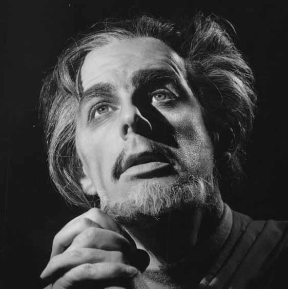
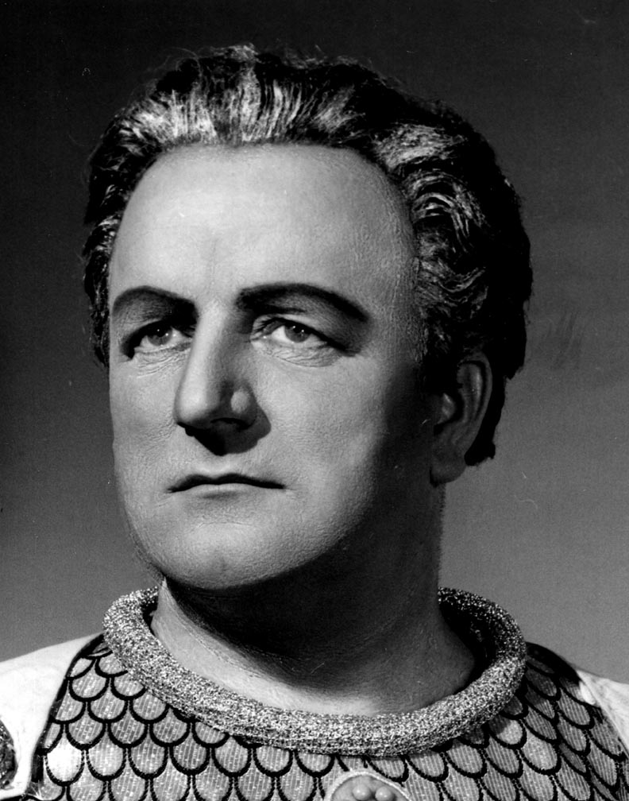

| Search Results |
[Met Performance] CID:155550
Faust {487}
Metropolitan Opera House; 01/1/1951
|
[Met Performance] CID:155560
Der Fliegende Holländer {51}
Metropolitan Opera House; 01/2/1951
|
[Met Performance] CID:155570
Il Trovatore {249}
Metropolitan Opera House; 01/3/1951
|
[Met Performance] CID:155580
Die Fledermaus {14}
Metropolitan Opera House; 01/4/1951
Debuts: Marguerite Piazza, Tibor Kozma |
[Met Performance] CID:155590
Der Rosenkavalier {137}
Metropolitan Opera House; 01/5/1951
Debut: Fritz Krenn
Review |
[Met Performance] CID:155600
Don Giovanni {155}
Metropolitan Opera House; 01/6/1951
Broadcast |
[Met Performance] CID:155610
Manon Lescaut {82}
Metropolitan Opera House; 01/6/1951
|
[Met Performance] CID:155620
Il Barbiere di Siviglia {231}
Metropolitan Opera House; 01/8/1951
|
[Met Performance] CID:155630
Der Rosenkavalier {138}
American Academy of Music, Philadelphia, Pennsylvania; 01/9/1951
|
[Met Performance] CID:155640
Manon Lescaut {83}
Metropolitan Opera House; 01/10/1951
|
[Met Performance] CID:155650
Der Rosenkavalier {139}
Metropolitan Opera House; 01/11/1951
|
[Met Performance] CID:155660
Die Zauberflöte {114}
Metropolitan Opera House; 01/12/1951
Debut: Kurt Adler |
[Met Performance] CID:155670
Der Fliegende Holländer {52}
Metropolitan Opera House; 01/12/1951
|
[Met Performance] CID:155680
Il Trovatore {250}
Metropolitan Opera House; 01/13/1951
Broadcast |
[Met Performance] CID:155690
Die Fledermaus {15}
Metropolitan Opera House; 01/13/1951
|
[Met Performance] CID:155700
Faust {488}
Metropolitan Opera House; 01/14/1951
|
[Met Performance] CID:155710
Die Fledermaus {16}
Metropolitan Opera House; 01/15/1951
|
[Met Performance] CID:155720
Der Rosenkavalier {140}
Metropolitan Opera House; 01/16/1951
|
[Met Performance] CID:155730
New productions
Cavalleria Rusticana {340}
Pagliacci {379}
Metropolitan Opera House; 01/17/1951
Debuts: Hans Busch, Horace Armistead, John Robert Lloyd, Max Leavitt
Review |
[Met Performance] CID:155740
Il Barbiere di Siviglia {232}
Metropolitan Opera House; 01/18/1951
|
[Met Performance] CID:155750
Cavalleria Rusticana {341}
Pagliacci {380}
Metropolitan Opera House; 01/19/1951
|
[Met Performance] CID:155760
Die Fledermaus {17}
Metropolitan Opera House; 01/20/1951
Broadcast |
[Met Performance] CID:155770
Il Trovatore {251}
Metropolitan Opera House; 01/20/1951
|
[Met Performance] CID:155780
Tristan und Isolde {345}
Metropolitan Opera House; 01/22/1951
|
[Met Performance] CID:155790
Il Trovatore {252}
Metropolitan Opera House; 01/23/1951
|
[Met Performance] CID:155800
Faust {489}
Metropolitan Opera House; 01/24/1951
|
[Met Performance] CID:155810
Das Rheingold {95}
Ring Cycle [79]
Metropolitan Opera House; 01/25/1951
|
[Met Performance] CID:155820
Die Fledermaus {18}
Metropolitan Opera House; 01/25/1951
|
[Met Performance] CID:155830
La Traviata {339}
Metropolitan Opera House; 01/26/1951
|
[Met Performance] CID:155840
Das Rheingold {96}
Ring Cycle {80]
Metropolitan Opera House; 01/27/1951
Broadcast |
[Met Performance] CID:155850
Il Trovatore {253}
Metropolitan Opera House; 01/27/1951
|
[Met Performance] CID:155860
Cavalleria Rusticana {342}
Pagliacci {381}
Metropolitan Opera House; 01/29/1951
|
[Met Performance] CID:155870
Il Barbiere di Siviglia {233}
Metropolitan Opera House; 01/30/1951
|
[Met Performance] CID:155880
Der Rosenkavalier {141}
Metropolitan Opera House; 01/31/1951
|
[Met Performance] CID:155890
Die Walküre {370}
Ring Cycle [79]
Metropolitan Opera House; 02/1/1951
Debut: Günther Treptow
Review |
[Met Performance] CID:155900
Die Fledermaus {19}
Metropolitan Opera House; 02/2/1951
|
[Met Performance] CID:155910
Die Walküre {371}
Ring Cycle [80]
Metropolitan Opera House; 02/3/1951
Broadcast |
[Met Performance] CID:155920
Il Barbiere di Siviglia {234}
Metropolitan Opera House; 02/3/1951
|
[Met Performance] CID:155930
Cavalleria Rusticana {343}
Pagliacci {382}
Metropolitan Opera House; 02/4/1951
|
[Met Performance] CID:155940
Der Rosenkavalier {142}
Metropolitan Opera House; 02/5/1951
|
[Met Performance] CID:155950
Die Fledermaus {20}
Metropolitan Opera House; 02/6/1951
|
[Met Performance] CID:155960
Siegfried {213}
Ring Cycle [79]
Metropolitan Opera House; 02/7/1951
|
[Met Performance] CID:155970
La Traviata {340}
Metropolitan Opera House; 02/7/1951
|
[Met Performance] CID:155980
Il Trovatore {254}
Metropolitan Opera House; 02/8/1951
|
[Met Performance] CID:155990
Cavalleria Rusticana {344}
Pagliacci {383}
Metropolitan Opera House; 02/9/1951
|
[Met Performance] CID:156000
Siegfried {214}
Ring Cycle [80]
Metropolitan Opera House; 02/10/1951
Broadcast |
[Met Performance] CID:156010
Die Zauberflöte {115}
Metropolitan Opera House; 02/10/1951
|
[Met Performance] CID:156020
Il Trovatore {255}
Metropolitan Opera House; 02/12/1951
|
[Met Performance] CID:156030
Die Fledermaus {21}
Metropolitan Opera House; 02/13/1951
|
[Met Performance] CID:156040
Faust {490}
Metropolitan Opera House; 02/14/1951
|
[Met Performance] CID:156050
Götterdämmerung {169}
Ring Cycle [79]
Metropolitan Opera House; 02/15/1951
|
[Met Performance] CID:156060
Il Barbiere di Siviglia {235}
Metropolitan Opera House; 02/15/1951
|
[Met Performance] CID:156070
Il Trovatore {256}
Metropolitan Opera House; 02/16/1951
|
[Met Performance] CID:156080
Götterdämmerung {170}
Ring Cycle [80]
Metropolitan Opera House; 02/17/1951
Broadcast |
[Met Performance] CID:156090
La Traviata {341}
Metropolitan Opera House; 02/17/1951
Debut: Zebra Nevins |
[Met Performance] CID:156100
Tristan und Isolde {346}
Metropolitan Opera House; 02/19/1951
|
[Met Performance] CID:156110
Cavalleria Rusticana {345}
Pagliacci {384}
American Academy of Music, Philadelphia, Pennsylvania; 02/20/1951
|
[Met Performance] CID:156120
Die Zauberflöte {116}
Metropolitan Opera House; 02/21/1951
|
[Met Performance] CID:156130
Die Fledermaus {22}
Metropolitan Opera House; 02/22/1951
|
[Met Performance] CID:156140
Die Zauberflöte {117}
Metropolitan Opera House; 02/23/1951
|
[Met Performance] CID:156150
Don Carlo {25}
Metropolitan Opera House; 02/23/1951
|
[Met Performance] CID:156160
Der Rosenkavalier {143}
Metropolitan Opera House; 02/24/1951
Broadcast |
[Met Performance] CID:156170
Il Barbiere di Siviglia {236}
Metropolitan Opera House; 02/24/1951
|
[Met Performance] CID:156180
Die Fledermaus {23}
Metropolitan Opera House; 02/26/1951
|
[Met Performance] CID:156190
Il Trovatore {257}
Metropolitan Opera House; 02/27/1951
Review |
[Met Performance] CID:156200
Die Zauberflöte {118}
Metropolitan Opera House; 02/27/1951
|
[Met Performance] CID:156210
Tristan und Isolde {347}
Metropolitan Opera House; 02/28/1951
|
[Met Performance] CID:156220
Faust {491}
Metropolitan Opera House; 03/1/1951
|
[Met Performance] CID:156230
La Traviata {342}
Metropolitan Opera House; 03/2/1951
|
[Met Performance] CID:156240
Opera News
Cavalleria Rusticana {346}
Pagliacci {385}
Metropolitan Opera House; 03/3/1951
Broadcast |
[Met Performance] CID:156250
Die Fledermaus {24}
Metropolitan Opera House; 03/3/1951
Debut: Zachary Solov |
[Met Performance] CID:156260
Il Barbiere di Siviglia {237}
Metropolitan Opera House; 03/5/1951
|
[Met Performance] CID:156270
Fidelio {74}
Metropolitan Opera House; 03/6/1951
|
[Met Performance] CID:156280
Cavalleria Rusticana {347}
Pagliacci {386}
Metropolitan Opera House; 03/7/1951
|
[Met Performance] CID:156290
Tristan und Isolde {348}
Metropolitan Opera House; 03/8/1951
|
[Met Performance] CID:156300
Il Trovatore {258}
Metropolitan Opera House; 03/9/1951
|
[Met Performance] CID:156310
Die Fledermaus {25}
Metropolitan Opera House; 03/9/1951
|
[Met Performance] CID:156320
 Opera News
Opera News
Fidelio {75}
Metropolitan Opera House; 03/10/1951
Broadcast |
[Met Performance] CID:156330
La Bohème {446}
Metropolitan Opera House; 03/10/1951
Debut: Carlo Tomanelli |
[Met Performance] CID:156340
Siegfried {215}
Metropolitan Opera House; 03/12/1951
|
[Met Performance] CID:156350
Cavalleria Rusticana {348}
Pagliacci {387}
Metropolitan Opera House; 03/13/1951
|
[Met Performance] CID:156360
Fidelio {76}
Metropolitan Opera House; 03/14/1951
|
[Met Performance] CID:156370
Don Giovanni {156}
Metropolitan Opera House; 03/15/1951
|
[Met Performance] CID:156380
Fidelio {77}
Metropolitan Opera House; 03/16/1951
|
[Met Performance] CID:156390
Opera News
La Bohème {447}
Metropolitan Opera House; 03/17/1951
Broadcast |
[Met Performance] CID:156400
Faust {492}
Metropolitan Opera House; 03/17/1951
Debut: Victoria de los Angeles
Review |
[Met Performance] CID:156410
Fidelio {78}
Metropolitan Opera House; 03/19/1951
|
[Met Performance] CID:156420
Il Trovatore {259}
Metropolitan Opera House; 03/20/1951
|
[Met Performance] CID:156430
Madama Butterfly {306}
Metropolitan Opera House; 03/20/1951
|
[Met Performance] CID:156440
La Bohème {448}
Metropolitan Opera House; 03/21/1951
|
[Met Performance] CID:156450
Cavalleria Rusticana {349}
Pagliacci {388}
Metropolitan Opera House; 03/22/1951
|
[Met Performance] CID:156460
La Forza del Destino: Convent Scene
Verdi Requiem Mass {30}
Metropolitan Opera House; 03/23/1951
First Appearance: Elena Nikolaidi
Review |
[Met Performance] CID:156470
La Forza del Destino: Convent Scene
Verdi Requiem Mass {31}
Metropolitan Opera House; 03/24/1951
|
[Met Performance] CID:156480
Die Fledermaus {26}
Metropolitan Opera House; 03/24/1951
|
[Met Concert/Gala] CID:352708
Metropolitan Opera Jamboree
New York, Manhattan, Vanderbilt Theater; 03/24/1951
Broadcast |
[Met Performance] CID:156490
Tristan und Isolde {349}
Metropolitan Opera House; 03/26/1951
|
[Met Performance] CID:156500
Faust {493}
Lyric Theatre, Baltimore, Maryland; 03/27/1951
|
[Met Performance] CID:156510
Die Fledermaus {27}
Lyric Theatre, Baltimore, Maryland; 03/28/1951
|
[Met Performance] CID:156520
Madama Butterfly {307}
Metropolitan Opera House; 03/29/1951
|
[Met Performance] CID:156530
La Bohème {449}
Metropolitan Opera House; 03/30/1951
|
[Met Performance] CID:156540
Die Fledermaus {28}
Metropolitan Opera House; 03/31/1951
|
[Met Performance] CID:156550
La Traviata {343}
Metropolitan Opera House; 03/31/1951
|
[Met Performance] CID:156560
La Bohème {450}
American Academy of Music, Philadelphia, Pennsylvania; 04/2/1951
|
[Met Performance] CID:156570
Die Fledermaus {29}
American Academy of Music, Philadelphia, Pennsylvania; 04/3/1951
|
[Met Performance] CID:156580
Die Fledermaus {30}
Metropolitan Opera House; 04/5/1951
Debut: Suzanne Ames |
[Met Performance] CID:156590
Il Trovatore {260}
Metropolitan Opera House; 04/6/1951
|
[Met Performance] CID:156600
La Bohème {451}
Metropolitan Opera House; 04/6/1951
Debut: Frank D'Elia |
[Met Performance] CID:156610
Il Barbiere di Siviglia {238}
Metropolitan Opera House; 04/7/1951
|
[Met Performance] CID:156620
Die Fledermaus {31}
Metropolitan Opera House; 04/7/1951
|
[Met Performance] CID:156630
La Traviata {344}
Boston Opera House, Boston, Massachusetts; 04/9/1951
|
[Met Performance] CID:156640
Die Zauberflöte {119}
Boston Opera House, Boston, Massachusetts; 04/10/1951
|
[Met Performance] CID:156650
La Bohème {452}
Boston Opera House, Boston, Massachusetts; 04/11/1951
|
[Met Performance] CID:156660
Il Barbiere di Siviglia {239}
Boston Opera House, Boston, Massachusetts; 04/11/1951
|
[Met Performance] CID:156670
Die Fledermaus {32}
Boston Opera House, Boston, Massachusetts; 04/12/1951
|
[Met Performance] CID:156680
Don Carlo {26}
Boston Opera House, Boston, Massachusetts; 04/13/1951
|
[Met Performance] CID:156690
Madama Butterfly {308}
Boston Opera House, Boston, Massachusetts; 04/14/1951
|
[Met Performance] CID:156700
Faust {494}
Boston Opera House, Boston, Massachusetts; 04/14/1951
|
[Met Performance] CID:156710
Tristan und Isolde {350}
Boston Opera House, Boston, Massachusetts; 04/15/1951
|
[Met Performance] CID:156720
Don Carlo {27}
Cleveland Public Auditorium, Cleveland, Ohio; 04/16/1951
|
[Met Performance] CID:156730
La Traviata {345}
Cleveland Public Auditorium,Cleveland, Ohio; 04/17/1951
|
[Met Performance] CID:156740
Die Fledermaus {33}
Cleveland Public Auditorium, Cleveland, Ohio; 04/18/1951
|
[Met Performance] CID:156750
Il Barbiere di Siviglia {240}
Cleveland Public Auditorium, Cleveland, Ohio; 04/19/1951
|
[Met Performance] CID:156760
Il Trovatore {261}
Cleveland Public Auditorium, Cleveland, Ohio; 04/20/1951
|
[Met Performance] CID:156770
Tristan und Isolde {351}
Cleveland Public Auditorium, Cleveland, Ohio; 04/20/1951
|
[Met Performance] CID:156780
Cavalleria Rusticana {350}
Pagliacci {389}
Cleveland Public Auditorium, Cleveland, Ohio; 04/21/1951
|
[Met Performance] CID:156790
Don Giovanni {157}
Cleveland Public Auditorium, Cleveland, Ohio; 04/21/1951
|
[Met Performance] CID:156800
Il Trovatore {262}
Fox Theatre, Atlanta, Georgia; 04/23/1951
|
[Met Performance] CID:156810
Die Fledermaus {34}
Fox Theatre, Atlanta, Georgia; 04/24/1951
|
[Met Performance] CID:156820
Cavalleria Rusticana {351}
Pagliacci {390}
Fox Theatre, Atlanta, Georgia; 04/25/1951
|
[Met Performance] CID:156830
Il Barbiere di Siviglia {241}
Fox Theatre, Atlanta, Georgia; 04/25/1951
|
[Met Performance] CID:156840
Faust {495}
Ellis Auditorium, Memphis, Tennessee; 04/26/1951
|
[Met Performance] CID:156850
Die Fledermaus {35}
Fair Park Auditorium, Dallas, Texas; 04/27/1951
|
[Met Performance] CID:156860
Don Carlo {28}
Fair Park Auditorium, Dallas, Texas; 04/28/1951
|
[Met Performance] CID:156870
Madama Butterfly {309}
Fair Park Auditorium, Dallas, Texas; 04/28/1951
|
[Met Performance] CID:156880
Il Barbiere di Siviglia {242}
Fair Park Auditorium, Dallas, Texas; 04/29/1951
|
[Met Performance] CID:156890
Il Trovatore {263}
City Auditorium, Houston, Texas; 04/30/1951
|
[Met Performance] CID:156900
Faust {496}
City Auditorium, Houston, Texas; 05/1/1951
|
[Met Performance] CID:156910
La Traviata {346}
Municipal Auditorium, Oklahoma City, Oklahoma; 05/2/1951
|
[Met Performance] CID:156920
Die Fledermaus {36}
KRNT Theater, Des Moines, Iowa; 05/3/1951
|
[Met Performance] CID:156930
Die Fledermaus {37}
Northrup Memorial Auditorium, Minneapolis, Minnesota; 05/4/1951
|
[Met Performance] CID:156940
Cavalleria Rusticana {352}
Pagliacci {391}
Northrup Memorial Auditorium, Minneapolis, Minnesota; 05/5/1951
|
[Met Performance] CID:156950
Die Zauberflöte {120}
Northrup Memorial Auditorium, Minneapolis, Minnesota; 05/5/1951
|
[Met Performance] CID:156960
Faust {497}
Northrup Memorial Auditorium, Minneapolis, Minnesota; 05/6/1951
|
[Met Performance] CID:156970
Die Fledermaus {38}
Indiana University Auditorium, Bloomington, Indiana; 05/7/1951
|
[Met Performance] CID:156980
Don Carlo {29}
Indiana University Auditorium, Bloomington, Indiana; 05/8/1951
|
[Met Performance] CID:156990
Faust {498}
Purdue Hall of Music, Lafayette, Indiana; 05/9/1951
|
[Met Performance] CID:157000
Die Fledermaus {39}
Civic Opera House, Chicago, Illinois; 05/10/1951
|
[Met Performance] CID:157010
La Traviata {347}
Civic Opera House, Chicago, Illinois; 05/11/1951
|
[Met Performance] CID:157020
Die Fledermaus {40}
Civic Opera House, Chicago, Illinois; 05/12/1951
|
[Met Performance] CID:157030
La Bohème {453}
Civic Opera House, Chicago, Illinois; 05/12/1951
|
[Met Performance] CID:157040
Die Fledermaus {41}
Eastman Theatre, Rochester, New York; 5/14/1951
|
[Met Performance] CID:158000
New production
Aida {530}
Metropolitan Opera House; 11/13/1951
Opening Night {67}
Rudolf Bing, General Manager
Debuts: George London, Elena Nikolaidi, Janet Collins
Review |
[Met Performance] CID:158010
New production
Rigoletto {305}
Metropolitan Opera House; 11/15/1951
Debuts: Hilde Güden, Alois Pernerstorfer, Norman Scott, Algerd Brazis, Eugene Berman
Review |
[Met Performance] CID:158020
Aida {531}
Metropolitan Opera House; 11/17/1951
|
[Met Performance] CID:158030
Le Nozze di Figaro {120}
Metropolitan Opera House; 11/17/1951
Debuts: Mildred Miller, Gabor Carelli
Review |
[Met Performance] CID:158040
Rigoletto {306}
Metropolitan Opera House; 11/19/1951
|
[Met Performance] CID:158050
Aida {532}
American Academy of Music, Philadelphia, Pennsylvania; 11/20/1951
Review |
[Met Performance] CID:158060
Le Nozze di Figaro {121}
Metropolitan Opera House; 11/21/1951
|
[Met Performance] CID:158070
Aida {533}
Metropolitan Opera House; 11/22/1951
Debut: Nell Rankin
Review |
[Met Performance] CID:158080
Rigoletto {307}
Metropolitan Opera House; 11/23/1951
|
[Met Performance] CID:158090
La Bohème {454}
Metropolitan Opera House; 11/24/1951
Review |
[Met Performance] CID:158100
La Traviata {348}
Metropolitan Opera House; 11/24/1951
Debuts: Giacinto Prandelli, Renato Capecchi, Maria Karnilova, Socrates Birsky
Review |
[Met Performance] CID:158110
Aida {534}
Metropolitan Opera House; 11/26/1951
Review |
[Met Performance] CID:158120
Le Nozze di Figaro {122}
Metropolitan Opera House; 11/27/1951
|
[Met Performance] CID:158130
Rigoletto {308}
Metropolitan Opera House; 11/28/1951
Review |
[Met Performance] CID:158140
La Bohème {455}
Metropolitan Opera House; 11/29/1951
Review |
[Met Performance] CID:158150
Die Fledermaus {42}
Metropolitan Opera House; 11/30/1951
Debuts: Kip Good, Jack Mann |
[Met Performance] CID:158160
La Traviata {349}
Metropolitan Opera House; 12/1/1951
Broadcast |
[Met Performance] CID:158170
Cavalleria Rusticana {353}
Pagliacci {392}
Metropolitan Opera House; 12/1/1951
|
[Met Performance] CID:158180
Le Nozze di Figaro {123}
Metropolitan Opera House; 12/3/1951
|
[Met Performance] CID:158190
Rigoletto {309}
American Academy of Music, Philadelphia, Pennsylvania; 12/4/1951
|
[Met Performance] CID:158200
Cavalleria Rusticana {354}
Pagliacci {393}
Metropolitan Opera House; 12/5/1951
|
[Met Performance] CID:158210
Die Fledermaus {43}
Metropolitan Opera House; 12/6/1951
|
[Met Performance] CID:158220
Manon {164}
Metropolitan Opera House; 12/7/1951
Debuts: Frances Cavicchio, Gilbert Reed
Review |
[Met Performance] CID:158230
Opera News
Rigoletto {310}
Metropolitan Opera House; 12/8/1951
Broadcast |
[Met Performance] CID:158240
Aida {535}
Metropolitan Opera House; 12/8/1951
Review |
[Met Performance] CID:158250
Die Fledermaus {44}
Metropolitan Opera House; 12/10/1951
Debut: Josef Blatt |
[Met Performance] CID:158260
La Traviata {350}
Metropolitan Opera House; 12/11/1951
|
[Met Performance] CID:158270
Aida {536}
Metropolitan Opera House; 12/12/1951
|
[Met Performance] CID:158280
Götterdämmerung {171}
Metropolitan Opera House; 12/13/1951
Review |
[Met Performance] CID:158290
Cavalleria Rusticana {355}
Pagliacci {394}
Metropolitan Opera House; 12/14/1951
Review |
[Met Performance] CID:158300
Opera News
Manon {165}
Metropolitan Opera House; 12/15/1951
Broadcast |
[Met Performance] CID:158310
La Bohème {456}
Metropolitan Opera House; 12/15/1951
Review |
[Met Performance] CID:158320
Rigoletto {311}
Metropolitan Opera House; 12/16/1951
|
[Met Performance] CID:158330
Götterdämmerung {172}
Metropolitan Opera House; 12/17/1951
Review |
[Met Performance] CID:158340
Die Fledermaus {45}
Metropolitan Opera House; 12/18/1951
|
[Met Performance] CID:158350
Lucia di Lammermoor {253}
Metropolitan Opera House; 12/19/1951
Debut: Janet Picarde |
[Met Performance] CID:158360
La Traviata {351}
Metropolitan Opera House; 12/20/1951
|
[Met Performance] CID:158370
Aida {537}
Metropolitan Opera House; 12/21/1951
|
[Met Performance] CID:158380
Opera News
Die Fledermaus {46}
Metropolitan Opera House; 12/22/1951
Broadcast |
[Met Performance] CID:158390
Rigoletto {312}
Metropolitan Opera House; 12/22/1951
|
[Met Performance] CID:158400
La Bohème {457}
Metropolitan Opera House; 12/24/1951
|
[Met Performance] CID:158410
Lucia di Lammermoor {254}
Metropolitan Opera House; 12/25/1951
|
[Met Performance] CID:158420
Manon {166}
Metropolitan Opera House; 12/26/1951
Review |
[Met Performance] CID:158430
Cavalleria Rusticana {356}
Pagliacci {395}
Metropolitan Opera House; 12/27/1951
Review |
[Met Performance] CID:158440
New production
Così Fan Tutte {13}
Metropolitan Opera House; 12/28/1951
Debut: Alfred Lunt
Review |
[Met Performance] CID:158450
Lucia di Lammermoor {255}
Metropolitan Opera House; 12/29/1951
Broadcast |
[Met Performance] CID:158460
Aida {538}
Metropolitan Opera House; 12/29/1951
|
[Met Performance] CID:158470
Die Fledermaus {47}
Metropolitan Opera House; 12/31/1951
|
[Met Performance] CID:158480
Manon {167}
Metropolitan Opera House; 01/1/1952
|
[Met Performance] CID:158490
Così Fan Tutte {14}
Metropolitan Opera House; 01/2/1952
Review |
[Met Performance] CID:158500
Lucia di Lammermoor {256}
Metropolitan Opera House; 01/3/1952
Review |
[Met Performance] CID:158510
Le Nozze di Figaro {124}
Metropolitan Opera House; 01/4/1952
|
[Met Performance] CID:158520
Götterdämmerung {173}
Metropolitan Opera House; 01/5/1952
Broadcast |
[Met Performance] CID:158530
La Bohème {458}
Metropolitan Opera House; 01/5/1952
|
[Met Performance] CID:158540
Madama Butterfly {310}
Metropolitan Opera House; 01/6/1952
Review |
[Met Performance] CID:158550
Cavalleria Rusticana {357}
Pagliacci {396}
Metropolitan Opera House; 01/7/1952
|
[Met Performance] CID:158560
Die Fledermaus {48}
Metropolitan Opera House; 01/8/1952
|
[Met Performance] CID:158570
Madama Butterfly {311}
Metropolitan Opera House; 01/9/1952
|
[Met Performance] CID:158580
Gianni Schicchi {50}
Salome {35}
Metropolitan Opera House; 01/10/1952
Debuts: Eugene Tonry, Elisabeth Höngen |
[Met Performance] CID:158590
La Traviata {352}
Metropolitan Opera House; 01/11/1952
|
[Met Performance] CID:158600
Così Fan Tutte {15}
Metropolitan Opera House; 01/12/1952
Broadcast |
[Met Performance] CID:158610
Aida {539}
Metropolitan Opera House; 01/12/1952
Review |
[Met Performance] CID:158620
Madama Butterfly {312}
Metropolitan Opera House; 01/14/1952
|
[Met Performance] CID:158630
Gianni Schicchi {51}
Salome {36}
American Academy of Music, Philadelphia, Pennsylvania; 01/15/1952
|
[Met Performance] CID:158640
Rigoletto {313}
Metropolitan Opera House; 01/16/1952
Review |
[Met Performance] CID:158660
Così Fan Tutte {16}
Metropolitan Opera House; 01/17/1952
|
[Met Performance] CID:158680
La Bohème {459}
Metropolitan Opera House; 01/18/1952
Review |
[Met Performance] CID:158690
Gianni Schicchi {52}
Salome {37}
Metropolitan Opera House; 01/19/1952
Broadcast |
[Met Performance] CID:158700
Lucia di Lammermoor {257}
Metropolitan Opera House; 01/19/1952
|
[Met Performance] CID:158710
Così Fan Tutte {17}
Metropolitan Opera House; 01/21/1952
|
[Met Performance] CID:158720
Götterdämmerung {174}
Metropolitan Opera House; 01/22/1952
Review |
[Met Performance] CID:158730
La Traviata {353}
Metropolitan Opera House; 01/23/1952
|
[Met Performance] CID:158740
Gianni Schicchi {53}
Salome {38}
Metropolitan Opera House; 01/24/1952
|
[Met Performance] CID:158750
Rigoletto {314}
Metropolitan Opera House; 01/25/1952
|
[Met Performance] CID:158760
Cavalleria Rusticana {358}
Pagliacci {397}
Metropolitan Opera House; 01/26/1952
Broadcast |
[Met Performance] CID:158770
Manon {168}
Metropolitan Opera House; 01/26/1952
|
[Met Performance] CID:158780
Gianni Schicchi {54}
Salome {39}
Metropolitan Opera House; 01/28/1952
|
[Met Performance] CID:158790
Aida {540}
Metropolitan Opera House; 01/29/1952
|
[Met Performance] CID:158800
La Bohème {460}
Metropolitan Opera House; 01/30/1952
Reviews |
[Met Performance] CID:158810
New production
Carmen {465}
Metropolitan Opera House; 01/31/1952
Debuts: Tyrone Guthrie, Loren Hightower
Review |
[Met Performance] CID:158820
Götterdämmerung {175}
Metropolitan Opera House; 02/1/1952
Review |
[Met Performance] CID:158830
Madama Butterfly {313}
Metropolitan Opera House; 02/2/1952
Broadcast |
[Met Performance] CID:158840
Aida {541}
Metropolitan Opera House; 02/2/1952
|
[Met Performance] CID:158850
Lucia di Lammermoor {258}
Metropolitan Opera House; 02/4/1952
Debut: Graciela Rivera
Review |
[Met Performance] CID:158860
Rigoletto {315}
Metropolitan Opera House; 02/5/1952
|
[Met Performance] CID:158870
Gianni Schicchi {55}
Salome {40}
Metropolitan Opera House; 02/6/1952
|
[Met Performance] CID:158880
Carmen {466}
Metropolitan Opera House; 02/7/1952
|
[Met Performance] CID:158890
Madama Butterfly {314}
Metropolitan Opera House; 02/8/1952
|
[Met Performance] CID:158900
Otello {106}
Metropolitan Opera House; 02/9/1952
Broadcast
Review |
[Met Performance] CID:158910
Così Fan Tutte {18}
Metropolitan Opera House; 02/9/1952
Review |
[Met Performance] CID:158920
Rigoletto {316}
Metropolitan Opera House; 02/11/1952
|
[Met Performance] CID:158930
Carmen {467}
American Academy of Music, Philadelphia, Pennsylvania; 02/12/1952
|
[Met Performance] CID:158940
Die Fledermaus {49}
Metropolitan Opera House; 02/13/1952
|
[Met Performance] CID:158950
La Bohème {461}
Metropolitan Opera House; 02/14/1952
|
[Met Performance] CID:158960
Otello {107}
Metropolitan Opera House; 02/15/1952
Review |
[Met Performance] CID:158970
Opera News
Carmen {468}
Metropolitan Opera House; 02/16/1952
Broadcast |
[Met Performance] CID:158980
Madama Butterfly {315}
Metropolitan Opera House; 02/16/1952
|
[Met Performance] CID:158990
Elektra {15}
Metropolitan Opera House; 02/18/1952
Debut: Walburga Wegner
Review |
[Met Performance] CID:159000
La Traviata {354}
Metropolitan Opera House; 02/19/1952
|
[Met Performance] CID:159010
Carmen {469}
Metropolitan Opera House; 02/19/1952
Review |
[Met Performance] CID:159020
Otello {108}
Metropolitan Opera House; 02/20/1952
Review |
[Met Performance] CID:159030
Aida {542}
Metropolitan Opera House; 02/21/1952
|
[Met Performance] CID:159040
Le Nozze di Figaro {125}
Metropolitan Opera House; 02/22/1952
|
[Met Performance] CID:159050
Opera News
Elektra {16}
Metropolitan Opera House; 02/23/1952
Broadcast
Review |
[Met Performance] CID:159060
Il Trovatore {264}
Metropolitan Opera House; 02/23/1952
Review |
[Met Concert/Gala] CID:351291
'21' At the Met
Metropolitan Opera House; 02/24/1952
|
[Met Performance] CID:159070
La Traviata {355}
Metropolitan Opera House; 02/25/1952
|
[Met Performance] CID:159080
Cavalleria Rusticana {359}
Pagliacci {398}
Metropolitan Opera House; 02/26/1952
|
[Met Performance] CID:159090
La Bohème {462}
Metropolitan Opera House; 02/26/1952
Debut: Brenda Lewis
Review |
[Met Performance] CID:159100
Aida {543}
Metropolitan Opera House; 02/27/1952
|
[Met Performance] CID:159110
Manon {169}
Metropolitan Opera House; 02/28/1952
|
[Met Performance] CID:159120
Il Trovatore {265}
Metropolitan Opera House; 02/29/1952
|
[Met Performance] CID:159130
Le Nozze di Figaro {126}
Metropolitan Opera House; 03/1/1952
Broadcast |
[Met Performance] CID:159140
Carmen {470}
Metropolitan Opera House; 03/1/1952
Review |
[Met Performance] CID:159150
Otello {109}
Metropolitan Opera House; 03/3/1952
|
[Met Performance] CID:159160
Cavalleria Rusticana {360}
Pagliacci {399}
Metropolitan Opera House; 03/4/1952
Debut: Ernesto Barbini |
[Met Performance] CID:159170
Alceste {6}
Metropolitan Opera House; 03/4/1952
Reviews |
[Met Performance] CID:159180
Carmen {471}
Metropolitan Opera House; 03/5/1952
|
[Met Performance] CID:159190
Madama Butterfly {316}
Metropolitan Opera House; 03/6/1952
Review |
[Met Performance] CID:159200
Elektra {17}
Metropolitan Opera House; 03/7/1952
|
[Met Performance] CID:159210
Aida {544}
Metropolitan Opera House; 03/8/1952
Broadcast |
[Met Performance] CID:159220
Die Fledermaus {50}
Metropolitan Opera House; 03/8/1952
|
[Met Performance] CID:159230
Alceste {7}
Metropolitan Opera House; 03/10/1952
|
[Met Performance] CID:159240
Il Trovatore {266}
Metropolitan Opera House; 03/11/1952
Review |
[Met Performance] CID:159250
Elektra {18}
Metropolitan Opera House; 03/12/1952
|
[Met Performance] CID:159260
Otello {110}
Metropolitan Opera House; 03/13/1952
Review |
[Met Performance] CID:159270
Cavalleria Rusticana {361}
Pagliacci {400}
Metropolitan Opera House; 03/14/1952
|
[Met Performance] CID:159280
Lucia di Lammermoor {259}
Metropolitan Opera House; 03/14/1952
|
[Met Performance] CID:159290
La Bohème {463}
Metropolitan Opera House; 03/15/1952
Broadcast |
[Met Performance] CID:159300
Die Meistersinger von Nürnberg {261}
Metropolitan Opera House; 03/15/1952
Debuts: Hans Hopf, Richard Holm
Review |
[Met Performance] CID:159310
Carmen {472}
Metropolitan Opera House; 03/17/1952
|
[Met Performance] CID:159320
Le Nozze di Figaro {127}
American Academy of Music, Philadelphia, Pennsylvania; 03/18/1952
|
[Met Performance] CID:159330
Alceste {8}
Metropolitan Opera House; 03/19/1952
Review |
[Met Performance] CID:159340
Elektra {19}
Metropolitan Opera House; 03/20/1952
|
[Met Performance] CID:159350
Don Carlo {30}
Metropolitan Opera House; 03/21/1952
Review |
[Met Performance] CID:159360
Die Meistersinger von Nürnberg {262}
Metropolitan Opera House; 03/22/1952
Broadcast |
[Met Performance] CID:159370
La Bohème {464}
Metropolitan Opera House; 03/22/1952
|
[Met Performance] CID:159380
Don Carlo {31}
Metropolitan Opera House; 03/24/1952
Review |
[Met Performance] CID:159390
Carmen {473}
Lyric Theatre, Baltimore, Maryland; 03/25/1952
Review |
[Met Performance] CID:159400
Il Trovatore {267}
Lyric Theatre, Baltimore, Maryland; 03/26/1952
Review |
[Met Performance] CID:159410
Die Meistersinger von Nürnberg {263}
Metropolitan Opera House; 03/27/1952
|
[Met Performance] CID:159420
Carmen {474}
Metropolitan Opera House; 03/28/1952
Review |
[Met Performance] CID:159430
Alceste {9}
Metropolitan Opera House; 03/29/1952
Broadcast |
[Met Performance] CID:159440
Madama Butterfly {317}
Metropolitan Opera House; 03/29/1952
|
[Met Performance] CID:159450
Aida {545}
Metropolitan Opera House; 03/31/1952
Review |
[Met Performance] CID:159460
Alceste {10}
Metropolitan Opera House; 04/1/1952
Review |
[Met Performance] CID:159470
Die Meistersinger von Nürnberg {264}
Metropolitan Opera House; 04/2/1952
|
[Met Performance] CID:159480
Il Trovatore {268}
Metropolitan Opera House; 04/3/1952
|
[Met Performance] CID:159490
La Traviata {356}
Metropolitan Opera House; 04/4/1952
|
[Met Performance] CID:159500
Parsifal {183}
Metropolitan Opera House; 04/4/1952
Review |
[Met Performance] CID:159510
Opera News
Don Carlo {32}
Metropolitan Opera House; 04/5/1952
Broadcast |
[Met Performance] CID:159520
Carmen {475}
Metropolitan Opera House; 04/5/1952
|
[Met Performance] CID:159530
Manon {170}
Metropolitan Opera House; 04/7/1952
|
[Met Performance] CID:159540
Parsifal {184}
American Academy of Music, Philadelphia, Pennsylvania; 04/8/1952
Review |
[Met Performance] CID:159550
Don Carlo {33}
Metropolitan Opera House; 04/9/1952
Review |
[Met Performance] CID:159560
Le Nozze di Figaro {128}
Metropolitan Opera House; 04/10/1952
|
[Met Performance] CID:159570
Parsifal {185}
Metropolitan Opera House; 04/11/1952
|
[Met Performance] CID:159580
Parsifal {186}
Metropolitan Opera House; 04/12/1952
Broadcast
Review |
[Met Performance] CID:159590
La Traviata {357}
Metropolitan Opera House; 04/12/1952
|
[Met Performance] CID:159600
Aida {546}
Music Hall, Cleveland, Ohio; 04/14/1952
|
[Met Performance] CID:159610
Madama Butterfly {318}
Music Hall, Cleveland, Ohio; 04/15/1952
|
[Met Performance] CID:159620
Rigoletto {317}
Music Hall, Cleveland, Ohio; 04/16/1952
|
[Met Performance] CID:159630
Carmen {476}
Music Hall, Cleveland, Ohio; 04/17/1952
|
[Met Performance] CID:159640
La Bohème {465}
Music Hall, Cleveland, Ohio; 04/18/1952
|
[Met Performance] CID:159650
Gianni Schicchi {56}
Salome {41}
Music Hall, Cleveland, Ohio; 04/18/1952
Debut: Gloria Lyons |
[Met Performance] CID:159660
La Traviata {358}
Music Hall, Cleveland, Ohio; 04/19/1952
Debut: Madeleine Artieres |
[Met Performance] CID:159670
Le Nozze di Figaro {129}
Music Hall, Cleveland, Ohio; 04/19/1952
|
[Met Performance] CID:159680
Aida {547}
Boston Opera House, Boston, Massachusetts; 04/21/1952
|
[Met Performance] CID:159690
Gianni Schicchi {57}
Salome {42}
Boston Opera House, Boston, Massachusetts; 04/22/1952
|
[Met Performance] CID:159700
Carmen {477}
Boston Opera House, Boston, Massachusetts; 04/23/1952
|
[Met Performance] CID:159710
Manon {171}
Boston Opera House, Boston, Massachusetts; 04/23/1952
|
[Met Performance] CID:159720
Il Trovatore {269}
Boston Opera House, Boston, Massachusetts; 04/24/1952
|
[Met Performance] CID:159730
Die Meistersinger von Nürnberg {265}
Boston Opera House, Boston, Massachusetts; 04/25/1952
|
[Met Performance] CID:159740
Rigoletto {318}
Boston Opera House, Boston, Massachusetts; 04/26/1952
|
[Met Performance] CID:159750
Cavalleria Rusticana {362}
Pagliacci {401}
Boston Opera House, Boston, Massachusetts; 04/26/1952
|
[Met Performance] CID:159760
La Bohème {466}
Boston Opera House, Boston, Massachusetts; 04/27/1952
|
[Met Performance] CID:159770
Aida {548}
Washington, D.C.; 04/28/1952
|
[Met Performance] CID:159780
Madama Butterfly {319}
Washington, D.C.; 04/29/1952
|
[Met Performance] CID:159790
Carmen {478}
Washington, D.C.; 04/29/1952
|
[Met Performance] CID:159800
Aida {549}
Richmond, Virginia; 04/30/1952
Debut: Marian Horosko |
[Met Performance] CID:159810
La Traviata {359}
Fox Theatre, Atlanta, Georgia; 05/1/1952
|
[Met Performance] CID:159820
Carmen {479}
Fox Theatre, Atlanta, Georgia; 05/2/1952
|
[Met Performance] CID:159830
La Bohème {467}
Fox Theatre, Atlanta, Georgia; 05/3/1952
|
[Met Performance] CID:159840
Aida {550}
Fox Theatre, Atlanta, Georgia; 05/3/1952
|
[Met Performance] CID:159850
Lucia di Lammermoor {260}
Birmingham, Alabama; 05/5/1952
|
[Met Performance] CID:159860
Madama Butterfly {320}
Birmingham, Alabama; 05/6/1952
|
[Met Performance] CID:159870
Carmen {480}
Memphis, Tennessee; 05/7/1952
|
[Met Performance] CID:159880
Rigoletto {319}
Memphis, Tennessee; 05/8/1952
|
[Met Performance] CID:159890
Aida {551}
Dallas, Texas; 05/9/1952
|
[Met Performance] CID:159900
La Bohème {468}
Dallas, Texas; 05/10/1952
|
[Met Performance] CID:159910
Così Fan Tutte {19}
Dallas, Texas; 05/10/1952
|
[Met Performance] CID:159920
Carmen {481}
Dallas, Texas; 05/11/1952
|
[Met Performance] CID:159930
Cavalleria Rusticana {363}
Pagliacci {402}
Houston, Texas; 05/12/1952
|
[Met Performance] CID:159940
Rigoletto {320}
Houston, Texas; 05/13/1952
|
[Met Performance] CID:159950
Aida {552}
Oklahoma City, Oklahoma; 05/14/1952
|
[Met Performance] CID:159960
Carmen {482}
Des Moines, Iowa; 05/15/1952
|
[Met Performance] CID:159970
Rigoletto {321}
Minneapolis, Minnesota; 05/16/1952
|
[Met Performance] CID:159980
Carmen {483}
Minneapolis, Minnesota; 05/17/1952
|
[Met Performance] CID:159990
Così Fan Tutte {20}
Minneapolis, Minnesota; 05/17/1952
|
[Met Performance] CID:160000
Madama Butterfly {321}
Minneapolis, Minnesota; 05/18/1952
|
[Met Performance] CID:160010
Aida {553}
Bloomington, Indiana; 05/19/1952
|
[Met Performance] CID:160020
Così Fan Tutte {21}
Bloomington, Indiana; 05/20/1952
|
[Met Performance] CID:160030
Carmen {484}
Purdue Hall of Music, Lafayette, Indiana; 05/21/1952
|
[Met Performance] CID:160040
Aida {554}
Kiel Auditorium, St. Louis, Missouri; 05/22/1952
|
[Met Performance] CID:160050
Carmen {485}
Kiel Auditorium, St. Louis, Missouri; 05/23/1952
|
[Met Performance] CID:160060
La Bohème {469}
Kiel Auditorium, St. Louis, Missouri; 05/24/1952
|
[Met Performance] CID:160070
La Traviata {360}
Kiel Auditorium, St. Louis, Missouri; 05/24/1952
|
[Met Performance] CID:160080
Aida {555}
Toronto, Canada; 05/26/1952
|
[Met Performance] CID:160090
La Bohème {470}
Toronto, Canada; 05/27/1952
|
[Met Performance] CID:160100
Carmen {486}
Toronto, Canada; 05/28/1952
|
[Met Performance] CID:160110
Rigoletto {322}
Toronto, Canada; 05/29/1952
|
[Met Performance] CID:160120
Aida {556}
Forum, Montreal Canada; 05/30/1952
|
[Met Performance] CID:160130
Carmen {487}
Forum, Montreal Canada; 05/31/1952
|
[Met Performance] CID:160140
La Traviata {361}
Forum, Montreal Canada; 5/31/1952
|
[Met Performance] CID:161000
New production
La Forza del Destino {58}
Metropolitan Opera House; 11/10/1952
Opening Night {68}
Rudolf Bing, General Manager
Debut: Laura Castellano
Review |
[Met Performance] CID:161010
Tosca {299}
Metropolitan Opera House; 11/12/1952
Review |
[Met Performance] CID:161020
Lohengrin {492}
Metropolitan Opera House; 11/15/1952
Debuts: Josef Greindl, Sigurd Björling, Arthur Budney
Review |
[Met Performance] CID:161030
Rigoletto {323}
Metropolitan Opera House; 11/15/1952
Review |
[Met Performance] CID:161040
Tosca {300}
Metropolitan Opera House; 11/17/1952
|
[Met Performance] CID:161050
La Forza del Destino {59}
American Academy of Music, Philadelphia, Pennsylvania; 11/18/1952
|
[Met Performance] CID:161060
Carmen {488}
Metropolitan Opera House; 11/19/1952
|
[Met Performance] CID:161070
Lohengrin {493}
Metropolitan Opera House; 11/20/1952
|
[Met Performance] CID:161080
La Forza del Destino {60}
Metropolitan Opera House; 11/21/1952
|
[Met Performance] CID:161090
Rigoletto {324}
Metropolitan Opera House; 11/22/1952
|
[Met Performance] CID:161100
Madama Butterfly {322}
Metropolitan Opera House; 11/22/1952
Review |
[Met Performance] CID:161110
Lohengrin {494}
Metropolitan Opera House; 11/24/1952
|
[Met Performance] CID:161120
Tosca {301}
Metropolitan Opera House; 11/25/1952
|
[Met Performance] CID:161130
Don Giovanni {158}
Metropolitan Opera House; 11/26/1952
Debuts: Hilde Zadek, Erich Kunz
Review |
[Met Performance] CID:161140
Madama Butterfly {323}
Metropolitan Opera House; 11/27/1952
|
[Met Performance] CID:161150
Rigoletto {325}
Metropolitan Opera House; 11/28/1952
|
[Met Performance] CID:161160
Opera News
La Forza del Destino {61}
Metropolitan Opera House; 11/29/1952
Broadcast |
[Met Performance] CID:161170
Carmen {489}
Metropolitan Opera House; 11/29/1952
|
[Met Performance] CID:161180
Madama Butterfly {324}
Metropolitan Opera House; 12/1/1952
|
[Met Performance] CID:161190
Don Carlo {34}
Metropolitan Opera House; 12/2/1952
|
[Met Performance] CID:161200
Rigoletto {326}
Metropolitan Opera House; 12/3/1952
|
[Met Performance] CID:161210
La Forza del Destino {62}
Metropolitan Opera House; 12/4/1952
|
[Met Performance] CID:161220
Lohengrin {495}
Metropolitan Opera House; 12/5/1952
|
[Met Performance] CID:161230
Don Giovanni {159}
Metropolitan Opera House; 12/6/1952
Broadcast |
[Met Performance] CID:161240
Carmen {490}
Metropolitan Opera House; 12/6/1952
|
[Met Performance] CID:161250
Die Meistersinger von Nürnberg {266}
Metropolitan Opera House; 12/8/1952
Review |
[Met Performance] CID:161260
Tosca {302}
American Academy of Music, Philadelphia, Pennsylvania; 12/9/1952
|
[Met Performance] CID:161270
La Forza del Destino {63}
Metropolitan Opera House; 12/10/1952
|
[Met Performance] CID:161280
Press Release 1
Press Release 2
Program Insert
Carmen {491}
Metropolitan Opera House; 12/11/1952
Telecast |
[Met Performance] CID:161290
Don Giovanni {160}
Metropolitan Opera House; 12/12/1952
|
[Met Performance] CID:161300
Tosca {303}
Metropolitan Opera House; 12/13/1952
Broadcast |
[Met Performance] CID:161310
Don Carlo {35}
Metropolitan Opera House; 12/13/1952
|
[Met Performance] CID:161320
Carmen {492}
Metropolitan Opera House; 12/15/1952
|
[Met Performance] CID:161330
La Gioconda {165}
Metropolitan Opera House; 12/16/1952
Debuts: Rex Cooper, John Nola
Review |
[Met Performance] CID:161340
Die Meistersinger von Nürnberg {267}
Metropolitan Opera House; 12/17/1952
|
[Met Performance] CID:161350
Rigoletto {327}
Metropolitan Opera House; 12/18/1952
|
[Met Performance] CID:161360
Madama Butterfly {325}
Metropolitan Opera House; 12/19/1952
|
[Met Performance] CID:161370
Don Carlo {36}
Metropolitan Opera House; 12/20/1952
Broadcast |
[Met Performance] CID:161380
Tosca {304}
Metropolitan Opera House; 12/20/1952
|
[Met Performance] CID:161390
Don Giovanni {161}
Metropolitan Opera House; 12/22/1952
|
[Met Performance] CID:161400
Rigoletto {328}
Metropolitan Opera House; 12/23/1952
|
[Met Performance] CID:161410
Madama Butterfly {326}
Metropolitan Opera House; 12/24/1952
|
[Met Performance] CID:161420
La Gioconda {166}
Metropolitan Opera House; 12/25/1952
|
[Met Performance] CID:161430
Tosca {305}
Metropolitan Opera House; 12/26/1952
|
[Met Performance] CID:161440
Opera News
New production
La Bohème {471}
Metropolitan Opera House; 12/27/1952
Debut: Joseph L. Mankiewicz
Broadcast
Review |
[Met Performance] CID:161450
Lohengrin {496}
Metropolitan Opera House; 12/27/1952
|
[Met Performance] CID:161460
La Forza del Destino {64}
Metropolitan Opera House; 12/29/1952
|
[Met Performance] CID:161470
Carmen {493}
Metropolitan Opera House; 12/30/1952
|
[Met Performance] CID:161480
Die Fledermaus {51}
Metropolitan Opera House; 12/31/1952
|
[Met Performance] CID:161490
La Bohème {472}
Metropolitan Opera House; 01/1/1953
|
[Met Performance] CID:161500
Die Meistersinger von Nürnberg {268}
Metropolitan Opera House; 01/2/1953
|
[Met Performance] CID:161510
Opera News
La Gioconda {167}
Metropolitan Opera House; 01/3/1953
Broadcast |
[Met Performance] CID:161520
Tosca {306}
Metropolitan Opera House; 01/3/1953
|
[Met Performance] CID:161530
Rigoletto {329}
Metropolitan Opera House; 01/5/1953
|
[Met Performance] CID:161540
Madama Butterfly {327}
Metropolitan Opera House; 01/6/1953
Debut: Giulio Gari |
[Met Performance] CID:161550
La Bohème {473}
Metropolitan Opera House; 01/7/1953
Review |
[Met Performance] CID:161560
Don Carlo {37}
Metropolitan Opera House; 01/8/1953
|
[Met Performance] CID:161570
Aida {557}
Metropolitan Opera House; 01/9/1953
|
[Met Performance] CID:161580
Opera News
Die Meistersinger von Nürnberg {269}
Metropolitan Opera House; 01/10/1953
Debut: Joseph Folmer
Broadcast |
[Met Performance] CID:161590
Die Fledermaus {52}
Metropolitan Opera House; 01/10/1953
Debut: Virginia MacWatters |
[Met Performance] CID:161600
La Bohème {474}
Metropolitan Opera House; 01/12/1953
|
[Met Performance] CID:161610
Così Fan Tutte {22}
Metropolitan Opera House; 01/13/1953
Review |
[Met Performance] CID:161620
Aida {558}
Metropolitan Opera House; 01/14/1953
|
[Met Performance] CID:161630
Don Giovanni {162}
Metropolitan Opera House; 01/15/1953
Review |
[Met Performance] CID:161640
La Gioconda {168}
Metropolitan Opera House; 01/16/1953
|
[Met Performance] CID:161650
Madama Butterfly {328}
Metropolitan Opera House; 01/17/1953
Broadcast |
[Met Performance] CID:161660
Così Fan Tutte {23}
Metropolitan Opera House; 01/17/1953
|
[Met Performance] CID:161670
Tosca {307}
Metropolitan Opera House; 01/19/1953
|
[Met Performance] CID:161680
Carmen {494}
Metropolitan Opera House; 01/20/1953
Review |
[Met Performance] CID:161690
Cavalleria Rusticana {364}
Pagliacci {403}
Metropolitan Opera House; 01/21/1953
|
[Met Performance] CID:161700
Der Rosenkavalier {144}
Metropolitan Opera House; 01/22/1953
Debuts: Endre Koreh, Adelino Palomanos, Rudolf Mayreder
Review |
[Met Performance] CID:161710
Aida {559}
Metropolitan Opera House; 01/23/1953
Debut: Herva Nelli
Review |
[Met Performance] CID:161720
Così Fan Tutte {24}
Metropolitan Opera House; 01/23/1953
|
[Met Performance] CID:161730
Aida {560}
Metropolitan Opera House; 01/24/1953
Broadcast |
[Met Performance] CID:161740
La Bohème {475}
Metropolitan Opera House; 01/24/1953
|
[Met Performance] CID:161750
Der Rosenkavalier {145}
Metropolitan Opera House; 01/26/1953
|
[Met Performance] CID:161760
Così Fan Tutte {25}
American Academy of Music, Philadelphia, Pennsylvania; 01/27/1953
|
[Met Performance] CID:161770
La Gioconda {169}
Metropolitan Opera House; 01/28/1953
|
[Met Performance] CID:161780
Così Fan Tutte {26}
Metropolitan Opera House; 01/29/1953
|
[Met Performance] CID:161790
Carmen {495}
Metropolitan Opera House; 01/30/1953
|
[Met Performance] CID:161800
Don Giovanni {163}
Metropolitan Opera House; 01/30/1953
|
[Met Performance] CID:161810
Opera News
Carmen {496}
Metropolitan Opera House; 01/31/1953
Broadcast |
[Met Performance] CID:161820
Rigoletto {330}
Metropolitan Opera House; 01/31/1953
|
[Met Performance] CID:161830
Die Fledermaus {53}
New York, Manhattan, CBS Television Studio; 02/1/1953
Debut: Zachary Solov (Dancer)
Telecast |
[Met Performance] CID:161840
La Gioconda {170}
Metropolitan Opera House; 02/2/1953
|
[Met Performance] CID:161850
Cavalleria Rusticana {365}
Pagliacci {404}
Metropolitan Opera House; 02/3/1953
|
[Met Performance] CID:161860
Der Rosenkavalier {146}
Metropolitan Opera House; 02/4/1953
|
[Met Performance] CID:161870
Aida {561}
Metropolitan Opera House; 02/5/1953
|
[Met Performance] CID:161880
Carmen {497}
Metropolitan Opera House; 02/6/1953
|
[Met Performance] CID:161890
Così Fan Tutte {27}
Metropolitan Opera House; 02/7/1953
Broadcast |
[Met Performance] CID:161900
Rigoletto {331}
Metropolitan Opera House; 02/7/1953
|
[Met Performance] CID:161910
Aida {562}
Metropolitan Opera House; 02/9/1953
|
[Met Performance] CID:161920
Die Fledermaus {54}
Metropolitan Opera House; 02/10/1953
|
[Met Performance] CID:161930
Così Fan Tutte {28}
Metropolitan Opera House; 02/11/1953
|
[Met Performance] CID:161940
Cavalleria Rusticana {366}
Pagliacci {405}
Metropolitan Opera House; 02/12/1953
|
[Met Performance] CID:161950
La Bohème {476}
Metropolitan Opera House; 02/13/1953
Review |
[Met Performance] CID:161960
Opera News
United States Premiere
In the presence of the composer
The Rake's Progress {1}
Metropolitan Opera House; 02/14/1953
Broadcast
Review |
[Met Performance] CID:161970
Tosca {308}
Metropolitan Opera House; 02/14/1953
|
[Met Performance] CID:161980
Cavalleria Rusticana {367}
Pagliacci {406}
Metropolitan Opera House; 02/16/1953
|
[Met Performance] CID:161990
Die Meistersinger von Nürnberg {270}
Metropolitan Opera House; 02/17/1953
|
[Met Performance] CID:162000
Tosca {309}
Metropolitan Opera House; 02/18/1953
|
[Met Performance] CID:162010
The Rake's Progress {2}
Metropolitan Opera House; 02/19/1953
|
[Met Performance] CID:162020
La Forza del Destino {65}
Metropolitan Opera House; 02/20/1953
|
[Met Performance] CID:162030
La Bohème {477}
Metropolitan Opera House; 02/21/1953
Broadcast |
[Met Performance] CID:162040
Der Rosenkavalier {147}
Metropolitan Opera House; 02/21/1953
Debut: Dorothy Shawn |
[Met Performance] CID:162050
La Bohème {478}
New York, Manhattan, CBS Television Studio; 02/22/1953
Telecast |
[Met Performance] CID:162060
Rigoletto {332}
Metropolitan Opera House; 02/22/1953
|
[Met Performance] CID:162070
Tristan und Isolde {352}
Metropolitan Opera House; 02/23/1953
Review |
[Met Performance] CID:162080
The Rake's Progress {3}
American Adademy of Music, Philadelphia, Pennsylvania; 02/24/1953
|
[Met Performance] CID:162090
La Bohème {479}
Metropolitan Opera House; 02/25/1953
|
[Met Performance] CID:162100
Rigoletto {333}
Metropolitan Opera House; 02/26/1953
|
[Met Performance] CID:162110
The Rake's Progress {4}
Metropolitan Opera House; 02/27/1953
Reviews |
[Met Performance] CID:162120
Der Rosenkavalier {148}
Metropolitan Opera House; 02/28/1953
Broadcast |
[Met Performance] CID:162130
Aida {563}
Metropolitan Opera House; 02/28/1953
|
[Met Performance] CID:162140
La Bohème {480}
Metropolitan Opera House; 03/2/1953
|
[Met Performance] CID:162150
Samson et Dalila {82}
Metropolitan Opera House; 03/3/1953
Debut: Ellen Meyer |
[Met Performance] CID:162160
The Rake's Progress {5}
Metropolitan Opera House; 03/4/1953
|
[Met Performance] CID:162170
Madama Butterfly {329}
Metropolitan Opera House; 03/5/1953
|
[Met Performance] CID:162180
Boris Godunov {117}
Metropolitan Opera House; 03/6/1953
Debut: Andrew McKinley
Review |
[Met Performance] CID:162190
Rigoletto {334}
Metropolitan Opera House; 03/7/1953
Broadcast |
[Met Performance] CID:162200
La Forza del Destino {66}
Metropolitan Opera House; 03/7/1953
|
[Met Performance] CID:162210
Boris Godunov {118}
Metropolitan Opera House; 03/9/1953
Review |
[Met Performance] CID:162220
La Bohème {481}
Metropolitan Opera House; 03/10/1953
|
[Met Performance] CID:162230
Tristan und Isolde {353}
Metropolitan Opera House; 03/11/1953
|
[Met Performance] CID:162240
Der Rosenkavalier {149}
Metropolitan Opera House; 03/12/1953
|
[Met Performance] CID:162250
Aida {564}
Metropolitan Opera House; 03/13/1953
|
[Met Performance] CID:162260
La Traviata {362}
Metropolitan Opera House; 03/13/1953
Debut: Cathryn Damon |
[Met Performance] CID:162270
Opera News
Samson et Dalila {83}
Metropolitan Opera House; 03/14/1953
Broadcast |
[Met Performance] CID:162280
Don Giovanni {164}
Metropolitan Opera House; 03/14/1953
|
[Met Performance] CID:162290
The Rake's Progress {6}
Metropolitan Opera House; 03/16/1953
|
[Met Performance] CID:162300
Boris Godunov {119}
American Academy of Music, Philadelphia, Pennsylvania; 03/17/1953
|
[Met Performance] CID:162310
La Traviata {363}
Metropolitan Opera House; 03/18/1953
|
[Met Performance] CID:162320
Samson et Dalila {84}
Metropolitan Opera House; 03/19/1953
|
[Met Performance] CID:162330
Der Rosenkavalier {150}
Metropolitan Opera House; 03/20/1953
|
[Met Performance] CID:162340
Tristan und Isolde {354}
Metropolitan Opera House; 03/21/1953
Broadcast
Performance interrupted for fund raising |
[Met Performance] CID:162350
Boris Godunov {120}
Metropolitan Opera House; 03/21/1953
|
[Met Performance] CID:162360
Parsifal {187}
Metropolitan Opera House; 03/23/1953
Review |
[Met Performance] CID:162370
La Forza del Destino {67}
Lyric Theatre, Baltimore, Maryland; 03/24/1953
|
[Met Performance] CID:162380
La Bohème {482}
Lyric Theatre, Baltimore, Maryland; 03/25/1953
|
[Met Performance] CID:162390
Tosca {310}
Metropolitan Opera House; 03/26/1953
Review |
[Met Performance] CID:162400
Carmen {498}
Metropolitan Opera House; 03/27/1953
|
[Met Performance] CID:162410
Tristan und Isolde {355}
Metropolitan Opera House; 03/27/1953
|
[Met Performance] CID:162420
Boris Godunov {121}
Metropolitan Opera House; 03/28/1953
Broadcast |
[Met Performance] CID:162430
La Traviata {364}
Metropolitan Opera House; 03/28/1953
|
[Met Performance] CID:162440
Samson et Dalila {85}
Metropolitan Opera House; 03/30/1953
|
[Met Performance] CID:162450
Aida {565}
Metropolitan Opera House; 03/31/1953
|
[Met Performance] CID:162460
Parsifal {188}
Metropolitan Opera House; 04/1/1953
|
[Met Performance] CID:162470
Boris Godunov {122}
Metropolitan Opera House; 04/2/1953
|
[Met Performance] CID:162480
Parsifal {189}
Metropolitan Opera House; 04/3/1953
|
[Met Performance] CID:162490
Opera News
Cavalleria Rusticana {368}
Pagliacci {407}
Metropolitan Opera House; 04/4/1953
Broadcast |
[Met Performance] CID:162500
La Bohème {483}
Metropolitan Opera House; 04/4/1953
|
[Met Performance] CID:162510
Die Fledermaus {55}
Metropolitan Opera House; 04/6/1953
|
[Met Concert/Gala] CID:162520
Metropolitan Opera Jamboree
New York, Manhattan, Ritz Theater; 04/6/1953
Broadcast /Telecast |
[Met Performance] CID:162530
Die Meistersinger von Nürnberg {271}
Academy of Music, Philadelphia, Pennsylvania; 04/7/1953
|
[Met Performance] CID:162540
Samson et Dalila {86}
Metropolitan Opera House; 04/8/1953
|
[Met Performance] CID:162550
La Traviata {365}
Metropolitan Opera House; 04/9/1953
|
[Met Performance] CID:162560
Carmen {499}
Metropolitan Opera House; 04/10/1953
|
[Met Performance] CID:162570
Cavalleria Rusticana {369}
Pagliacci {408}
Metropolitan Opera House; 04/10/1953
|
[Met Performance] CID:162580
Opera News
Lohengrin {497}
Metropolitan Opera House; 04/11/1953
Broadcast |
[Met Performance] CID:162590
Carmen {500}
Metropolitan Opera House; 04/11/1953
|
[Met Performance] CID:162600
Rigoletto {335}
Public Auditorium, Cleveland, Ohio; 04/13/1953
|
[Met Performance] CID:162610
La Gioconda {171}
Public Auditorium, Cleveland, Ohio; 04/14/1953
|
[Met Performance] CID:162620
Carmen {501}
Public Auditorium, Cleveland, Ohio; 04/15/1953
|
[Met Performance] CID:162630
Boris Godunov {123}
Public Auditoriium, Cleveland, Ohio; 04/16/1953
Debut: Elizabeth Holiday |
[Met Performance] CID:162640
Tosca {311}
Public Auditorium, Cleveland, Ohio; 04/17/1953
|
[Met Performance] CID:162650
La Forza del Destino {68}
Public Auditorium, Cleveland, Ohio; 04/17/1953
|
[Met Performance] CID:162660
Der Rosenkavalier {151}
Public Auditorium, Cleveland, Ohio; 04/18/1953
|
[Met Performance] CID:162670
Don Giovanni {165}
Public Auditorium, Cleveland, Ohio; 04/18/1953
|
[Met Performance] CID:162680
La Forza del Destino {69}
Boston Opera House, Boston, Massachusetts; 04/20/1953
|
[Met Performance] CID:162690
Carmen {502}
Boston Opera House, Boston, Massachusetts; 04/21/1953
|
[Met Performance] CID:162700
Aida {566}
Boston Opera House, Boston, Massachusetts; 04/22/1953
|
[Met Performance] CID:162710
Tosca {312}
Boston Opera House, Boston, Massachusetts; 04/22/1953
|
[Met Performance] CID:162720
Der Rosenkavalier {152}
Boston Opera House, Boston, Massachusetts; 04/23/1953
|
[Met Performance] CID:162730
Così Fan Tutte {29}
Boston Opera House, Boston, Massachusetts; 04/24/1953
|
[Met Performance] CID:162740
Madama Butterfly {330}
Boston Opera House, Boston, Massachusetts; 04/25/1953
|
[Met Performance] CID:162750
Rigoletto {336}
Boston Opera House, Boston, Massachusetts; 04/25/1953
|
[Met Performance] CID:162760
Lohengrin {498}
Boston Opera House, Boston, Massachusetts; 04/26/1953
|
[Met Performance] CID:162770
La Bohème {484}
Capitol Theatre, Washington, D.C.; 04/27/1953
President and Mrs. Dwight D. Eisenhower |
[Met Performance] CID:162780
Rigoletto {337}
Capitol Theatre, Washington, D.C.; 04/28/1953
|
[Met Performance] CID:162790
Cavalleria Rusticana {370}
Pagliacci {409}
Capitol Theatre, Washington, D.C.; 04/28/1953
|
[Met Performance] CID:162800
Samson et Dalila {87}
Capitol Theatre, Washington, D.C.; 04/29/1953
|
[Met Performance] CID:162810
Rigoletto {338}
Fox Theatre, Atlanta, Georgia; 04/30/1953
|
[Met Performance] CID:162820
Samson et Dalila {88}
Fox Theatre, Atlanta, Georgia; 05/1/1953
|
[Met Performance] CID:162830
Così Fan Tutte {30}
Fox Theatre, Atlanta, Georgia; 05/2/1953
|
[Met Performance] CID:162840
Tosca {313}
Fox Theatre, Atlanta, Georgia; 05/2/1953
|
[Met Performance] CID:162850
Carmen {503}
Auditorium, Birmingham, Alabama; 05/4/1953
|
[Met Performance] CID:162860
Aida {567}
Auditorium, Birmingham, Alabama; 05/5/1953
|
[Met Performance] CID:162870
Samson et Dalila {89}
Ellis Auditorium, Memphis, Tennessee; 05/6/1953
|
[Met Performance] CID:162880
Aida {568}
Ellis Auditorium, Memphis, Tennessee; 05/7/1953
|
[Met Performance] CID:162890
Don Giovanni {166}
Fair Park Auditorium,Dallas, Texas; 05/8/1953
|
[Met Performance] CID:162900
Rigoletto {339}
Fair Park Auditorium, Dallas, Texas; 05/9/1953
|
[Met Performance] CID:162910
Der Rosenkavalier {153}
Fair Park Auditorium, Dallas, Texas; 05/9/1953
|
[Met Performance] CID:162920
Tristan und Isolde {356}
Fair Park Auditorium, Dallas, Texas; 05/10/1953
|
[Met Performance] CID:162930
Carmen {504}
Auditorium, Houston, Texas; 05/11/1953
|
[Met Performance] CID:162940
Tosca {314}
Auditorium, Houston, Texas; 05/12/1953
|
[Met Performance] CID:162950
La Bohème {485}
Municipal Auditorium, Oklahoma City, Oklahoma; 05/13/1953
|
[Met Performance] CID:162960
Aida {569}
KRNT Theatre, Des Moines, Iowa; 05/14/1953
|
[Met Performance] CID:162970
Der Rosenkavalier {154}
Northrup Auditorium, Minneapolis, Minnesota; 05/15/1953
|
[Met Performance] CID:162980
La Bohème {486}
Northrup Auditorium, Minneapolis, Minnesota; 05/16/1953
|
[Met Performance] CID:162990
Samson et Dalila {90}
Northrup Auditorium, Minneapolis, Minnesota; 05/16/1953
|
[Met Performance] CID:163000
Don Giovanni {167}
Northrup Auditorium, Minneapolis, Minnesota; 05/17/1953
|
[Met Performance] CID:163010
Rigoletto {340}
Indiana University Auditorium, Bloomington, Indiana; 05/18/1953
|
[Met Performance] CID:163020
Tristan und Isolde {357}
Indiana University Auditorium, Bloomington, Indiana; 05/19/1953
|
[Met Performance] CID:163030
La Bohème {487}
Purdue Hall of Music, Lafayette, Indiana; 05/20/1953
|
[Met Performance] CID:163040
Tosca {315}
Eastman Theatre, Rochester, New York; 05/21/1953
|
[Met Performance] CID:163050
Rigoletto {341}
Forum Amphitheatre, Montreal Canada; 05/22/1953
|
[Met Performance] CID:163060
La Bohème {488}
Forum Amphitheatre, Montreal Canada; 05/23/1953
|
[Met Performance] CID:163070
Samson et Dalila {91}
Forum Amphitheatre, Montreal Canada; 05/23/1953
|
[Met Performance] CID:163080
Tosca {316}
Forum Amphitheatre, Montreal Canada; 05/24/1953
|
[Met Performance] CID:163090
La Forza del Destino {70}
Maple Leaf Gardens, Toronto, Canada; 05/25/1953
|
[Met Performance] CID:163100
Carmen {505}
Maple Leaf Gardens, Toronto, Canada; 05/26/1953
|
[Met Performance] CID:163110
Tosca {317}
Maple Leaf Gardens, Toronto, Canada; 05/27/1953
|
[Met Performance] CID:163120
Lohengrin {499}
Maple Leaf Gardens, Toronto, Canada; 05/28/1953
|
[Met Performance] CID:163130
Rigoletto {342}
Maple Leaf Gardens, Toronto, Canada; 05/29/1953
|
[Met Performance] CID:163140
Samson et Dalila {92}
Maple Leaf Gardens, Toronto, Canada; 5/30/1953
|
[Met Concert/Gala] CID:350759
Ed Sullivan's Toast to the Met
Metropolitan Opera House; 11/08/1953
Telecast |
[Met Performance] CID:164000
New production
Faust {499}
Metropolitan Opera House; 11/16/1953
Opening Night {69}
Rudolf Bing, General Manager
Debuts: Nicola Rossi-Lemeni, Peter Brook
Review |
[Met Performance] CID:164010
Le Nozze di Figaro {130}
Metropolitan Opera House; 11/20/1953
Debuts: Irmgard Seefried, Lisa Della Casa, Maria Leone, Sandra Warfield
Reviews |
[Met Performance] CID:164020
La Forza del Destino {71}
Metropolitan Opera House; 11/21/1953
Debut: Josef Metternich
Review |
[Met Performance] CID:164030
La Bohème {489}
Metropolitan Opera House; 11/21/1953
Debuts: Jean Fenn, James McCracken |
[Met Performance] CID:164040
Le Nozze di Figaro {131}
Metropolitan Opera House; 11/23/1953
|
[Met Performance] CID:164050
Faust {500}
Metropolitan Opera House; 11/24/1953
|
[Met Performance] CID:164060
La Bohème {490}
Metropolitan Opera House; 11/25/1953
|
[Met Performance] CID:164070
La Forza del Destino {72}
Metropolitan Opera House; 11/26/1953
|
[Met Performance] CID:164080
Pelléas et Mélisande {48}
Metropolitan Opera House; 11/27/1953
Debut: Theodor Uppman, Vilma Georgiou
Review |
[Met Performance] CID:164090
Rigoletto {343}
Metropolitan Opera House; 11/28/1953
Review |
[Met Performance] CID:164100
Faust {501}
Metropolitan Opera House; 11/28/1953
|
[Met Performance] CID:164110
La Bohème {491}
Metropolitan Opera House; 11/30/1953
|
[Met Performance] CID:164120
Pelléas et Mélisande {49}
The American Academy of Music, Philadelphia, Pennsylvania; 12/1/1953
Review |
[Met Performance] CID:164130
Il Trovatore {270}
Metropolitan Opera House; 12/2/1953
Review |
[Met Performance] CID:164140
Le Nozze di Figaro {132}
Metropolitan Opera House; 12/3/1953
|
[Met Performance] CID:164150
La Forza del Destino {73}
Metropolitan Opera House; 12/4/1953
|
[Met Performance] CID:164160
Faust {502}
Metropolitan Opera House; 12/5/1953
Broadcast |
[Met Performance] CID:164170
La Traviata {366}
Metropolitan Opera House; 12/5/1953
Debut: Ettore Bastianini , Roland Vazquez
Review |
[Met Performance] CID:164180
Rigoletto {344}
Metropolitan Opera House; 12/6/1953
|
[Met Performance] CID:164190
Pelléas et Mélisande {50}
Metropolitan Opera House; 12/7/1953
|
[Met Performance] CID:164200
Il Trovatore {271}
Metropolitan Opera House; 12/8/1953
|
[Met Performance] CID:164210
Faust {503}
Metropolitan Opera House; 12/9/1953
|
[Met Performance] CID:164220
Don Giovanni {168}
Metropolitan Opera House; 12/10/1953
Debut: Cesare Valletti
Reviews |
[Met Performance] CID:164230
La Traviata {367}
Metropolitan Opera House; 12/11/1953
|
[Met Performance] CID:164240
Rigoletto {345}
Metropolitan Opera House; 12/12/1953
Broadcast |
[Met Performance] CID:164250
Carmen {506}
Metropolitan Opera House; 12/12/1953
Debut: Heidi Krall
Review |
[Met Performance] CID:164260
La Forza del Destino {74}
Metropolitan Opera House; 12/14/1953
|
[Met Performance] CID:164270
Faust {504}
The American Academy of Music, Philadelphia, Pennsylvania; 12/15/1953
|
[Met Performance] CID:164280
Le Nozze di Figaro {133}
Metropolitan Opera House; 12/16/1953
|
[Met Performance] CID:164290
Faust {505}
Metropolitan Opera House; 12/17/1953
|
[Met Performance] CID:164300
Carmen {507}
Metropolitan Opera House; 12/18/1953
|
[Met Performance] CID:164310
Opera News
La Bohème {492}
Metropolitan Opera House; 12/19/1953
Broadcast |
[Met Performance] CID:164320
Don Giovanni {169}
Metropolitan Opera House; 12/19/1953
Review |
[Met Performance] CID:164330
Rigoletto {346}
Metropolitan Opera House; 12/21/1953
|
[Met Performance] CID:164340
La Traviata {368}
Metropolitan Opera House; 12/22/1953
|
[Met Performance] CID:164350
Pelléas et Mélisande {51}
Metropolitan Opera House; 12/23/1953
Review |
[Met Performance] CID:164360
La Bohème {493}
Metropolitan Opera House; 12/24/1953
|
[Met Performance] CID:164370
Il Trovatore {272}
Metropolitan Opera House; 12/25/1953
Review |
[Met Performance] CID:164380
Le Nozze di Figaro {134}
Metropolitan Opera House; 12/26/1953
Broadcast |
[Met Performance] CID:164390
New production
Tannhäuser {366}
Metropolitan Opera House; 12/26/1953
Dresden version
Reviews |
[Met Performance] CID:164400
Faust {506}
Metropolitan Opera House; 12/28/1953
|
[Met Performance] CID:164410
Tannhäuser {367}
Metropolitan Opera House; 12/29/1953
|
[Met Performance] CID:164420
Carmen {508}
Metropolitan Opera House; 12/30/1953
|
[Met Performance] CID:164430
Die Fledermaus {56}
Metropolitan Opera House; 12/31/1953
Debut: Alicia Markova
Review |
[Met Performance] CID:164440
Don Giovanni {170}
Metropolitan Opera House; 01/1/1954
|
[Met Performance] CID:164450
Pelléas et Mélisande {52}
Metropolitan Opera House; 01/2/1954
Broadcast |
[Met Performance] CID:164460
La Forza del Destino {75}
Metropolitan Opera House; 01/2/1954
|
[Met Performance] CID:164470
La Traviata {369}
Metropolitan Opera House; 01/4/1954
|
[Met Performance] CID:164480
La Bohème {494}
Metropolitan Opera House; 01/5/1954
|
[Met Performance] CID:164490
Don Giovanni {171}
Metropolitan Opera House; 01/6/1954
|
[Met Performance] CID:164500
Il Trovatore {273}
Metropolitan Opera House; 01/7/1954
|
[Met Performance] CID:164510
Faust {507}
Metropolitan Opera House; 01/8/1954
|
[Met Performance] CID:164520
Opera News
Tannhäuser {368}
Metropolitan Opera House; 01/9/1954
Broadcast |
[Met Performance] CID:164530
Le Nozze di Figaro {135}
Metropolitan Opera House; 01/9/1954
|
[Met Performance] CID:164540
Carmen {509}
Metropolitan Opera House; 01/10/1954
|
[Met Performance] CID:164550
Boris Godunov {124}
Metropolitan Opera House; 01/11/1954
Review |
[Met Performance] CID:164560
Pelléas et Mélisande {53}
Metropolitan Opera House; 01/12/1954
|
[Met Performance] CID:164570
Lucia di Lammermoor {261}
Metropolitan Opera House; 01/13/1954
Debuts: Gisella Weidner, Ruth Morley
Review |
[Met Performance] CID:164580
Tannhäuser {369}
Metropolitan Opera House; 01/14/1954
|
[Met Performance] CID:164590
La Bohème {495}
Metropolitan Opera House; 01/15/1954
|
[Met Performance] CID:164600
La Bohème {496}
Metropolitan Opera House; 01/15/1954
|
[Met Performance] CID:164610
Opera News
Il Trovatore {274}
Metropolitan Opera House; 01/16/1954
Broadcast |
[Met Performance] CID:164620
Così Fan Tutte {31}
Metropolitan Opera House; 01/16/1954
|
[Met Performance] CID:164630
Carmen {510}
Metropolitan Opera House; 01/18/1954
|
[Met Performance] CID:164640
Don Giovanni {172}
The American Academy of Music, Philadelphia, Pennsylvania; 01/19/1954
|
[Met Performance] CID:164650
Rigoletto {347}
Metropolitan Opera House; 01/20/1954
|
[Met Performance] CID:164660
Così Fan Tutte {32}
Metropolitan Opera House; 01/21/1954
|
[Met Performance] CID:164670
Lucia di Lammermoor {262}
Metropolitan Opera House; 01/22/1954
|
[Met Performance] CID:164680
Opera News
Die Fledermaus {57}
Metropolitan Opera House; 01/23/1954
Broadcast |
[Met Performance] CID:164690
Boris Godunov {125}
Metropolitan Opera House; 01/23/1954
|
[Met Performance] CID:164700
Don Giovanni {173}
Metropolitan Opera House; 01/25/1954
Review |
[Met Performance] CID:164710
The Rake's Progress {7}
Metropolitan Opera House; 01/26/1954
Review |
[Met Performance] CID:164720
La Traviata {370}
Metropolitan Opera House; 01/27/1954
Review |
[Met Performance] CID:164730
Le Nozze di Figaro {136}
Metropolitan Opera House; 01/28/1954
Reviews |
[Met Performance] CID:164740
Boris Godunov {126}
Metropolitan Opera House; 01/29/1954
Review |
[Met Performance] CID:164750
Lucia di Lammermoor {263}
Metropolitan Opera House; 01/30/1954
Broadcast |
[Met Performance] CID:164760
Rigoletto {348}
Metropolitan Opera House; 01/30/1954
|
[Met Performance] CID:164770
La Bohème {497}
Metropolitan Opera House; 02/1/1954
Review |
[Met Performance] CID:164780
La Forza del Destino {76}
Metropolitan Opera House; 02/2/1954
|
[Met Performance] CID:164790
Così Fan Tutte {33}
Metropolitan Opera House; 02/3/1954
Review |
[Met Performance] CID:164800
Die Walküre {372}
Metropolitan Opera House; 02/4/1954
Debut: Mariquita Moll
Reviews |
[Met Performance] CID:164810
The Rake's Progress {8}
Metropolitan Opera House; 02/5/1954
|
[Met Performance] CID:164820
La Traviata {371}
Metropolitan Opera House; 02/6/1954
Broadcast |
[Met Performance] CID:164830
Don Giovanni {174}
Metropolitan Opera House; 02/6/1954
Debut: Fernando Corena
Review |
[Met Performance] CID:164840
Lucia di Lammermoor {264}
Metropolitan Opera House; 02/8/1954
Debut: Dolores Wilson
Review |
[Met Performance] CID:164850
Il Trovatore {275}
The American Academy of Music, Philadelphia, Pennsylvania; 02/9/1954
Debut: Gino Penno
Review |
[Met Performance] CID:164860
Boris Godunov {127}
Metropolitan Opera House; 02/10/1954
|
[Met Performance] CID:164870
La Traviata {372}
Metropolitan Opera House; 02/11/1954
|
[Met Performance] CID:164880
Rigoletto {349}
Metropolitan Opera House; 02/12/1954
|
[Met Performance] CID:164890
Die Walküre {373}
Metropolitan Opera House; 02/13/1954
Broadcast |
[Met Performance] CID:164900
Aida {570}
Metropolitan Opera House; 02/13/1954
|
[Met Performance] CID:164910
Die Fledermaus {58}
Metropolitan Opera House; 02/15/1954
|
[Met Performance] CID:164920
Carmen {511}
Metropolitan Opera House; 02/16/1954
|
[Met Performance] CID:164930
La Forza del Destino {77}
Metropolitan Opera House; 02/17/1954
Reviews |
[Met Performance] CID:164940
Boris Godunov {128}
Metropolitan Opera House; 02/18/1954
Review |
[Met Performance] CID:164950
New production
Il Barbiere di Siviglia {243}
Metropolitan Opera House; 02/19/1954
Debut: Cyril Ritchard
Review |
[Met Performance] CID:164960
Opera News
Aida {571}
Metropolitan Opera House; 02/20/1954
Broadcast |
[Met Performance] CID:164970
Lucia di Lammermoor {265}
Metropolitan Opera House; 02/20/1954
|
[Met Performance] CID:164980
Il Trovatore {276}
Metropolitan Opera House; 02/22/1954
|
[Met Performance] CID:164990
Die Walküre {374}
Metropolitan Opera House; 02/23/1954
Debut: Rosalind Elias
Review |
[Met Performance] CID:165000
Faust {508}
Metropolitan Opera House; 02/24/1954
|
[Met Performance] CID:165010
Il Barbiere di Siviglia {244}
Metropolitan Opera House; 02/25/1954
|
[Met Performance] CID:165020
La Bohème {498}
Metropolitan Opera House; 02/26/1954
|
[Met Performance] CID:165030
Boris Godunov {129}
Metropolitan Opera House; 02/27/1954
Broadcast |
[Met Performance] CID:165040
Aida {572}
Metropolitan Opera House; 02/27/1954
|
[Met Performance] CID:165050
Il Barbiere di Siviglia {245}
Metropolitan Opera House; 03/1/1954
|
[Met Performance] CID:165060
Don Giovanni {175}
Metropolitan Opera House; 03/2/1954
|
[Met Performance] CID:165070
Il Trovatore {277}
Metropolitan Opera House; 03/3/1954
|
[Met Performance] CID:165080
Lucia di Lammermoor {266}
Metropolitan Opera House; 03/4/1954
|
[Met Performance] CID:165090
Aida {573}
Metropolitan Opera House; 03/5/1954
|
[Met Performance] CID:165100
Il Barbiere di Siviglia {246}
Metropolitan Opera House; 03/6/1954
Broadcast |
[Met Performance] CID:165110
Boris Godunov {130}
Metropolitan Opera House; 03/6/1954
Debut: Charles Anthony
Review |
[Met Performance] CID:165120
Tannhäuser {370}
Metropolitan Opera House; 03/8/1954
|
[Met Performance] CID:165130
Norma {53}
Metropolitan Opera House; 03/9/1954
Reviews |
[Met Performance] CID:165140
Die Fledermaus {59}
Metropolitan Opera House; 03/10/1954
Debuts: Jon Crain, Eugene Slavin |
[Met Performance] CID:165150
Carmen {512}
Metropolitan Opera House; 03/11/1954
|
[Met Performance] CID:165160
Il Barbiere di Siviglia {247}
Metropolitan Opera House; 03/12/1954
Review |
[Met Performance] CID:165170
Opera News
Don Giovanni {176}
Metropolitan Opera House; 03/13/1954
Broadcast |
[Met Performance] CID:165180
La Bohème {499}
Metropolitan Opera House; 03/13/1954
|
[Met Performance] CID:165190
Boris Godunov {131}
Metropolitan Opera House; 03/15/1954
|
[Met Performance] CID:165200
Il Barbiere di Siviglia {248}
The American Academy of Music, Philadelphia, Pennsylvania; 03/16/1954
|
[Met Performance] CID:165210
Die Walküre {375}
Metropolitan Opera House; 03/17/1954
|
[Met Performance] CID:165220
Cavalleria Rusticana {371}
Pagliacci {410}
Metropolitan Opera House; 03/18/1954
Review |
[Met Performance] CID:165230
La Bohème {500}
Metropolitan Opera House; 03/19/1954
|
[Met Performance] CID:165240
La Traviata {373}
Metropolitan Opera House; 03/19/1954
Debut: Sallie Wilson |
[Met Performance] CID:165250
Opera News
La Forza del Destino {78}
Metropolitan Opera House; 03/20/1954
Broadcast |
[Met Performance] CID:165260
Faust {509}
Metropolitan Opera House; 03/20/1954
|
[Met Performance] CID:165270
Così Fan Tutte {34}
Metropolitan Opera House; 03/22/1954
|
[Met Performance] CID:165280
Boris Godunov {132}
Metropolitan Opera House; 03/23/1954
|
[Met Performance] CID:165290
Cavalleria Rusticana {372}
Pagliacci {411}
Metropolitan Opera House; 03/24/1954
|
[Met Performance] CID:165300
Die Fledermaus {60}
Metropolitan Opera House; 03/25/1954
Debut: Viola Maiorca |
[Met Performance] CID:165310
La Bohème {501}
Metropolitan Opera House; 03/26/1954
|
[Met Performance] CID:165320
Parsifal {190}
Metropolitan Opera House; 03/26/1954
Review |
[Met Performance] CID:165330
Norma {54}
Metropolitan Opera House; 03/27/1954
Broadcast |
[Met Concert/Gala] CID:165340
Gala Performance
Metropolitan Opera House; 03/27/1954
|
[Met Performance] CID:165350
Norma {55}
Lyric Theatre, Baltimore, Maryland; 03/29/1954
|
[Met Performance] CID:165360
Il Barbiere di Siviglia {249}
Lyric Theatre, Baltimore, Maryland; 03/30/1954
|
[Met Performance] CID:165370
Tannhäuser {371}
Metropolitan Opera House; 03/31/1954
|
[Met Performance] CID:165380
Aida {574}
Metropolitan Opera House; 04/1/1954
|
[Met Performance] CID:165390
La Bohème {502}
Metropolitan Opera House; 04/2/1954
|
[Met Performance] CID:165400
Cavalleria Rusticana {373}
Pagliacci {412}
Metropolitan Opera House; 04/2/1954
|
[Met Performance] CID:165410
Opera News
Carmen {513}
Metropolitan Opera House; 04/3/1954
Broadcast
Review |
[Met Performance] CID:165420
Il Barbiere di Siviglia {250}
Metropolitan Opera House; 04/3/1954
|
[Met Performance] CID:165430
Cavalleria Rusticana {374}
Pagliacci {413}
Metropolitan Opera House; 04/5/1954
|
[Met Performance] CID:165440
Tannhäuser {372}
The American Academy of Music, Philadelphia, Pennsylvania; 04/6/1954
|
[Met Performance] CID:165450
Il Barbiere di Siviglia {251}
Metropolitan Opera House; 04/7/1954
Review |
[Met Performance] CID:165460
Rigoletto {350}
Metropolitan Opera House; 04/8/1954
|
[Met Performance] CID:165470
La Bohème {503}
Metropolitan Opera House; 04/9/1954
|
[Met Performance] CID:165480
Norma {56}
Metropolitan Opera House; 04/9/1954
|
[Met Performance] CID:165490
Così Fan Tutte {35}
Metropolitan Opera House; 04/10/1954
Broadcast |
[Met Performance] CID:165500
Carmen {514}
Metropolitan Opera House; 04/10/1954
|
[Met Performance] CID:165510
Aida {575}
Metropolitan Opera House; 04/12/1954
|
[Met Performance] CID:165520
Il Barbiere di Siviglia {252}
Metropolitan Opera House; 04/13/1954
Review |
[Met Performance] CID:165530
Le Nozze di Figaro {137}
Metropolitan Opera House; 04/14/1954
|
[Met Performance] CID:165540
Norma {57}
Metropolitan Opera House; 04/15/1954
|
[Met Performance] CID:165550
Parsifal {191}
Metropolitan Opera House; 04/16/1954
Review |
[Met Performance] CID:165560
Parsifal {192}
Metropolitan Opera House; 04/17/1954
Broadcast |
[Met Performance] CID:165570
Il Trovatore {278}
Metropolitan Opera House; 04/17/1954
|
[Met Performance] CID:165580
Lucia di Lammermoor {267}
Public Auditorium, Cleveland, Ohio; 04/19/1954
|
[Met Performance] CID:165590
Tannhäuser {373}
Public Auditorium, Cleveland, Ohio; 04/20/1954
|
[Met Performance] CID:165600
Carmen {515}
Public Auditorium, Cleveland, Ohio; 04/21/1954
|
[Met Performance] CID:165610
Faust {510}
Public Auditorium, Cleveland, Ohio; 04/21/1954
|
[Met Performance] CID:165620
Aida {576}
Public Auditorium, Cleveland, Ohio; 04/22/1954
|
[Met Performance] CID:165630
La Bohème {504}
Public Auditorium, Cleveland, Ohio; 04/23/1954
|
[Met Performance] CID:165640
Il Barbiere di Siviglia {253}
Public Auditorium, Cleveland, Ohio; 04/24/1954
|
[Met Performance] CID:165650
Il Trovatore {279}
Public Auditorium, Cleveland, Ohio; 04/24/1954
|
[Met Performance] CID:165660
Don Giovanni {177}
Boston Opera House, Boston, Massachusetts; 04/26/1954
|
[Met Performance] CID:165670
Faust {511}
Boston Opera House, Boston, Massachusetts; 04/27/1954
|
[Met Performance] CID:165680
Carmen {516}
Boston Opera House, Boston, Massachusetts; 04/28/1954
|
[Met Performance] CID:165690
La Bohème {505}
Boston Opera House, Boston, Massachusetts; 04/28/1954
|
[Met Performance] CID:165700
Il Trovatore {280}
Boston Opera House, Boston, Massachusetts; 04/29/1954
|
[Met Performance] CID:165710
Tannhäuser {374}
Boston Opera House, Boston, Massachusetts; 04/30/1954
|
[Met Performance] CID:165720
Il Barbiere di Siviglia {254}
Boston Opera House, Boston, Massachusetts; 05/1/1954
|
[Met Performance] CID:165730
La Traviata {374}
Boston Opera House, Boston, Massachusetts; 05/1/1954
|
[Met Performance] CID:165740
Don Giovanni {178}
Fox Theatre, Atlanta, Georgia; 05/3/1954
|
[Met Performance] CID:165750
Faust {512}
Fox Theatre, Atlanta, Georgia; 05/4/1954
|
[Met Performance] CID:165760
Lucia di Lammermoor {268}
Fox Theatre, Atlanta, Georgia; 05/4/1954
|
[Met Performance] CID:165770
La Forza del Destino {79}
Fox Theatre, Atlanta, Georgia; 05/5/1954
|
[Met Performance] CID:165780
La Traviata {375}
The Auditorium, Birmingham, Alabama; 05/6/1954
|
[Met Performance] CID:165790
La Bohème {506}
The Auditorium, Birmingham, Alabama; 05/6/1954
|
[Met Performance] CID:165800
Don Giovanni {179}
Ellis Auditorium, Memphis, Tennessee; 05/7/1954
|
[Met Performance] CID:165810
Lucia di Lammermoor {269}
State Fair Auditorium, Dallas, Texas; 05/8/1954
|
[Met Performance] CID:165820
La Traviata {376}
State Fair Auditorium, Dallas, Texas; 05/9/1954
|
[Met Performance] CID:165830
Le Nozze di Figaro {138}
State Fair Auditorium, Dallas, Texas; 05/9/1954
|
[Met Performance] CID:165840
Faust {513}
State Fair Auditorium, Dallas, Texas; 05/10/1954
|
[Met Performance] CID:165850
Rigoletto {351}
Municipal Auditorium, Oklahoma City, Oklahoma; 05/11/1954
|
[Met Performance] CID:165860
Faust {514}
Kiel Auditorium, St. Louis, Missouri; 05/12/1954
|
[Met Performance] CID:165870
La Traviata {377}
KRNT Theater, Des Moines, Iowa; 05/13/1954
|
[Met Performance] CID:165880
La Forza del Destino {80}
Northrup Memorial Auditorium, Minneapolis, Minnesota; 05/14/1954
|
[Met Performance] CID:165890
Lucia di Lammermoor {270}
Northrup Memorial Auditorium,Minneapolis, Minnesota; 05/15/1954
|
[Met Performance] CID:165900
Le Nozze di Figaro {139}
Northrup Memorial Auditorium, Minneapolis, Minnesota; 05/15/1954
|
[Met Performance] CID:165910
Faust {515}
Northrup Memorial Auditorium, Minneapolis, Minnesota; 05/16/1954
|
[Met Performance] CID:165920
Il Barbiere di Siviglia {255}
Indiana University Auditorium, Bloomington, Indiana; 05/17/1954
|
[Met Performance] CID:165930
Faust {516}
Indiana University Auditorium, Bloomington, Indiana; 05/18/1954
|
[Met Performance] CID:165940
Rigoletto {352}
Purdue Hall of Music, Lafayette, Indiana; 05/19/1954
|
[Met Performance] CID:165950
Faust {517}
Opera House, Chicago, Illinois; 05/20/1954
|
[Met Performance] CID:165960
Aida {577}
Opera House, Chicago, Illinois; 05/21/1954
|
[Met Performance] CID:165970
Lucia di Lammermoor {271}
Opera House, Chicago, Illinois; 05/22/1954
|
[Met Performance] CID:165980
La Bohème {507}
Opera House, Chicago, Illinois; 05/22/1954
|
[Met Performance] CID:165990
Rigoletto {353}
Opera House, Chicago, Illinois; 05/23/1954
|
[Met Performance] CID:166000
La Traviata {378}
Opera House, Chicago, Illinois; 05/23/1954
|
[Met Performance] CID:166010
Lucia di Lammermoor {272}
Maple Leaf Gardens, Toronto, Canada; 05/24/1954
|
[Met Performance] CID:166020
Aida {578}
Maple Leaf Gardens, Toronto, Canada; 05/25/1954
|
[Met Performance] CID:166030
Il Barbiere di Siviglia {256}
Maple Leaf Gardens, Toronto, Canada; 05/26/1954
|
[Met Performance] CID:166040
La Traviata {379}
Maple Leaf Gardens, Toronto, Canada; 05/27/1954
|
[Met Performance] CID:166050
Faust {518}
Maple Leaf Gardens, Toronto, Canada; 05/28/1954
|
[Met Performance] CID:166060
Rigoletto {354}
Maple Leaf Gardens, Toronto, Canada; 5/29/1954
|
[Met Concert/Gala] CID:167000
Chapter: Opening Night Telecast
Gala Opening
Metropolitan Opera House; 11/8/1954
Opening Night {70}
Rudolf Bing, General Manager
Telecast
Reviews |
[Met Performance] CID:167010
Il Barbiere di Siviglia {257}
Metropolitan Opera House; 11/10/1954
Debut: Robert Herman |
[Met Performance] CID:167020
Die Meistersinger von Nürnberg {272}
Metropolitan Opera House; 11/11/1954
Debuts: Otto Edelmann, Kurt Böhme, Calvin Marsh
Review |
[Met Performance] CID:167030
Il Barbiere di Siviglia {258}
Metropolitan Opera House; 11/12/1954
|
[Met Performance] CID:167040
Madama Butterfly {331}
Metropolitan Opera House; 11/13/1954
|
[Met Performance] CID:167050
Die Meistersinger von Nürnberg {273}
Metropolitan Opera House; 11/15/1954
|
[Met Performance] CID:167060
New production
Andrea Chénier {57}
Metropolitan Opera House; 11/16/1954
Debut: Louis Sgarro, Frederick Fox
Review |
[Met Performance] CID:167070
Il Barbiere di Siviglia {259}
Metropolitan Opera House; 11/17/1954
|
[Met Performance] CID:167080
Faust {519}
Metropolitan Opera House; 11/18/1954
Review |
[Met Performance] CID:167090
Madama Butterfly {332}
Metropolitan Opera House; 11/19/1954
Review |
[Met Performance] CID:167100
La Traviata {380}
Metropolitan Opera House; 11/20/1954
|
[Met Performance] CID:167110
Aida {579}
Metropolitan Opera House; 11/20/1954
Debuts: Mia Slavenska, Larry Boyette, Louis Kosman
Review |
[Met Performance] CID:167120
Faust {520}
Metropolitan Opera House; 11/22/1954
|
[Met Performance] CID:167130

Andrea Chénier {58}
Academy of Music, Philadelphia, Pennsylvania; 11/23/1954
Review |
[Met Performance] CID:167140
La Traviata {381}
Metropolitan Opera House; 11/24/1954
|
[Met Performance] CID:167150
Il Barbiere di Siviglia {260}
Metropolitan Opera House; 11/25/1954
|
[Met Performance] CID:167160
Die Meistersinger von Nürnberg {274}
Metropolitan Opera House; 11/26/1954
|
[Met Performance] CID:167170
Madama Butterfly {333}
Metropolitan Opera House; 11/27/1954
|
[Met Performance] CID:167180
Cavalleria Rusticana {375}
Pagliacci {414}
Metropolitan Opera House; 11/27/1954
|
[Met Performance] CID:167190
Il Barbiere di Siviglia {261}
Metropolitan Opera House; 11/29/1954
|
[Met Performance] CID:167200
Aida {580}
Metropolitan Opera House; 11/30/1954
Review |
[Met Performance] CID:167210
Madama Butterfly {334}
Metropolitan Opera House; 12/1/1954
|
[Met Performance] CID:167220
La Traviata {382}
Metropolitan Opera House; 12/2/1954
|
[Met Performance] CID:167230
Manon {172}
Metropolitan Opera House; 12/3/1954
Debuts: Shakeh Vartenissian, Diana Turner, Malcolm McCormick
Reviews |
[Met Performance] CID:167240
Andrea Chénier {59}
Metropolitan Opera House; 12/4/1954
Broadcast |
[Met Performance] CID:167250
Cavalleria Rusticana {376}
Pagliacci {415}
Metropolitan Opera House; 12/4/1954
|
[Met Performance] CID:167260
Aida {581}
Metropolitan Opera House; 12/6/1954
Review |
[Met Performance] CID:167270
Il Barbiere di Siviglia {262}
Metropolitan Opera House; 12/7/1954
|
[Met Performance] CID:167280
Faust {521}
Metropolitan Opera House; 12/8/1954
|
[Met Performance] CID:167290
Le Nozze di Figaro {140}
Metropolitan Opera House; 12/9/1954
Review |
[Met Performance] CID:167300
Andrea Chénier {60}
Metropolitan Opera House; 12/10/1954
Review |
[Met Performance] CID:167310
Die Meistersinger von Nürnberg {275}
Metropolitan Opera House; 12/11/1954
Debut: Benjamin Wilkes
Broadcast |
[Met Performance] CID:167320
Manon {173}
Metropolitan Opera House; 12/11/1954
|
[Met Performance] CID:167330
La Traviata {383}
Metropolitan Opera House; 12/13/1954
|
[Met Performance] CID:167340
Andrea Chénier {61}
Metropolitan Opera House; 12/14/1954
|
[Met Performance] CID:167350
Metropolitan Opera Premiere (Vittorio)
Vittorio {1}
Salome {43}
Metropolitan Opera House; 12/15/1954
Debuts: Yurek Lazowski, Adriano Vitale, Jean Lee Schoch, Judith Younger, Dimitri Mitropoulos, Esteban Frances, Christel Goltz
Review |
[Met Performance] CID:167360
Madama Butterfly {335}
Metropolitan Opera House; 12/16/1954
|
[Met Performance] CID:167370
Cavalleria Rusticana {377}
Pagliacci {416}
Metropolitan Opera House; 12/17/1954
|
[Met Performance] CID:167380
Opera News
Manon {174}
Metropolitan Opera House; 12/18/1954
Broadcast |
[Met Performance] CID:167390
Don Carlo {38}
Metropolitan Opera House; 12/18/1954
|
[Met Performance] CID:167400
Le Nozze di Figaro {141}
Metropolitan Opera House; 12/20/1954
Review |
[Met Performance] CID:167410
Manon {175}
Academy of Music, Philadelphia, Pennsylvania; 12/21/1954
|
[Met Performance] CID:167420
Vittorio {2}
Salome {44}
Metropolitan Opera House; 12/22/1954
|
[Met Performance] CID:167430
Andrea Chénier {62}
Metropolitan Opera House; 12/23/1954
Review |
[Met Performance] CID:167440
Faust {522}
Metropolitan Opera House; 12/24/1954
Review |
[Met Performance] CID:167450
Opera News
Il Barbiere di Siviglia {263}
Metropolitan Opera House; 12/25/1954
Broadcast |
[Met Performance] CID:167460
Tosca {318}
Metropolitan Opera House; 12/25/1954
Review |
[Met Performance] CID:167470
Don Carlo {39}
Metropolitan Opera House; 12/27/1954
Review |
[Met Performance] CID:167480
Die Meistersinger von Nürnberg {276}
Metropolitan Opera House; 12/28/1954
|
[Met Performance] CID:167490
Carmen {517}
Metropolitan Opera House; 12/29/1954
Review |
[Met Performance] CID:167500
Vittorio {3}
Salome {45}
Metropolitan Opera House; 12/30/1954
Debut: Lynn Marcus |
[Met Performance] CID:167510
Die Fledermaus {61}
Metropolitan Opera House; 12/31/1954
|
[Met Performance] CID:167520
Aida {582}
Metropolitan Opera House; 01/1/1955
|
[Met Performance] CID:167530
La Traviata {384}
Metropolitan Opera House; 01/1/1955
Broadcast |
[Met Performance] CID:167540
Carmen {518}
Metropolitan Opera House; 01/3/1955
|
[Met Performance] CID:167550
Tosca {319}
Metropolitan Opera House; 01/4/1955
|
[Met Performance] CID:167560
Le Nozze di Figaro {142}
Metropolitan Opera House; 01/5/1955
|
[Met Performance] CID:167570
Cavalleria Rusticana {378}
Pagliacci {417}
Metropolitan Opera House; 01/6/1955
|
[Met Performance] CID:167580
Un Ballo in Maschera {54}
Metropolitan Opera House; 01/7/1955
Debut: Marian Anderson
Review |
[Met Performance] CID:167590
Vittorio {4}
Salome {46}
Metropolitan Opera House; 01/8/1955
Broadcast |
[Met Performance] CID:167600
Madama Butterfly {336}
Metropolitan Opera House; 01/8/1955
|
[Met Performance] CID:167610
Vittorio {5}
Salome {47}
Metropolitan Opera House; 01/10/1955
Review |
[Met Performance] CID:167620
Un Ballo in Maschera {55}
Academy of Music, Philadelphia, Pennsylvania; 01/11/1955
|
[Met Performance] CID:167630
Don Giovanni {180}
Metropolitan Opera House; 01/12/1955
Review |
[Met Performance] CID:167640
Manon {176}
Metropolitan Opera House; 01/13/1955
Review |
[Met Performance] CID:167650
Carmen {519}
Metropolitan Opera House; 01/14/1955
|
[Met Performance] CID:167660
Le Nozze di Figaro {143}
Metropolitan Opera House; 01/15/1955
Broadcast |
[Met Performance] CID:167670
Aida {583}
Metropolitan Opera House; 01/15/1955
|
[Met Performance] CID:167680
La Traviata {385}
Metropolitan Opera House; 01/16/1955
|
[Met Performance] CID:167690
Andrea Chénier {63}
Metropolitan Opera House; 01/17/1955
|
[Met Performance] CID:167700
Don Giovanni {181}
Metropolitan Opera House; 01/18/1955
|
[Met Performance] CID:167710
Cavalleria Rusticana {379}
Pagliacci {418}
Metropolitan Opera House; 01/19/1955
|
[Met Performance] CID:167720
La Bohème {508}
Metropolitan Opera House; 01/20/1955
Debut: Giuseppe Campora
Reviews |
[Met Performance] CID:167730
Vittorio {6}
Salome {48}
Metropolitan Opera House; 01/21/1955
|
[Met Performance] CID:167740
Opera News
Un Ballo in Maschera {56}
Metropolitan Opera House; 01/22/1955
Broadcast
Review |
[Met Performance] CID:167750
Die Fledermaus {62}
Metropolitan Opera House; 01/22/1955
|
[Met Performance] CID:167760
Madama Butterfly {337}
Metropolitan Opera House; 01/24/1955
|
[Met Performance] CID:167770
Manon {177}
Metropolitan Opera House; 01/25/1955
Debut: Martin Rich
Review |
[Met Performance] CID:167780
Tannhäuser {375}
Metropolitan Opera House; 01/26/1955
Debut: Rudolf Kempe
Review |
[Met Performance] CID:167790
Aida {584}
Metropolitan Opera House; 01/27/1955
Debut: Robert McFerrin
Review |
[Met Performance] CID:167800
Don Carlo {40}
Metropolitan Opera House; 01/28/1955
Review |
[Met Performance] CID:167810
Tannhäuser {376}
Metropolitan Opera House; 01/29/1955
Broadcast
Review |
[Met Performance] CID:167820
Un Ballo in Maschera {57}
Metropolitan Opera House; 01/29/1955
|
[Met Performance] CID:167830
Otello {111}
Metropolitan Opera House; 01/31/1955
Debut: Renata Tebaldi
Review |
[Met Performance] CID:167840
Le Nozze di Figaro {144}
Metropolitan Opera House; 02/1/1955
Reviews |
[Met Performance] CID:167850
Manon {178}
Metropolitan Opera House; 02/2/1955
Review |
[Met Performance] CID:167860
La Bohème {509}
Metropolitan Opera House; 02/3/1955
Review |
[Met Performance] CID:167870
La Traviata {386}
Metropolitan Opera House; 02/4/1955
|
[Met Performance] CID:167880
Carmen {520}
Metropolitan Opera House; 02/5/1955
Broadcast
Review |
[Met Performance] CID:167890
Tosca {320}
Metropolitan Opera House; 02/5/1955
|
[Met Performance] CID:167900
Faust {523}
Metropolitan Opera House; 02/7/1955
|
[Met Performance] CID:167910
Un Ballo in Maschera {58}
Metropolitan Opera House; 02/8/1955
Debut: Laurel Hurley
Review |
[Met Performance] CID:167920
La Bohème {510}
Metropolitan Opera House; 02/9/1955
|
[Met Performance] CID:167930
United States Premiere
Arabella {1}
Metropolitan Opera House; 02/10/1955
Debuts: Ralph Herbert, Matthew Farruggio, Paul Marko
Review |
[Met Performance] CID:167940
Otello {112}
Metropolitan Opera House; 02/11/1955
|
[Met Performance] CID:167950
Don Giovanni {182}
Metropolitan Opera House; 02/12/1955
Broadcast |
[Met Performance] CID:167960
Carmen {521}
Metropolitan Opera House; 02/12/1955
|
[Met Performance] CID:167970
Cavalleria Rusticana {380}
Pagliacci {419}
Metropolitan Opera House; 02/14/1955
|
[Met Performance] CID:167980
Arabella {2}
Academy of Music, Philadelphia, Pennsylvania; 02/15/1955
Review |
[Met Performance] CID:167990
Tosca {321}
Metropolitan Opera House; 02/16/1955
Review |
[Met Performance] CID:168000
Don Carlo {41}
Metropolitan Opera House; 02/17/1955
|
[Met Performance] CID:168010
Faust {524}
Metropolitan Opera House; 02/18/1955
|
[Met Performance] CID:168020
La Bohème {511}
Metropolitan Opera House; 02/18/1955
|
[Met Performance] CID:168030
Faust {525}
Metropolitan Opera House; 02/19/1955
Broadcast |
[Met Performance] CID:168040
Arabella {3}
Metropolitan Opera House; 02/19/1955
|
[Met Performance] CID:168050
Manon {179}
Metropolitan Opera House; 02/21/1955
Review |
[Met Performance] CID:168060
Madama Butterfly {338}
Metropolitan Opera House; 02/22/1955
|
[Met Performance] CID:168070
Andrea Chénier {64}
Metropolitan Opera House; 02/23/1955
|
[Met Performance] CID:168080
Orfeo ed Euridice {53}
Metropolitan Opera House; 02/24/1955
Review |
[Met Performance] CID:168090
Tannhäuser {377}
Metropolitan Opera House; 02/25/1955
Debut: Bernd Aldenhoff
Review |
[Met Performance] CID:168100
Arabella {4}
Metropolitan Opera House; 02/26/1955
Broadcast |
[Met Performance] CID:168110
Un Ballo in Maschera {59}
Metropolitan Opera House; 02/26/1955
|
[Met Performance] CID:168120
Orfeo ed Euridice {54}
Metropolitan Opera House; 02/28/1955
Review |
[Met Performance] CID:168130
Otello {113}
Metropolitan Opera House; 03/1/1955
|
[Met Performance] CID:168140
Arabella {5}
Metropolitan Opera House; 03/2/1955
Review |
[Met Performance] CID:168150
Tristan und Isolde {358}
Metropolitan Opera House; 03/3/1955
Debut: Albert Da Costa
Review |
[Met Performance] CID:168160
Il Barbiere di Siviglia {264}
Metropolitan Opera House; 03/4/1955
Review |
[Met Performance] CID:168170
Opera News
Don Carlo {42}
Metropolitan Opera House; 03/5/1955
Broadcast |
[Met Performance] CID:168180
Otello {114}
Metropolitan Opera House; 03/5/1955
|
[Met Performance] CID:168190
Tannhäuser {378}
Metropolitan Opera House; 03/7/1955
|
[Met Performance] CID:168200
Tosca {322}
Metropolitan Opera House; 03/8/1955
|
[Met Performance] CID:168210
La Gioconda {172}
Metropolitan Opera House; 03/9/1955
Debut: Giorgio Tozzi
Review |
[Met Performance] CID:168220
Don Giovanni {183}
Metropolitan Opera House; 03/10/1955
Review |
[Met Performance] CID:168230
Faust {526}
Metropolitan Opera House; 03/11/1955
|
[Met Performance] CID:168240
Orfeo ed Euridice {55}
Metropolitan Opera House; 03/11/1955
|
[Met Performance] CID:168250
Otello {115}
Metropolitan Opera House; 03/12/1955
Broadcast |
[Met Performance] CID:168260
Tristan und Isolde {359}
Metropolitan Opera House; 03/12/1955
|
[Met Performance] CID:168270
Tosca {323}
Metropolitan Opera House; 03/14/1955
|
[Met Performance] CID:168280
Tristan und Isolde {360}
Academy of Music, Philadelphia, Pennsylvania; 03/15/1955
|
[Met Performance] CID:168290
Carmen {522}
Metropolitan Opera House; 03/16/1955
Review |
[Met Performance] CID:168300
Otello {116}
Metropolitan Opera House; 03/17/1955
Review |
[Met Performance] CID:168310
Faust {527}
Metropolitan Opera House; 03/18/1955
|
[Met Performance] CID:168320
Aida {585}
Metropolitan Opera House; 03/18/1955
Review |
[Met Performance] CID:168330
Opera News
Tristan und Isolde {361}
Metropolitan Opera House; 03/19/1955
Broadcast |
[Met Performance] CID:168340
Il Barbiere di Siviglia {265}
Metropolitan Opera House; 03/19/1955
|
[Met Performance] CID:168350
La Gioconda {173}
Metropolitan Opera House; 03/21/1955
|
[Met Performance] CID:168360
Faust {528}
Metropolitan Opera House; 03/22/1955
Review |
[Met Performance] CID:168370
Parsifal {193}
Metropolitan Opera House; 03/23/1955
Review |
[Met Performance] CID:168380
Arabella {6}
Metropolitan Opera House; 03/24/1955
|
[Met Performance] CID:168390
Faust {529}
Metropolitan Opera House; 03/25/1955
|
[Met Performance] CID:168400
Tosca {324}
Metropolitan Opera House; 03/25/1955
|
[Met Performance] CID:168410
Opera News
La Bohème {512}
Metropolitan Opera House; 03/26/1955
Broadcast |
[Met Performance] CID:168420
Andrea Chénier {65}
Metropolitan Opera House; 03/26/1955
Review |
[Met Performance] CID:168430
Andrea Chénier {66}
Lyric Theatre, Baltimore, Maryland; 03/28/1955
|
[Met Performance] CID:168440
Manon {180}
Lyric Theatre, Baltimore, Maryland; 03/29/1955
|
[Met Performance] CID:168450
Orfeo ed Euridice {56}
Metropolitan Opera House; 03/30/1955
|
[Met Performance] CID:168460
Manon {181}
Metropolitan Opera House; 03/31/1955
Review |
[Met Performance] CID:168470
Faust {530}
Metropolitan Opera House; 04/1/1955
|
[Met Performance] CID:168480
Don Giovanni {184}
Metropolitan Opera House; 04/1/1955
Review |
[Met Performance] CID:168490
La Gioconda {174}
Metropolitan Opera House; 04/2/1955
Broadcast |
[Met Concert/Gala] CID:168500
Gala Performance
Metropolitan Opera House; 04/2/1955
|
[Met Performance] CID:168510
Arabella {7}
Metropolitan Opera House; 04/4/1955
Review |
[Met Performance] CID:168520
La Bohème {513}
Academy of Music, Philadelphia, Pennsylvania; 04/5/1955
|
[Met Performance] CID:168530
Faust {531}
Metropolitan Opera House; 04/6/1955
|
[Met Performance] CID:168540
Aida {586}
Metropolitan Opera House; 04/6/1955
|
[Met Performance] CID:168550
Carmen {523}
Metropolitan Opera House; 04/7/1955
|
[Met Performance] CID:168560
Parsifal {194}
Metropolitan Opera House; 04/8/1955
Review |
[Met Performance] CID:168570
Opera News
Orfeo ed Euridice {57}
Metropolitan Opera House; 04/9/1955
Broadcast |
[Met Performance] CID:168580
Die Fledermaus {63}
Metropolitan Opera House; 04/9/1955
|
[Met Performance] CID:168590
Carmen {524}
Public Auditorium, Cleveland, Ohio; 04/11/1955
|
[Met Performance] CID:168600
La Traviata {387}
Public Auditorium, Cleveland, Ohio; 04/12/1955
|
[Met Performance] CID:168610
Cavalleria Rusticana {381}
Pagliacci {420}
Public Auditorium, Cleveland, Ohio; 04/13/1955
|
[Met Performance] CID:168620
La Gioconda {175}
Public Auditorium, Cleveland, Ohio; 04/13/1955
|
[Met Performance] CID:168630
Madama Butterfly {339}
Public Auditorium, Cleveland, Ohio; 04/14/1955
|
[Met Performance] CID:168640
Andrea Chénier {67}
Public Auditorium, Cleveland, Ohio; 04/15/1955
|
[Met Performance] CID:168650
Le Nozze di Figaro {145}
Public Auditorium, Cleveland, Ohio; 04/16/1955
|
[Met Performance] CID:168660
Tosca {325}
Public Auditorium, Cleveland, Ohio; 04/16/1955
|
[Met Performance] CID:168670
Andrea Chénier {68}
Boston Opera House, Boston, Massachusetts; 04/18/1955
|
[Met Performance] CID:168680
Tosca {326}
Boston Opera House, Boston, Massachusetts; 04/19/1955
|
[Met Performance] CID:168690
Cavalleria Rusticana {382}
Pagliacci {421}
Boston Opera House, Boston, Massachusetts; 04/20/1955
|
[Met Performance] CID:168700
Manon {182}
Boston Opera House, Boston, Massachusetts; 04/20/1955
|
[Met Performance] CID:168710
Faust {532}
Boston Opera House, Boston, Massachusetts; 04/21/1955
|
[Met Performance] CID:168720
Otello {117}
Boston Opera House, Boston, Massachusetts; 04/22/1955
|
[Met Performance] CID:168730
La Traviata {388}
Boston Opera House, Boston, Massachusetts; 04/23/1955
|
[Met Performance] CID:168740
Le Nozze di Figaro {146}
Boston Opera House, Boston, Massachusetts; 04/23/1955
|
[Met Performance] CID:168750
Madama Butterfly {340}
Boston Opera House, Boston, Massachusetts; 04/24/1955
|
[Met Performance] CID:168760
La Traviata {389}
Capitol Theatre, Washington, D.C.; 04/25/1955
|
[Met Performance] CID:168770
Faust {533}
Capitol Theatre, Washington, D.C.; 04/26/1955
|
[Met Performance] CID:168780
Carmen {525}
Fox Theatre, Atlanta, Georgia; 04/27/1955
|
[Met Performance] CID:168790
Manon {183}
Fox Theatre,Atlanta, Georgia; 04/28/1955
|
[Met Performance] CID:168800
Andrea Chénier {69}
Fox Theatre, Atlanta, Georgia; 04/29/1955
|
[Met Performance] CID:168810
Il Barbiere di Siviglia {266}
Fox Theatre, Atlanta, Georgia; 04/30/1955
|
[Met Performance] CID:168820
Madama Butterfly {341}
Fox Theatre, Atlanta, Georgia; 04/30/1955
|
[Met Performance] CID:168830
Faust {534}
The Auditorium, Birmingham, Alabama; 05/2/1955
|
[Met Performance] CID:168840
Tosca {327}
The Auditorium, Birmingham, Alabama; 05/3/1955
|
[Met Performance] CID:168850
Il Barbiere di Siviglia {267}
Municipal Auditorium, Memphis, Tennessee; 05/4/1955
|
[Met Performance] CID:168860
La Bohème {514}
Municipal Auditorium, Memphis, Tennessee; 05/5/1955
|
[Met Performance] CID:168870
Pagliacci {422}
Cavalleria Rusticana {383}
Fair Park Auditorium, Dallas, Texas; 05/6/1955
|
[Met Performance] CID:168880
Il Barbiere di Siviglia {268}
Fair Park Auditorium,Dallas, Texas; 05/7/1955
|
[Met Performance] CID:168890
Andrea Chénier {70}
Fair Park Auditorium,Dallas, Texas; 05/7/1955
|
[Met Performance] CID:168900
Manon {184}
Fair Park Auditorium,Dallas, Texas; 05/8/1955
|
[Met Performance] CID:168910
La Traviata {390}
City Auditorium, Houston, Texas; 05/9/1955
|
[Met Performance] CID:168920
La Bohème {515}
City Auditorium, Houston, Texas; 05/10/1955
|
[Met Performance] CID:168930
Cavalleria Rusticana {384}
Pagliacci {423}
Municipal Auditorium, Oklahoma City, Oklahoma; 05/11/1955
|
[Met Performance] CID:168940
Madama Butterfly {342}
KRNT Theatre, Des Moines, Iowa; 05/12/1955
|
[Met Performance] CID:168950
Andrea Chénier {71}
University of Minnesota, Northrop Auditorium, Minneapolis, Minnesota; 05/13/1955
|
[Met Performance] CID:168960
Carmen {526}
University of Minnesota, Northrop Auditorium, Minneapolis, Minnesota; 05/14/1955
|
[Met Performance] CID:168970
Il Barbiere di Siviglia {269}
University of Minnesota, Northrop Auditorium, Minneapolis, Minnesota; 05/14/1955
|
[Met Performance] CID:168980
Tosca {328}
University of Minnesota, Northrop Auditorium, Minneapolis, Minnesota; 05/15/1955
|
[Met Performance] CID:168990
Andrea Chénier {72}
Indiana University Auditorium, Bloomington, Indiana; 05/16/1955
|
[Met Performance] CID:169000
La Bohème {516}
Indiana University Auditorium, Bloomington, Indiana; 05/17/1955
|
[Met Performance] CID:169010
Tosca {329}
Music Hall of Purdue University, Lafayette, Indiana; 05/18/1955
|
[Met Performance] CID:169020
Andrea Chénier {73}
Chicago Opera House, Chicago, Illinois; 05/19/1955
|
[Met Performance] CID:169030
Manon {185}
Chicago Opera House, Chicago, Illinois; 05/20/1955
|
[Met Performance] CID:169040
La Bohème {517}
Chicago Opera House, Chicago, Illinois; 05/21/1955
|
[Met Performance] CID:169050
Chicago Opera House,
Il Barbiere di Siviglia {270}
Chicago Opera House, Chicago, Illinois; 05/21/1955
|
[Met Performance] CID:169060
Carmen {527}
Chicago Opera House, Chicago, Illinois; 05/22/1955
|
[Met Performance] CID:169070
La Traviata {391}
Chicago Opera House, Chicago, Illinois; 05/22/1955
|
[Met Performance] CID:169080
Madama Butterfly {343}
Maple Leaf Gardens, Toronto, Canada; 05/23/1955
|
[Met Performance] CID:169090
Cavalleria Rusticana {385}
Pagliacci {424}
Maple Leaf Gardens,Toronto, Canada; 05/24/1955
|
[Met Performance] CID:169100
La Traviata {392}
Maple Leaf Gardens,Toronto, Canada; 05/25/1955
|
[Met Performance] CID:169110
Tosca {330}
Maple Leaf Gardens,Toronto, Canada; 05/26/1955
|
[Met Performance] CID:169120
Andrea Chénier {74}
Maple Leaf Gardens,Toronto, Canada; 05/27/1955
|
[Met Performance] CID:169130
Carmen {528}
Maple Leaf Gardens,Toronto, Canada; 05/28/1955
|
[Met Performance] CID:169140
Manon {186}
The Forum, Montreal Canada; 05/30/1955
|
[Met Performance] CID:169150
Faust {535}
The Forum, Montreal Canada; 05/31/1955
|
[Met Performance] CID:169160
La Traviata {393}
The Forum, Montreal, Canada; 6/1/1955
|
[Met Concert/Gala] CID:351253
Guild's 20th Anniversary Gala
Metropolitan Opera House; 11/02/1955
|
[Met Performance] CID:170000
New production
Les Contes d'Hoffmann {70}
Metropolitan Opera House; 11/14/1955
Opening Night {71}
Rudolf Bing, General Manager
Review |
[Met Performance] CID:170010
Rigoletto {355}
Metropolitan Opera House; 11/17/1955
Review |
[Met Performance] CID:170020
Lohengrin {500}
Metropolitan Opera House; 11/18/1955
Debut: Hermann Uhde
Review |
[Met Performance] CID:170030
Aida {587}
Metropolitan Opera House; 11/19/1955
Debuts: Mario Ortica, Carmen De Lavallade
Reviews |
[Met Performance] CID:170040
Carmen {529}
Metropolitan Opera House; 11/19/1955
|
[Met Performance] CID:170050
Rigoletto {356}
Metropolitan Opera House; 11/21/1955
|
[Met Performance] CID:170060
Aida {588}
The American Academy of Music, Philadelphia, Pennsylvania; 11/22/1955
|
[Met Performance] CID:170070
Les Contes d'Hoffmann {71}
Metropolitan Opera House; 11/23/1955
|
[Met Performance] CID:170080
Aida {589}
Metropolitan Opera House; 11/24/1955
|
[Met Performance] CID:170090
Carmen {530}
Metropolitan Opera House; 11/25/1955
|
[Met Performance] CID:170100
Un Ballo in Maschera {60}
Metropolitan Opera House; 11/26/1955
|
[Met Performance] CID:170110
Così Fan Tutte {36}
Metropolitan Opera House; 11/26/1955
Review |
[Met Performance] CID:170120
Lohengrin {501}
Metropolitan Opera House; 11/28/1955
|
[Met Performance] CID:170130
Rigoletto {357}
Metropolitan Opera House; 11/29/1955
Review |
[Met Performance] CID:170140
Carmen {531}
Metropolitan Opera House; 11/30/1955
Review |
[Met Performance] CID:170150
Così Fan Tutte {37}
Metropolitan Opera House; 12/1/1955
|
[Met Performance] CID:170160
Andrea Chénier {75}
Metropolitan Opera House; 12/2/1955
Review |
[Met Performance] CID:170170
Opera News
Les Contes d'Hoffmann {72}
Metropolitan Opera House; 12/3/1955
Broadcast |
[Met Performance] CID:170180
Un Ballo in Maschera {61}
Metropolitan Opera House; 12/3/1955
|
[Met Performance] CID:170190
Così Fan Tutte {38}
Metropolitan Opera House; 12/5/1955
|
[Met Performance] CID:170200
Andrea Chénier {76}
Metropolitan Opera House; 12/6/1955
|
[Met Performance] CID:170210
Lohengrin {502}
Metropolitan Opera House; 12/7/1955
|
[Met Performance] CID:170220
Revised Production
Tosca {331}
Metropolitan Opera House; 12/8/1955
Debut: Peter Mark
Review |
[Met Performance] CID:170230
Faust {536}
Metropolitan Opera House; 12/9/1955
Review |
[Met Performance] CID:170240
Opera News
Un Ballo in Maschera {62}
Metropolitan Opera House; 12/10/1955
Broadcast |
[Met Performance] CID:170250
Aida {590}
Metropolitan Opera House; 12/10/1955
|
[Met Performance] CID:170260
Carmen {532}
Metropolitan Opera House; 12/12/1955
|
[Met Performance] CID:170270
Tosca {332}
Metropolitan Opera House; 12/13/1955
|
[Met Performance] CID:170280
Rigoletto {358}
Metropolitan Opera House; 12/14/1955
Debut: Gianni Poggi
Review |
[Met Performance] CID:170290
Andrea Chénier {77}
Metropolitan Opera House; 12/15/1955
Review |
[Met Performance] CID:170300
La Forza del Destino {81}
Metropolitan Opera House; 12/16/1955
Review |
[Met Performance] CID:170310
Così Fan Tutte {39}
Metropolitan Opera House; 12/17/1955
Broadcast |
[Met Performance] CID:170320
Faust {537}
Metropolitan Opera House; 12/17/1955
|
[Met Performance] CID:170330
Aida {591}
Metropolitan Opera House; 12/19/1955
|
[Met Performance] CID:170340
Les Contes d'Hoffmann {73}
The American Academy of Music, Philadelphia, Pennsylvania; 12/20/1955
Review |
[Met Performance] CID:170350
Faust {538}
Metropolitan Opera House; 12/21/1955
|
[Met Performance] CID:170360
La Forza del Destino {82}
Metropolitan Opera House; 12/22/1955
|
[Met Performance] CID:170370
Metropolitan Opera Premiere (Soirée)
New production (Don Pasquale)
Soirée {1}
Don Pasquale {42}
Metropolitan Opera House; 12/23/1955
Debuts: Mary Ellen Moylan, Oleg Briansky, Margaret Black, Thomas Schippers, Cecil Beaton, Wolfgang Roth
Review |
[Met Performance] CID:170380
Lohengrin {503}
Metropolitan Opera House; 12/24/1955
Broadcast |
[Met Performance] CID:170390
Les Contes d'Hoffmann {74}
Metropolitan Opera House; 12/24/1955
Review |
[Met Performance] CID:170400
Un Ballo in Maschera {63}
Metropolitan Opera House; 12/26/1955
Review |
[Met Performance] CID:170410
Carmen {533}
Metropolitan Opera House; 12/27/1955
Review |
[Met Performance] CID:170420
Soirée {2}
Don Pasquale {43}
Metropolitan Opera House; 12/28/1955
Review |
[Met Performance] CID:170430
Samson et Dalila {93}
Metropolitan Opera House; 12/29/1955
Debut: Hubert Farrington
Review |
[Met Performance] CID:170440
Tosca {333}
Metropolitan Opera House; 12/30/1955
Review |
[Met Performance] CID:170450
Aida {592}
Metropolitan Opera House; 12/31/1955
Broadcast |
[Met Performance] CID:170460
Die Fledermaus {64}
Metropolitan Opera House; 12/31/1955
Review |
[Met Performance] CID:170470
Andrea Chénier {78}
Metropolitan Opera House; 01/2/1956
|
[Met Concert/Gala] CID:170480
Lily Pons Gala
Metropolitan Opera House; 01/3/1956
Lily Pons's 25th Anniversary
Review |
[Met Performance] CID:170490
Samson et Dalila {94}
Metropolitan Opera House; 01/4/1956
|
[Met Performance] CID:170500
Soirée {3}
Don Pasquale {44}
Metropolitan Opera House; 01/5/1956
|
[Met Performance] CID:170510
Les Contes d'Hoffmann {75}
Metropolitan Opera House; 01/6/1956
|
[Met Performance] CID:170520
Opera News
Tosca {334}
Metropolitan Opera House; 01/7/1956
Broadcast |
[Met Performance] CID:170530
Rigoletto {359}
Metropolitan Opera House; 01/7/1956
Review |
[Met Performance] CID:170540
Samson et Dalila {95}
Metropolitan Opera House; 01/9/1956
|
[Met Performance] CID:170550
La Forza del Destino {83}
Metropolitan Opera House; 01/10/1956
Review |
[Met Performance] CID:170560
Die Meistersinger von Nürnberg {277}
Metropolitan Opera House; 01/11/1956
Review |
[Met Performance] CID:170570
Les Contes d'Hoffmann {76}
Metropolitan Opera House; 01/12/1956
|
[Met Performance] CID:170580
Tosca {335}
Metropolitan Opera House; 01/13/1956
Debut: Tito Gobbi
Reviews |
[Met Performance] CID:170590
Lucia di Lammermoor {273}
Metropolitan Opera House; 01/14/1956
Broadcast
Review |
[Met Performance] CID:170600
Andrea Chénier {79}
Metropolitan Opera House; 01/14/1956
|
[Met Performance] CID:170610
Die Fledermaus {65}
Metropolitan Opera House; 01/15/1956
|
[Met Performance] CID:170620
Faust {539}
Metropolitan Opera House; 01/16/1956
Review |
[Met Performance] CID:170630
Un Ballo in Maschera {64}
Metropolitan Opera House; 01/17/1956
|
[Met Performance] CID:170640
Tosca {336}
Metropolitan Opera House; 01/18/1956
|
[Met Performance] CID:170650
Lucia di Lammermoor {274}
Metropolitan Opera House; 01/19/1956
|
[Met Performance] CID:170660
Boris Godunov {133}
Metropolitan Opera House; 01/20/1956
Review |
[Met Performance] CID:170670
Carmen {534}
Metropolitan Opera House; 01/21/1956
Broadcast |
[Met Performance] CID:170680
La Forza del Destino {84}
Metropolitan Opera House; 01/21/1956
Review |
[Met Performance] CID:170690
Les Contes d'Hoffmann {77}
Metropolitan Opera House; 01/23/1956
|
[Met Performance] CID:170700
Tosca {337}
The American Academy of Music, Philadelphia, Pennsylvania; 01/24/1956
Review |
[Met Performance] CID:170710
Andrea Chénier {80}
Metropolitan Opera House; 01/25/1956
|
[Met Performance] CID:170720
Lohengrin {504}
Metropolitan Opera House; 01/26/1956
Review |
[Met Performance] CID:170730
Le Nozze di Figaro {147}
Metropolitan Opera House; 01/27/1956
Reviews |
[Met Performance] CID:170740
Die Meistersinger von Nürnberg {278}
Metropolitan Opera House; 01/28/1956
Broadcast
Review |
[Met Performance] CID:170750
Samson et Dalila {96}
Metropolitan Opera House; 01/28/1956
|
[Met Performance] CID:170760
La Bohème {518}
Metropolitan Opera House; 01/30/1956
Review |
[Met Performance] CID:170770
Boris Godunov {134}
Metropolitan Opera House; 01/31/1956
|
[Met Performance] CID:170780
Lucia di Lammermoor {275}
Metropolitan Opera House; 02/1/1956
Review |
[Met Performance] CID:170790
Un Ballo in Maschera {65}
Metropolitan Opera House; 02/2/1956
Review |
[Met Performance] CID:170800
Rigoletto {360}
Metropolitan Opera House; 02/3/1956
Review |
[Met Performance] CID:170810
Faust {540}
Metropolitan Opera House; 02/4/1956
Broadcast |
[Met Performance] CID:170820
Le Nozze di Figaro {148}
Metropolitan Opera House; 02/4/1956
|
[Met Performance] CID:170830
Revised Production
Der Rosenkavalier {155}
Metropolitan Opera House; 02/6/1956
Debuts: Marsha Warren, Emilia Cundari
Review |
[Met Performance] CID:170840
Les Contes d'Hoffmann {78}
Metropolitan Opera House; 02/7/1956
|
[Met Performance] CID:170850
Aida {593}
Metropolitan Opera House; 02/8/1956
Review |
[Met Performance] CID:170860
La Bohème {519}
Metropolitan Opera House; 02/9/1956
|
[Met Performance] CID:170870
Die Meistersinger von Nürnberg {279}
Metropolitan Opera House; 02/10/1956
|
[Met Performance] CID:170880
Opera News
Soirée {4}
Don Pasquale {45}
Metropolitan Opera House; 02/11/1956
Broadcast |
[Met Performance] CID:170890
Tosca {338}
Metropolitan Opera House; 02/11/1956
Review |
[Met Performance] CID:170900
Le Nozze di Figaro {149}
Metropolitan Opera House; 02/13/1956
|
[Met Performance] CID:170910
Die Meistersinger von Nürnberg {280}
The American Academy of Music, Philadelphia, Pennsylvania; 02/14/1956
|
[Met Performance] CID:170920
Boris Godunov {135}
Metropolitan Opera House; 02/15/1956
|
[Met Performance] CID:170930
Faust {541}
Metropolitan Opera House; 02/16/1956
Review |
[Met Performance] CID:170940
Un Ballo in Maschera {66}
Metropolitan Opera House; 02/17/1956
Review |
[Met Performance] CID:170950
Opera News
Der Rosenkavalier {156}
Metropolitan Opera House; 02/18/1956
Broadcast |
[Met Performance] CID:170960
Lucia di Lammermoor {276}
Metropolitan Opera House; 02/18/1956
|
[Met Performance] CID:170970
Tosca {339}
Metropolitan Opera House; 02/20/1956
Debut: Daniele Barioni
Review |
[Met Performance] CID:170980
La Forza del Destino {85}
Metropolitan Opera House; 02/21/1956
|
[Met Performance] CID:170990
La Bohème {520}
Metropolitan Opera House; 02/22/1956
Review |
[Met Performance] CID:171000
New production
Die Zauberflöte {121}
Metropolitan Opera House; 02/23/1956
Debuts: Madelaine Chambers, Henry Arthur, John Frydel, Hal Roberts, Leo Kerz
Reviews |
[Met Performance] CID:171010
Rigoletto {361}
Metropolitan Opera House; 02/24/1956
|
[Met Performance] CID:171020
La Bohème {521}
Metropolitan Opera House; 02/24/1956
|
[Met Performance] CID:171030
Rigoletto {362}
Metropolitan Opera House; 02/25/1956
Broadcast |
[Met Performance] CID:171040
Lohengrin {505}
Metropolitan Opera House; 02/25/1956
|
[Met Performance] CID:171050
Die Meistersinger von Nürnberg {281}
Metropolitan Opera House; 02/27/1956
|
[Met Performance] CID:171060
La Bohème {522}
Metropolitan Opera House; 02/28/1956
|
[Met Performance] CID:171070
Il Trovatore {281}
Metropolitan Opera House; 02/29/1956
Review |
[Met Performance] CID:171080
Le Nozze di Figaro {150}
Metropolitan Opera House; 03/1/1956
|
[Met Performance] CID:171090
Rigoletto {363}
Metropolitan Opera House; 03/2/1956
|
[Met Performance] CID:171100
Aida {594}
Metropolitan Opera House; 03/2/1956
|
[Met Performance] CID:171110
Die Zauberflöte {122}
Metropolitan Opera House; 03/3/1956
Broadcast |
[Met Performance] CID:171120
Boris Godunov {136}
Metropolitan Opera House; 03/3/1956
|
[Met Performance] CID:171130
Il Trovatore {282}
Metropolitan Opera House; 03/5/1956
|
[Met Performance] CID:171140
Die Zauberflöte {123}
Metropolitan Opera House; 03/6/1956
|
[Met Performance] CID:171150
Rigoletto {364}
Metropolitan Opera House; 03/7/1956
Review |
[Met Performance] CID:171160
Tosca {340}
Metropolitan Opera House; 03/8/1956
|
[Met Performance] CID:171170
Der Rosenkavalier {157}
Metropolitan Opera House; 03/9/1956
|
[Met Performance] CID:171180
Boris Godunov {137}
Metropolitan Opera House; 03/10/1956
Broadcast |
[Met Concert/Gala] CID:171190
Italian Gala
Metropolitan Opera House; 03/10/1956
|
[Met Performance] CID:171200
Soirée {6}
Don Pasquale {46}
Metropolitan Opera House; 03/12/1956
Review |
[Met Performance] CID:171210
Die Zauberflöte {124}
The American Academy of Music, Philadelphia, Pennsylvania; 03/13/1956
|
[Met Performance] CID:171220
Manon Lescaut {84}
Metropolitan Opera House; 03/14/1956
Review |
[Met Performance] CID:171230
Die Zauberflöte {125}
Metropolitan Opera House; 03/15/1956
|
[Met Performance] CID:171240
Rigoletto {365}
Metropolitan Opera House; 03/16/1956
|
[Met Performance] CID:171250
Lucia di Lammermoor {277}
Metropolitan Opera House; 03/16/1956
|
[Met Performance] CID:171260
Opera News
La Forza del Destino {86}
Metropolitan Opera House; 03/17/1956
Broadcast |
[Met Performance] CID:171270
Carmen {535}
Metropolitan Opera House; 03/17/1956
Debut: Lolita San Miguel |
[Met Performance] CID:171280
Boris Godunov {138}
Metropolitan Opera House; 03/19/1956
|
[Met Performance] CID:171290
Manon Lescaut {85}
Metropolitan Opera House; 03/20/1956
|
[Met Performance] CID:171300
Die Zauberflöte {126}
Metropolitan Opera House; 03/21/1956
|
[Met Performance] CID:171310
Der Rosenkavalier {158}
Metropolitan Opera House; 03/22/1956
|
[Met Performance] CID:171320
Rigoletto {366}
Metropolitan Opera House; 03/23/1956
|
[Met Performance] CID:171330
Così Fan Tutte {40}
Metropolitan Opera House; 03/23/1956
|
[Met Performance] CID:171340
Opera News
New production
Parsifal {195}
Metropolitan Opera House; 03/24/1956
Broadcast
Review |
[Met Performance] CID:171350
Il Trovatore {283}
Metropolitan Opera House; 03/24/1956
|
[Met Performance] CID:171360
Die Zauberflöte {127}
Metropolitan Opera House; 03/26/1956
|
[Met Performance] CID:171370
Soirée {7}
Don Pasquale {47}
The American Academy of Music, Philadelphia, Pennsylvania; 03/27/1956
|
[Met Performance] CID:171380
Rigoletto {367}
Metropolitan Opera House; 03/28/1956
|
[Met Performance] CID:171390
Le Nozze di Figaro {151}
Metropolitan Opera House; 03/28/1956
|
[Met Performance] CID:171400
Il Trovatore {284}
Metropolitan Opera House; 03/29/1956
|
[Met Performance] CID:171410
Parsifal {196}
Metropolitan Opera House; 03/30/1956
|
[Met Performance] CID:171420
Opera News
Manon Lescaut {86}
Metropolitan Opera House; 03/31/1956
Broadcast
Review |
[Met Performance] CID:171430
Der Rosenkavalier {159}
Metropolitan Opera House; 03/31/1956
|
[Met Performance] CID:171440
La Forza del Destino {87}
Metropolitan Opera House; 04/2/1956
|
[Met Performance] CID:171450
Così Fan Tutte {41}
Metropolitan Opera House; 04/3/1956
|
[Met Performance] CID:171460
Tosca {341}
Metropolitan Opera House; 04/4/1956
Review |
[Met Performance] CID:171470
Carmen {536}
Metropolitan Opera House; 04/5/1956
|
[Met Performance] CID:171480
Parsifal {197}
Metropolitan Opera House; 04/6/1956
|
[Met Performance] CID:171490
Opera News
Le Nozze di Figaro {152}
Metropolitan Opera House; 04/7/1956
Broadcast |
[Met Performance] CID:171500
La Bohème {523}
Metropolitan Opera House; 04/7/1956
|
[Met Performance] CID:171510
Don Pasquale {48}
Lyric Theatre, Baltimore, Maryland; 04/9/1956
|
[Met Performance] CID:171520
Tosca {342}
Lyric Theatre, Baltimore, Maryland; 04/10/1956
|
[Met Performance] CID:171530
Der Rosenkavalier {160}
Metropolitan Opera House; 04/11/1956
|
[Met Performance] CID:171540
Rigoletto {368}
Metropolitan Opera House; 04/12/1956
|
[Met Performance] CID:171550
Rigoletto {369}
Metropolitan Opera House; 04/12/1956
|
[Met Performance] CID:171560
Manon Lescaut {87}
Metropolitan Opera House; 04/13/1956
|
[Met Performance] CID:171570
Il Trovatore {285}
Metropolitan Opera House; 04/14/1956
Broadcast |
[Met Performance] CID:171580
Die Fledermaus {66}
Metropolitan Opera House; 04/14/1956
Guests: Edelmann, Güden, Siepi, Björling |
[Met Performance] CID:171590
Die Zauberflöte {128}
Boston Opera House, Boston, Massachusetts; 04/16/1956
|
[Met Performance] CID:171600
Un Ballo in Maschera {67}
Boston Opera House, Boston, Massachusetts; 04/17/1956
|
[Met Performance] CID:171610
Die Meistersinger von Nürnberg {282}
Boston Opera House, Boston, Massachusetts; 04/18/1956
|
[Met Performance] CID:171620
Les Contes d'Hoffmann {79}
Boston Opera House, Boston, Massachusetts; 04/19/1956
|
[Met Performance] CID:171630
Carmen {537}
Boston Opera House, Boston, Massachusetts; 04/19/1956
|
[Met Performance] CID:171640
Boris Godunov {139}
Boston Opera House, Boston, Massachusetts; 04/20/1956
|
[Met Performance] CID:171650
Aida {595}
Boston Opera House, Boston, Massachusetts; 04/21/1956
|
[Met Performance] CID:171660
Soirée {8}
Don Pasquale {49}
Boston Opera House, Boston, Massachusetts; 04/21/1956
|
[Met Performance] CID:171670
La Bohème {524}
Boston Opera House, Boston, Massachusetts; 04/22/1956
|
[Met Performance] CID:171680
Les Contes d'Hoffmann {80}
Cleveland Public Auditorium, Cleveland, Ohio; 04/23/1956
|
[Met Performance] CID:171690
Un Ballo in Maschera {68}
Cleveland Public Auditorium, Cleveland, Ohio; 04/24/1956
|
[Met Performance] CID:171700
Faust {542}
Cleveland Public Auditorium, Cleveland, Ohio; 04/25/1956
|
[Met Performance] CID:171710
Die Fledermaus {67}
Cleveland Public Auditorium, Cleveland, Ohio; 04/25/1956
|
[Met Performance] CID:171720
La Bohème {525}
Cleveland Public Auditorium, Cleveland, Ohio; 04/26/1956
|
[Met Performance] CID:171730
Rigoletto {370}
Cleveland Public Auditorium, Cleveland, Ohio; 04/27/1956
|
[Met Performance] CID:171740
Der Rosenkavalier {161}
Cleveland Public Auditorium, Cleveland, Ohio; 04/28/1956
|
[Met Performance] CID:171750
Aida {596}
Cleveland Public Auditorium, Cleveland, Ohio; 04/28/1956
|
[Met Performance] CID:171760
Le Nozze di Figaro {153}
Loew's Capitol Theatre, Washington, D.C.; 04/30/1956
|
[Met Performance] CID:171770
Tosca {343}
The Mosque, Richmond, Virginia; 05/1/1956
|
[Met Performance] CID:171780
Les Contes d'Hoffmann {81}
Fox Theatre, Atlanta, Georgia; 05/2/1956
|
[Met Performance] CID:171790
Die Meistersinger von Nürnberg {283}
Fox Theatre, Atlanta, Georgia; 05/3/1956
|
[Met Performance] CID:171800
Boris Godunov {140}
Fox Theatre, Atlanta, Georgia; 05/4/1956
|
[Met Performance] CID:171810
Don Pasquale {50}
Soirée {9}
Fox Theatre, Atlanta, Georgia; 05/5/1956
|
[Met Performance] CID:171820
Tosca {344}
Fox Theatre, Atlanta, Georgia; 05/5/1956
|
[Met Performance] CID:171830
Le Nozze di Figaro {154}
Auditorium, Birmingham, Alabama; 05/7/1956
|
[Met Performance] CID:171840
Rigoletto {371}
Auditorium, Birmingham, Alabama; 05/8/1956
|
[Met Performance] CID:171850
Les Contes d'Hoffmann {82}
Ellis Auditorium, Memphis, Tennessee; 05/9/1956
|
[Met Performance] CID:171860
Tosca {345}
Ellis Auditorium, Memphis, Tennessee; 05/10/1956
|
[Met Performance] CID:171870
Les Contes d'Hoffmann {83}
Fair Park Auditorium, Dallas, Texas; 05/11/1956
|
[Met Performance] CID:171880
Don Pasquale {51}
Soirée {10}
Fair Park Auditorium, Dallas, Texas; 05/12/1956
|
[Met Performance] CID:171890
Tosca {346}
Fair Park Auditorium, Dallas, Texas; 05/12/1956
|
[Met Performance] CID:171900
Die Meistersinger von Nürnberg {284}
Fair Park Auditorium, Dallas, Texas; 05/13/1956
|
[Met Performance] CID:171910
Lucia di Lammermoor {278}
Music Hall, Houston, Texas; 05/14/1956
|
[Met Performance] CID:171920
Le Nozze di Figaro {155}
Music Hall, Houston, Texas; 05/15/1956
|
[Met Performance] CID:171930
Tosca {347}
Municipal Auditorium, Oklahoma City, Oklahoma; 05/16/1956
|
[Met Performance] CID:171940
Les Contes d'Hoffmann {84}
KRNT Theatre, Des Moines, Iowa; 05/17/1956
|
[Met Performance] CID:171950
Boris Godunov {141}
University of Minnesota, Northrop Memorial Auditorium, Minneapolis, Minnesota; 05/18/1956
|
[Met Performance] CID:171960
Rigoletto {372}
University of Minnesota, Northrop Memorial Auditorium, Minneapolis, Minnesota; 05/19/1956
|
[Met Performance] CID:171970
Aida {597}
University of Minnesota, Northrop Memorial Auditorium, Minneapolis, Minnesota; 05/19/1956
|
[Met Performance] CID:171980
Die Meistersinger von Nürnberg {285}
University of Minnesota, Northrop Memorial Auditorium, Minneapolis, Minnesota; 05/20/1956
|
[Met Performance] CID:171990
Don Pasquale {52}
Soirée {11}
Indiana University Auditorium, Bloomington, Indiana; 05/21/1956
|
[Met Performance] CID:172000
Boris Godunov {142}
Indiana University Auditorium, Bloomington, Indiana; 05/22/1956
|
[Met Performance] CID:172010
Les Contes d'Hoffmann {85}
Purdue Hall of Music, Lafayette, Indiana; 05/23/1956
|
[Met Performance] CID:172020
Boris Godunov {143}
Civic Opera House, Chicago, Illinois; 05/24/1956
|
[Met Performance] CID:172030
Aida {598}
Civic Opera House, Chicago, Illinois; 05/25/1956
|
[Met Performance] CID:172040
Rigoletto {373}
Civic Opera House, Chicago, Illinois; 05/26/1956
|
[Met Performance] CID:172050
Die Meistersinger von Nürnberg {286}
Civic Opera House, Chicago, Illinois; 05/26/1956
|
[Met Performance] CID:172060
Die Fledermaus {68}
Civic Opera House, Chicago, Illinois; 05/27/1956
|
[Met Performance] CID:172070
Carmen {538}
Civic Opera House, Chicago, Illinois; 05/27/1956
Debut: Peter Saul |
[Met Performance] CID:172080
Aida {599}
Maple Leaf Gardens, Toronto, Canada; 05/28/1956
|
[Met Performance] CID:172090
Faust {543}
Maple Leaf Gardens,Toronto, Canada; 05/29/1956
|
[Met Performance] CID:172100
Carmen {539}
Maple Leaf Gardens,Toronto, Canada; 05/30/1956
|
[Met Performance] CID:172110
Die Fledermaus {69}
Maple Leaf Gardens,Toronto, Canada; 05/31/1956
|
[Met Performance] CID:172120
La Bohème {526}
Maple Leaf Gardens,Toronto, Canada; 06/1/1956
|
[Met Performance] CID:172130
Rigoletto {374}
Maple Leaf Gardens,Toronto, Canada; 6/2/1956
|
[Met Performance] CID:173000
Norma {58}
Metropolitan Opera House; 10/29/1956
Opening Night {72}
Rudolf Bing, General Manager
Debut: Maria Callas
Reviews |
[Met Performance] CID:173010
Don Pasquale {53}
Soirée {12}
Metropolitan Opera House; 10/30/1956
Debuts: Pierre Lacotte, Vittorio Korjhan |
[Met Performance] CID:173020
Die Meistersinger von Nürnberg {287}
Metropolitan Opera House; 10/31/1956
Review |
[Met Performance] CID:173030
Soirée {13}
Don Pasquale {54}
Metropolitan Opera House; 11/2/1956
Review |
[Met Performance] CID:173040
Norma {59}
Metropolitan Opera House; 11/3/1956
|
[Met Performance] CID:173050
La Bohème {527}
Metropolitan Opera House; 11/3/1956
Debuts: Enzo Sordello, Nathaniel Merrill |
[Met Performance] CID:173060
Il Trovatore {286}
Metropolitan Opera House; 11/5/1956
Review |
[Met Performance] CID:173070
Norma {60}
Metropolitan Opera House; 11/7/1956
|
[Met Performance] CID:173080
La Bohème {528}
Metropolitan Opera House; 11/8/1956
Review |
[Met Performance] CID:173090
Rigoletto {375}
Metropolitan Opera House; 11/9/1956
Debuts: Mattiwilda Dobbs, Helen Vanni
Review |
[Met Performance] CID:173100
Die Meistersinger von Nürnberg {288}
Metropolitan Opera House; 11/10/1956
|
[Met Performance] CID:173110
Norma {61}
Metropolitan Opera House; 11/10/1956
|
[Met Performance] CID:173120
Rigoletto {376}
Metropolitan Opera House; 11/12/1956
|
[Met Performance] CID:173130
Aida {600}
Metropolitan Opera House; 11/13/1956
Debut: Antonietta Stella, Carlo Bergonzi, Geoffrey Holder
Review |
[Met Performance] CID:173140
Don Pasquale {55}
Soirée {14}
Metropolitan Opera House; 11/14/1956
|
[Met Performance] CID:173150
Tosca {348}
Metropolitan Opera House; 11/15/1956
Debut: George Keith
Reviews |
[Met Performance] CID:173160
Il Trovatore {287}
Metropolitan Opera House; 11/16/1956
Review |
[Met Performance] CID:173170
La Bohème {529}
Metropolitan Opera House; 11/17/1956
|
[Met Performance] CID:173180
Die Meistersinger von Nürnberg {289}
Metropolitan Opera House; 11/17/1956
|
[Met Performance] CID:173190
Tosca {349}
Metropolitan Opera House; 11/19/1956
Review |
[Met Performance] CID:173200
Die Meistersinger von Nürnberg {290}
Metropolitan Opera House; 11/20/1956
|
[Met Performance] CID:173210
La Bohème {530}
Metropolitan Opera House; 11/21/1956
|
[Met Performance] CID:173220
Norma {62}
Metropolitan Opera House; 11/22/1956
|
[Met Performance] CID:173230
New production
Ernani {24}
Metropolitan Opera House; 11/23/1956
Debuts: Melissa Hayden, Esteban Frances
Reviews |
[Met Performance] CID:173240
Soirée {15}
Don Pasquale {56}
Metropolitan Opera House; 11/24/1956
|
[Met Performance] CID:173250
Aida {601}
Metropolitan Opera House; 11/24/1956
|
[Met Concert/Gala] CID:350761
Ed Sullivan Show: Tosca: Act II Scene
11/25/1956
Telecast |
[Met Performance] CID:173260
La Bohème {531}
Metropolitan Opera House; 11/26/1956
|
[Met Performance] CID:173270
Norma {63}
American Academy of Music, Philadelphia, Pennsylvania; 11/27/1956
|
[Met Performance] CID:173280
Ernani {25}
Metropolitan Opera House; 11/28/1956
|
[Met Performance] CID:173290
Les Contes d'Hoffmann {86}
Metropolitan Opera House; 11/29/1956
Debut: Belén Amparan
Review |
[Met Performance] CID:173300
Tosca {350}
Metropolitan Opera House; 11/30/1956
|
[Met Performance] CID:173310
Le Nozze di Figaro {156}
Metropolitan Opera House; 12/1/1956
Review |
[Met Performance] CID:173320
Rigoletto {377}
Metropolitan Opera House; 12/1/1956
|
[Met Performance] CID:173330
Lucia di Lammermoor {279}
Metropolitan Opera House; 12/3/1956
Debut: Bruce Marks
Reviews |
[Met Performance] CID:173340
Soirée {16}
Don Pasquale {57}
Metropolitan Opera House; 12/4/1956
|
[Met Performance] CID:173350
Aida {602}
Metropolitan Opera House; 12/5/1956
|
[Met Performance] CID:173360
Rigoletto {378}
Metropolitan Opera House; 12/6/1956
Review |
[Met Performance] CID:173370
Les Contes d'Hoffmann {87}
Metropolitan Opera House; 12/7/1956
|
[Met Performance] CID:173380
Opera News
Lucia di Lammermoor {280}
Metropolitan Opera House; 12/8/1956
Broadcast |
[Met Performance] CID:173390
Madama Butterfly {344}
Metropolitan Opera House; 12/8/1956
Review |
[Met Performance] CID:173400
Soirée {17}
Don Pasquale {58}
Metropolitan Opera House; 12/10/1956
|
[Met Performance] CID:173410
Lucia di Lammermoor {281}
Metropolitan Opera House; 12/11/1956
|
[Met Performance] CID:173420
Le Nozze di Figaro {157}
Metropolitan Opera House; 12/12/1956
|
[Met Performance] CID:173430
Il Trovatore {288}
Metropolitan Opera House; 12/13/1956
|
[Met Performance] CID:173440
Lucia di Lammermoor {282}
Metropolitan Opera House; 12/14/1956
|
[Met Performance] CID:173450
Opera News
Madama Butterfly {345}
Metropolitan Opera House; 12/15/1956
Broadcast |
[Met Performance] CID:173460
Les Contes d'Hoffmann {88}
Metropolitan Opera House; 12/15/1956
|
[Met Performance] CID:173470
Le Nozze di Figaro {158}
Metropolitan Opera House; 12/17/1956
|
[Met Performance] CID:173480
Ernani {26}
American Academy of Music, Philadelphia, Pennsylvania; 12/18/1956
|
[Met Performance] CID:173490
Lucia di Lammermoor {283}
Metropolitan Opera House; 12/19/1956
|
[Met Performance] CID:173500
Madama Butterfly {346}
Metropolitan Opera House; 12/20/1956
|
[Met Performance] CID:173510
Metropolitan Opera Premiere
La Périchole {1}
Metropolitan Opera House; 12/21/1956
Debuts: Rose Byrum, Florence Holland, Gladys Lansing, Jean Morel
Review |
[Met Performance] CID:173520
Les Contes d'Hoffmann {89}
Metropolitan Opera House; 12/22/1956
Broadcast |
[Met Performance] CID:173530
Ernani {27}
Metropolitan Opera House; 12/22/1956
|
[Met Performance] CID:173540
La Périchole {2}
Metropolitan Opera House; 12/24/1956
|
[Met Performance] CID:173550
Aida {603}
Metropolitan Opera House; 12/25/1956
|
[Met Performance] CID:173560
Rigoletto {379}
Metropolitan Opera House; 12/26/1956
|
[Met Performance] CID:173570
Carmen {540}
Metropolitan Opera House; 12/27/1956
|
[Met Performance] CID:173580
La Bohème {532}
Metropolitan Opera House; 12/28/1956
|
[Met Performance] CID:173590
Opera News
Ernani {28}
Metropolitan Opera House; 12/29/1956
Broadcast |
[Met Performance] CID:173600
Les Contes d'Hoffmann {90}
Metropolitan Opera House; 12/29/1956
|
[Met Performance] CID:173610
La Périchole {3}
Metropolitan Opera House; 12/31/1956
|
[Met Performance] CID:173620
La Bohème {533}
Metropolitan Opera House; 01/1/1957
|
[Met Performance] CID:173630
Carmen {541}
Metropolitan Opera House; 01/2/1957
|
[Met Performance] CID:173640
Ernani {29}
Metropolitan Opera House; 01/3/1957
Review |
[Met Performance] CID:173650
Madama Butterfly {347}
Metropolitan Opera House; 01/4/1957
|
[Met Performance] CID:173660
Rigoletto {380}
Metropolitan Opera House; 01/5/1957
Broadcast |
[Met Performance] CID:173670
Tosca {351}
Metropolitan Opera House; 01/5/1957
|
[Met Performance] CID:173680
Arabella {8}
Metropolitan Opera House; 01/7/1957
Review |
[Met Performance] CID:173690
La Périchole {4}
American Academy of Music, Philadelphia, Pennsylvania; 01/8/1957
Debut: Jean Melatti |
[Met Performance] CID:173700
Les Contes d'Hoffmann {91}
Metropolitan Opera House; 01/9/1957
|
[Met Performance] CID:173710
Tosca {352}
Metropolitan Opera House; 01/10/1957
Review |
[Met Performance] CID:173720
La Périchole {5}
Metropolitan Opera House; 01/11/1957
|
[Met Performance] CID:173730
Carmen {542}
Metropolitan Opera House; 01/12/1957
Broadcast |
[Met Performance] CID:173740
Le Nozze di Figaro {159}
Metropolitan Opera House; 01/12/1957
|
[Met Performance] CID:173750
La Bohème {534}
Metropolitan Opera House; 01/14/1957
|
[Met Performance] CID:173760
Ernani {30}
Metropolitan Opera House; 01/15/1957
Debut: Michael Maule |
[Met Performance] CID:173770
Madama Butterfly {348}
Metropolitan Opera House; 01/16/1957
|
[Met Performance] CID:173780
Arabella {9}
Metropolitan Opera House; 01/17/1957
Debut: Charles Kuestner |
[Met Performance] CID:173790
Das Rheingold {97}
Ring Cycle [81]
Metropolitan Opera House; 01/18/1957
Debut: Norman Kelley
Review |
[Met Performance] CID:173800
La Périchole {6}
Metropolitan Opera House; 01/19/1957
Broadcast |
[Met Performance] CID:173810
Carmen {543}
Metropolitan Opera House; 01/19/1957
Review |
[Met Performance] CID:173820
La Bohème {535}
Metropolitan Opera House; 01/20/1957
|
[Met Performance] CID:173830
Ernani {31}
Metropolitan Opera House; 01/21/1957
|
[Met Performance] CID:173840
Die Walküre {376}
Ring Cycle [81]
Metropolitan Opera House; 01/22/1957
Debuts: Wolfgang Windgassen, Marianne Schech, Gloria Lind, Carlotta Ordassy
Reviews |
[Met Performance] CID:173850
Tosca {353}
Metropolitan Opera House; 01/23/1957
Review |
[Met Performance] CID:173860
La Périchole {7}
Metropolitan Opera House; 01/24/1957
|
[Met Performance] CID:173870
Carmen {544}
Metropolitan Opera House; 01/25/1957
|
[Met Performance] CID:173880
Opera News
Das Rheingold {98}
Ring Cycle [82]
Metropolitan Opera House; 01/26/1957
Broadcast |
[Met Performance] CID:173890
Il Trovatore {289}
Metropolitan Opera House; 01/26/1957
Review |
[Met Concert/Gala] CID:350762
Ed Sullivan Show: Madama Butterfly: Act I scene
01/27/1957
Telecast |
[Met Performance] CID:173900
Madama Butterfly {349}
Metropolitan Opera House; 01/28/1957
|
[Met Performance] CID:173910
Rigoletto {381}
Metropolitan Opera House; 01/29/1957
|
[Met Performance] CID:173920
Siegfried {216}
Ring Cycle [81]
Metropolitan Opera House; 01/30/1957
Debut: Martha Mödl
Reviews |
[Met Performance] CID:173930
Aida {604}
Metropolitan Opera House; 01/31/1957
|
[Met Performance] CID:173940
Le Nozze di Figaro {160}
Metropolitan Opera House; 02/1/1957
Review |
[Met Performance] CID:173950
Opera News
Die Walküre {377}
Ring Cycle [82]
Metropolitan Opera House; 02/2/1957
Broadcast
Review |
[Met Performance] CID:173960
La Bohème {536}
Metropolitan Opera House; 02/2/1957
|
[Met Performance] CID:173970
Aida {605}
Metropolitan Opera House; 02/4/1957
|
[Met Performance] CID:173980
Madama Butterfly {350}
Metropolitan Opera House; 02/5/1957
|
[Met Performance] CID:173990
La Périchole {8}
Metropolitan Opera House; 02/6/1957
|
[Met Performance] CID:174000
Götterdämmerung {176}
Ring Cycle [81]
Metropolitan Opera House; 02/7/1957
Review |
[Met Performance] CID:174010
La Bohème {537}
Metropolitan Opera House; 02/8/1957
Review |
[Met Performance] CID:174020
Arabella {10}
Metropolitan Opera House; 02/9/1957
Broadcast |
[Met Performance] CID:174030
Rigoletto {382}
Metropolitan Opera House; 02/9/1957
|
[Met Performance] CID:174040
Carmen {545}
Metropolitan Opera House; 02/11/1957
|
[Met Performance] CID:174050
Die Walküre {378}
American Academy of Music, Philadelphia, Pennsylvania; 02/12/1957
|
[Met Performance] CID:174060
Il Trovatore {290}
Metropolitan Opera House; 02/13/1957
Debut: Mary Curtis-Verna |
[Met Performance] CID:174070
Le Nozze di Figaro {161}
Metropolitan Opera House; 02/14/1957
|
[Met Performance] CID:174080
Tosca {354}
Metropolitan Opera House; 02/15/1957
|
[Met Performance] CID:174090
Opera News
Siegfried {217}
Ring Cycle [82]
Metropolitan Opera House; 02/16/1957
Broadcast |
[Met Performance] CID:174100
La Périchole {9}
Metropolitan Opera House; 02/16/1957
|
[Met Concert/Gala] CID:350764
Ed Sullivan Show: Rigoletto: Excerpts
02/17/1957
Telecast |
[Met Performance] CID:174110
Das Rheingold {99}
Metropolitan Opera House; 02/18/1957
|
[Met Performance] CID:174120
La Périchole {10}
Metropolitan Opera House; 02/19/1957
|
[Met Performance] CID:174130
Tosca {355}
Metropolitan Opera House; 02/20/1957
|
[Met Performance] CID:174140
Die Walküre {379}
Metropolitan Opera House; 02/20/1957
|
[Met Performance] CID:174150
New production
La Traviata {394}
Metropolitan Opera House; 02/21/1957
Debut: Oliver Smith
Reviews |
[Met Performance] CID:174160
Arabella {11}
Metropolitan Opera House; 02/22/1957
|
[Met Performance] CID:174170
Aida {606}
Metropolitan Opera House; 02/23/1957
Broadcast |
[Met Performance] CID:174180
Götterdämmerung {177}
Metropolitan Opera House; 02/23/1957
|
[Met Performance] CID:174190
Siegfried {218}
Metropolitan Opera House; 02/25/1957
|
[Met Performance] CID:174200
Carmen {546}
American Academy of Music, Philadelphia, Pennsylvania; 02/26/1957
|
[Met Performance] CID:174210
Tosca {356}
Metropolitan Opera House; 02/27/1957
Review |
[Met Performance] CID:174220
La Bohème {538}
Metropolitan Opera House; 02/28/1957
Review |
[Met Performance] CID:174230
Tosca {357}
Metropolitan Opera House; 03/1/1957
|
[Met Performance] CID:174240
Die Zauberflöte {129}
Metropolitan Opera House; 03/1/1957
Debut: Mildred Allen |
[Met Performance] CID:174250
Opera News
Götterdämmerung {178}
Ring Cycle [82]
Metropolitan Opera House; 03/2/1957
Broadcast |
[Met Performance] CID:174260
La Traviata {395}
Metropolitan Opera House; 03/2/1957
|
[Met Performance] CID:174270
Tosca {358}
Metropolitan Opera House; 03/4/1957
Review |
[Met Performance] CID:174280
Götterdämmerung {179}
Metropolitan Opera House; 03/5/1957
|
[Met Performance] CID:174290
La Traviata {396}
Metropolitan Opera House; 03/6/1957
|
[Met Performance] CID:174300
La Gioconda {176}
Metropolitan Opera House; 03/7/1957
Review |
[Met Performance] CID:174310
Tosca {359}
Metropolitan Opera House; 03/8/1957
|
[Met Performance] CID:174320
Die Walküre {380}
Metropolitan Opera House; 03/8/1957
|
[Met Performance] CID:174330
Die Zauberflöte {130}
Metropolitan Opera House; 03/9/1957
Broadcast |
[Met Performance] CID:174340
Carmen {547}
Metropolitan Opera House; 03/9/1957
|
[Met Concert/Gala] CID:350763
Ed Sullivan Show: Andrea Chenier: Final duet
03/10/1957
Telecast |
[Met Performance] CID:174350
Lucia di Lammermoor {284}
Metropolitan Opera House; 03/11/1957
|
[Met Performance] CID:174360
La Traviata {397}
Metropolitan Opera House; 03/12/1957
|
[Met Performance] CID:174370
Die Zauberflöte {131}
Metropolitan Opera House; 03/13/1957
|
[Met Performance] CID:174380
Die Meistersinger von Nürnberg {291}
Metropolitan Opera House; 03/14/1957
|
[Met Performance] CID:174390
Tosca {360}
Metropolitan Opera House; 03/15/1957
|
[Met Performance] CID:174400
La Traviata {398}
Metropolitan Opera House; 03/15/1957
|
[Met Performance] CID:174410
Opera News
Il Trovatore {291}
Metropolitan Opera House; 03/16/1957
Broadcast |
[Met Performance] CID:174420
Don Carlo {43}
Metropolitan Opera House; 03/16/1957
Debut: Irene Dalis
Review |
[Met Performance] CID:174430
La Bohème {539}
Metropolitan Opera House; 03/17/1957
|
[Met Performance] CID:174440
La Gioconda {177}
Metropolitan Opera House; 03/18/1957
Review |
[Met Performance] CID:174450
Il Trovatore {292}
American Academy of Music, Philadelphia, Pennsylvania; 03/19/1957
|
[Met Performance] CID:174460
Lucia di Lammermoor {285}
Metropolitan Opera House; 03/20/1957
|
[Met Performance] CID:174470
La Traviata {399}
Metropolitan Opera House; 03/21/1957
|
[Met Performance] CID:174480
Tosca {361}
Metropolitan Opera House; 03/22/1957
|
[Met Performance] CID:174490
Cavalleria Rusticana {386}
Pagliacci {425}
Metropolitan Opera House; 03/22/1957
Review |
[Met Performance] CID:174500
Opera News
Tosca {362}
Metropolitan Opera House; 03/23/1957
Broadcast |
[Met Performance] CID:174510
Die Zauberflöte {132}
Metropolitan Opera House; 03/23/1957
Review |
[Met Performance] CID:174520
La Traviata {400}
Metropolitan Opera House; 03/25/1957
|
[Met Performance] CID:174530
Die Zauberflöte {133}
Metropolitan Opera House; 03/26/1957
|
[Met Performance] CID:174540
La Périchole {11}
Metropolitan Opera House; 03/27/1957
|
[Met Performance] CID:174550
Cavalleria Rusticana {387}
Pagliacci {426}
Metropolitan Opera House; 03/28/1957
|
[Met Performance] CID:174560
Tosca {363}
Metropolitan Opera House; 03/29/1957
|
[Met Performance] CID:174570
Don Carlo {44}
Metropolitan Opera House; 03/29/1957
|
[Met Performance] CID:174580
Opera News
La Bohème {540}
Metropolitan Opera House; 03/30/1957
Broadcast |
[Met Performance] CID:174590
Parsifal {198}
Metropolitan Opera House; 03/30/1957
|
[Met Performance] CID:174600
La Traviata {401}
Lyric Theatre, Baltimore, Maryland; 04/1/1957
|
[Met Performance] CID:174610
Madama Butterfly {351}
Lyric Theatre, Baltimore, Maryland; 04/2/1957
|
[Met Performance] CID:174620
La Gioconda {178}
Metropolitan Opera House; 04/3/1957
|
[Met Performance] CID:174630
Don Carlo {45}
Metropolitan Opera House; 04/4/1957
Debut: Nancy King |
[Met Performance] CID:174640
Tosca {364}
Metropolitan Opera House; 04/5/1957
|
[Met Performance] CID:174650
La Périchole {12}
Metropolitan Opera House; 04/5/1957
|
[Met Performance] CID:174660
Opera News
La Traviata {402}
Metropolitan Opera House; 04/6/1957
Broadcast |
[Met Performance] CID:174670
Cavalleria Rusticana {388}
Pagliacci {427}
Metropolitan Opera House; 04/6/1957
Debut: Cesare Bardelli |
[Met Performance] CID:174680
La Périchole {13}
Boston Opera House, Boston, Massachusetts; 04/8/1957
Debut: Thomas Andrew |
[Met Performance] CID:174690
Tosca {365}
Boston Opera House, Boston, Massachusetts; 04/9/1957
|
[Met Performance] CID:174700
Madama Butterfly {352}
Boston Opera House, Boston, Massachusetts; 04/10/1957
|
[Met Performance] CID:174710
Rigoletto {383}
Boston Opera House, Boston, Massachusetts; 04/10/1957
|
[Met Performance] CID:174720
Don Carlo {46}
Boston Opera House, Boston, Massachusetts; 04/11/1957
|
[Met Performance] CID:174730
Le Nozze di Figaro {162}
Boston Opera House, Boston, Massachusetts; 04/12/1957
|
[Met Performance] CID:174740
Opera News
Cavalleria Rusticana {389}
Pagliacci {428}
Boston Opera House, Boston, Massachusetts; 04/13/1957
Broadcast |
[Met Performance] CID:174750
La Traviata {403}
Boston Opera House, Boston, Massachusetts; 04/13/1957
|
[Met Performance] CID:174760
Parsifal {199}
Boston Opera House, Boston, Massachusetts; 04/14/1957
|
[Met Performance] CID:174770
Don Carlo {47}
Metropolitan Opera House; 04/15/1957
|
[Met Performance] CID:174780
Cavalleria Rusticana {390}
Pagliacci {429}
Metropolitan Opera House; 04/16/1957
|
[Met Performance] CID:174790
La Traviata {404}
Metropolitan Opera House; 04/17/1957
|
[Met Performance] CID:174800
Carmen {548}
Metropolitan Opera House; 04/18/1957
|
[Met Performance] CID:174810

Parsifal {200}
Metropolitan Opera House; 04/19/1957
|
[Met Performance] CID:174820
Opera News
La Gioconda {179}
Metropolitan Opera House; 04/20/1957
Broadcast |
[Met Performance] CID:174830
Tosca {366}
Metropolitan Opera House; 04/20/1957
|
[Met Performance] CID:174840
Lucia di Lammermoor {286}
Cleveland Public Auditorium, Cleveland, Ohio; 04/22/1957
|
[Met Performance] CID:174850
La Traviata {405}
Cleveland Public Auditorium, Cleveland, Ohio; 04/23/1957
|
[Met Performance] CID:174860
Il Trovatore {293}
Cleveland Public Auditorium, Cleveland, Ohio; 04/24/1957
|
[Met Performance] CID:174870
Carmen {549}
Cleveland Public Auditorium, Cleveland, Ohio; 04/25/1957
|
[Met Performance] CID:174880
La Périchole {14}
Cleveland Public Auditorium, Cleveland, Ohio; 04/26/1957
|
[Met Performance] CID:174890
Tosca {367}
Cleveland Public Auditorium, Cleveland, Ohio; 04/27/1957
|
[Met Performance] CID:174900
Le Nozze di Figaro {163}
Cleveland Public Auditorium, Cleveland, Ohio; 04/27/1957
|
[Met Performance] CID:174910
Madama Butterfly {353}
Cleveland Public Auditorium, Cleveland, Ohio; 04/28/1957
|
[Met Performance] CID:174920
La Bohème {541}
Loew's Capitol Theatre, Washington, D.C.; 04/29/1957
|
[Met Performance] CID:174930
La Traviata {406}
The Mosque, Richmond, Virginia; 04/30/1957
|
[Met Performance] CID:174940
Il Trovatore {294}
Fox Theatre, Atlanta, Georgia; 05/1/1957
|
[Met Performance] CID:174950
Le Nozze di Figaro {164}
Fox Theatre, Atlanta, Georgia; 05/2/1957
|
[Met Performance] CID:174960
La Traviata {407}
Fox Theatre, Atlanta, Georgia; 05/3/1957
|
[Met Performance] CID:174970
La Périchole {15}
Fox Theatre, Atlanta, Georgia; 05/4/1957
|
[Met Performance] CID:174980
La Bohème {542}
Fox Theatre, Atlanta, Georgia; 05/4/1957
|
[Met Performance] CID:174990
La Périchole {16}
Auditorium, Birmingham, Alabama; 05/6/1957
Debut: Ignace Strasfogel |
[Met Performance] CID:175000
Il Trovatore {295}
Auditorium, Birmingham, Alabama; 05/7/1957
|
[Met Performance] CID:175010
La Traviata {408}
Ellis Auditorium, Memphis, Tennessee; 05/8/1957
|
[Met Performance] CID:175020
La Périchole {17}
Ellis Auditorium, Memphis, Tennessee; 05/9/1957
Debut: Greta Wolff |
[Met Performance] CID:175030
Il Trovatore {296}
Fair Park Auditorium, Dallas, Texas; 05/10/1957
|
[Met Performance] CID:175040
La Bohème {543}
Fair Park Auditorium, Dallas, Texas; 05/11/1957
|
[Met Performance] CID:175050
La Traviata {409}
Fair Park Auditorium, Dallas, Texas; 05/11/1957
|
[Met Performance] CID:175060
La Périchole {18}
Fair Park Auditorium, Dallas, Texas; 05/12/1957
|
[Met Performance] CID:175070
Carmen {550}
Music Hall, Houston, Texas; 05/13/1957
|
[Met Performance] CID:175080
Tosca {368}
Music Hall, Houston, Texas; 05/14/1957
|
[Met Performance] CID:175090
Il Trovatore {297}
Municipal Auditorium, Oklahoma City, Oklahoma; 05/15/1957
|
[Met Performance] CID:175100
Tosca {369}
KRNT Theater, Des Moines, Iowa; 05/16/1957
|
[Met Performance] CID:175110
La Périchole {19}
Northrup Memorial Auditorium, Minneapolis, Minnesota; 05/17/1957
|
[Met Performance] CID:175120
La Traviata {410}
Northrup Memorial Auditorium, Minneapolis, Minnesota; 05/18/1957
|
[Met Performance] CID:175130
Il Trovatore {298}
Northrup Memorial Auditorium, Minneapolis, Minnesota; 05/18/1957
|
[Met Performance] CID:175140
La Bohème {544}
Northrup Memorial Auditorium, Minneapolis, Minnesota; 05/19/1957
|
[Met Performance] CID:175150
La Périchole {20}
Indiana University Auditorium, Bloomington, Indiana; 05/20/1957
|
[Met Performance] CID:175160
La Traviata {411}
Indiana University Auditorium, Bloomington, Indiana; 05/21/1957
|
[Met Performance] CID:175170
Madama Butterfly {354}
Purdue Hall of Music, Lafayette, Indiana; 05/22/1957
|
[Met Performance] CID:175180
La Bohème {545}
Opera House, Chicago, Illinois; 05/23/1957
|
[Met Performance] CID:175190
Il Trovatore {299}
Opera House, Chicago, Illinois; 05/24/1957
|
[Met Performance] CID:175200
La Traviata {412}
Opera House, Chicago, Illinois; 05/25/1957
|
[Met Performance] CID:175210
Madama Butterfly {355}
Opera House, Chicago, Illinois; 05/25/1957
|
[Met Performance] CID:175220
Carmen {551}
Opera House, Chicago, Illinois; 05/26/1957
|
[Met Performance] CID:175230
La Périchole {21}
Opera House, Chicago, Illinois; 05/26/1957
|
[Met Performance] CID:175240
Le Nozze di Figaro {165}
Maple Leaf Gardens, Toronto, Canada; 05/27/1957
|
[Met Performance] CID:175250
La Traviata {413}
Maple Leaf Gardens, Toronto, Canada; 05/28/1957
|
[Met Performance] CID:175260
Il Trovatore {300}
Maple Leaf Gardens, Toronto, Canada; 05/29/1957
|
[Met Performance] CID:175270
Carmen {552}
Maple Leaf Gardens, Toronto, Canada; 05/30/1957
|
[Met Performance] CID:175280
Tosca {370}
Maple Leaf Gardens, Toronto, Canada; 05/31/1957
|
[Met Performance] CID:175290
La Bohème {546}
Maple Leaf Gardens, Toronto, Canada; 06/1/1957
|
[Met Performance] CID:175300
La Traviata {414}
Maple Leaf Gardens, Montreal Canada; 06/3/1957
|
[Met Performance] CID:175310
Il Trovatore {301}
Maple Leaf Gardens, Montreal Canada; 06/4/1957
|
[Met Performance] CID:175320
Carmen {553}
Maple Leaf Gardens, Montreal Canada; 6/5/1957
|
[Met Performance] CID:176000
New production
Eugene Onegin {9}
Metropolitan Opera House; 10/28/1957
Opening Night {73}
Rudolf Bing, General Manager
Review |
[Met Performance] CID:176010
New production
Don Giovanni {185}
Metropolitan Opera House; 10/31/1957
Debut: Karl Böhm
Review |
[Met Performance] CID:176020
Faust {544}
Metropolitan Opera House; 11/1/1957
Debut: Nicolai Gedda
Review |
[Met Performance] CID:176030
La Périchole {22}
Metropolitan Opera House; 11/2/1957
Debut: Micheline Bardin |
[Met Performance] CID:176040
La Traviata {415}
Metropolitan Opera House; 11/2/1957
Debut: Robert Nagy
Review |
[Met Performance] CID:176050
Don Giovanni {186}
Metropolitan Opera House; 11/4/1957
|
[Met Performance] CID:176060
Eugene Onegin {10}
American Academy of Music, Philadelphia, Pennsylvania; 11/5/1957
|
[Met Performance] CID:176070
La Périchole {23}
Metropolitan Opera House; 11/6/1957
|
[Met Performance] CID:176080
Faust {545}
Metropolitan Opera House; 11/7/1957
|
[Met Performance] CID:176090
Eugene Onegin {11}
Metropolitan Opera House; 11/8/1957
|
[Met Performance] CID:176100
Tosca {371}
Metropolitan Opera House; 11/9/1957
Debut: Ezio Flagello |
[Met Performance] CID:176110
Andrea Chénier {81}
Metropolitan Opera House; 11/9/1957
Debut: Mario Sereni
Review |
[Met Performance] CID:176120
Faust {546}
Metropolitan Opera House; 11/11/1957
|
[Met Performance] CID:176130
Tosca {372}
Metropolitan Opera House; 11/12/1957
|
[Met Performance] CID:176140
Don Giovanni {187}
Metropolitan Opera House; 11/13/1957
Review |
[Met Performance] CID:176150
Il Barbiere di Siviglia {271}
Metropolitan Opera House; 11/14/1957
|
[Met Performance] CID:176160
Andrea Chénier {82}
Metropolitan Opera House; 11/15/1957
|
[Met Performance] CID:176170
La Traviata {416}
Metropolitan Opera House; 11/16/1957
|
[Met Performance] CID:176180
La Périchole {24}
Metropolitan Opera House; 11/16/1957
|
[Met Performance] CID:176190
Andrea Chénier {83}
Metropolitan Opera House; 11/18/1957
|
[Met Performance] CID:176200
Eugene Onegin {12}
Metropolitan Opera House; 11/19/1957
|
[Met Performance] CID:176210
La Traviata {417}
Metropolitan Opera House; 11/20/1957
|
[Met Performance] CID:176220
Tosca {373}
Metropolitan Opera House; 11/21/1957
|
[Met Performance] CID:176230
Der Rosenkavalier {162}
Metropolitan Opera House; 11/22/1957
Debut: Steve Wiland
Review |
[Met Performance] CID:176240
La Périchole {25}
Metropolitan Opera House; 11/23/1957
|
[Met Performance] CID:176250
Il Barbiere di Siviglia {272}
Metropolitan Opera House; 11/23/1957
|
[Met Performance] CID:176260
Eugene Onegin {13}
Metropolitan Opera House; 11/25/1957
|
[Met Performance] CID:176270
Der Rosenkavalier {163}
Metropolitan Opera House; 11/26/1957
|
[Met Performance] CID:176280
Faust {547}
Metropolitan Opera House; 11/27/1957
Review |
[Met Performance] CID:176290
La Traviata {418}
Metropolitan Opera House; 11/28/1957
|
[Met Performance] CID:176300
La Forza del Destino {88}
Metropolitan Opera House; 11/29/1957
Debut: Flaviano Labò |
[Met Performance] CID:176310
Aida {607}
Metropolitan Opera House; 11/30/1957
Broadcast
Review |
[Met Performance] CID:176320
La Périchole {26}
Metropolitan Opera House; 11/30/1957
|
[Met Performance] CID:176330
Il Barbiere di Siviglia {273}
Metropolitan Opera House; 12/2/1957
Review |
[Met Performance] CID:176340
Der Rosenkavalier {164}
American Academy of Music, Philadelphia, Pennsylvania; 12/3/1957
Debut: Trudi Bedway |
[Met Performance] CID:176350
Carmen {554}
Metropolitan Opera House; 12/4/1957
|
[Met Performance] CID:176360
Tosca {374}
Metropolitan Opera House; 12/5/1957
Review |
[Met Performance] CID:176370
Don Giovanni {188}
Metropolitan Opera House; 12/6/1957
|
[Met Performance] CID:176380
Eugene Onegin {14}
Metropolitan Opera House; 12/7/1957
Broadcast |
[Met Performance] CID:176390
La Forza del Destino {89}
Metropolitan Opera House; 12/7/1957
|
[Met Performance] CID:176400
La Bohème {547}
Metropolitan Opera House; 12/8/1957
Review |
[Met Performance] CID:176410
Der Rosenkavalier {165}
Metropolitan Opera House; 12/9/1957
|
[Met Performance] CID:176420
Faust {548}
Metropolitan Opera House; 12/10/1957
|
[Met Performance] CID:176430
Andrea Chénier {84}
Metropolitan Opera House; 12/11/1957
|
[Met Performance] CID:176440
Carmen {555}
Metropolitan Opera House; 12/12/1957
|
[Met Performance] CID:176450
Il Barbiere di Siviglia {274}
Metropolitan Opera House; 12/13/1957
|
[Met Performance] CID:176460
Don Giovanni {189}
Metropolitan Opera House; 12/14/1957
Broadcast |
[Met Performance] CID:176470
Aida {608}
Metropolitan Opera House; 12/14/1957
|
[Met Performance] CID:176480
Orfeo ed Euridice {58}
Metropolitan Opera House; 12/16/1957
|
[Met Performance] CID:176490
La Traviata {419}
American Academy of Music, Philadelphia, Pennsylvania; 12/17/1957
Review |
[Met Performance] CID:176500
Tosca {375}
Metropolitan Opera House; 12/18/1957
|
[Met Performance] CID:176510
Le Nozze di Figaro {166}
Metropolitan Opera House; 12/19/1957
Review |
[Met Performance] CID:176520
Aida {609}
Metropolitan Opera House; 12/20/1957
|
[Met Performance] CID:176530
Opera News
Il Barbiere di Siviglia {275}
Metropolitan Opera House; 12/21/1957
Broadcast |
[Met Performance] CID:176540
Lucia di Lammermoor {287}
Metropolitan Opera House; 12/21/1957
Review |
[Met Performance] CID:176550
La Périchole {27}
Metropolitan Opera House; 12/23/1957
|
[Met Performance] CID:176560
La Traviata {420}
Metropolitan Opera House; 12/24/1957
|
[Met Performance] CID:176570
Lucia di Lammermoor {288}
Metropolitan Opera House; 12/25/1957
|
[Met Performance] CID:176580
Orfeo ed Euridice {59}
Metropolitan Opera House; 12/26/1957
|
[Met Performance] CID:176590
Don Giovanni {190}
Metropolitan Opera House; 12/27/1957
|
[Met Performance] CID:176600
Andrea Chénier {85}
Metropolitan Opera House; 12/28/1957
Broadcast |
[Met Performance] CID:176610
La Bohème {548}
Metropolitan Opera House; 12/28/1957
Review |
[Met Performance] CID:176620
Carmen {556}
Metropolitan Opera House; 12/29/1957
Review |
[Met Performance] CID:176630
Tosca {376}
Metropolitan Opera House; 12/30/1957
|
[Met Performance] CID:176640
La Périchole {28}
Metropolitan Opera House; 12/31/1957
|
[Met Performance] CID:176650
Il Barbiere di Siviglia {276}
Metropolitan Opera House; 01/1/1958
|
[Met Performance] CID:176660
La Forza del Destino {90}
Metropolitan Opera House; 01/2/1958
Review |
[Met Performance] CID:176670
Aida {610}
Metropolitan Opera House; 01/3/1958
|
[Met Performance] CID:176680
Opera News
Faust {549}
Metropolitan Opera House; 01/4/1958
Broadcast |
[Met Performance] CID:176690
Le Nozze di Figaro {167}
Metropolitan Opera House; 01/4/1958
Review |
[Met Performance] CID:176700
La Bohème {549}
Metropolitan Opera House; 01/6/1958
Review |
[Met Performance] CID:176710
Don Giovanni {191}
American Academy of Music, Philadelphia, Pennsylvania; 01/7/1958
Review |
[Met Performance] CID:176720
La Forza del Destino {91}
Metropolitan Opera House; 01/8/1958
Debut: William Wilderman
Review |
[Met Performance] CID:176730
Der Rosenkavalier {166}
Metropolitan Opera House; 01/9/1958
Review |
[Met Performance] CID:176740
Orfeo ed Euridice {60}
Metropolitan Opera House; 01/10/1958
|
[Met Performance] CID:176750
Opera News
Le Nozze di Figaro {168}
Metropolitan Opera House; 01/11/1958
Broadcast |
[Met Performance] CID:176760
La Traviata {421}
Metropolitan Opera House; 01/11/1958
|
[Met Performance] CID:176770
La Forza del Destino {92}
Metropolitan Opera House; 01/13/1958
Review |
[Met Performance] CID:176780
Carmen {557}
Metropolitan Opera House; 01/14/1958
|
[Met Performance] CID:176790
World Premiere
In the presence of the composer
Vanessa {1}
Metropolitan Opera House; 01/15/1958
Review |
[Met Performance] CID:176800
La Bohème {550}
Metropolitan Opera House; 01/16/1958
Review |
[Met Performance] CID:176810
La Traviata {422}
Metropolitan Opera House; 01/17/1958
|
[Met Performance] CID:176820
Opera News 1
Opera News 2
Orfeo ed Euridice {61}
Metropolitan Opera House; 01/18/1958
Broadcast |
[Met Performance] CID:176830
Der Rosenkavalier {167}
Metropolitan Opera House; 01/18/1958
Review |
[Met Performance] CID:176840
Tosca {377}
Metropolitan Opera House; 01/19/1958
|
[Met Performance] CID:176850
Lucia di Lammermoor {289}
Metropolitan Opera House; 01/20/1958
Review |
[Met Performance] CID:176860
Vanessa {2}
Metropolitan Opera House; 01/21/1958
|
[Met Performance] CID:176870
La Bohème {551}
Metropolitan Opera House; 01/22/1958
|
[Met Performance] CID:176880
Aida {611}
Metropolitan Opera House; 01/23/1958
|
[Met Performance] CID:176890
Gianni Schicchi {58}
Salome {49}
Metropolitan Opera House; 01/24/1958
Debuts: Andrew Strasfogel, Inge Borkh
Review |
[Met Performance] CID:176900
Opera News
La Forza del Destino {93}
Metropolitan Opera House; 01/25/1958
Broadcast |
[Met Performance] CID:176910
Orfeo ed Euridice {62}
Metropolitan Opera House; 01/25/1958
|
[Met Performance] CID:176920
La Périchole {29}
New York, Manhattan, NBC Television Studio; 01/26/1958
Telecast |
[Met Performance] CID:176930
Carmen {558}
Metropolitan Opera House; 01/27/1958
|
[Met Performance] CID:176940
La Périchole {30}
Metropolitan Opera House; 01/28/1958
|
[Met Performance] CID:176950
Gianni Schicchi {59}
Salome {50}
Metropolitan Opera House; 01/29/1958
|
[Met Performance] CID:176960
Andrea Chénier {86}
Metropolitan Opera House; 01/30/1958
|
[Met Performance] CID:176970
Lucia di Lammermoor {290}
Metropolitan Opera House; 01/31/1958
|
[Met Performance] CID:176980
Opera News
Vanessa {3}
Metropolitan Opera House; 02/1/1958
Broadcast |
[Met Performance] CID:176990
Tristan und Isolde {362}
Metropolitan Opera House; 02/1/1958
Review |
[Met Performance] CID:177000
Le Nozze di Figaro {169}
Metropolitan Opera House; 02/3/1958
|
[Met Performance] CID:177010
Aida {612}
Metropolitan Opera House; 02/4/1958
Review |
[Met Performance] CID:177020
Die Walküre {381}
Metropolitan Opera House; 02/5/1958
Review |
[Met Performance] CID:177030
La Traviata {423}
Metropolitan Opera House; 02/6/1958
Debut: Mario Zanasi
Review |
[Met Performance] CID:177040
La Bohème {552}
Metropolitan Opera House; 02/7/1958
|
[Met Performance] CID:177050
Gianni Schicchi {60}
Salome {51}
Metropolitan Opera House; 02/8/1958
Broadcast |
[Met Performance] CID:177060
Tosca {378}
Metropolitan Opera House; 02/8/1958
|
[Met Performance] CID:177070
La Traviata {424}
Metropolitan Opera House; 02/10/1958
|
[Met Performance] CID:177080
Vanessa {4}
American Academy of Music, Philadelphia, Pennsylvania; 02/11/1958
|
[Met Performance] CID:177090
Aida {613}
Metropolitan Opera House; 02/12/1958
Debut: Gloria Davy
Review |
[Met Performance] CID:177100
Lucia di Lammermoor {291}
Metropolitan Opera House; 02/13/1958
|
[Met Performance] CID:177110
Die Walküre {382}
Metropolitan Opera House; 02/14/1958
|
[Met Performance] CID:177120
Opera News
La Bohème {553}
Metropolitan Opera House; 02/15/1958
Broadcast |
[Met Performance] CID:177130
Vanessa {5}
Metropolitan Opera House; 02/15/1958
|
[Met Performance] CID:177140
Gianni Schicchi {61}
Salome {52}
Metropolitan Opera House; 02/17/1958
|
[Met Performance] CID:177150
Tristan und Isolde {363}
Metropolitan Opera House; 02/18/1958
|
[Met Performance] CID:177160
New production
Madama Butterfly {356}
Metropolitan Opera House; 02/19/1958
Debut: Eugenio Fernandi, Yoshio Aoyama, Motohiro Nagasaka
Review |
[Met Performance] CID:177170
Lucia di Lammermoor {292}
Metropolitan Opera House; 02/20/1958
|
[Met Performance] CID:177180
Carmen {559}
Metropolitan Opera House; 02/21/1958
|
[Met Performance] CID:177190
Vanessa {6}
Metropolitan Opera House; 02/21/1958
|
[Met Performance] CID:177200
La Traviata {425}
Metropolitan Opera House; 02/22/1958
Broadcast |
[Met Performance] CID:177210
Carmen {560}
Metropolitan Opera House; 02/22/1958
|
[Met Performance] CID:177220
Aida {614}
Metropolitan Opera House; 02/24/1958
|
[Met Performance] CID:177230
Lucia di Lammermoor {293}
Metropolitan Opera House; 02/25/1958
|
[Met Performance] CID:177240
Der Rosenkavalier {168}
Metropolitan Opera House; 02/26/1958
|
[Met Performance] CID:177250
Otello {118}
Metropolitan Opera House; 02/27/1958
Review |
[Met Performance] CID:177260
Carmen {561}
Metropolitan Opera House; 02/28/1958
|
[Met Performance] CID:177270
Tosca {379}
Metropolitan Opera House; 02/28/1958
Debut: Peter Burke
Review |
[Met Performance] CID:177280
Opera News
Tristan und Isolde {364}
Metropolitan Opera House; 03/1/1958
Broadcast |
[Met Performance] CID:177290
Gianni Schicchi {62}
Salome {53}
Metropolitan Opera House; 03/1/1958
Debut: William Lewis
Review |
[Met Performance] CID:177300
Vanessa {7}
Metropolitan Opera House; 03/3/1958
|
[Met Performance] CID:177310
Tristan und Isolde {365}
American Academy of Music, Philadelphia, Pennsylvania; 03/4/1958
|
[Met Performance] CID:177320
Tosca {380}
Metropolitan Opera House; 03/5/1958
|
[Met Performance] CID:177330
Die Walküre {383}
Metropolitan Opera House; 03/6/1958
|
[Met Performance] CID:177340
Carmen {562}
Metropolitan Opera House; 03/7/1958
Debut: Donald Martin |
[Met Performance] CID:177350
Madama Butterfly {357}
Metropolitan Opera House; 03/7/1958
|
[Met Performance] CID:177360
Opera News
Otello {119}
Metropolitan Opera House; 03/8/1958
Broadcast |
[Met Performance] CID:177370
La Bohème {554}
Metropolitan Opera House; 03/8/1958
Debut: Marcella Pobbe |
[Met Performance] CID:177380
Die Walküre {384}
Metropolitan Opera House; 03/10/1958
|
[Met Performance] CID:177390
Gianni Schicchi {63}
Salome {54}
Metropolitan Opera House; 03/11/1958
|
[Met Performance] CID:177400
Madama Butterfly {358}
Metropolitan Opera House; 03/12/1958
|
[Met Performance] CID:177410
Samson et Dalila {97}
Metropolitan Opera House; 03/13/1958
Review |
[Met Performance] CID:177420
Carmen {563}
Metropolitan Opera House; 03/14/1958
|
[Met Performance] CID:177430
Tristan und Isolde {366}
Metropolitan Opera House; 03/14/1958
|
[Met Performance] CID:177440
Tosca {381}
Metropolitan Opera House; 03/15/1958
Broadcast |
[Met Performance] CID:177450
Il Barbiere di Siviglia {277}
Metropolitan Opera House; 03/15/1958
|
[Met Performance] CID:177460
Otello {120}
Metropolitan Opera House; 03/17/1958
Review |
[Met Performance] CID:177470
La Bohème {555}
Metropolitan Opera House; 03/18/1958
|
[Met Performance] CID:177480
Madama Butterfly {359}
Metropolitan Opera House; 03/19/1958
|
[Met Performance] CID:177490
Parsifal {201}
Metropolitan Opera House; 03/20/1958
Review |
[Met Performance] CID:177500
Carmen {564}
Metropolitan Opera House; 03/21/1958
|
[Met Performance] CID:177510
Samson et Dalila {98}
Metropolitan Opera House; 03/21/1958
Review |
[Met Performance] CID:177520
Opera News
Der Rosenkavalier {169}
Metropolitan Opera House; 03/22/1958
Debut: Natalie Grishin
Broadcast |
[Met Performance] CID:177530
Eugene Onegin {15}
Metropolitan Opera House; 03/22/1958
|
[Met Performance] CID:177540
Eugene Onegin {16}
Lyric Theatre, Baltimore, Maryland; 03/24/1958
|
[Met Performance] CID:177550
Otello {121}
Lyric Theatre, Baltimore, Maryland; 03/25/1958
|
[Met Performance] CID:177560
Le Nozze di Figaro {170}
Metropolitan Opera House; 03/26/1958
|
[Met Performance] CID:177570
Tristan und Isolde {367}
Metropolitan Opera House; 03/27/1958
Debut: Grace Hoffman |
[Met Performance] CID:177580
Carmen {565}
Metropolitan Opera House; 03/28/1958
|
[Met Performance] CID:177590
Otello {122}
Metropolitan Opera House; 03/28/1958
|
[Met Performance] CID:177600
Madama Butterfly {360}
Metropolitan Opera House; 03/29/1958
Broadcast |
[Met Performance] CID:177610
Faust {550}
Metropolitan Opera House; 03/29/1958
|
[Met Performance] CID:177620
Samson et Dalila {99}
Metropolitan Opera House; 03/31/1958
|
[Met Performance] CID:177630
Madama Butterfly {361}
American Academy of Music, Philadelphia, Pennsylvania; 04/1/1958
Review |
[Met Performance] CID:177640
Carmen {566}
Metropolitan Opera House; 04/2/1958
|
[Met Performance] CID:177650
Eugene Onegin {17}
Metropolitan Opera House; 04/2/1958
|
[Met Performance] CID:177660
Madama Butterfly {362}
Metropolitan Opera House; 04/3/1958
|
[Met Performance] CID:177670
Parsifal {202}
Metropolitan Opera House; 04/4/1958
|
[Met Performance] CID:177680
Lucia di Lammermoor {294}
Metropolitan Opera House; 04/5/1958
Broadcast |
[Met Performance] CID:177690
Don Giovanni {192}
Metropolitan Opera House; 04/5/1958
|
[Met Performance] CID:177700
Madama Butterfly {363}
Metropolitan Opera House; 04/7/1958
|
[Met Performance] CID:177710
Don Giovanni {193}
Metropolitan Opera House; 04/8/1958
|
[Met Performance] CID:177720
Otello {123}
Metropolitan Opera House; 04/9/1958
|
[Met Performance] CID:177730
Madama Butterfly {364}
Metropolitan Opera House; 04/10/1958
|
[Met Performance] CID:177740
Carmen {567}
Metropolitan Opera House; 04/11/1958
|
[Met Performance] CID:177750
Opera News
Samson et Dalila {100}
Metropolitan Opera House; 04/12/1958
Debut: Edith Jerell
Broadcast |
[Met Performance] CID:177760
Lucia di Lammermoor {295}
Metropolitan Opera House; 04/12/1958
Debut: Ann Etgen |
[Met Performance] CID:177770
Eugene Onegin {18}
Metropolitan Theatre, Boston, Massachusetts; 04/14/1958
|
[Met Performance] CID:177780
Aida {615}
Metropolitan Theatre, Boston, Massachusetts; 04/15/1958
|
[Met Performance] CID:177790
Der Rosenkavalier {170}
Metropolitan Theatre, Boston, Massachusetts; 04/16/1958
Debut: Harry Jones |
[Met Performance] CID:177800
Don Giovanni {194}
Metropolitan Theatre, Boston, Massachusetts; 04/17/1958
|
[Met Performance] CID:177810
Otello {124}
Metropolitan Theatre, Boston, Massachusetts; 04/18/1958
|
[Met Performance] CID:177820
Faust {551}
Metropolitan Theatre, Boston, Massachusetts; 04/19/1958
|
[Met Performance] CID:177830
Madama Butterfly {365}
Metropolitan Theatre, Boston, Massachusetts; 04/19/1958
|
[Met Performance] CID:177840
Il Barbiere di Siviglia {278}
Metropolitan Theatre, Boston, Massachusetts; 04/20/1958
|
[Met Performance] CID:177850
Eugene Onegin {19}
Public Auditorium, Cleveland, Ohio; 04/21/1958
|
[Met Performance] CID:177860
Madama Butterfly {366}
Public Auditorium, Cleveland, Ohio; 04/22/1958
|
[Met Performance] CID:177870
Samson et Dalila {101}
Public Auditorium, Cleveland, Ohio; 04/23/1958
|
[Met Performance] CID:177880
Aida {616}
Public Auditorium, Cleveland, Ohio; 04/24/1958
Debut: Louellen Sibley |
[Met Performance] CID:177890
Il Barbiere di Siviglia {279}
Public Auditorium, Cleveland, Ohio; 04/25/1958
|
[Met Performance] CID:177900
Don Giovanni {195}
Public Auditorium, Cleveland, Ohio; 04/26/1958
|
[Met Performance] CID:177910
Otello {125}
Public Auditorium, Cleveland, Ohio; 04/26/1958
|
[Met Performance] CID:177920
Faust {552}
Public Auditorium, Cleveland, Ohio; 04/27/1958
|
[Met Performance] CID:177930
Der Rosenkavalier {171}
Capitol Theatre, Washington, D.C.; 04/28/1958
|
[Met Performance] CID:177940
Il Barbiere di Siviglia {280}
Capitol Theatre, Washington, D.C.; 04/29/1958
|
[Met Performance] CID:177950
Eugene Onegin {20}
Fox Theatre, Atlanta, Georgia; 04/30/1958
|
[Met Performance] CID:177960
Aida {617}
Fox Theatre, Atlanta, Georgia; 05/1/1958
|
[Met Performance] CID:177970
Der Rosenkavalier {172}
Fox Theatre, Atlanta, Georgia; 05/2/1958
|
[Met Performance] CID:177980
Faust {553}
Fox Theatre, Atlanta, Georgia; 05/3/1958
|
[Met Performance] CID:177990
Madama Butterfly {367}
Fox Theatre, Atlanta, Georgia; 05/3/1958
|
[Met Performance] CID:178000
Samson et Dalila {102}
Auditorium, Birmingham, Alabama; 05/5/1958
|
[Met Performance] CID:178010
Il Barbiere di Siviglia {281}
Auditorium, Birmingham, Alabama; 05/6/1958
|
[Met Performance] CID:178020
Faust {554}
Municipal Auditorium, Memphis, Tennessee; 05/7/1958
|
[Met Performance] CID:178030
Madama Butterfly {368}
Municipal Auditorium, Memphis, Tennessee; 05/8/1958
|
[Met Performance] CID:178040
Samson et Dalila {103}
Fair Park Auditorium, Dallas, Texas; 05/9/1958
|
[Met Performance] CID:178050
Der Rosenkavalier {173}
Fair Park Auditorium, Dallas, Texas; 05/10/1958
|
[Met Performance] CID:178060
Eugene Onegin {21}
Fair Park Auditorium, Dallas, Texas; 05/10/1958
|
[Met Performance] CID:178070
Madama Butterfly {369}
Fair Park Auditorium, Dallas, Texas; 05/11/1958
|
[Met Performance] CID:178080
Faust {555}
The Music Hall, Houston, Texas; 05/12/1958
|
[Met Performance] CID:178090
Il Barbiere di Siviglia {282}
The Music Hall, Houston, Texas; 05/13/1958
|
[Met Performance] CID:178100
Faust {556}
Oklahoma City, Oklahoma; 05/14/1958
Debut: Joy O'Neill |
[Met Performance] CID:178110
Samson et Dalila {104}
Kiel Auditorium, St. Louis, Missouri; 05/15/1958
|
[Met Performance] CID:178120
Eugene Onegin {22}
Northrop Memorial Auditorium, Minneapolis, Minnesota; 05/16/1958
|
[Met Performance] CID:178130
Der Rosenkavalier {174}
Northrop Memorial Auditorium, Minneapolis, Minnesota; 05/17/1958
|
[Met Performance] CID:178140
Madama Butterfly {370}
Northrop Memorial Auditorium, Minneapolis, Minnesota; 05/17/1958
|
[Met Performance] CID:178150
Samson et Dalila {105}
Northrop Memorial Auditorium, Minneapolis, Minnesota; 05/18/1958
|
[Met Performance] CID:178160
Eugene Onegin {23}
University Auditorium, Bloomington, Indiana; 05/19/1958
|
[Met Performance] CID:178170
Der Rosenkavalier {175}
University Auditorium, Bloomington, Indiana; 05/20/1958
|
[Met Performance] CID:178180
Aida {618}
Elliot Hall of Music, Lafayette, Indiana; 05/21/1958
|
[Met Performance] CID:178190
Eugene Onegin {24}
Civic Opera House, Chicago, Illinois; 05/22/1958
|
[Met Performance] CID:178200
Der Rosenkavalier {176}
Civic Opera House, Chicago, Illinois; 05/23/1958
|
[Met Performance] CID:178210
Madama Butterfly {371}
Civic Opera House, Chicago, Illinois; 05/24/1958
|
[Met Performance] CID:178220
Samson et Dalila {106}
Civic Opera House, Chicago, Illinois; 05/24/1958
|
[Met Performance] CID:178230
Faust {557}
Civic Opera House, Chicago, Illinois; 05/25/1958
|
[Met Performance] CID:178240
Il Barbiere di Siviglia {283}
Civic Opera House, Chicago, Illinois; 05/25/1958
|
[Met Performance] CID:178250
Eugene Onegin {25}
Maple Leaf Gardens, Toronto, Canada; 05/26/1958
|
[Met Performance] CID:178260
Madama Butterfly {372}
Maple Leaf Gardens, Toronto, Canada; 05/27/1958
|
[Met Performance] CID:178270
Il Barbiere di Siviglia {284}
Maple Leaf Gardens, Toronto, Canada; 05/28/1958
|
[Met Performance] CID:178280
Samson et Dalila {107}
Maple Leaf Gardens, Toronto, Canada; 05/29/1958
|
[Met Performance] CID:178290
Aida {619}
Maple Leaf Gardens, Toronto, Canada; 05/30/1958
|
[Met Performance] CID:178300
Faust {558}
Maple Leaf Gardens, Toronto, Canada; 05/31/1958
|
[Met Performance] CID:178310
Il Barbiere di Siviglia {285}
Forum Amphitheatre, Montreal Canada; 06/1/1958
|
[Met Performance] CID:178320
Madama Butterfly {373}
Forum Amphitheatre, Montreal Canada; 06/2/1958
|
[Met Performance] CID:178330
Faust {559}
Forum Amphitheatre, Montreal Canada; 06/3/1958
|
[Met Performance] CID:178340
Aida {620}
Forum Amphitheatre, Montreal Canada; 6/4/1958
|
[Met Performance] CID:180000
Tosca {382}
Metropolitan Opera House; 10/27/1958
Opening Night {74}
Rudolf Bing, General Manager
Review |
[Met Performance] CID:180010
Boris Godunov {144}
Metropolitan Opera House; 10/29/1958
Debuts: Thomas Powell, Mignon Dunn, Yurek Lazowski |
[Met Performance] CID:180020
Rigoletto {384}
Metropolitan Opera House; 10/30/1958
Review |
[Met Performance] CID:180030
Les Contes d'Hoffmann {92}
Metropolitan Opera House; 10/31/1958
|
[Met Performance] CID:180040
Madama Butterfly {374}
Metropolitan Opera House; 11/1/1958
Debut: Barry Morell, Luigi De Cesare |
[Met Performance] CID:180050
Tosca {383}
Metropolitan Opera House; 11/1/1958
|
[Met Performance] CID:180060
La Traviata {426}
Metropolitan Opera House; 11/2/1958
Debuts: Lou Marcella, John Trehy |
[Met Performance] CID:180070
Rigoletto {385}
Metropolitan Opera House; 11/3/1958
|
[Met Performance] CID:180080
Tosca {384}
Metropolitan Opera House; 11/4/1958
|
[Met Performance] CID:180090
La Traviata {427}
Metropolitan Opera House; 11/5/1958
|
[Met Performance] CID:180100
Boris Godunov {145}
Metropolitan Opera House; 11/6/1958
|
[Met Performance] CID:180110
New productions
Cavalleria Rusticana {391}
Pagliacci {430}
Metropolitan Opera House; 11/7/1958
Debuts: Primo Zambruno, José Quintero, William Starling
Review |
[Met Performance] CID:180120
La Bohème {556}
Metropolitan Opera House; 11/8/1958
Debut: Sam Sternberg |
[Met Performance] CID:180130
Madama Butterfly {375}
Metropolitan Opera House; 11/8/1958
|
[Met Performance] CID:180140
Cavalleria Rusticana {392}
Pagliacci {431}
Metropolitan Opera House; 11/10/1958
Debut: Max Alperstein |
[Met Performance] CID:180150
Boris Godunov {146}
American Academy of Music, Philadelphia, Pennsylvania; 11/11/1958
|
[Met Performance] CID:180160
Tosca {385}
Metropolitan Opera House; 11/12/1958
|
[Met Performance] CID:180170
Les Contes d'Hoffmann {93}
Metropolitan Opera House; 11/13/1958
|
[Met Performance] CID:180180
La Traviata {428}
Metropolitan Opera House; 11/14/1958
|
[Met Performance] CID:180190
Otello {126}
Metropolitan Opera House; 11/15/1958
Review |
[Met Performance] CID:180200
Madama Butterfly {376}
Metropolitan Opera House; 11/15/1958
Debut: Kunie Imai |
[Met Performance] CID:180210
La Bohème {557}
Metropolitan Opera House; 11/17/1958
|
[Met Performance] CID:180220
Die Zauberflöte {134}
Metropolitan Opera House; 11/18/1958
Debut: William Olvis |
[Met Performance] CID:180230
Madama Butterfly {377}
Metropolitan Opera House; 11/19/1958
|
[Met Performance] CID:180240
Cavalleria Rusticana {393}
Pagliacci {432}
Metropolitan Opera House; 11/20/1958
|
[Met Performance] CID:180250
Carmen {568}
Metropolitan Opera House; 11/21/1958
|
[Met Performance] CID:180260
Rigoletto {386}
Metropolitan Opera House; 11/22/1958
|
[Met Performance] CID:180270
Boris Godunov {147}
Metropolitan Opera House; 11/22/1958
|
[Met Performance] CID:180280
Otello {127}
Metropolitan Opera House; 11/24/1958
|
[Met Performance] CID:180290
Madama Butterfly {378}
Metropolitan Opera House; 11/25/1958
|
[Met Performance] CID:180300
Les Contes d'Hoffmann {94}
Metropolitan Opera House; 11/26/1958
|
[Met Performance] CID:180310
Die Fledermaus {70}
Metropolitan Opera House; 11/27/1958
Debut: Lupe Serrano, Jacques D'Amboise, John Brownlee (Stage Director), John Butler |
[Met Performance] CID:180320
Cavalleria Rusticana {394}
Pagliacci {433}
Metropolitan Opera House; 11/28/1958
|
[Met Performance] CID:180330
Carmen {569}
Metropolitan Opera House; 11/29/1958
Broadcast |
[Met Performance] CID:180340
La Bohème {558}
Metropolitan Opera House; 11/29/1958
|
[Met Performance] CID:180350
Madama Butterfly {379}
Metropolitan Opera House; 12/1/1958
|
[Met Performance] CID:180360
Cavalleria Rusticana {395}
Pagliacci {434}
American Academy of Music, Philadelphia, Pennsylvania; 12/2/1958
Review |
[Met Performance] CID:180370
Manon Lescaut {88}
Metropolitan Opera House; 12/3/1958
Review |
[Met Performance] CID:180380
Carmen {570}
Metropolitan Opera House; 12/4/1958
|
[Met Performance] CID:180390
Boris Godunov {148}
Metropolitan Opera House; 12/5/1958
Review |
[Met Performance] CID:180400
Die Zauberflöte {135}
Metropolitan Opera House; 12/6/1958
Broadcast |
[Met Performance] CID:180410
Tosca {386}
Metropolitan Opera House; 12/6/1958
|
[Met Performance] CID:180420
Les Contes d'Hoffmann {95}
Metropolitan Opera House; 12/8/1958
|
[Met Performance] CID:180430
Otello {128}
Metropolitan Opera House; 12/9/1958
Review |
[Met Performance] CID:180440
Carmen {571}
Metropolitan Opera House; 12/10/1958
Debut: Dimiter Uzunov |
[Met Performance] CID:180450
La Gioconda {180}
Metropolitan Opera House; 12/11/1958
Debut: Scott Douglas
Review |
[Met Performance] CID:180460
La Bohème {559}
Metropolitan Opera House; 12/12/1958
|
[Met Performance] CID:180470
Die Fledermaus {71}
Metropolitan Opera House; 12/13/1958
Broadcast |
[Met Performance] CID:180480
Eugene Onegin {26}
Metropolitan Opera House; 12/13/1958
|
[Met Performance] CID:180490
Lucia di Lammermoor {296}
Metropolitan Opera House; 12/14/1958
|
[Met Performance] CID:180500
La Gioconda {181}
Metropolitan Opera House; 12/15/1958
|
[Met Performance] CID:180510
Manon Lescaut {89}
American Academy of Music, Philadelphia, Pennsylvania; 12/16/1958
|
[Met Performance] CID:180520
Die Zauberflöte {136}
Metropolitan Opera House; 12/17/1958
|
[Met Performance] CID:180530
Eugene Onegin {27}
Metropolitan Opera House; 12/18/1958
|
[Met Performance] CID:180540
Rigoletto {387}
Metropolitan Opera House; 12/19/1958
|
[Met Performance] CID:180550
Otello {129}
Metropolitan Opera House; 12/20/1958
Broadcast |
[Met Performance] CID:180560
Die Fledermaus {72}
Metropolitan Opera House; 12/20/1958
|
[Met Performance] CID:180570
Manon Lescaut {90}
Metropolitan Opera House; 12/22/1958
|
[Met Performance] CID:180580
Cavalleria Rusticana {396}
Pagliacci {435}
Metropolitan Opera House; 12/23/1958
|
[Met Performance] CID:180590
La Bohème {560}
Metropolitan Opera House; 12/24/1958
|
[Met Performance] CID:180600
Tosca {387}
Metropolitan Opera House; 12/25/1958
|
[Met Performance] CID:180610
Lohengrin {506}
Metropolitan Opera House; 12/26/1958
Debut: Giulio Mollica, Arnold Knight, Arthur Backgren, Walter Hemmerly |
[Met Performance] CID:180620
Madama Butterfly {380}
Metropolitan Opera House; 12/27/1958
Broadcast |
[Met Performance] CID:180630
Les Contes d'Hoffmann {96}
Metropolitan Opera House; 12/27/1958
|
[Met Performance] CID:180640
Otello {130}
Metropolitan Opera House; 12/28/1958
|
[Met Performance] CID:180650
Boris Godunov {149}
Metropolitan Opera House; 12/29/1958
|
[Met Performance] CID:180660
Eugene Onegin {28}
Metropolitan Opera House; 12/30/1958
|
[Met Performance] CID:180670
Die Fledermaus {73}
Metropolitan Opera House; 12/31/1958
|
[Met Performance] CID:180680
La Bohème {561}
Metropolitan Opera House; 01/1/1959
|
[Met Performance] CID:180690
Un Ballo in Maschera {69}
Metropolitan Opera House; 01/2/1959
Debut: Mattlyn Gavers
Review |
[Met Performance] CID:180700
Cavalleria Rusticana {397}
Pagliacci {436}
Metropolitan Opera House; 01/3/1959
Broadcast |
[Met Performance] CID:180710
Aida {621}
Metropolitan Opera House; 01/3/1959
Debuts: Alek Zybine, Matt Mattox |
[Met Performance] CID:180720
Tosca {388}
Metropolitan Opera House; 01/5/1959
|
[Met Performance] CID:180730
Lohengrin {507}
Metropolitan Opera House; 01/6/1959
|
[Met Performance] CID:180740
Vanessa {8}
Metropolitan Opera House; 01/7/1959
Debuts: Hlenka Devon, Joyce Edwards |
[Met Performance] CID:180750
Aida {622}
Metropolitan Opera House; 01/8/1959
|
[Met Performance] CID:180760
Die Zauberflöte {137}
Metropolitan Opera House; 01/9/1959
|
[Met Performance] CID:180770
La Gioconda {182}
Metropolitan Opera House; 01/10/1959
Broadcast |
[Met Performance] CID:180780
Die Fledermaus {74}
Metropolitan Opera House; 01/10/1959
|
[Met Performance] CID:180790
Carmen {572}
Metropolitan Opera House; 01/12/1959
|
[Met Performance] CID:180800
Rigoletto {388}
American Academy of Music, Philadelphia, Pennsylvania; 01/13/1959
|
[Met Performance] CID:180810
La Bohème {562}
Metropolitan Opera House; 01/14/1959
|
[Met Performance] CID:180820
Don Giovanni {196}
Metropolitan Opera House; 01/15/1959
|
[Met Performance] CID:180830
Tosca {389}
Metropolitan Opera House; 01/16/1959
|
[Met Performance] CID:180840
Manon Lescaut {91}
Metropolitan Opera House; 01/17/1959
Broadcast |
[Met Performance] CID:180850
Un Ballo in Maschera {70}
Metropolitan Opera House; 01/17/1959
|
[Met Performance] CID:180860
Aida {623}
Metropolitan Opera House; 01/18/1959
|
[Met Performance] CID:180870
Die Zauberflöte {138}
Metropolitan Opera House; 01/19/1959
|
[Met Performance] CID:180880
La Bohème {563}
Metropolitan Opera House; 01/20/1959
|
[Met Performance] CID:180890
Tosca {390}
Metropolitan Opera House; 01/21/1959
|
[Met Performance] CID:180900
Die Meistersinger von Nürnberg {292}
Metropolitan Opera House; 01/22/1959
Debuts: Sebastian Feiersinger, Karl Dönch, Marko Rothmüller |
[Met Performance] CID:180910
Tosca {391}
Metropolitan Opera House; 01/23/1959
|
[Met Performance] CID:180920
Opera News
La Traviata {429}
Metropolitan Opera House; 01/24/1959
Broadcast |
[Met Performance] CID:180930
Otello {131}
Metropolitan Opera House; 01/24/1959
|
[Met Performance] CID:180940
Eugene Onegin {29}
Metropolitan Opera House; 01/26/1959
|
[Met Performance] CID:180950
Un Ballo in Maschera {71}
Metropolitan Opera House; 01/27/1959
|
[Met Performance] CID:180960
Don Giovanni {197}
Metropolitan Opera House; 01/28/1959
|
[Met Performance] CID:180970
Madama Butterfly {381}
Metropolitan Opera House; 01/29/1959
|
[Met Performance] CID:180980
Vanessa {9}
Metropolitan Opera House; 01/30/1959
|
[Met Performance] CID:180990
Opera News
Lohengrin {508}
Metropolitan Opera House; 01/31/1959
Broadcast |
[Met Performance] CID:181000
Lucia di Lammermoor {297}
Metropolitan Opera House; 01/31/1959
|
[Met Performance] CID:181010
La Traviata {430}
Metropolitan Opera House; 02/2/1959
|
[Met Performance] CID:181020
Carmen {573}
Metropolitan Opera House; 02/3/1959
|
[Met Performance] CID:181030
Die Meistersinger von Nürnberg {293}
Metropolitan Opera House; 02/4/1959
|
[Met Performance] CID:181040
Metropolitan Opera Premiere
Macbeth {1}
Metropolitan Opera House; 02/5/1959
Debuts: Leonie Rysanek, Harold Sternberg, Carl Ebert, Caspar Neher
Reviews |
[Met Performance] CID:181050
Madama Butterfly {382}
Metropolitan Opera House; 02/6/1959
|
[Met Performance] CID:181060
Opera News
Les Contes d'Hoffmann {97}
Metropolitan Opera House; 02/7/1959
Broadcast |
[Met Performance] CID:181070
Don Giovanni {198}
Metropolitan Opera House; 02/7/1959
|
[Met Performance] CID:181080
Un Ballo in Maschera {72}
Metropolitan Opera House; 02/9/1959
|
[Met Performance] CID:181090
Macbeth {2}
Metropolitan Opera House; 02/10/1959
|
[Met Performance] CID:181100

Lohengrin {509}
Metropolitan Opera House; 02/11/1959
Debuts: Karl Liebl, Aase Nordmo-Lövberg, William Stanz, Frank Mandile, Lloyd Strang, Dawin Emanuel
Review |
[Met Performance] CID:181110
Vanessa {10}
Metropolitan Opera House; 02/12/1959
|
[Met Performance] CID:181120
La Bohème {564}
Metropolitan Opera House; 02/13/1959
|
[Met Performance] CID:181130
Opera News
Don Giovanni {199}
Metropolitan Opera House; 02/14/1959
Broadcast |
[Met Performance] CID:181140
Madama Butterfly {383}
Metropolitan Opera House; 02/14/1959
|
[Met Performance] CID:181150
Die Fledermaus {75}
Metropolitan Opera House; 02/16/1959
|
[Met Performance] CID:181160
La Traviata {431}
Metropolitan Opera House; 02/17/1959
|
[Met Performance] CID:181170
Rigoletto {389}
Metropolitan Opera House; 02/18/1959
Debut: George Schick |
[Met Performance] CID:181180
Lucia di Lammermoor {298}
Metropolitan Opera House; 02/19/1959
|
[Met Performance] CID:181190
Aida {624}
Metropolitan Opera House; 02/20/1959
Debut: Ron Murray |
[Met Performance] CID:181200
Opera News
Macbeth {3}
Metropolitan Opera House; 02/21/1959
Broadcast |
[Met Performance] CID:181210
Die Meistersinger von Nürnberg {294}
Metropolitan Opera House; 02/21/1959
|
[Met Performance] CID:181220
Vanessa {11}
Metropolitan Opera House; 02/23/1959
|
[Met Performance] CID:181230
Lohengrin {510}
American Academy of Music, Philadelphia, Pennsylvania; 02/24/1959
|
[Met Performance] CID:181240
Aida {625}
Metropolitan Opera House; 02/25/1959
Review |
[Met Performance] CID:181250
La Traviata {432}
Metropolitan Opera House; 02/26/1959
|
[Met Performance] CID:181260
Don Giovanni {200}
Metropolitan Opera House; 02/27/1959
|
[Met Performance] CID:181270
Opera News
Un Ballo in Maschera {73}
Metropolitan Opera House; 02/28/1959
Broadcast |
[Met Performance] CID:181280
Macbeth {4}
Metropolitan Opera House; 02/28/1959
|
[Met Performance] CID:181290
Lohengrin {511}
Metropolitan Opera House; 03/2/1959
|
[Met Performance] CID:181300
Boris Godunov {150}
Metropolitan Opera House; 03/3/1959
|
[Met Performance] CID:181310
Aida {626}
Metropolitan Opera House; 03/4/1959
|
[Met Performance] CID:181320
Metropolitan Opera Premiere
Wozzeck {1}
Metropolitan Opera House; 03/5/1959
Debuts: Earl Ringland, Alice Plotkin
Review |
[Met Performance] CID:181330
La Bohème {565}
Metropolitan Opera House; 03/6/1959
|
[Met Performance] CID:181340
Macbeth {5}
Metropolitan Opera House; 03/6/1959
|
[Met Performance] CID:181350
Die Meistersinger von Nürnberg {295}
Metropolitan Opera House; 03/7/1959
Broadcast |
[Met Performance] CID:181360
Cavalleria Rusticana {398}
Pagliacci {437}
Metropolitan Opera House; 03/7/1959
|
[Met Performance] CID:181370
Lucia di Lammermoor {299}
Metropolitan Opera House; 03/9/1959
|
[Met Performance] CID:181380
Macbeth {6}
American Academy of Music, Philadelphia, Pennsylvania; 03/10/1959
|
[Met Performance] CID:181390
La Bohème {566}
Metropolitan Opera House; 03/11/1959
|
[Met Performance] CID:181400
Cavalleria Rusticana {399}
Pagliacci {438}
Metropolitan Opera House; 03/11/1959
|
[Met Performance] CID:181410
Tosca {392}
Metropolitan Opera House; 03/12/1959
|
[Met Performance] CID:181420
Manon Lescaut {92}
Metropolitan Opera House; 03/13/1959
|
[Met Performance] CID:181430
Wozzeck {2}
Metropolitan Opera House; 03/14/1959
Broadcast |
[Met Performance] CID:181440
Don Carlo {48}
Metropolitan Opera House; 03/14/1959
Debut: Martina Arroyo
Review |
[Met Performance] CID:181450
Macbeth {7}
Metropolitan Opera House; 03/16/1959
|
[Met Performance] CID:181460
La Bohème {567}
Metropolitan Opera House; 03/17/1959
|
[Met Performance] CID:181470
Aida {627}
Metropolitan Opera House; 03/17/1959
|
[Met Performance] CID:181480
La Gioconda {183}
Metropolitan Opera House; 03/18/1959
|
[Met Performance] CID:181490
La Bohème {568}
Metropolitan Opera House; 03/19/1959
|
[Met Performance] CID:181500
Un Ballo in Maschera {74}
Metropolitan Opera House; 03/19/1959
|
[Met Concert/Gala] CID:350742
National Council Concert
Metropolitan Opera House; 03/20/1959
First Appearance: Norman Mittelmann, Teresa Stratas, Roald Reitan |
[Met Performance] CID:181510
Die Meistersinger von Nürnberg {296}
Metropolitan Opera House; 03/20/1959
|
[Met Performance] CID:181520
Boris Godunov {151}
Metropolitan Opera House; 03/21/1959
Broadcast |
[Met Performance] CID:181530
Rigoletto {390}
Metropolitan Opera House; 03/21/1959
Debut: Cornell MacNeil
Review |
[Met Performance] CID:181540
Ballet Evening
Metropolitan Opera House; 03/22/1959
Debuts: Nancy Benson, William Burdick, Craig Crosson, Frank Piper, Jac Venza, Carole Kroon, David Milnes, Herbert Ross, John Ward, Katharyn Horne, Sondra Lee, Mary Stone, José Gutierrez, Vincent Warren, Diana Coon, Loi Leabo, Alek Zbyine, Fronda Sobel, Walter Taussig, Karinska, Motley |
[Met Performance] CID:181550
Wozzeck {3}
Metropolitan Opera House; 03/23/1959
|
[Met Performance] CID:181560
Don Giovanni {201}
Metropolitan Opera House; 03/24/1959
|
[Met Performance] CID:181570
La Bohème {569}
Metropolitan Opera House; 03/25/1959
Debut: Edward Ghazal |
[Met Performance] CID:181580
Don Carlo {49}
Metropolitan Opera House; 03/25/1959
|
[Met Performance] CID:181590
Manon Lescaut {93}
Metropolitan Opera House; 03/26/1959
|
[Met Performance] CID:181600
La Forza del Destino: Convent Scene
Verdi Requiem Mass {32}
Metropolitan Opera House; 03/27/1959
Review |
[Met Performance] CID:181610
Opera News
Rigoletto {391}
Metropolitan Opera House; 03/28/1959
Broadcast |
[Met Performance] CID:181620
Carmen {574}
Metropolitan Opera House; 03/28/1959
|
[Met Performance] CID:181630
La Forza del Destino: Convent Scene
Verdi Requiem Mass {33}
Metropolitan Opera House; 03/29/1959
|
[Met Performance] CID:181640
Boris Godunov {152}
Metropolitan Opera House; 03/30/1959
|
[Met Performance] CID:181650
Don Carlo {50}
American Academy of Music, Philadelphia, Pennsylvania; 03/31/1959
Review |
[Met Performance] CID:181660
Wozzeck {4}
Metropolitan Opera House; 04/1/1959
|
[Met Concert/Gala] CID:181670
Gala Performance
Metropolitan Opera House; 04/2/1959
|
[Met Performance] CID:181680
La Bohème {570}
Metropolitan Opera House; 04/3/1959
|
[Met Performance] CID:181690
Eugene Onegin {30}
Metropolitan Opera House; 04/3/1959
|
[Met Performance] CID:181700
Opera News
Don Carlo {51}
Metropolitan Opera House; 04/4/1959
Broadcast |
[Met Performance] CID:181710
La Bohème {571}
Metropolitan Opera House; 04/4/1959
|
[Met Performance] CID:181720
Vanessa {12}
Lyric Theatre, Baltimore, Maryland; 04/6/1959
|
[Met Performance] CID:181730
Cavalleria Rusticana {400}
Pagliacci {439}
Lyric Theatre, Baltimore, Maryland; 04/7/1959
|
[Met Performance] CID:181740
Die Fledermaus {76}
Metropolitan Opera House; 04/8/1959
|
[Met Performance] CID:181750
Wozzeck {5}
Metropolitan Opera House; 04/9/1959
|
[Met Performance] CID:181760
La Bohème {572}
Metropolitan Opera House; 04/10/1959
|
[Met Performance] CID:181770
Don Carlo {52}
Metropolitan Opera House; 04/10/1959
|
[Met Performance] CID:181780
Opera News
Tosca {393}
Metropolitan Opera House; 04/11/1959
Broadcast |
[Met Performance] CID:181790
La Gioconda {184}
Metropolitan Opera House; 04/11/1959
|
[Met Performance] CID:181800
Vanessa {13}
Metropolitan Theatre, Boston, Massachusetts; 04/13/1959
|
[Met Performance] CID:181810
Rigoletto {392}
Metropolitan Theatre, Boston, Massachusetts; 04/14/1959
|
[Met Performance] CID:181820
Carmen {575}
Metropolitan Theatre, Boston, Massachusetts; 04/15/1959
|
[Met Performance] CID:181830
Tosca {394}
Metropolitan Theatre, Boston, Massachusetts; 04/15/1959
|
[Met Performance] CID:181840
Don Giovanni {202}
Metropolitan Theatre, Boston, Massachusetts; 04/16/1959
|
[Met Performance] CID:181850
La Bohème {573}
Metropolitan Theatre, Boston, Massachusetts; 04/17/1959
|
[Met Performance] CID:181860
Die Fledermaus {77}
Metropolitan Theatre, Boston, Massachusetts; 04/18/1959
|
[Met Performance] CID:181870
Cavalleria Rusticana {401}
Pagliacci {440}
Metropolitan Theatre, Boston, Massachusetts; 04/18/1959
|
[Met Performance] CID:181880
Madama Butterfly {384}
Metropolitan Theatre, Boston, Massachusetts; 04/19/1959
|
[Met Performance] CID:181890
Tosca {395}
Public Auditorium, Cleveland, Ohio; 04/20/1959
|
[Met Performance] CID:181900
Carmen {576}
Public Auditorium, Cleveland, Ohio; 04/21/1959
|
[Met Performance] CID:181910
Rigoletto {393}
Public Auditorium, Cleveland, Ohio; 04/22/1959
|
[Met Performance] CID:181920
Don Giovanni {203}
Public Auditorium, Cleveland, Ohio; 04/23/1959
|
[Met Performance] CID:181930
La Bohème {574}
Public Auditorium, Cleveland, Ohio; 04/24/1959
|
[Met Performance] CID:181940
Die Fledermaus {78}
Public Auditorium, Cleveland, Ohio; 04/25/1959
|
[Met Performance] CID:181950
Cavalleria Rusticana {402}
Pagliacci {441}
Public Auditorium, Cleveland, Ohio; 04/25/1959
|
[Met Performance] CID:181960
Madama Butterfly {385}
Public Auditorium, Cleveland, Ohio; 04/26/1959
|
[Met Performance] CID:181970
Rigoletto {394}
Capitol Theatre, Washington, D.C.; 04/27/1959
|
[Met Performance] CID:181980
Tosca {396}
Capitol Theatre, Washington, D.C.; 04/28/1959
|
[Met Performance] CID:181990
Don Giovanni {204}
Fox Theatre, Atlanta, Georgia; 04/29/1959
|
[Met Performance] CID:182000
Carmen {577}
Fox Theatre, Atlanta, Georgia; 04/30/1959
|
[Met Performance] CID:182010
Rigoletto {395}
Fox Theatre, Atlanta, Georgia; 05/1/1959
|
[Met Performance] CID:182020
Die Fledermaus {79}
Fox Theatre, Atlanta, Georgia; 05/2/1959
|
[Met Performance] CID:182030
Cavalleria Rusticana {403}
Pagliacci {442}
Fox Theatre, Atlanta, Georgia; 05/2/1959
|
[Met Performance] CID:182040
Die Fledermaus {80}
Auditorium, Birmingham, Alabama; 05/4/1959
|
[Met Performance] CID:182050
Tosca {397}
Auditorium, Birmingham, Alabama; 05/5/1959
|
[Met Performance] CID:182060
Cavalleria Rusticana {404}
Pagliacci {443}
Municipal Auditorium, Memphis, Tennessee; 05/6/1959
|
[Met Performance] CID:182070
La Bohème {575}
Municipal Auditorium, Memphis, Tennessee; 05/7/1959
|
[Met Performance] CID:182080
Die Fledermaus {81}
Fair Park Auditorium, Dallas, Texas; 05/8/1959
|
[Met Performance] CID:182090
Cavalleria Rusticana {405}
Pagliacci {444}
Fair Park Auditorium, Dallas, Texas; 05/9/1959
|
[Met Performance] CID:182100
Rigoletto {396}
Fair Park Auditorium, Dallas, Texas; 05/9/1959
|
[Met Performance] CID:182110
Carmen {578}
Fair Park Auditorium, Dallas, Texas; 05/10/1959
|
[Met Performance] CID:182120
Don Giovanni {205}
Music Hall, Houston, Texas; 05/11/1959
|
[Met Performance] CID:182130
Madama Butterfly {386}
Music Hall, Houston, Texas; 05/12/1959
|
[Met Performance] CID:182140
Die Fledermaus {82}
Municipal Auditorium, Oklahoma City, Oklahoma; 05/13/1959
|
[Met Performance] CID:182150
La Bohème {576}
KRNT Theatre, Des Moines, Iowa; 05/14/1959
|
[Met Performance] CID:182160
Don Giovanni {206}
Northrup Memorial Auditorium, Minneapolis, Minnesota; 05/15/1959
|
[Met Performance] CID:182170
Die Fledermaus {83}
Northrup Memorial Auditorium, Minneapolis, Minnesota; 05/16/1959
|
[Met Performance] CID:182180
Cavalleria Rusticana {406}
Pagliacci {445}
Northrup Memorial Auditorium, Minneapolis, Minnesota; 05/16/1959
|
[Met Performance] CID:182190
Carmen {579}
Northrup Memorial Auditorium, Minneapolis, Minnesota; 05/17/1959
|
[Met Performance] CID:182200
Don Giovanni {207}
University Auditorium, Bloomington, Indiana; 05/18/1959
|
[Met Performance] CID:182210
Carmen {580}
University Auditorium, Bloomington, Indiana; 05/19/1959
|
[Met Performance] CID:182220
Die Fledermaus {84}
Purdue Univ. Music Hall, Lafayette, Indiana; 05/20/1959
|
[Met Performance] CID:182230
Carmen {581}
Masonic Temple, Detroit, Michigan; 05/21/1959
|
[Met Performance] CID:182240
Cavalleria Rusticana {407}
Pagliacci {446}
Masonic Temple, Detroit, Michigan; 05/22/1959
|
[Met Performance] CID:182250
Madama Butterfly {387}
Masonic Temple, Detroit, Michigan; 05/23/1959
|
[Met Performance] CID:182260
La Bohème {577}
Masonic Temple, Detroit, Michigan; 05/23/1959
|
[Met Performance] CID:182270
Carmen {582}
Eastman Theatre, Rochester, New York; 05/24/1959
|
[Met Performance] CID:182280
Tosca {398}
Maple Leaf Gardens, Toronto, Canada; 05/25/1959
|
[Met Performance] CID:182290
Carmen {583}
Maple Leaf Gardens, Toronto, Canada; 05/26/1959
|
[Met Performance] CID:182300
Cavalleria Rusticana {408}
Pagliacci {447}
Maple Leaf Gardens, Toronto, Canada; 05/27/1959
|
[Met Performance] CID:182310
Die Fledermaus {85}
Maple Leaf Gardens, Toronto, Canada; 05/28/1959
|
[Met Performance] CID:182320
Rigoletto {397}
Maple Leaf Gardens, Toronto, Canada; 05/29/1959
|
[Met Performance] CID:182330
Madama Butterfly {388}
Maple Leaf Gardens, Toronto, Canada; 5/30/1959
|
[Met Performance] CID:183000
New production
Il Trovatore {302}
Metropolitan Opera House; 10/26/1959
Opening Night {75}
Rudolf Bing, General Manager
Debuts: Giulietta Simionato, Roald Reitan
Review |
[Met Performance] CID:183010
Manon {187}
Metropolitan Opera House; 10/28/1959
Debuts: Teresa Stratas, Joan Wall
Review |
[Met Performance] CID:183020
Tosca {399}
Metropolitan Opera House; 10/29/1959
Debut: George Ryan |
[Met Performance] CID:183030
New production
Le Nozze di Figaro {171}
Metropolitan Opera House; 10/30/1959
Debuts: Elisabeth Söderström, Kim Borg, Oliver Messel
Review |
[Met Performance] CID:183040
Cavalleria Rusticana {409}
Pagliacci {448}
Metropolitan Opera House; 10/31/1959
Debut: Nino Verchi
Review |
[Met Performance] CID:183050
Carmen {584}
Metropolitan Opera House; 10/31/1959
Debut: Maria Nache
Review |
[Met Performance] CID:183060
Tosca {400}
Metropolitan Opera House; 11/2/1959
|
[Met Performance] CID:183070
Il Trovatore {303}
Metropolitan Opera House; 11/3/1959
|
[Met Performance] CID:183080
La Traviata {433}
Metropolitan Opera House; 11/4/1959
Review |
[Met Performance] CID:183090
Cavalleria Rusticana {410}
Pagliacci {449}
Metropolitan Opera House; 11/5/1959
|
[Met Performance] CID:183100
Le Nozze di Figaro {172}
Metropolitan Opera House; 11/6/1959
|
[Met Performance] CID:183110
Carmen {585}
Metropolitan Opera House; 11/7/1959
|
[Met Performance] CID:183120
Madama Butterfly {389}
Metropolitan Opera House; 11/7/1959
|
[Met Performance] CID:183130
Aida {628}
Metropolitan Opera House; 11/9/1959
|
[Met Performance] CID:183140
Il Trovatore {304}
American Academy of Music, Philadelphia, Pennsylvania; 11/10/1959
|
[Met Performance] CID:183150
Le Nozze di Figaro {173}
Metropolitan Opera House; 11/11/1959
|
[Met Performance] CID:183160
Carmen {586}
Metropolitan Opera House; 11/12/1959
|
[Met Performance] CID:183170
Manon {188}
Metropolitan Opera House; 11/13/1959
|
[Met Performance] CID:183180
La Traviata {434}
Metropolitan Opera House; 11/14/1959
Debut: Anna Moffo
Review |
[Met Performance] CID:183190
Il Trovatore {305}
Metropolitan Opera House; 11/14/1959
|
[Met Performance] CID:183200
Cavalleria Rusticana {411}
Pagliacci {450}
Metropolitan Opera House; 11/16/1959
Review |
[Met Performance] CID:183210
Madama Butterfly {390}
Metropolitan Opera House; 11/17/1959
|
[Met Performance] CID:183220
Carmen {587}
Metropolitan Opera House; 11/18/1959
|
[Met Performance] CID:183230
La Traviata {435}
Metropolitan Opera House; 11/19/1959
|
[Met Performance] CID:183240
Il Trovatore {306}
Metropolitan Opera House; 11/20/1959
|
[Met Performance] CID:183250
Tosca {401}
Metropolitan Opera House; 11/21/1959
|
[Met Performance] CID:183260
Manon {189}
Metropolitan Opera House; 11/21/1959
|
[Met Performance] CID:183270
Aida {629}
Metropolitan Opera House; 11/22/1959
|
[Met Performance] CID:183280
Carmen {588}
Metropolitan Opera House; 11/23/1959
|
[Met Performance] CID:183290
La Traviata {436}
Metropolitan Opera House; 11/24/1959
|
[Met Performance] CID:183300
New production
Der Zigeunerbaron {2}
Metropolitan Opera House; 11/25/1959
Debuts: Walter Slezak, Erich Birlenbach, Nancy Reep, Dina De Salvo, Violette Verdy, Dania Krupska |
[Met Performance] CID:183310
Madama Butterfly {391}
Metropolitan Opera House; 11/26/1959
|
[Met Performance] CID:183320
Cavalleria Rusticana {412}
Pagliacci {451}
Metropolitan Opera House; 11/27/1959
|
[Met Performance] CID:183330
Aida {630}
Metropolitan Opera House; 11/28/1959
Broadcast |
[Met Performance] CID:183340
Le Nozze di Figaro {174}
Metropolitan Opera House; 11/28/1959
|
[Met Performance] CID:183350
La Traviata {437}
Metropolitan Opera House; 11/30/1959
|
[Met Performance] CID:183360
Der Zigeunerbaron {3}
American Academy of Music, Philadelphia, Pennsylvania; 12/1/1959
Debut: Mary Fercana |
[Met Performance] CID:183370
Pelléas et Mélisande {54}
Metropolitan Opera House; 12/2/1959
Review |
[Met Performance] CID:183380
Il Trovatore {307}
Metropolitan Opera House; 12/3/1959
|
[Met Performance] CID:183390
Madama Butterfly {392}
Metropolitan Opera House; 12/4/1959
|
[Met Performance] CID:183400
Der Zigeunerbaron {4}
Metropolitan Opera House; 12/5/1959
Broadcast |
[Met Performance] CID:183410
Cavalleria Rusticana {413}
Pagliacci {452}
Metropolitan Opera House; 12/5/1959
Debut: Roland Miles |
[Met Performance] CID:183420
Carmen {589}
Metropolitan Opera House; 12/6/1959
|
[Met Performance] CID:183430
Il Trovatore {308}
Metropolitan Opera House; 12/7/1959
|
[Met Performance] CID:183440
Faust {560}
Metropolitan Opera House; 12/8/1959
|
[Met Performance] CID:183450
Der Zigeunerbaron {5}
Metropolitan Opera House; 12/9/1959
|
[Met Performance] CID:183460
Le Nozze di Figaro {175}
Metropolitan Opera House; 12/10/1959
Debuts: Christa Ludwig, Charleen Clark
Review |
[Met Performance] CID:183470
Tosca {402}
Metropolitan Opera House; 12/11/1959
|
[Met Performance] CID:183480
Manon {190}
Metropolitan Opera House; 12/12/1959
Broadcast |
[Met Performance] CID:183490
Madama Butterfly {393}
Metropolitan Opera House; 12/12/1959
|
[Met Performance] CID:183500
Pelléas et Mélisande {55}
Metropolitan Opera House; 12/14/1959
|
[Met Performance] CID:183510
Le Nozze di Figaro {176}
Metropolitan Opera House; 12/15/1959
|
[Met Performance] CID:183520
Tosca {403}
Metropolitan Opera House; 12/16/1959
Review |
[Met Performance] CID:183530
Manon {191}
Metropolitan Opera House; 12/17/1959
|
[Met Performance] CID:183540
New production
Tristan und Isolde {368}
Metropolitan Opera House; 12/18/1959
Debuts: Birgit Nilsson, Teo Otto
Review |
[Met Performance] CID:183550
Faust {561}
Metropolitan Opera House; 12/19/1959
Broadcast |
[Met Performance] CID:183560
Aida {631}
Metropolitan Opera House; 12/19/1959
|
[Met Performance] CID:183570
Le Nozze di Figaro {177}
Metropolitan Opera House; 12/21/1959
|
[Met Performance] CID:183580
Cavalleria Rusticana {414}
Pagliacci {453}
Metropolitan Opera House; 12/22/1959
|
[Met Performance] CID:183590
Tristan und Isolde {369}
Metropolitan Opera House; 12/23/1959
|
[Met Performance] CID:183600
Faust {562}
Metropolitan Opera House; 12/24/1959
|
[Met Performance] CID:183610
Aida {632}
Metropolitan Opera House; 12/25/1959
Review |
[Met Performance] CID:183620
Der Rosenkavalier {177}
Metropolitan Opera House; 12/26/1959
Debuts: Oskar Czerwenka, Jane Kirwan, Alexandra Jones, Kurt Kessler
Broadcast
Review |
[Met Performance] CID:183630
Carmen {590}
Metropolitan Opera House; 12/26/1959
|
[Met Performance] CID:183640
Tristan und Isolde {370}
Metropolitan Opera House; 12/28/1959
Birgit Nilsson and three tenors:
Ramon Vinay, Act I
Karl Liebl, Act II
Albert DaCosta, Act III
Review |
[Met Performance] CID:183650
Manon {192}
Metropolitan Opera House; 12/29/1959
|
[Met Performance] CID:183660
Madama Butterfly {394}
Metropolitan Opera House; 12/30/1959
|
[Met Performance] CID:183670
Der Zigeunerbaron {6}
Metropolitan Opera House; 12/31/1959
|
[Met Performance] CID:183680
Carmen {591}
Metropolitan Opera House; 01/1/1960
|
[Met Performance] CID:183690
Macbeth {8}
Metropolitan Opera House; 01/2/1960
Broadcast
Review |
[Met Performance] CID:183700
Pelléas et Mélisande {56}
Metropolitan Opera House; 01/2/1960
|
[Met Performance] CID:183710
Der Rosenkavalier {178}
Metropolitan Opera House; 01/4/1960
|
[Met Performance] CID:183720
Pelléas et Mélisande {57}
American Academy of Music, Philadelphia, Pennsylvania; 01/5/1960
|
[Met Performance] CID:183730
Aida {633}
Metropolitan Opera House; 01/6/1960
|
[Met Performance] CID:183740
La Traviata {438}
Metropolitan Opera House; 01/7/1960
|
[Met Performance] CID:183750
Faust {563}
Metropolitan Opera House; 01/8/1960
|
[Met Performance] CID:183760
Tristan und Isolde {371}
Metropolitan Opera House; 01/9/1960
Broadcast |
[Met Performance] CID:183770
Der Zigeunerbaron {7}
Metropolitan Opera House; 01/9/1960
|
[Met Performance] CID:183780
Manon {193}
Metropolitan Opera House; 01/11/1960
|
[Met Performance] CID:183790
Tristan und Isolde {372}
Metropolitan Opera House; 01/12/1960
|
[Met Performance] CID:183800
Der Fliegende Holländer {53}
Metropolitan Opera House; 01/13/1960
Review |
[Met Performance] CID:183810
Aida {634}
Metropolitan Opera House; 01/14/1960
|
[Met Performance] CID:183820
Tristan und Isolde {373}
Metropolitan Opera House; 01/15/1960
|
[Met Performance] CID:183830
Pelléas et Mélisande {58}
Metropolitan Opera House; 01/16/1960
Broadcast |
[Met Performance] CID:183840
Don Giovanni {208}
Metropolitan Opera House; 01/16/1960
|
[Met Performance] CID:183850
Cavalleria Rusticana {415}
Pagliacci {454}
Metropolitan Opera House; 01/17/1960
Debut: Jon Vickers
Review |
[Met Performance] CID:183860
Macbeth {9}
Metropolitan Opera House; 01/18/1960
|
[Met Performance] CID:183870
Der Zigeunerbaron {8}
Metropolitan Opera House; 01/19/1960
|
[Met Performance] CID:183880
Don Giovanni {209}
Metropolitan Opera House; 01/20/1960
|
[Met Performance] CID:183890
Tristan und Isolde {374}
Metropolitan Opera House; 01/21/1960
|
[Met Performance] CID:183900
Pelléas et Mélisande {59}
Metropolitan Opera House; 01/22/1960
|
[Met Performance] CID:183910
Opera News
Le Nozze di Figaro {178}
Metropolitan Opera House; 01/23/1960
Broadcast |
[Met Performance] CID:183920
Aida {635}
Metropolitan Opera House; 01/23/1960
|
[Met Performance] CID:183930
Der Zigeunerbaron {9}
Metropolitan Opera House; 01/25/1960
|
[Met Performance] CID:183940
Tristan und Isolde {375}
American Academy of Music, Philadelphia, Pennsylvania; 01/26/1960
|
[Met Performance] CID:183950
Faust {564}
Metropolitan Opera House; 01/27/1960
|
[Met Performance] CID:183960
New Production
Fidelio {79}
Metropolitan Opera House; 01/28/1960
Reviews |
[Met Performance] CID:183970
Don Giovanni {210}
Metropolitan Opera House; 01/29/1960
|
[Met Performance] CID:183980
Cavalleria Rusticana {416}
Pagliacci {455}
Metropolitan Opera House; 01/30/1960
Broadcast |
[Met Performance] CID:183990
Tristan und Isolde {376}
Metropolitan Opera House; 01/30/1960
|
[Met Performance] CID:184000
La Forza del Destino {94}
Metropolitan Opera House; 02/1/1960
|
[Met Performance] CID:184010
Fidelio {80}
Metropolitan Opera House; 02/2/1960
|
[Met Performance] CID:184020
Madama Butterfly {395}
Metropolitan Opera House; 02/3/1960
|
[Met Performance] CID:184030
Macbeth {10}
Metropolitan Opera House; 02/4/1960
Review |
[Met Performance] CID:184040
Der Rosenkavalier {179}
Metropolitan Opera House; 02/5/1960
|
[Met Performance] CID:184050
Carmen {592}
Metropolitan Opera House; 02/6/1960
Broadcast |
[Met Performance] CID:184060
Der Fliegende Holländer {54}
Metropolitan Opera House; 02/6/1960
|
[Met Performance] CID:184070
Faust {565}
Metropolitan Opera House; 02/8/1960
|
[Met Performance] CID:184080
Die Walküre {385}
Metropolitan Opera House; 02/9/1960
Review |
[Met Performance] CID:184090
Macbeth {11}
Metropolitan Opera House; 02/10/1960
|
[Met Performance] CID:184100
Der Zigeunerbaron {10}
Metropolitan Opera House; 02/11/1960
|
[Met Performance] CID:184110
Der Fliegende Holländer {55}
Metropolitan Opera House; 02/12/1960
|
[Met Performance] CID:184120
Opera News
Fidelio {81}
Metropolitan Opera House; 02/13/1960
Broadcast |
[Met Performance] CID:184130
La Forza del Destino {95}
Metropolitan Opera House; 02/13/1960
|
[Met Performance] CID:184140
Der Fliegende Holländer {56}
Metropolitan Opera House; 02/15/1960
|
[Met Performance] CID:184150
Don Giovanni {211}
Metropolitan Opera House; 02/16/1960
|
[Met Performance] CID:184160
La Forza del Destino {96}
Metropolitan Opera House; 02/17/1960
|
[Met Performance] CID:184170
Aida {636}
Metropolitan Opera House; 02/18/1960
Review |
[Met Performance] CID:184180
Cavalleria Rusticana {417}
Pagliacci {456}
Metropolitan Opera House; 02/19/1960
|
[Met Performance] CID:184190
Die Walküre {386}
Metropolitan Opera House; 02/20/1960
Broadcast |
[Met Performance] CID:184200
Macbeth {12}
Metropolitan Opera House; 02/20/1960
|
[Met Performance] CID:184210
Madama Butterfly {396}
Metropolitan Opera House; 02/22/1960
|
[Met Performance] CID:184220
Der Fliegende Holländer {57}
Metropolitan Opera House; 02/23/1960
|
[Met Performance] CID:184230
Cavalleria Rusticana {418}
Pagliacci {457}
Metropolitan Opera House; 02/24/1960
|
[Met Performance] CID:184240
Don Giovanni {212}
Metropolitan Opera House; 02/25/1960
|
[Met Performance] CID:184250
Die Walküre {387}
Metropolitan Opera House; 02/26/1960
|
[Met Performance] CID:184260
Il Trovatore {309}
Metropolitan Opera House; 02/27/1960
Broadcast |
[Met Performance] CID:184270
Der Rosenkavalier {180}
Metropolitan Opera House; 02/27/1960
Debut: Ilona Hirschl |
[Met Performance] CID:184280
Fidelio {82}
Metropolitan Opera House; 02/29/1960
|
[Met Performance] CID:184290
New Production
Simon Boccanegra {28}
Metropolitan Opera House; 03/1/1960
Debut: Athena Vicos
Reviews |
[Met Performance] CID:184300
Die Walküre {388}
Metropolitan Opera House; 03/2/1960
|
[Met Performance] CID:184310
Aida {637}
Metropolitan Opera House; 03/3/1960
Debut: Pavel Lisitsian
Review |
[Met Performance] CID:184320
Don Giovanni {213}
Metropolitan Opera House; 03/4/1960
|
[Met Performance] CID:184330
Cancelled Performance
La Forza del Destino: Acts I, II partial
Metropolitan Opera House; 03/4/1960
Death of Leonard Warren
Review and Account |
[Met Performance] CID:184340
Opera News
Der Fliegende Holländer {58}
Metropolitan Opera House; 03/5/1960
Broadcast
The Prelude from Act III of La Traviata was played before the performance in memory of Leonard Warren |
[Met Performance] CID:184350
Andrea Chénier {87}
Metropolitan Opera House; 03/5/1960
|
[Met Performance] CID:184360
Die Walküre {389}
Metropolitan Opera House; 03/7/1960
Review |
[Met Performance] CID:184370
Simon Boccanegra {29}
American Academy of Music, Philadelphia, Pennsylvania; 03/8/1960
|
[Met Performance] CID:184380
Andrea Chénier {88}
Metropolitan Opera House; 03/9/1960
|
[Met Performance] CID:184390
Der Fliegende Holländer {59}
Metropolitan Opera House; 03/10/1960
|
[Met Performance] CID:184400
Fidelio {83}
Metropolitan Opera House; 03/11/1960
|
[Met Performance] CID:184410
Opera News
La Forza del Destino {97}
Metropolitan Opera House; 03/12/1960
Broadcast |
[Met Performance] CID:184420
Faust {566}
Metropolitan Opera House; 03/12/1960
Farewell performance of Nadine Conner |
[Met Performance] CID:184430
La Traviata {439}
Metropolitan Opera House; 03/14/1960
|
[Met Performance] CID:184440
Simon Boccanegra {30}
Metropolitan Opera House; 03/15/1960
Review |
[Met Performance] CID:184450
Don Giovanni {214}
Metropolitan Opera House; 03/16/1960
|
[Met Performance] CID:184460
Fidelio {84}
Metropolitan Opera House; 03/16/1960
|
[Met Performance] CID:184470
Der Rosenkavalier {181}
Metropolitan Opera House; 03/17/1960
Review |
[Met Performance] CID:184480
Andrea Chénier {89}
Metropolitan Opera House; 03/18/1960
|
[Met Performance] CID:184490
Tosca {404}
Metropolitan Opera House; 03/19/1960
Broadcast |
[Met Performance] CID:184500
Der Fliegende Holländer {60}
Metropolitan Opera House; 03/19/1960
|
[Met Performance] CID:184510
Parsifal {203}
Metropolitan Opera House; 03/21/1960
Review |
[Met Performance] CID:184520
Tosca {405}
Metropolitan Opera House; 03/22/1960
|
[Met Performance] CID:184530
Don Giovanni {215}
Metropolitan Opera House; 03/23/1960
|
[Met Performance] CID:184540
La Forza del Destino {98}
Metropolitan Opera House; 03/23/1960
|
[Met Performance] CID:184550
Don Giovanni {216}
Metropolitan Opera House; 03/24/1960
|
[Met Performance] CID:184560
Madama Butterfly {397}
Metropolitan Opera House; 03/24/1960
|
[Met Concert/Gala] CID:351267
National Council Concert
Metropolitan Opera House; 03/25/1960
First Appearance: Spiro Malas, Benita Valente, Ronald Bottcher, Mary MacKenzie, Lavergne Monette |
[Met Performance] CID:184570
Simon Boccanegra {31}
Metropolitan Opera House; 03/25/1960
Debut: Maria Yauger |
[Met Performance] CID:184580
Andrea Chénier {90}
Metropolitan Opera House; 03/26/1960
Broadcast |
[Met Performance] CID:184590
La Traviata {440}
Metropolitan Opera House; 03/26/1960
Debut: Piero Cappuccilli |
[Met Performance] CID:184600
Don Giovanni {217}
Metropolitan Opera House; 03/28/1960
|
[Met Performance] CID:184610
Aida {638}
Metropolitan Opera House; 03/29/1960
|
[Met Performance] CID:184620
Tosca {406}
Metropolitan Opera House; 03/30/1960
Review |
[Met Performance] CID:184630
Andrea Chénier {91}
Metropolitan Opera House; 03/31/1960
|
[Met Performance] CID:184640
Don Giovanni {218}
Metropolitan Opera House; 04/1/1960
|
[Met Performance] CID:184650
La Traviata {441}
Metropolitan Opera House; 04/1/1960
|
[Met Performance] CID:184660
Opera News
Simon Boccanegra {32}
Metropolitan Opera House; 04/2/1960
Broadcast |
[Met Performance] CID:184670
Madama Butterfly {398}
Metropolitan Opera House; 04/2/1960
|
[Met Performance] CID:184680
Andrea Chénier {92}
Metropolitan Opera House; 04/4/1960
|
[Met Performance] CID:184690
Le Nozze di Figaro {179}
American Academy of Music, Philadelphia, Pennsylvania; 04/5/1960
|
[Met Performance] CID:184700
Il Trovatore {310}
Metropolitan Opera House; 04/6/1960
|
[Met Performance] CID:184710
Don Giovanni {219}
Metropolitan Opera House; 04/7/1960
|
[Met Performance] CID:184720
Simon Boccanegra {33}
Metropolitan Opera House; 04/7/1960
Debut: Anselmo Colzani
Review |
[Met Performance] CID:184730
Der Zigeunerbaron {11}
Metropolitan Opera House; 04/8/1960
|
[Met Performance] CID:184740
Opera News
Parsifal {204}
Metropolitan Opera House; 04/9/1960
Broadcast |
[Met Performance] CID:184750
Tosca {407}
Metropolitan Opera House; 04/9/1960
|
[Met Performance] CID:184760
Madama Butterfly {399}
Metropolitan Opera House; 04/10/1960
|
[Met Performance] CID:184770
Don Giovanni {220}
Metropolitan Opera House; 04/11/1960
|
[Met Performance] CID:184780
Simon Boccanegra {34}
Metropolitan Opera House; 04/11/1960
|
[Met Performance] CID:184790
Andrea Chénier {93}
Metropolitan Opera House; 04/12/1960
|
[Met Performance] CID:184800
La Forza del Destino {99}
Metropolitan Opera House; 04/13/1960
Debut: Aurelio Oppicelli |
[Met Performance] CID:184810
Carmen {593}
Metropolitan Opera House; 04/14/1960
|
[Met Performance] CID:184820
Parsifal {205}
Metropolitan Opera House; 04/15/1960
|
[Met Performance] CID:184830
Opera News
Madama Butterfly {400}
Metropolitan Opera House; 04/16/1960
Broadcast |
[Met Performance] CID:184840
Don Giovanni {221}
Metropolitan Opera House; 04/16/1960
|
[Met Performance] CID:184850
Andrea Chénier {94}
Metropolitan Theatre. Boston, Massachusetts; 04/18/1960
|
[Met Performance] CID:184860
Faust {567}
Metropolitan Theatre. Boston, Massachusetts; 04/19/1960
|
[Met Performance] CID:184870
Madama Butterfly {401}
Metropolitan Theatre. Boston, Massachusetts; 04/20/1960
|
[Met Performance] CID:184880
Le Nozze di Figaro {180}
Metropolitan Theatre. Boston, Massachusetts; 04/21/1960
|
[Met Performance] CID:184890
La Traviata {442}
Metropolitan Theatre. Boston, Massachusetts; 04/22/1960
|
[Met Performance] CID:184900
Der Zigeunerbaron {12}
Metropolitan Theatre. Boston, Massachusetts; 04/23/1960
|
[Met Performance] CID:184910
Simon Boccanegra {35}
Metropolitan Theatre. Boston, Massachusetts; 04/23/1960
|
[Met Performance] CID:184920
Il Trovatore {311}
Metropolitan Theatre. Boston, Massachusetts; 04/24/1960
|
[Met Performance] CID:184930
Faust {568}
Public Auditorium, Cleveland, Ohio; 04/25/1960
|
[Met Performance] CID:184940
Der Zigeunerbaron {13}
Public Auditorium, Cleveland, Ohio; 04/26/1960
|
[Met Performance] CID:184950
Il Trovatore {312}
Public Auditorium, Cleveland, Ohio; 04/27/1960
|
[Met Performance] CID:184960
Andrea Chénier {95}
Public Auditorium, Cleveland, Ohio; 04/28/1960
|
[Met Performance] CID:184970
Le Nozze di Figaro {181}
Public Auditorium, Cleveland, Ohio; 04/29/1960
|
[Met Performance] CID:184980
Madama Butterfly {402}
Public Auditorium, Cleveland, Ohio; 04/30/1960
|
[Met Performance] CID:184990
Simon Boccanegra {36}
Public Auditorium, Cleveland, Ohio; 04/30/1960
|
[Met Performance] CID:185000
La Traviata {443}
Public Auditorium, Cleveland, Ohio; 05/1/1960
|
[Met Performance] CID:185010
Andrea Chénier {96}
Fox Theatre, Atlanta, Georgia; 05/2/1960
|
[Met Performance] CID:185020
Madama Butterfly {403}
Fox Theatre, Atlanta, Georgia; 05/3/1960
|
[Met Performance] CID:185030
La Traviata {444}
Fox Theatre, Atlanta, Georgia; 05/4/1960
|
[Met Performance] CID:185040
Der Zigeunerbaron {14}
Fox Theatre, Atlanta, Georgia; 05/5/1960
|
[Met Performance] CID:185050
Il Trovatore {313}
Fox Theatre, Atlanta, Georgia; 05/6/1960
|
[Met Performance] CID:185060
Simon Boccanegra {37}
Fox Theatre, Atlanta, Georgia; 05/7/1960
|
[Met Performance] CID:185070
Le Nozze di Figaro {182}
Fox Theatre, Atlanta, Georgia; 05/7/1960
|
[Met Performance] CID:185080
Madama Butterfly {404}
Auditorium, Birmingham, Alabama; 05/9/1960
|
[Met Performance] CID:185090
Andrea Chénier {97}
Auditorium,Birmingham, Alabama; 05/10/1960
|
[Met Performance] CID:185100
Il Trovatore {314}
Municipal Auditorium, Memphis, Tennessee; 05/11/1960
|
[Met Performance] CID:185110
Andrea Chénier {98}
Municipal Auditorium, Memphis, Tennessee; 05/12/1960
|
[Met Performance] CID:185120
Le Nozze di Figaro {183}
Fair Park Auditorium, Dallas, Texas; 05/13/1960
|
[Met Performance] CID:185130
Der Zigeunerbaron {15}
Fair Park Auditorium, Dallas, Texas; 05/14/1960
|
[Met Performance] CID:185140
Faust {569}
Fair Park Auditorium, Dallas, Texas; 05/14/1960
|
[Met Performance] CID:185150
Il Trovatore {315}
Fair Park Auditorium, Dallas, Texas; 05/15/1960
|
[Met Performance] CID:185160
Le Nozze di Figaro {184}
Municipal Auditorium, Oklahoma City, Oklahoma; 05/16/1960
|
[Met Performance] CID:185170
La Traviata {445}
Kiel Auditorium, St. Louis, Missouri; 05/17/1960
|
[Met Performance] CID:185180
Le Nozze di Figaro {185}
University Auditorium, Bloomington, Indiana; 05/18/1960
|
[Met Performance] CID:185190
Il Trovatore {316}
University Auditorium, Bloomington, Indiana; 05/19/1960
|
[Met Performance] CID:185200
Simon Boccanegra {38}
Northrup Auditorium, Minneapolis, Minnesota; 05/20/1960
|
[Met Performance] CID:185210
Der Zigeunerbaron {16}
Northrup Auditorium, Minneapolis, Minnesota; 05/21/1960
|
[Met Performance] CID:185220
Le Nozze di Figaro {186}
Northrup Auditorium, Minneapolis, Minnesota; 05/21/1960
|
[Met Performance] CID:185230
Il Trovatore {317}
Northrup Auditorium, Minneapolis, Minnesota; 05/22/1960
|
[Met Performance] CID:185240
Simon Boccanegra {39}
Northrup Auditorium, Detroit, Michigan; 05/23/1960
|
[Met Performance] CID:185250
Der Zigeunerbaron {17}
Northrup Auditorium, Detroit, Michigan; 05/24/1960
|
[Met Performance] CID:185260
Le Nozze di Figaro {187}
Northrup Auditorium, Detroit, Michigan; 05/25/1960
|
[Met Performance] CID:185270
Andrea Chénier {99}
Northrup Auditorium, Detroit, Michigan; 05/26/1960
|
[Met Performance] CID:185280
Il Trovatore {318}
Northrup Auditorium, Detroit, Michigan; 05/27/1960
|
[Met Performance] CID:185290
La Traviata {446}
East,man Theatre, Rochester, New York; 05/28/1960
|
[Met Performance] CID:185300
Il Trovatore {319}
Maple Leaf Gardens, Toronto, Canada; 05/30/1960
|
[Met Performance] CID:185310
Der Zigeunerbaron {18}
Maple Leaf Gardens, Toronto, Canada; 05/31/1960
|
[Met Performance] CID:185320
Andrea Chénier {100}
Maple Leaf Gardens, Toronto, Canada; 06/1/1960
|
[Met Performance] CID:185330
Faust {570}
Maple Leaf Gardens, Toronto, Canada; 06/2/1960
|
[Met Performance] CID:185340
Simon Boccanegra {40}
Maple Leaf Gardens, Toronto, Canada; 06/3/1960
|
[Met Performance] CID:185350
La Traviata {447}
Maple Leaf Gardens, Toronto, Canada; 6/4/1960
|
[Met Concert/Gala] CID:350182
Guild Silver Jubilee
Metropolitan Opera House; 10/13/1960
|
[Met Performance] CID:186000
Metropolitan Opera Premiere
Nabucco {1}
Metropolitan Opera House; 10/24/1960
Opening Night {76}
Rudolf Bing, General Manager
Debuts: Bonaldo Giaiotti, Günther Rennert
Review |
[Met Performance] CID:186010
Manon Lescaut {94}
Metropolitan Opera House; 10/25/1960
Debuts: Meredith Parsons, Patrick Tavernia
Review |
[Met Performance] CID:186020
Boris Godunov {153}
Metropolitan Opera House; 10/27/1960
Debuts: Anthony Balestrieri, Ron Sequoio
Reviews |
[Met Performance] CID:186030
La Bohème {578}
Metropolitan Opera House; 10/28/1960
Debuts: Lorenzo Testi, Charles Cooke, Ralph Herbert
NewReview |
[Met Performance] CID:186040
Carmen {594}
Metropolitan Opera House; 10/29/1960
Debut: Kerstin Meyer
Review |
[Met Performance] CID:186050
Madama Butterfly {405}
Metropolitan Opera House; 10/29/1960
Debuts: Gabriella Tucci, Gloria Kapilow
Review |
[Met Performance] CID:186060
Manon Lescaut {95}
Metropolitan Opera House; 10/31/1960
|
[Met Performance] CID:186070
Nabucco {2}
Metropolitan Opera House; 11/1/1960
|
[Met Performance] CID:186080
Boris Godunov {154}
Metropolitan Opera House; 11/2/1960
|
[Met Performance] CID:186090
Carmen {595}
Metropolitan Opera House; 11/3/1960
|
[Met Performance] CID:186100
Madama Butterfly {406}
Metropolitan Opera House; 11/4/1960
|
[Met Performance] CID:186110
La Bohème {579}
Metropolitan Opera House; 11/5/1960
|
[Met Performance] CID:186120
Aida {639}
Metropolitan Opera House; 11/5/1960
Review |
[Met Performance] CID:186130
Le Nozze di Figaro {188}
Metropolitan Opera House; 11/6/1960
Review |
[Met Performance] CID:186140
Carmen {596}
Metropolitan Opera House; 11/7/1960
Debut: Nikola Nikolov
Review |
[Met Performance] CID:186150
Boris Godunov {155}
Metropolitan Opera House; 11/8/1960
|
[Met Performance] CID:186160
Aida {640}
Metropolitan Opera House; 11/9/1960
Review |
[Met Performance] CID:186170
La Bohème {580}
Metropolitan Opera House; 11/10/1960
Review |
[Met Performance] CID:186180
Nabucco {3}
Metropolitan Opera House; 11/11/1960
Review |
[Met Performance] CID:186190
Madama Butterfly {407}
Metropolitan Opera House; 11/12/1960
|
[Met Performance] CID:186200
Le Nozze di Figaro {189}
Metropolitan Opera House; 11/12/1960
|
[Met Performance] CID:186210
Boris Godunov {156}
Metropolitan Opera House; 11/14/1960
Review |
[Met Performance] CID:186220
Carmen {597}
Metropolitan Opera House; 11/15/1960
Debut: Jane Rhodes
Reviews |
[Met Performance] CID:186230
Le Nozze di Figaro {190}
Metropolitan Opera House; 11/16/1960
|
[Met Performance] CID:186240
Manon Lescaut {96}
Metropolitan Opera House; 11/17/1960
|
[Met Performance] CID:186250
Arabella {12}
Metropolitan Opera House; 11/18/1960
Debut: Anneliese Rothenberger
Review |
[Met Performance] CID:186260
Aida {641}
Metropolitan Opera House; 11/19/1960
|
[Met Performance] CID:186270
Madama Butterfly {408}
Metropolitan Opera House; 11/19/1960
|
[Met Performance] CID:186280
Nabucco {4}
Metropolitan Opera House; 11/21/1960
|
[Met Performance] CID:186290
La Bohème {581}
Metropolitan Opera House; 11/22/1960
|
[Met Performance] CID:186300
Madama Butterfly {409}
Metropolitan Opera House; 11/23/1960
Review |
[Met Performance] CID:186310
Le Nozze di Figaro {191}
Metropolitan Opera House; 11/24/1960
|
[Met Performance] CID:186320
New production
L'Elisir d'Amore {77}
Metropolitan Opera House; 11/25/1960
Debuts: Dino Formichini, Robert O'Hearn, Todd Bolender
Review |
[Met Performance] CID:186330
Aida {642}
Metropolitan Opera House; 11/26/1960
|
[Met Performance] CID:186340
Carmen {598}
Metropolitan Opera House; 11/26/1960
|
[Met Performance] CID:186350
Arabella {13}
Metropolitan Opera House; 11/28/1960
|
[Met Performance] CID:186360
Nabucco {5}
American Academy of Music, Philadelphia, Pennsylvania; 11/29/1960
Review |
[Met Performance] CID:186370
Carmen {599}
Metropolitan Opera House; 11/30/1960
Debut: Leonard Del Ferro
Review |
[Met Performance] CID:186380
La Bohème {582}
Metropolitan Opera House; 12/1/1960
|
[Met Performance] CID:186390
Manon Lescaut {97}
Metropolitan Opera House; 12/2/1960
|
[Met Performance] CID:186400
Opera News 1
Opera News 2
Nabucco {6}
Metropolitan Opera House; 12/3/1960
Broadcast |
[Met Performance] CID:186410
Boris Godunov {157}
Metropolitan Opera House; 12/3/1960
Review |
[Met Performance] CID:186420
Le Nozze di Figaro {192}
Metropolitan Opera House; 12/5/1960
|
[Met Performance] CID:186430
New production
Alceste {11}
Metropolitan Opera House; 12/6/1960
Debuts: Eileen Farrell, Wally Adams, Pina Bausch, Jeremy Blanton, Michael Manuel
Review |
[Met Performance] CID:186440
Nabucco {7}
Metropolitan Opera House; 12/7/1960
Review |
[Met Performance] CID:186450
L'Elisir d'Amore {78}
Metropolitan Opera House; 12/8/1960
|
[Met Performance] CID:186460
Boris Godunov {158}
Metropolitan Opera House; 12/9/1960
|
[Met Performance] CID:186470
Manon Lescaut {98}
Metropolitan Opera House; 12/10/1960
Broadcast |
[Met Performance] CID:186480
La Bohème {583}
Metropolitan Opera House; 12/10/1960
Review |
[Met Performance] CID:186490
L'Elisir d'Amore {79}
Metropolitan Opera House; 12/12/1960
|
[Met Performance] CID:186500
Arabella {14}
Metropolitan Opera House; 12/13/1960
|
[Met Concert/Gala] CID:186510
Gala Performance
Metropolitan Opera House; 12/14/1960
Review |
[Met Performance] CID:186520
Madama Butterfly {410}
Metropolitan Opera House; 12/15/1960
|
[Met Performance] CID:186530
Carmen {600}
Metropolitan Opera House; 12/16/1960
|
[Met Performance] CID:186540
Opera News
Tannhäuser {379}
Metropolitan Opera House; 12/17/1960
Debuts: Hermann Prey, Ada Brysac, Ethel Greene, Pamela Munson, Georg Solti
Broadcast
Review |
[Met Performance] CID:186550
Alceste {12}
Metropolitan Opera House; 12/17/1960
|
[Met Performance] CID:186560
Simon Boccanegra {41}
Metropolitan Opera House; 12/19/1960
Review |
[Met Performance] CID:186570
L'Elisir d'Amore {80}
American Academy of Music, Philadelphia, Pennsylvania; 12/20/1960
Review |
[Met Performance] CID:186580
La Bohème {584}
Metropolitan Opera House; 12/21/1960
|
[Met Performance] CID:186590
Tannhäuser {380}
Metropolitan Opera House; 12/22/1960
|
[Met Performance] CID:186600
Le Nozze di Figaro {193}
Metropolitan Opera House; 12/23/1960
|
[Met Performance] CID:186610
Opera News 1
Opera News 2
L'Elisir d'Amore {81}
Metropolitan Opera House; 12/24/1960
Broadcast |
[Met Performance] CID:186620
La Bohème {585}
Metropolitan Opera House; 12/24/1960
Review |
[Met Performance] CID:186630
La Gioconda {185}
Metropolitan Opera House; 12/26/1960
Debuts: Nicola Barbusci, Paul De Paola
Review |
[Met Performance] CID:186640
Tannhäuser {381}
Metropolitan Opera House; 12/27/1960
|
[Met Performance] CID:186650
Arabella {15}
Metropolitan Opera House; 12/28/1960
|
[Met Performance] CID:186660
Manon Lescaut {99}
Metropolitan Opera House; 12/29/1960
Review |
[Met Performance] CID:186670
Alceste {13}
Metropolitan Opera House; 12/30/1960
|
[Met Performance] CID:186680
Rigoletto {398}
Metropolitan Opera House; 12/31/1960
Broadcast
Review |
[Met Performance] CID:186690
L'Elisir d'Amore {82}
Metropolitan Opera House; 12/31/1960
|
[Met Performance] CID:186700
Madama Butterfly {411}
Metropolitan Opera House; 01/2/1961
Review |
[Met Performance] CID:186710
Le Nozze di Figaro {194}
Metropolitan Opera House; 01/3/1961
Review |
[Met Performance] CID:186720
Rigoletto {399}
Metropolitan Opera House; 01/4/1961
|
[Met Performance] CID:186730
Alceste {14}
Metropolitan Opera House; 01/5/1961
|
[Met Performance] CID:186740
Simon Boccanegra {42}
Metropolitan Opera House; 01/6/1961
|
[Met Performance] CID:186750
Boris Godunov {159}
Metropolitan Opera House; 01/7/1961
Broadcast
Review |
[Met Performance] CID:186760
Nabucco {8}
Metropolitan Opera House; 01/7/1961
|
[Met Performance] CID:186770
La Bohème {586}
Metropolitan Opera House; 01/9/1961
Review |
[Met Performance] CID:186780
Tannhäuser {382}
American Academy of Music, Philadelphia, Pennsylvania; 01/10/1961
Review |
[Met Performance] CID:186790
Alceste {15}
Metropolitan Opera House; 01/11/1961
Debut: Richard Zelens |
[Met Performance] CID:186800
Simon Boccanegra {43}
Metropolitan Opera House; 01/12/1961
Review |
[Met Performance] CID:186810
L'Elisir d'Amore {83}
Metropolitan Opera House; 01/13/1961
|
[Met Performance] CID:186820
Don Giovanni {222}
Metropolitan Opera House; 01/14/1961
Broadcast
Review |
[Met Performance] CID:186830
Manon Lescaut {100}
Metropolitan Opera House; 01/14/1961
|
[Met Performance] CID:186840
La Gioconda {186}
Metropolitan Opera House; 01/15/1961
|
[Met Performance] CID:186850
Tannhäuser {383}
Metropolitan Opera House; 01/16/1961
Debut: Loretta Di Franco
Review |
[Met Performance] CID:186860
Simon Boccanegra {44}
Metropolitan Opera House; 01/17/1961
Review |
[Met Performance] CID:186870
Madama Butterfly {412}
Metropolitan Opera House; 01/18/1961
|
[Met Performance] CID:186880
Rigoletto {400}
Metropolitan Opera House; 01/19/1961
Review |
[Met Performance] CID:186890
La Gioconda {187}
Metropolitan Opera House; 01/20/1961
|
[Met Performance] CID:186900
Arabella {16}
Metropolitan Opera House; 01/21/1961
Broadcast |
[Met Performance] CID:186910
Aida {643}
Metropolitan Opera House; 01/21/1961
|
[Met Performance] CID:186920
Don Giovanni {223}
Metropolitan Opera House; 01/23/1961
|
[Met Performance] CID:186930
Rigoletto {401}
Metropolitan Opera House; 01/24/1961
|
[Met Performance] CID:186940
Tannhäuser {384}
Metropolitan Opera House; 01/25/1961
Debut: Eberhard Wächter
Review |
[Met Performance] CID:186950
New production
Martha {93}
Metropolitan Opera House; 01/26/1961
Debuts: Lilias Sims, Thomas Andrew
Review |
[Met Performance] CID:186960
Il Trovatore {320}
Metropolitan Opera House; 01/27/1961
Debuts: Leontyne Price, Franco Corelli
Review |
[Met Performance] CID:186970
Opera News
Le Nozze di Figaro {195}
Metropolitan Opera House; 01/28/1961
Broadcast |
[Met Performance] CID:186980
L'Elisir d'Amore {84}
Metropolitan Opera House; 01/28/1961
|
[Met Performance] CID:186990
Alceste {16}
Metropolitan Opera House; 01/30/1961
|
[Met Performance] CID:187000
Tristan und Isolde {378}
Metropolitan Opera House; 01/31/1961
Review |
[Met Performance] CID:187010
L'Elisir d'Amore {85}
Metropolitan Opera House; 02/1/1961
|
[Met Performance] CID:187020
Don Giovanni {224}
Metropolitan Opera House; 02/2/1961
|
[Met Performance] CID:187030
Tannhäuser {385}
Metropolitan Opera House; 02/3/1961
|
[Met Performance] CID:187040
Opera News
Chapter: Trovatore/Price/Corelli
Il Trovatore {321}
Metropolitan Opera House; 02/4/1961
Broadcast |
[Met Performance] CID:187050
Martha {94}
Metropolitan Opera House; 02/4/1961
|
[Met Performance] CID:187060
Madama Butterfly {413}
Metropolitan Opera House; 02/5/1961
|
[Met Performance] CID:187070
Tristan und Isolde {378}
Metropolitan Opera House; 02/6/1961
|
[Met Performance] CID:187080
Alceste {17}
American Academy of Music, Philadelphia, Pennsylvania; 02/7/1961
Debut: Joan Wilder |
[Met Performance] CID:187090
Il Trovatore {322}
Metropolitan Opera House; 02/8/1961
|
[Met Performance] CID:187100
La Bohème {587}
Metropolitan Opera House; 02/9/1961
|
[Met Performance] CID:187110
Martha {95}
Metropolitan Opera House; 02/10/1961
|
[Met Performance] CID:187120
Alceste {18}
Metropolitan Opera House; 02/11/1961
Broadcast |
[Met Performance] CID:187130
Tannhäuser {386}
Metropolitan Opera House; 02/11/1961
|
[Met Performance] CID:187140
Elektra {20}
Metropolitan Opera House; 02/13/1961
Debuts: Frances Yeend, Mary MacKenzie
Review |
[Met Performance] CID:187150
La Bohème {588}
Metropolitan Opera House; 02/14/1961
|
[Met Performance] CID:187160
Martha {96}
Metropolitan Opera House; 02/15/1961
|
[Met Performance] CID:187170
Tristan und Isolde {379}
Metropolitan Opera House; 02/16/1961
|
[Met Performance] CID:187180
Rigoletto {402}
Metropolitan Opera House; 02/17/1961
|
[Met Performance] CID:187190
Simon Boccanegra {45}
Metropolitan Opera House; 02/18/1961
Broadcast
|
[Met Performance] CID:187200
Il Trovatore {323}
Metropolitan Opera House; 02/18/1961
Review |
[Met Performance] CID:187210
Aida {644}
Metropolitan Opera House; 02/20/1961
Review |
[Met Performance] CID:187220
Madama Butterfly {414}
Metropolitan Opera House; 02/21/1961
|
[Met Performance] CID:187230
Simon Boccanegra {46}
Metropolitan Opera House; 02/22/1961
|
[Met Performance] CID:187240
Il Trovatore {324}
Metropolitan Opera House; 02/23/1961
|
[Met Performance] CID:187250
New production
Turandot {28}
Metropolitan Opera House; 02/24/1961
Debuts: Leopold Stokowski, Edilio Ferraro, Thomas Russell, Robert Bishop, Howard Sayette
Review |
[Met Performance] CID:187260
Martha {97}
Metropolitan Opera House; 02/25/1961
Debut: Evangeline De Florio
Broadcast |
[Met Performance] CID:187270
La Gioconda {188}
Metropolitan Opera House; 02/25/1961
|
[Met Performance] CID:187280
La Bohème {589}
Metropolitan Opera House; 02/26/1961
|
[Met Performance] CID:187290
Rigoletto {403}
Metropolitan Opera House; 02/27/1961
|
[Met Performance] CID:187300
Martha {98}
American Academy of Music, Philadelphia, Pennsylvania; 02/28/1961
Review |
[Met Performance] CID:187310
Tristan und Isolde {380}
Metropolitan Opera House; 03/1/1961
|
[Met Performance] CID:187320
La Gioconda {189}
Metropolitan Opera House; 03/2/1961
|
[Met Performance] CID:187330
Il Trovatore {325}
Metropolitan Opera House; 03/3/1961
|
[Met Performance] CID:187340
Madama Butterfly {415}
Metropolitan Opera House; 03/3/1961
|
[Met Performance] CID:187350
Turandot {29}
Metropolitan Opera House; 03/4/1961
Broadcast |
[Met Performance] CID:187360
Elektra {21}
Metropolitan Opera House; 03/4/1961
Debut: Gladys Kuchta
Review |
[Met Performance] CID:187370
Il Trovatore {326}
Metropolitan Opera House; 03/6/1961
|
[Met Performance] CID:187380
Elektra {22}
Metropolitan Opera House; 03/7/1961
|
[Met Performance] CID:187390
La Gioconda {190}
Metropolitan Opera House; 03/8/1961
|
[Met Performance] CID:187400
Turandot {30}
Metropolitan Opera House; 03/9/1961
|
[Met Performance] CID:187410
Wozzeck {6}
Metropolitan Opera House; 03/10/1961
Debut: Thomas Cooke
Review |
[Met Performance] CID:187420
Opera News
La Bohème {590}
Metropolitan Opera House; 03/11/1961
Broadcast |
[Met Performance] CID:187430
Rigoletto {404}
Metropolitan Opera House; 03/11/1961
|
[Met Performance] CID:187440
Turandot {31}
Metropolitan Opera House; 03/13/1961
|
[Met Performance] CID:187450
Aida {645}
Metropolitan Opera House; 03/14/1961
Review |
[Met Performance] CID:187460
Don Giovanni {225}
Metropolitan Opera House; 03/15/1961
|
[Met Performance] CID:187470
Don Carlo {53}
Metropolitan Opera House; 03/16/1961
|
[Met Performance] CID:187480
Elektra {23}
Metropolitan Opera House; 03/17/1961
|
[Met Performance] CID:187490
Opera News
Tristan und Isolde {381}
Metropolitan Opera House; 03/18/1961
Broadcast |
[Met Performance] CID:187500
Il Trovatore {327}
Metropolitan Opera House; 03/18/1961
|
[Met Performance] CID:187510
Wozzeck {7}
Metropolitan Opera House; 03/20/1961
|
[Met Performance] CID:187520
Turandot {32}
American Academy of Music, Philadelphia, Pennsylvania; 03/21/1961
|
[Met Performance] CID:187530
Parsifal {206}
Metropolitan Opera House; 03/22/1961
Debut: Lucille Kailer
Review |
[Met Performance] CID:187540
Il Trovatore {328}
Metropolitan Opera House; 03/23/1961
|
[Met Performance] CID:187550
Don Carlo {54}
Metropolitan Opera House; 03/23/1961
|
[Met Performance] CID:187560
Il Trovatore {329}
Metropolitan Opera House; 03/24/1961
Debut: Julius Burger |
[Met Performance] CID:187570
Turandot {33}
Metropolitan Opera House; 03/24/1961
|
[Met Performance] CID:187580
Opera News
Elektra {24}
Metropolitan Opera House; 03/25/1961
Broadcast |
[Met Performance] CID:187590
Don Giovanni {226}
Metropolitan Opera House; 03/25/1961
Review |
[Met Performance] CID:187600
Martha {99}
Metropolitan Opera House; 03/27/1961
|
[Met Performance] CID:187610
Don Carlo {55}
Metropolitan Opera House; 03/28/1961
|
[Met Performance] CID:187620
Il Trovatore {330}
Metropolitan Opera House; 03/29/1961
|
[Met Performance] CID:187630
Turandot {34}
Metropolitan Opera House; 03/29/1961
|
[Met Performance] CID:187640
Il Trovatore {331}
Metropolitan Opera House; 03/30/1961
|
[Met Performance] CID:187650
Wozzeck {8}
Metropolitan Opera House; 03/30/1961
|
[Met Performance] CID:187660
Parsifal {207}
Metropolitan Opera House; 03/31/1961
|
[Met Performance] CID:187670
La Gioconda {191}
Metropolitan Opera House; 04/1/1961
Broadcast |
[Met Performance] CID:187680
Nabucco {9}
Metropolitan Opera House; 04/1/1961
|
[Met Performance] CID:187690
Don Carlo {56}
Metropolitan Opera House; 04/3/1961
|
[Met Performance] CID:187700
Il Trovatore {332}
Metropolitan Opera House; 04/4/1961
|
[Met Performance] CID:187710
L'Elisir d'Amore {86}
Metropolitan Opera House; 04/4/1961
|
[Met Performance] CID:187720
Rigoletto {405}
Metropolitan Opera House; 04/5/1961
Debut: Gianna D'Angelo
Review |
[Met Concert/Gala] CID:351269
National Council Concert
Metropolitan Opera House; 04/06/1961
First Appearance: George Shirley, Shirley Verrett, Francesca Roberto |
[Met Performance] CID:187730
Nabucco {10}
Metropolitan Opera House; 04/6/1961
|
[Met Performance] CID:187740
Parsifal {208}
Metropolitan Opera House; 04/7/1961
Review |
[Met Performance] CID:187750
Wozzeck {9}
Metropolitan Opera House; 04/8/1961
Broadcast |
[Met Performance] CID:187760
Turandot {35}
Metropolitan Opera House; 04/8/1961
Review |
[Met Performance] CID:187770
La Bohème {591}
Metropolitan Opera House; 04/10/1961
Debut: Dorothy Coulter
Review |
[Met Performance] CID:187780
Turandot {36}
Metropolitan Opera House; 04/11/1961
|
[Met Performance] CID:187790
Carmen {601}
Metropolitan Opera House; 04/12/1961
|
[Met Performance] CID:187800
Il Trovatore {333}
Metropolitan Opera House; 04/13/1961
|
[Met Performance] CID:187810
Martha {100}
Metropolitan Opera House; 04/13/1961
|
[Met Performance] CID:187820
Aida {646}
Metropolitan Opera House; 04/14/1961
Debuts: Biserka Cvejic, Ingrid Blecker
Reviews |
[Met Performance] CID:187830
Opera News
Don Carlo {57}
Metropolitan Opera House; 04/15/1961
Broadcast |
[Met Performance] CID:187840
Wozzeck {10}
Metropolitan Opera House; 04/15/1961
|
[Met Performance] CID:187850
Nabucco {11}
Metropolitan Theater, Boston, Massachusetts; 04/17/1961
|
[Met Performance] CID:187860
La Traviata {448}
Metropolitan Theater, Boston, Massachusetts; 04/18/1961
|
[Met Performance] CID:187870
Turandot {37}
Metropolitan Theater, Boston, Massachusetts; 04/19/1961
|
[Met Performance] CID:187880
Manon Lescaut {101}
Metropolitan Theater, Boston, Massachusetts; 04/20/1961
|
[Met Performance] CID:187890
Rigoletto {406}
Metropolitan Theater, Boston, Massachusetts; 04/21/1961
|
[Met Performance] CID:187900
L'Elisir d'Amore {87}
Metropolitan Theater, Boston, Massachusetts; 04/22/1961
|
[Met Performance] CID:187910
La Bohème {592}
Metropolitan Theater, Boston, Massachusetts; 04/22/1961
|
[Met Performance] CID:187920
Martha {101}
Metropolitan Theater, Boston, Massachusetts; 04/23/1961
|
[Met Performance] CID:187930
Aida {647}
Public Auditorium, Cleveland, Ohio; 04/24/1961
|
[Met Performance] CID:187940
Rigoletto {407}
Public Auditorium, Cleveland, Ohio; 04/25/1961
|
[Met Performance] CID:187950
Turandot {38}
Public Auditorium, Cleveland, Ohio; 04/26/1961
|
[Met Performance] CID:187960
Manon Lescaut {102}
Public Auditorium, Cleveland, Ohio; 04/27/1961
|
[Met Performance] CID:187970
La Bohème {593}
Public Auditorium, Cleveland, Ohio; 04/28/1961
|
[Met Performance] CID:187980
L'Elisir d'Amore {88}
Public Auditorium, Cleveland, Ohio; 04/29/1961
|
[Met Performance] CID:187990
La Traviata {449}
Public Auditorium, Cleveland, Ohio; 04/29/1961
|
[Met Performance] CID:188000
Martha {102}
Public Auditorium, Cleveland, Ohio; 04/30/1961
|
[Met Performance] CID:188010
Turandot {39}
Fox Theater, Atlanta, Georgia; 05/1/1961
Review |
[Met Performance] CID:188020
Manon Lescaut {103}
Fox Theater, Atlanta, Georgia; 05/2/1961
|
[Met Performance] CID:188030
Rigoletto {408}
Fox Theater, Atlanta, Georgia; 05/3/1961
|
[Met Performance] CID:188040
La Bohème {594}
Fox Theater, Atlanta, Georgia; 05/4/1961
|
[Met Performance] CID:188050
Martha {103}
Fox Theater, Atlanta, Georgia; 05/5/1961
|
[Met Performance] CID:188060
L'Elisir d'Amore {89}
Fox Theater, Atlanta, Georgia; 05/6/1961
|
[Met Performance] CID:188070
Nabucco {12}
Fox Theater, Atlanta, Georgia; 05/6/1961
|
[Met Performance] CID:188080
La Traviata {450}
Municipal Auditorium, Birmingham, Alabama; 05/8/1961
Review |
[Met Performance] CID:188090
Martha {104}
Municipal Auditorium, Birmingham, Alabama; 05/9/1961
|
[Met Performance] CID:188100
Aida {648}
Kiel Auditorium, St. Louis, Missouri; 05/10/1961
Review |
[Met Performance] CID:188110
La Bohème {595}
Kiel Auditorium, St. Louis, Missouri; 05/11/1961
Review |
[Met Performance] CID:188120
Aida {649}
McCormick Center, Chicago, Illinois; 05/12/1961
Review |
[Met Performance] CID:188130
Martha {105}
McCormick Center, Chicago, Illinois; 05/13/1961
Review |
[Met Performance] CID:188140
Turandot {40}
McCormick Center, Chicago, Illinois; 05/13/1961
Review |
[Met Performance] CID:188150
La Traviata {451}
McCormick Center, Chicago, Illinois; 05/14/1961
Review |
[Met Performance] CID:188160
Nabucco {13}
University Auditorium, Bloomington, Indiana; 05/15/1961
Review |
[Met Performance] CID:188170
Martha {106}
University Auditorium, Bloomington, Indiana; 05/16/1961
|
[Met Performance] CID:188180
Turandot {41}
Northrop Auditorium, Minneapolis, Minnesota; 05/17/1961
|
[Met Performance] CID:188190
Rigoletto {409}
Northrop Auditorium, Minneapolis, Minnesota; 05/18/1961
Review |
[Met Performance] CID:188200
Aida {650}
Northrop Auditorium, Minneapolis, Minnesota; 05/19/1961
Review |
[Met Performance] CID:188210
La Bohème {596}
Northrop Auditorium, Minneapolis, Minnesota; 05/20/1961
|
[Met Performance] CID:188220
Martha {107}
Northrop Auditorium, Minneapolis, Minnesota; 05/20/1961
|
[Met Performance] CID:188230
La Traviata {452}
Northrop Auditorium, Minneapolis, Minnesota; 05/21/1961
|
[Met Performance] CID:188240
Turandot {42}
Masonic Temple, Detroit, Michigan; 05/22/1961
|
[Met Performance] CID:188250
Martha {108}
Masonic Temple, Detroit, Michigan; 05/23/1961
|
[Met Performance] CID:188260
Rigoletto {410}
Masonic Temple, Detroit, Michigan; 05/24/1961
|
[Met Performance] CID:188270
Nabucco {14}
Masonic Temple, Detroit, Michigan; 05/25/1961
|
[Met Performance] CID:188280
Aida {651}
Masonic Temple, Detroit, Michigan; 05/26/1961
|
[Met Performance] CID:188290
La Bohème {597}
Masonic Temple, Detroit, Michigan; 05/27/1961
|
[Met Performance] CID:188300
La Traviata {453}
Masonic Temple, Detroit, Michigan; 05/27/1961
|
[Met Performance] CID:188310
Martha {109}
O'Keefe Center, Toronto, Canada; 05/29/1961
|
[Met Performance] CID:188320
Turandot {43}
O'Keefe Center, Toronto, Canada; 05/30/1961
Review |
[Met Performance] CID:188330
La Traviata {454}
O'Keefe Center, Toronto, Canada; 05/31/1961
|
[Met Performance] CID:188340
Aida {652}
O'Keefe Center, Toronto, Canada; 05/31/1961
|
[Met Performance] CID:188350
La Bohème {598}
O'Keefe Center, Toronto, Canada; 06/1/1961
|
[Met Performance] CID:188360
Rigoletto {411}
O'Keefe Center, Toronto, Canada; 06/2/1961
Review |
[Met Performance] CID:188370
Aida {653}
O'Keefe Center, Toronto, Canada; 06/3/1961
|
[Met Performance] CID:188380
La Traviata {455}
O'Keefe Center, Toronto, Canada; 6/3/1961
Review |
[Met Performance] CID:189000
New production
La Fanciulla del West {41}
Metropolitan Opera House; 10/23/1961
Opening Night {77}
Rudolf Bing, General Manager
Debuts: Andrea Velis, Henry Butler, Gerald L. Ritholz
Review |
[Met Performance] CID:189010
Così Fan Tutte {42}
Metropolitan Opera House; 10/24/1961
Debuts: Teresa Stich-Randall, George Shirley, James Lucas
Review |
[Met Performance] CID:189020
La Bohème {599}
Metropolitan Opera House; 10/26/1961
|
[Met Performance] CID:189030
Tosca {408}
Metropolitan Opera House; 10/27/1961
Debut: Alan Fischer |
[Met Performance] CID:189040
La Traviata {456}
Metropolitan Opera House; 10/28/1961
Review |
[Met Performance] CID:189050
Lohengrin {512}
Metropolitan Opera House; 10/28/1961
Debuts: Sándor Kónya, Ingrid Bjoner, Norman Mittelmann, Arnold Kirschberg
Reviews |
[Met Performance] CID:189060
L'Elisir d'Amore {90}
Metropolitan Opera House; 10/30/1961
Review |
[Met Performance] CID:189070
La Fanciulla del West {42}
Metropolitan Opera House; 10/31/1961
Review |
[Met Performance] CID:189080
La Bohème {600}
Metropolitan Opera House; 11/1/1961
|
[Met Performance] CID:189090
Tosca {409}
Metropolitan Opera House; 11/2/1961
Review |
[Met Performance] CID:189100
Madama Butterfly {416}
Metropolitan Opera House; 11/3/1961
Review |
[Met Performance] CID:189110
Così Fan Tutte {43}
Metropolitan Opera House; 11/4/1961
Debut: Phyllis Curtin
Review |
[Met Performance] CID:189120
Turandot {44}
Metropolitan Opera House; 11/4/1961
Review |
[Met Performance] CID:189130
Aida {654}
Metropolitan Opera House; 11/6/1961
Debut: Galina Vishnevskaya
Reviews |
[Met Performance] CID:189140
Turandot {45}
Metropolitan Opera House; 11/7/1961
|
[Met Performance] CID:189150
L'Elisir d'Amore {91}
Metropolitan Opera House; 11/8/1961
|
[Met Performance] CID:189160
La Bohème {601}
Metropolitan Opera House; 11/9/1961
|
[Met Performance] CID:189170
La Fanciulla del West {43}
Metropolitan Opera House; 11/10/1961
|
[Met Performance] CID:189180
Lohengrin {513}
Metropolitan Opera House; 11/11/1961
|
[Met Performance] CID:189190
Les Contes d'Hoffmann {98}
Metropolitan Opera House; 11/11/1961
Review |
[Met Performance] CID:189200
Madama Butterfly {417}
Metropolitan Opera House; 11/13/1961
Review |
[Met Performance] CID:189210
La Traviata {457}
Metropolitan Opera House; 11/14/1961
|
[Met Performance] CID:189220
Tosca {410}
Metropolitan Opera House; 11/15/1961
|
[Met Performance] CID:189230
Aida {655}
Metropolitan Opera House; 11/16/1961
|
[Met Performance] CID:189240
Lohengrin {514}
Metropolitan Opera House; 11/17/1961
Debuts: Randolph Symonette, Ernst Wiemann |
[Met Performance] CID:189250
Les Contes d'Hoffmann {99}
Metropolitan Opera House; 11/18/1961
|
[Met Performance] CID:189260
La Bohème {602}
Metropolitan Opera House; 11/18/1961
|
[Met Performance] CID:189270
Tosca {411}
Metropolitan Opera House; 11/20/1961
Debut: Giuseppe Zampieri
Review |
[Met Performance] CID:189280
Madama Butterfly {418}
Metropolitan Opera House; 11/21/1961
Review |
[Met Performance] CID:189290
Così Fan Tutte {44}
Metropolitan Opera House; 11/22/1961
|
[Met Performance] CID:189300
La Fanciulla del West {44}
Metropolitan Opera House; 11/23/1961
Review |
[Met Performance] CID:189310
La Traviata {458}
Metropolitan Opera House; 11/24/1961
Debuts: Mary Ellen Pracht, Vladimir Chistiakov |
[Met Performance] CID:189320
Aida {656}
Metropolitan Opera House; 11/25/1961
|
[Met Performance] CID:189330
La Périchole {31}
Metropolitan Opera House; 11/25/1961
Debut: Lynn Blair
Review |
[Met Performance] CID:189340

Lucia di Lammermoor {300}
Metropolitan Opera House; 11/26/1961
Debuts: Joan Sutherland, Silvio Varviso
Reviews |
[Met Performance] CID:189350
Les Contes d'Hoffmann {100}
Metropolitan Opera House; 11/27/1961
Review |
[Met Performance] CID:189360
Tosca {412}
Metropolitan Opera House; 11/28/1961
|
[Met Performance] CID:189370
Lohengrin {515}
Metropolitan Opera House; 11/29/1961
Debuts: William Dembaugh, Peter Sliker
Review |
[Met Performance] CID:189380
La Traviata {459}
Metropolitan Opera House; 11/30/1961
Review |
[Met Performance] CID:189390
Turandot {46}
Metropolitan Opera House; 12/1/1961
|
[Met Performance] CID:189400
L'Elisir d'Amore {92}
Metropolitan Opera House; 12/2/1961
|
[Met Performance] CID:189410
Lucia di Lammermoor {301}
Metropolitan Opera House; 12/2/1961
|
[Met Performance] CID:189420
La Fanciulla del West {45}
Metropolitan Opera House; 12/4/1961
|
[Met Performance] CID:189430
Madama Butterfly {419}
Metropolitan Opera House; 12/5/1961
Galina Vishnevskaya sang the role of Cio-Cio-San in Russian
Review |
[Met Performance] CID:189440
La Périchole {32}
Metropolitan Opera House; 12/6/1961
|
[Met Performance] CID:189450
Les Contes d'Hoffmann {101}
Metropolitan Opera House; 12/7/1961
|
[Met Performance] CID:189460
Aida {657}
Metropolitan Opera House; 12/8/1961
Review |
[Met Performance] CID:189470
Lucia di Lammermoor {302}
Metropolitan Opera House; 12/9/1961
Broadcast |
[Met Performance] CID:189480
Götterdämmerung {180}
Metropolitan Opera House; 12/9/1961
Review |
[Met Performance] CID:189490
Lohengrin {516}
Metropolitan Opera House; 12/11/1961
|
[Met Performance] CID:189500
La Forza del Destino {100}
Metropolitan Opera House; 12/12/1961
Review |
[Met Performance] CID:189510
Aida {658}
Metropolitan Opera House; 12/13/1961
|
[Met Performance] CID:189520
Così Fan Tutte {45}
Metropolitan Opera House; 12/14/1961
|
[Met Performance] CID:189530
Lucia di Lammermoor {303}
Metropolitan Opera House; 12/15/1961
|
[Met Performance] CID:189540
Opera News
Das Rheingold {100}
Ring Cycle [83] Uncut
Metropolitan Opera House; 12/16/1961
Debut: Paul Kuen
Broadcast
Review |
[Met Performance] CID:189550
L'Elisir d'Amore {93}
Metropolitan Opera House; 12/16/1961
|
[Met Performance] CID:189560
La Forza del Destino {101}
Metropolitan Opera House; 12/18/1961
|
[Met Performance] CID:189570
Così Fan Tutte {46}
Metropolitan Opera House; 12/19/1961
Debut: John Alexander |
[Met Performance] CID:189580
Madama Butterfly {420}
Metropolitan Opera House; 12/20/1961
|
[Met Performance] CID:189590
Lucia di Lammermoor {304}
Metropolitan Opera House; 12/21/1961
Review |
[Met Performance] CID:189600
Les Contes d'Hoffmann {102}
Metropolitan Opera House; 12/22/1961
Debut: Gladys Kriese |
[Met Performance] CID:189610
Opera News
Die Walküre {390}
Ring Cycle [83] Uncut
Metropolitan Opera House; 12/23/1961
Broadcast
Review |
[Met Performance] CID:189620
Aida {659}
Metropolitan Opera House; 12/23/1961
|
[Met Performance] CID:189630
Lucia di Lammermoor {305}
Metropolitan Opera House; 12/25/1961
Reviews |
[Met Performance] CID:189640
Lohengrin {517}
Metropolitan Opera House; 12/26/1961
|
[Met Performance] CID:189650
Das Rheingold {101}
Ring Cycle [84] Uncut
Metropolitan Opera House; 12/27/1961
Debut: Gottlob Frick |
[Met Performance] CID:189660
L'Elisir d'Amore {94}
Metropolitan Opera House; 12/28/1961
|
[Met Performance] CID:189670
Die Walküre {391}
Ring Cycle [84] Uncut
Metropolitan Opera House; 12/29/1961
|
[Met Performance] CID:189680
Opera News
La Forza del Destino {102}
Metropolitan Opera House; 12/30/1961
Broadcast |
[Met Performance] CID:189690
La Fanciulla del West {46}
Metropolitan Opera House; 12/30/1961
|
[Met Performance] CID:189700
La Périchole {33}
Metropolitan Opera House; 12/31/1961
|
[Met Performance] CID:189710
Così Fan Tutte {47}
Metropolitan Opera House; 01/1/1962
|
[Met Performance] CID:189720
Siegfried {219}
Ring Cycle [83] Uncut
Metropolitan Opera House; 01/2/1962
Review |
[Met Performance] CID:189730
Les Contes d'Hoffmann {103}
Metropolitan Opera House; 01/3/1962
Debut: Morley Meredith
Review |
[Met Performance] CID:189740
Rigoletto {412}
Metropolitan Opera House; 01/4/1962
Review |
[Met Performance] CID:189750
Götterdämmerung {181}
Ring Cycle [84] Uncut
Metropolitan Opera House; 01/5/1962
|
[Met Performance] CID:189760
La Fanciulla del West {47}
Metropolitan Opera House; 01/6/1962
Broadcast |
[Met Performance] CID:189770
La Traviata {460}
Metropolitan Opera House; 01/6/1962
Debut: William Zakariasen |
[Met Performance] CID:189780
Turandot {47}
Metropolitan Opera House; 01/8/1962
Review |
[Met Performance] CID:189790
Les Contes d'Hoffmann {104}
Metropolitan Opera House; 01/9/1962
|
[Met Performance] CID:189800
Die Walküre {392}
Metropolitan Opera House; 01/10/1962
Edelmann, Symonette, and Edelmann as Wotan
Review |
[Met Performance] CID:189810
Le Nozze di Figaro {196}
Metropolitan Opera House; 01/11/1962
Review |
[Met Performance] CID:189820
Così Fan Tutte {48}
Metropolitan Opera House; 01/12/1962
|
[Met Performance] CID:189830
Opera News
Siegfried {220}
Ring Cycle [84] Uncut
Metropolitan Opera House; 01/13/1962
Broadcast |
[Met Performance] CID:189840
L'Elisir d'Amore {95}
Metropolitan Opera House; 01/13/1962
|
[Met Performance] CID:189850
La Forza del Destino {103}
Metropolitan Opera House; 01/14/1962
|
[Met Performance] CID:189860
Das Rheingold {102}
Metropolitan Opera House; 01/15/1962
Review |
[Met Performance] CID:189870
La Périchole {34}
Metropolitan Opera House; 01/16/1962
Debut: Elinor Harper |
[Met Performance] CID:189880
Le Nozze di Figaro {197}
Metropolitan Opera House; 01/17/1962
|
[Met Performance] CID:189890
Madama Butterfly {421}
Metropolitan Opera House; 01/18/1962
Review |
[Met Performance] CID:189900
Götterdämmerung {182}
Metropolitan Opera House; 01/19/1962
Review |
[Met Performance] CID:189910
Opera News
La Bohème {603}
Metropolitan Opera House; 01/20/1962
Broadcast |
[Met Performance] CID:189920
La Forza del Destino {104}
Metropolitan Opera House; 01/20/1962
Review |
[Met Performance] CID:189930
La Périchole {35}
Metropolitan Opera House; 01/22/1962
|
[Met Performance] CID:189940
Die Walküre {393}
Metropolitan Opera House; 01/23/1962
Debut: Anita Välkki
Review |
[Met Performance] CID:189950
Rigoletto {413}
Metropolitan Opera House; 01/24/1962
Review |
[Met Performance] CID:189960
New production
Un Ballo in Maschera {75}
Metropolitan Opera House; 01/25/1962
Debuts: Judith Chazin, Nello Santi, Ita Maximowna
Review |
[Met Performance] CID:189970
La Forza del Destino {105}
Metropolitan Opera House; 01/26/1962
|
[Met Performance] CID:189980
Opera News
Götterdämmerung {183}
Ring Cycle [83] Uncut
Metropolitan Opera House; 01/27/1962
Broadcast |
[Met Performance] CID:189990
Tosca {413}
Metropolitan Opera House; 01/27/1962
Debut: Margherita Roberti
Review |
[Met Performance] CID:190000
Siegfried {221}
Metropolitan Opera House; 01/29/1962
Review |
[Met Performance] CID:190010
Un Ballo in Maschera {76}
Metropolitan Opera House; 01/30/1962
|
[Met Performance] CID:190020
Tosca {414}
Metropolitan Opera House; 01/31/1962
Review |
[Met Performance] CID:190030
Götterdämmerung {184}
Metropolitan Opera House; 02/1/1962
Review |
[Met Performance] CID:190040
Salome {55}
Metropolitan Opera House; 02/2/1962
Review |
[Met Performance] CID:190050
Opera News
Madama Butterfly {422}
Metropolitan Opera House; 02/3/1962
Broadcast
Review |
[Met Performance] CID:190060
La Bohème {604}
Metropolitan Opera House; 02/3/1962
Review |
[Met Performance] CID:190070
Le Nozze di Figaro {198}
Metropolitan Opera House; 02/5/1962
|
[Met Performance] CID:190080
Tosca {415}
Metropolitan Opera House; 02/6/1962
Review |
[Met Performance] CID:190090
Salome {56}
Metropolitan Opera House; 02/7/1962
|
[Met Performance] CID:190100
Un Ballo in Maschera {77}
Metropolitan Opera House; 02/8/1962
|
[Met Performance] CID:190110
La Bohème {605}
Metropolitan Opera House; 02/9/1962
|
[Met Performance] CID:190120
La Périchole {36}
Metropolitan Opera House; 02/10/1962
Broadcast |
[Met Performance] CID:190130
La Traviata {461}
Metropolitan Opera House; 02/10/1962
Review |
[Met Performance] CID:190140
Un Ballo in Maschera {78}
Metropolitan Opera House; 02/12/1962
|
[Met Performance] CID:190150
La Traviata {462}
Metropolitan Opera House; 02/13/1962
Debut: Jan Behr |
[Met Performance] CID:190160
Rigoletto {414}
Metropolitan Opera House; 02/13/1962
|
[Met Performance] CID:190170
La Forza del Destino {106}
Metropolitan Opera House; 02/14/1962
Review |
[Met Performance] CID:190180
La Périchole {37}
Metropolitan Opera House; 02/15/1962
|
[Met Performance] CID:190190
Aida {660}
Metropolitan Opera House; 02/16/1962
Debut: Donald Mahler
Review |
[Met Performance] CID:190200
Salome {57}
Metropolitan Opera House; 02/17/1962
Broadcast
Review |
[Met Performance] CID:190210
Lucia di Lammermoor {306}
Metropolitan Opera House; 02/17/1962
|
[Met Performance] CID:190220
Rigoletto {415}
Metropolitan Opera House; 02/19/1962
|
[Met Performance] CID:190230
Aida {661}
Metropolitan Opera House; 02/20/1962
Review |
[Met Performance] CID:190240
La Traviata {463}
Metropolitan Opera House; 02/21/1962
|
[Met Performance] CID:190250
La Traviata {464}
Metropolitan Opera House; 02/21/1962
|
[Met Performance] CID:190260
Salome {58}
Metropolitan Opera House; 02/22/1962
Review |
[Met Performance] CID:190270
Le Nozze di Figaro {199}
Metropolitan Opera House; 02/23/1962
Debut: Judith Raskin, Ruth Lansché |
[Met Performance] CID:190280
Turandot {48}
Metropolitan Opera House; 02/24/1962
Broadcast |
[Met Performance] CID:190290
Macbeth {13}
Metropolitan Opera House; 02/24/1962
Review |
[Met Performance] CID:190300
La Bohème {606}
Metropolitan Opera House; 02/26/1962
|
[Met Performance] CID:190310
Un Ballo in Maschera {79}
Metropolitan Opera House; 02/27/1962
Debut: Claudia Parada |
[Met Performance] CID:190320
Aida {662}
Metropolitan Opera House; 02/28/1962
Review |
[Met Performance] CID:190330
Turandot {49}
Metropolitan Opera House; 03/1/1962
|
[Met Performance] CID:190340
La Traviata {465}
Metropolitan Opera House; 03/2/1962
Debut: Victor Trucco |
[Met Performance] CID:190350
Macbeth {14}
Metropolitan Opera House; 03/2/1962
|
[Met Performance] CID:190360
Opera News
Aida {663}
Metropolitan Opera House; 03/3/1962
Broadcast |
[Met Performance] CID:190370
Orfeo ed Euridice {63}
Metropolitan Opera House; 03/3/1962
Debuts: Arthur Mitchell, John Taras
Review |
[Met Performance] CID:190380
Salome {59}
Metropolitan Opera House; 03/5/1962
Review |
[Met Performance] CID:190390
Le Nozze di Figaro {200}
Metropolitan Opera House; 03/6/1962
|
[Met Performance] CID:190400
Un Ballo in Maschera {80}
Metropolitan Opera House; 03/7/1962
Debut: Patricia Heyes |
[Met Performance] CID:190410
Macbeth {15}
Metropolitan Opera House; 03/8/1962
|
[Met Performance] CID:190420
La Traviata {466}
Metropolitan Opera House; 03/9/1962
|
[Met Performance] CID:190430
La Gioconda {192}
Metropolitan Opera House; 03/9/1962
Debut: Lili Chookasian
Review |
[Met Performance] CID:190440
Opera News
Orfeo ed Euridice {64}
Metropolitan Opera House; 03/10/1962
Broadcast |
[Met Performance] CID:190450
Rigoletto {416}
Metropolitan Opera House; 03/10/1962
|
[Met Performance] CID:190460
Turandot {50}
Metropolitan Opera House; 03/12/1962
|
[Met Performance] CID:190470
La Traviata {467}
Metropolitan Opera House; 03/13/1962
Debut: Richard Hundley |
[Met Performance] CID:190480
La Bohème {607}
Metropolitan Opera House; 03/13/1962
|
[Met Performance] CID:190490
Macbeth {16}
Metropolitan Opera House; 03/14/1962
Review |
[Met Performance] CID:190500
Tosca {416}
Metropolitan Opera House; 03/15/1962
|
[Met Performance] CID:190510
Elektra {25}
Metropolitan Opera House; 03/16/1962
Debut: Gerda Lammers
Review |
[Met Performance] CID:190520
Opera News
Un Ballo in Maschera {81}
Metropolitan Opera House; 03/17/1962
Broadcast
|
[Met Performance] CID:190530
Le Nozze di Figaro {201}
Metropolitan Opera House; 03/17/1962
|
[Met Performance] CID:190540
La Traviata {468}
Metropolitan Opera House; 03/19/1962
|
[Met Performance] CID:190550
La Forza del Destino {107}
Metropolitan Opera House; 03/19/1962
|
[Met Performance] CID:190560
Aida {664}
Metropolitan Opera House; 03/20/1962
|
[Met Performance] CID:190570
Orfeo ed Euridice {65}
Metropolitan Opera House; 03/21/1962
Review |
[Met Performance] CID:190580
Tosca {417}
Metropolitan Opera House; 03/22/1962
Review |
[Met Concert/Gala] CID:351270
National Council Concert
Metropolitan Opera House; 03/23/1962
First Appearance: Janis Martin, Patricia Welting, William Walker, Veronica Tyler |
[Met Performance] CID:190590
Rigoletto {417}
Metropolitan Opera House; 03/23/1962
|
[Met Performance] CID:190600
Opera News
Macbeth {17}
Metropolitan Opera House; 03/24/1962
Broadcast |
[Met Performance] CID:190610
La Gioconda {193}
Metropolitan Opera House; 03/24/1962
|
[Met Performance] CID:190620
Elektra {26}
Metropolitan Opera House; 03/26/1962
|
[Met Performance] CID:190630
La Forza del Destino {108}
Metropolitan Opera House; 03/27/1962
|
[Met Performance] CID:190640
Turandot {51}
Metropolitan Opera House; 03/28/1962
|
[Met Performance] CID:190650
Orfeo ed Euridice {66}
Metropolitan Opera House; 03/29/1962
|
[Met Performance] CID:190660
La Traviata {469}
Metropolitan Opera House; 03/30/1962
|
[Met Performance] CID:190670
L'Elisir d'Amore {96}
Metropolitan Opera House; 03/30/1962
|
[Met Performance] CID:190680
Opera News
La Gioconda {194}
Metropolitan Opera House; 03/31/1962
Broadcast |
[Met Performance] CID:190690
La Traviata {470}
Metropolitan Opera House; 03/31/1962
|
[Met Performance] CID:190700
Tosca {418}
Metropolitan Opera House; 04/1/1962
|
[Met Performance] CID:190710
Macbeth {18}
Metropolitan Opera House; 04/2/1962
|
[Met Performance] CID:190720
Elektra {27}
Metropolitan Opera House; 04/3/1962
|
[Met Performance] CID:190730
Lucia di Lammermoor {307}
Metropolitan Opera House; 04/4/1962
|
[Met Performance] CID:190740
La Gioconda {195}
Metropolitan Opera House; 04/5/1962
|
[Met Performance] CID:190750
Un Ballo in Maschera {82}
Metropolitan Opera House; 04/6/1962
|
[Met Performance] CID:190760
Opera News
Tosca {419}
Metropolitan Opera House; 04/7/1962
Broadcast |
[Met Performance] CID:190770
Così Fan Tutte {49}
Metropolitan Opera House; 04/7/1962
|
[Met Performance] CID:190780
La Bohème {608}
Metropolitan Theater, Boston, Massachusetts; 04/9/1962
Review |
[Met Performance] CID:190790
Lucia di Lammermoor {308}
Metropolitan Theater, Boston, Massachusetts; 04/10/1962
|
[Met Performance] CID:190800
Madama Butterfly {423}
Metropolitan Theater, Boston, Massachusetts; 04/11/1962
|
[Met Performance] CID:190810
La Forza del Destino {109}
Metropolitan Theater, Boston, Massachusetts; 04/12/1962
Debut: Umberto Borsó |
[Met Performance] CID:190820
Aida {665}
Metropolitan Theater, Boston, Massachusetts; 04/13/1962
|
[Met Performance] CID:190830
Così Fan Tutte {50}
Metropolitan Theater, Boston, Massachusetts; 04/14/1962
Broadcast |
[Met Performance] CID:190840
La Fanciulla del West {48}
Metropolitan Theater, Boston, Massachusetts; 04/14/1962
|
[Met Performance] CID:190850
Tosca {420}
Metropolitan Theater, Boston, Massachusetts; 04/15/1962
|
[Met Performance] CID:190860
La Gioconda {196}
Metropolitan Opera House; 04/16/1962
|
[Met Performance] CID:190870
Lucia di Lammermoor {309}
Metropolitan Opera House; 04/17/1962
|
[Met Performance] CID:190880
La Fanciulla del West {49}
Metropolitan Opera House; 04/18/1962
|
[Met Performance] CID:190890
Elektra {28}
Metropolitan Opera House; 04/19/1962
|
[Met Performance] CID:190900
Orfeo ed Euridice {67}
Metropolitan Opera House; 04/20/1962
|
[Met Performance] CID:190910
Opera News
La Traviata {471}
Metropolitan Opera House; 04/21/1962
Broadcast |
[Met Performance] CID:190920
Madama Butterfly {424}
Metropolitan Opera House; 04/21/1962
|
[Met Performance] CID:190930
Tosca {421}
Cleveland Public Auditorium, Cleveland, Ohio; 04/23/1962
|
[Met Performance] CID:190940
La Forza del Destino {110}
Cleveland Public Auditorium, Cleveland, Ohio; 04/24/1962
|
[Met Performance] CID:190950
Aida {666}
Cleveland Public Auditorium, Cleveland, Ohio; 04/25/1962
|
[Met Performance] CID:190960
Madama Butterfly {425}
Cleveland Public Auditorium, Cleveland, Ohio; 04/26/1962
|
[Met Performance] CID:190970
Elektra {29}
Cleveland Public Auditorium, Cleveland, Ohio; 04/27/1962
|
[Met Performance] CID:190980
Lucia di Lammermoor {310}
Cleveland Public Auditorium, Cleveland, Ohio; 04/28/1962
|
[Met Performance] CID:190990
La Bohème {609}
Cleveland Public Auditorium, Cleveland, Ohio; 04/28/1962
|
[Met Performance] CID:191000
La Fanciulla del West {50}
Cleveland Public Auditorium, Cleveland, Ohio; 04/29/1962
|
[Met Performance] CID:191010
Elektra {30}
Fox Theater, Atlanta, Georgia; 04/30/1962
|
[Met Performance] CID:191020
La Forza del Destino {111}
Fox Theater, Atlanta, Georgia; 05/1/1962
|
[Met Performance] CID:191030
Tosca {422}
Fox Theater, Atlanta, Georgia; 05/2/1962
|
[Met Performance] CID:191040
Lucia di Lammermoor {311}
Fox Theater, Atlanta, Georgia; 05/3/1962
|
[Met Performance] CID:191050
Madama Butterfly {426}
Fox Theater, Atlanta, Georgia; 05/4/1962
|
[Met Performance] CID:191060
Così Fan Tutte {51}
Fox Theater, Atlanta, Georgia; 05/5/1962
|
[Met Performance] CID:191070
La Fanciulla del West {51}
Fox Theater, Atlanta, Georgia; 05/5/1962
|
[Met Performance] CID:191080
Aida {667}
Municipal Auditorium, Memphis, Tennessee; 05/7/1962
|
[Met Performance] CID:191090
Salome {60}
Fair Park Auditorium, Dallas, Texas; 05/8/1962
|
[Met Performance] CID:191100
La Fanciulla del West {52}
Fair Park Auditorium, Dallas, Texas; 05/9/1962
|
[Met Performance] CID:191110
Tosca {423}
Fair Park Auditorium, Dallas, Texas; 05/10/1962
|
[Met Performance] CID:191120
Lucia di Lammermoor {312}
Fair Park Auditorium, Dallas, Texas; 05/11/1962
|
[Met Performance] CID:191130
Così Fan Tutte {52}
Fair Park Auditorium, Dallas, Texas; 05/12/1962
|
[Met Performance] CID:191140
La Forza del Destino {112}
Fair Park Auditorium, Dallas, Texas; 05/12/1962
|
[Met Performance] CID:191150
Aida {668}
Fair Park Auditorium, Dallas, Texas; 05/13/1962
|
[Met Performance] CID:191160
Lucia di Lammermoor {313}
Kiel Auditorium, St. Louis, Missouri; 05/14/1962
|
[Met Performance] CID:191170
Tosca {424}
Kiel Auditorium, St. Louis, Missouri; 05/15/1962
|
[Met Performance] CID:191180
Lucia di Lammermoor {314}
Northrup Auditorium, Minneapolis, Minnesota; 05/16/1962
|
[Met Performance] CID:191190
La Forza del Destino {113}
Northrup Auditorium, Minneapolis, Minnesota; 05/17/1962
|
[Met Performance] CID:191200
Madama Butterfly {427}
Northrup Auditorium, Minneapolis, Minnesota; 05/18/1962
|
[Met Performance] CID:191210
Tosca {425}
Northrup Auditorium, Minneapolis, Minnesota; 05/19/1962
|
[Met Performance] CID:191220
Così Fan Tutte {53}
Northrup Auditorium, Minneapolis, Minnesota; 05/19/1962
|
[Met Performance] CID:191230
La Fanciulla del West {53}
Northrup Auditorium, Minneapolis, Minnesota; 05/20/1962
|
[Met Performance] CID:191240
Lucia di Lammermoor {315}
Masonic Temple, Detroit, Michigan; 05/21/1962
|
[Met Performance] CID:191250
Salome {61}
Masonic Temple, Detroit, Michigan; 05/22/1962
|
[Met Performance] CID:191260
Madama Butterfly {428}
Masonic Temple, Detroit, Michigan; 05/23/1962
|
[Met Performance] CID:191270
Aida {669}
Masonic Temple, Detroit, Michigan; 05/24/1962
|
[Met Performance] CID:191280
La Forza del Destino {114}
Masonic Temple, Detroit, Michigan; 05/25/1962
|
[Met Performance] CID:191290
Così Fan Tutte {54}
Masonic Temple, Detroit, Michigan; 05/26/1962
|
[Met Performance] CID:191300
Tosca {426}
Masonic Temple, Detroit, Michigan; 05/26/1962
|
[Met Performance] CID:191310
Madama Butterfly {429}
McCormick Center, Chicago, Illinois; 05/27/1962
|
[Met Performance] CID:191320
La Forza del Destino {115}
McCormick Center, Chicago, Illinois; 05/28/1962
|
[Met Performance] CID:191330
Lucia di Lammermoor {316}
McCormick Center, Chicago, Illinois; 05/29/1962
|
[Met Performance] CID:191340
Tosca {427}
McCormick Center, Chicago, Illinois; 5/30/1962
|
[Met Concert/Gala] CID:192000
Metropolitan Opera Premiere /
United States Premiere
El Amor Brujo {1}
Atlantida {1}
New York, Manhattan, Philharmonic Hall; 09/29/1962
Opening week of Philharmonic Hall at Lincoln Center
Broadcast |
[Met Concert/Gala] CID:350075
El Amor Brujo {2}
Atlantida {2}
New York, Manhattan, Philharmonic Hall; 09/30/1962
|
[Met Performance] CID:192010
Andrea Chénier {101}
Metropolitan Opera House; 10/15/1962
Opening Night {78}
Rudolf Bing, General Manager |
[Met Performance] CID:192020
Madama Butterfly {430}
Metropolitan Opera House; 10/16/1962
Debut: William Walker |
[Met Performance] CID:192030
Aida {670}
Metropolitan Opera House; 10/17/1962
Debut: Rita Gorr |
[Met Performance] CID:192040
New production
Die Meistersinger von Nürnberg {297}
Metropolitan Opera House; 10/18/1962
Debuts: Otto Wiener, Murray Dickie
Review |
[Met Performance] CID:192050
Andrea Chénier {102}
Metropolitan Opera House; 10/19/1962
|
[Met Performance] CID:192060
Aida {671}
Metropolitan Opera House; 10/20/1962
|
[Met Performance] CID:192070
Madama Butterfly {431}
Metropolitan Opera House; 10/22/1962
|
[Met Performance] CID:192080
Die Meistersinger von Nürnberg {298}
Metropolitan Opera House; 10/23/1962
|
[Met Performance] CID:192090
Die Fledermaus {86}
Metropolitan Opera House; 10/24/1962
Debut: Jack Gilford (Stage Director) |
[Met Performance] CID:192100
Andrea Chénier {103}
Metropolitan Opera House; 10/25/1962
|
[Met Performance] CID:192110
Aida {672}
Metropolitan Opera House; 10/26/1962
|
[Met Performance] CID:192120
Madama Butterfly {432}
Metropolitan Opera House; 10/27/1962
Debut: Kenlin Wilder |
[Met Performance] CID:192130
Cavalleria Rusticana {419}
Pagliacci {458}
Metropolitan Opera House; 10/27/1962
Debut: Raina Kabaivanska
Review |
[Met Performance] CID:192140
Aida {673}
Metropolitan Opera House; 10/29/1962
|
[Met Performance] CID:192150
Andrea Chénier {104}
Metropolitan Opera House; 10/30/1962
|
[Met Performance] CID:192160
Madama Butterfly {433}
Metropolitan Opera House; 10/31/1962
|
[Met Performance] CID:192170
Don Giovanni {227}
Metropolitan Opera House; 11/1/1962
Debut: Lorin Maazel
Review
|
[Met Performance] CID:192180
Cavalleria Rusticana {420}
Pagliacci {459}
Metropolitan Opera House; 11/2/1962
|
[Met Performance] CID:192190
Die Meistersinger von Nürnberg {299}
Metropolitan Opera House; 11/3/1962
|
[Met Performance] CID:192200
Die Fledermaus {87}
Metropolitan Opera House; 11/3/1962
|
[Met Performance] CID:192210
Cavalleria Rusticana {421}
Pagliacci {460}
Metropolitan Opera House; 11/5/1962
|
[Met Performance] CID:192220
Madama Butterfly {434}
Metropolitan Opera House; 11/6/1962
|
[Met Performance] CID:192230
Die Meistersinger von Nürnberg {300}
Metropolitan Opera House; 11/7/1962
|
[Met Performance] CID:192240
Don Giovanni {228}
Metropolitan Opera House; 11/8/1962
|
[Met Performance] CID:192250
Die Fledermaus {88}
Metropolitan Opera House; 11/9/1962
|
[Met Performance] CID:192260
Ernani {32}
Metropolitan Opera House; 11/10/1962
|
[Met Performance] CID:192270
Andrea Chénier {105}
Metropolitan Opera House; 11/10/1962
|
[Met Performance] CID:192280
Don Giovanni {229}
Metropolitan Opera House; 11/12/1962
|
[Met Performance] CID:192290
Cavalleria Rusticana {422}
Pagliacci {461}
Metropolitan Opera House; 11/13/1962
|
[Met Performance] CID:192300
Ernani {33}
Metropolitan Opera House; 11/14/1962
|
[Met Performance] CID:192310
Die Fledermaus {89}
Metropolitan Opera House; 11/15/1962
Debut: Jeanette Scovotti |
[Met Performance] CID:192320
Madama Butterfly {435}
Metropolitan Opera House; 11/16/1962
|
[Met Performance] CID:192330
Andrea Chénier {106}
Metropolitan Opera House; 11/17/1962
|
[Met Performance] CID:192340
Don Giovanni {230}
Metropolitan Opera House; 11/17/1962
|
[Met Performance] CID:192350
Der Rosenkavalier {182}
Metropolitan Opera House; 11/19/1962
Debuts: Hertha Töpper, Régine Crespin, Ada Calabrese, Erbert Aldridge, Lotte Lehmann (Director)
Review |
[Met Performance] CID:192360
Aida {674}
Metropolitan Opera House; 11/20/1962
Debut: Vladimir Ruzdak |
[Met Performance] CID:192370
Andrea Chénier {107}
Metropolitan Opera House; 11/21/1962
|
[Met Performance] CID:192380
Ernani {34}
Metropolitan Opera House; 11/22/1962
|
[Met Performance] CID:192390
Don Giovanni {231}
Metropolitan Opera House; 11/23/1962
|
[Met Performance] CID:192400
Aida {675}
Metropolitan Opera House; 11/24/1962
|
[Met Performance] CID:192410
Der Rosenkavalier {183}
Metropolitan Opera House; 11/24/1962
|
[Met Performance] CID:192420
Il Barbiere di Siviglia {286}
Metropolitan Opera House; 11/25/1962
|
[Met Performance] CID:192430
Ernani {35}
Metropolitan Opera House; 11/26/1962
|
[Met Performance] CID:192440
Der Rosenkavalier {184}
Metropolitan Opera House; 11/27/1962
|
[Met Performance] CID:192450
Il Barbiere di Siviglia {287}
Metropolitan Opera House; 11/28/1962
|
[Met Performance] CID:192460
Die Meistersinger von Nürnberg {301}
Metropolitan Opera House; 11/29/1962
|
[Met Performance] CID:192470
Pelléas et Mélisande {60}
Metropolitan Opera House; 11/30/1962
Debut: Ernest Ansermet |
[Met Performance] CID:192480
Aida {676}
Metropolitan Opera House; 12/1/1962
|
[Met Performance] CID:192490
Opera News 1
Opera News 2
Ernani {36}
Metropolitan Opera House; 12/1/1962
Broadcast |
[Met Performance] CID:192500
Die Fledermaus {90}
Metropolitan Opera House; 12/3/1962
Debut: Carolyn Martin, Hans Meister |
[Met Performance] CID:192510
Andrea Chénier {108}
Metropolitan Opera House; 12/4/1962
|
[Met Performance] CID:192520
Don Giovanni {232}
Metropolitan Opera House; 12/5/1962
|
[Met Performance] CID:192530
Pelléas et Mélisande {61}
Metropolitan Opera House; 12/6/1962
|
[Met Performance] CID:192540
Der Rosenkavalier {185}
Metropolitan Opera House; 12/7/1962
|
[Met Performance] CID:192550
Cavalleria Rusticana {423}
Pagliacci {462}
Metropolitan Opera House; 12/8/1962
Broadcast |
[Met Performance] CID:192560
Un Ballo in Maschera {83}
Metropolitan Opera House; 12/8/1962
Debut: John Macurdy |
[Met Performance] CID:192570
Pelléas et Mélisande {62}
Metropolitan Opera House; 12/10/1962
|
[Met Performance] CID:192580
Die Meistersinger von Nürnberg {302}
Metropolitan Opera House; 12/11/1962
Debut: Jess Thomas |
[Met Performance] CID:192590
Cavalleria Rusticana {424}
Pagliacci {463}
Metropolitan Opera House; 12/12/1962
|
[Met Performance] CID:192600
Un Ballo in Maschera {84}
Metropolitan Opera House; 12/13/1962
|
[Met Performance] CID:192610
Der Rosenkavalier {186}
Metropolitan Opera House; 12/14/1962
Debut: Nadyne Brewer |
[Met Performance] CID:192620
Aida {677}
Metropolitan Opera House; 12/15/1962
Broadcast |
[Met Performance] CID:192630
Madama Butterfly {436}
Metropolitan Opera House; 12/15/1962
|
[Met Performance] CID:192640
Andrea Chénier {109}
Metropolitan Opera House; 12/17/1962
Zinka Milanov's 25th Anniversary
Debut: Mariano Caruso |
[Met Performance] CID:192650
Die Fledermaus {91}
Metropolitan Opera House; 12/18/1962
|
[Met Performance] CID:192660
La Traviata {472}
Metropolitan Opera House; 12/19/1962
Debut: Janis Martin |
[Met Performance] CID:192670
Don Giovanni {233}
Metropolitan Opera House; 12/20/1962
|
[Met Performance] CID:192680
Il Barbiere di Siviglia {288}
Metropolitan Opera House; 12/21/1962
|
[Met Performance] CID:192690
Opera News
Der Rosenkavalier {187}
Metropolitan Opera House; 12/22/1962
Broadcast |
[Met Performance] CID:192700
Pelléas et Mélisande {63}
Metropolitan Opera House; 12/22/1962
|
[Met Performance] CID:192710
Cavalleria Rusticana {425}
Pagliacci {464}
Metropolitan Opera House; 12/24/1962
|
[Met Performance] CID:192720
Don Giovanni {234}
Metropolitan Opera House; 12/25/1962
|
[Met Performance] CID:192730
Aida {678}
Metropolitan Opera House; 12/26/1962
|
[Met Performance] CID:192740
Madama Butterfly {437}
Metropolitan Opera House; 12/27/1962
|
[Met Performance] CID:192750
Die Meistersinger von Nürnberg {303}
Metropolitan Opera House; 12/28/1962
|
[Met Performance] CID:192760
Pelléas et Mélisande {64}
Metropolitan Opera House; 12/29/1962
Broadcast |
[Met Performance] CID:192770
Metropolitan Opera Premiere
Ariadne auf Naxos {1}
Metropolitan Opera House; 12/29/1962
Review |
[Met Performance] CID:192780
Die Fledermaus {92}
Metropolitan Opera House; 12/31/1962
|
[Met Performance] CID:192790
La Traviata {473}
Metropolitan Opera House; 01/1/1963
|
[Met Performance] CID:192800
Der Rosenkavalier {188}
Metropolitan Opera House; 01/2/1963
|
[Met Performance] CID:192810
Ariadne auf Naxos {2}
Metropolitan Opera House; 01/3/1963
|
[Met Performance] CID:192820
Aida {679}
Metropolitan Opera House; 01/4/1963
Jess Thomas sang the role of Radamès in German
Review |
[Met Performance] CID:192830
Die Meistersinger von Nürnberg {304}
Metropolitan Opera House; 01/5/1963
Broadcast |
[Met Performance] CID:192840
Il Barbiere di Siviglia {289}
Metropolitan Opera House; 01/5/1963
|
[Met Performance] CID:192850
Der Rosenkavalier {189}
Metropolitan Opera House; 01/7/1963
|
[Met Performance] CID:192860
Ernani {37}
Metropolitan Opera House; 01/8/1963
|
[Met Performance] CID:192870
Un Ballo in Maschera {85}
Metropolitan Opera House; 01/9/1963
Review |
[Met Performance] CID:192880
Il Barbiere di Siviglia {290}
Metropolitan Opera House; 01/10/1963
|
[Met Performance] CID:192890
Der Fliegende Holländer {61}
Metropolitan Opera House; 01/11/1963
|
[Met Performance] CID:192900
Opera News
Un Ballo in Maschera {86}
Metropolitan Opera House; 01/12/1963
Broadcast |
[Met Performance] CID:192910
La Traviata {474}
Metropolitan Opera House; 01/12/1963
|
[Met Performance] CID:192920
Madama Butterfly {438}
Metropolitan Opera House; 01/13/1963
|
[Met Performance] CID:192930
Die Meistersinger von Nürnberg {305}
Metropolitan Opera House; 01/14/1963
Debut: Robert Patterson |
[Met Performance] CID:192940
Un Ballo in Maschera {87}
Metropolitan Opera House; 01/15/1963
|
[Met Performance] CID:192950
Ariadne auf Naxos {3}
Metropolitan Opera House; 01/16/1963
|
[Met Performance] CID:192960
Der Rosenkavalier {190}
Metropolitan Opera House; 01/17/1963
|
[Met Performance] CID:192970
Aida {680}
Metropolitan Opera House; 01/18/1963
|
[Met Performance] CID:192980
Don Giovanni {235}
Metropolitan Opera House; 01/19/1963
Broadcast |
[Met Performance] CID:192990
Der Fliegende Holländer {62}
Metropolitan Opera House; 01/19/1963
|
[Met Performance] CID:193000
New production
Adriana Lecouvreur {4}
Metropolitan Opera House; 01/21/1963
Debuts: Igor Youskevitch, Casa d'Arte Firenze di Ruggero Peruzzi, Carlo Maria Cristini
Review |
[Met Performance] CID:193010
Ariadne auf Naxos {4}
Metropolitan Opera House; 01/22/1963
|
[Met Performance] CID:193020
Der Fliegende Holländer {63}
Metropolitan Opera House; 01/23/1963
|
[Met Performance] CID:193030
Ernani {38}
Metropolitan Opera House; 01/24/1963
|
[Met Performance] CID:193040
Andrea Chénier {110}
Metropolitan Opera House; 01/25/1963
|
[Met Performance] CID:193050
Fidelio {85}
Metropolitan Opera House; 01/26/1963
Broadcast |
[Met Performance] CID:193060
Die Meistersinger von Nürnberg {306}
Metropolitan Opera House; 01/26/1963
|
[Met Performance] CID:193070
Adriana Lecouvreur {5}
Metropolitan Opera House; 01/28/1963
|
[Met Performance] CID:193080
Ariadne auf Naxos {5}
Metropolitan Opera House; 01/29/1963
|
[Met Performance] CID:193090
Turandot {52}
Metropolitan Opera House; 01/30/1963
Debut: Lawrence Eddington |
[Met Performance] CID:193100
Cavalleria Rusticana {426}
Pagliacci {465}
Metropolitan Opera House; 01/31/1963
|
[Met Performance] CID:193110
Adriana Lecouvreur {6}
Metropolitan Opera House; 02/1/1963
|
[Met Performance] CID:193120
Ariadne auf Naxos {6}
Metropolitan Opera House; 02/2/1963
Broadcast
Last minute change from Der Fliegende Holländer. |
[Met Performance] CID:193130
Turandot {53}
Metropolitan Opera House; 02/2/1963
|
[Met Performance] CID:193140
La Traviata {475}
Metropolitan Opera House; 02/4/1963
|
[Met Performance] CID:193150
Adriana Lecouvreur {7}
Metropolitan Opera House; 02/5/1963
|
[Met Performance] CID:193160
Der Fliegende Holländer {64}
Metropolitan Opera House; 02/6/1963
|
[Met Performance] CID:193170
Fidelio {86}
Metropolitan Opera House; 02/7/1963
|
[Met Performance] CID:193180
Tristan und Isolde {382}
Metropolitan Opera House; 02/8/1963
Review |
[Met Performance] CID:193190
Adriana Lecouvreur {8}
Metropolitan Opera House; 02/9/1963
Broadcast |
[Met Performance] CID:193200
Don Giovanni {236}
Metropolitan Opera House; 02/9/1963
|
[Met Performance] CID:193210
Tristan und Isolde {383}
Metropolitan Opera House; 02/11/1963
|
[Met Performance] CID:193220
Der Fliegende Holländer {65}
Metropolitan Opera House; 02/12/1963
|
[Met Performance] CID:193230
Adriana Lecouvreur {9}
Metropolitan Opera House; 02/13/1963
|
[Met Performance] CID:193240
Aida {681}
Metropolitan Opera House; 02/14/1963
|
[Met Performance] CID:193250
Fidelio {87}
Metropolitan Opera House; 02/15/1963
Debut: Herbert Fliether |
[Met Performance] CID:193260
Opera News
Der Fliegende Holländer {66}
Metropolitan Opera House; 02/16/1963
Broadcast |
[Met Performance] CID:193270
Un Ballo in Maschera {88}
Metropolitan Opera House; 02/16/1963
|
[Met Performance] CID:193280
Turandot {54}
Metropolitan Opera House; 02/17/1963
|
[Met Performance] CID:193290
Der Fliegende Holländer {67}
Metropolitan Opera House; 02/18/1963
|
[Met Performance] CID:193300
La Traviata {476}
Metropolitan Opera House; 02/19/1963
|
[Met Performance] CID:193310
Fidelio {88}
Metropolitan Opera House; 02/20/1963
|
[Met Performance] CID:193320
New production
La Sonnambula {29}
Metropolitan Opera House; 02/21/1963
Review |
[Met Performance] CID:193330
Turandot {55}
Metropolitan Opera House; 02/22/1963
|
[Met Performance] CID:193340
Tristan und Isolde {384}
Metropolitan Opera House; 02/23/1963
Broadcast |
[Met Performance] CID:193350
Adriana Lecouvreur {10}
Metropolitan Opera House; 02/23/1963
|
[Met Performance] CID:193360
Un Ballo in Maschera {89}
Metropolitan Opera House; 02/25/1963
|
[Met Performance] CID:193370
Turandot {56}
Metropolitan Opera House; 02/26/1963
|
[Met Performance] CID:193380
La Sonnambula {30}
Metropolitan Opera House; 02/27/1963
|
[Met Performance] CID:193390
La Traviata {477}
Metropolitan Opera House; 02/28/1963
|
[Met Performance] CID:193400
Fidelio {89}
Metropolitan Opera House; 03/1/1963
|
[Met Performance] CID:193410
Andrea Chénier {111}
Metropolitan Opera House; 03/2/1963
Broadcast |
[Met Performance] CID:193420
Ariadne auf Naxos {7}
Metropolitan Opera House; 03/2/1963
|
[Met Performance] CID:193430
La Sonnambula {31}
Metropolitan Opera House; 03/4/1963
|
[Met Performance] CID:193440
Turandot {57}
Metropolitan Opera House; 03/5/1963
|
[Met Performance] CID:193450
Fidelio {90}
Metropolitan Opera House; 03/6/1963
|
[Met Performance] CID:193460
La Sonnambula {32}
Metropolitan Opera House; 03/7/1963
|
[Met Performance] CID:193470
Ariadne auf Naxos {8}
Metropolitan Opera House; 03/8/1963
|
[Met Performance] CID:193480
Opera News
Il Barbiere di Siviglia {291}
Metropolitan Opera House; 03/9/1963
Broadcast |
[Met Performance] CID:193490
Tristan und Isolde {385}
Metropolitan Opera House; 03/9/1963
|
[Met Performance] CID:193500
New production
Otello {132}
Metropolitan Opera House; 03/10/1963
Reviews |
[Met Performance] CID:193510
Fidelio {91}
Metropolitan Opera House; 03/11/1963
|
[Met Performance] CID:193520
Turandot {58}
Metropolitan Opera House; 03/12/1963
|
[Met Performance] CID:193530
Otello {133}
Metropolitan Opera House; 03/13/1963
|
[Met Performance] CID:193540
La Sonnambula {33}
Metropolitan Opera House; 03/14/1963
|
[Met Performance] CID:193550
Un Ballo in Maschera {90}
Metropolitan Opera House; 03/15/1963
|
[Met Performance] CID:193560
La Traviata {478}
Metropolitan Opera House; 03/16/1963
Broadcast |
[Met Performance] CID:193570
Boris Godunov {160}
Metropolitan Opera House; 03/16/1963
|
[Met Performance] CID:193580
Otello {134}
Metropolitan Opera House; 03/18/1963
|
[Met Performance] CID:193590
Il Barbiere di Siviglia {292}
Metropolitan Opera House; 03/19/1963
|
[Met Performance] CID:193600
La Sonnambula {34}
Metropolitan Opera House; 03/19/1963
|
[Met Performance] CID:193610
Boris Godunov {161}
Metropolitan Opera House; 03/20/1963
|
[Met Performance] CID:193620
Tristan und Isolde {386}
Metropolitan Opera House; 03/21/1963
|
[Met Performance] CID:193630
Il Barbiere di Siviglia {293}
Metropolitan Opera House; 03/22/1963
|
[Met Performance] CID:193640
La Traviata {479}
Metropolitan Opera House; 03/22/1963
|
[Met Performance] CID:193650
Otello {135}
Metropolitan Opera House; 03/23/1963
Broadcast |
[Met Performance] CID:193660
La Sonnambula {35}
Metropolitan Opera House; 03/23/1963
|
[Met Performance] CID:193670
Boris Godunov {162}
Metropolitan Opera House; 03/25/1963
Debut: Arturo Sergi |
[Met Performance] CID:193680
Il Barbiere di Siviglia {294}
Metropolitan Opera House; 03/26/1963
|
[Met Performance] CID:193690
Ballet Program
New York, Manhattan, Town Hall; 03/26/1963
|
[Met Performance] CID:193700
Il Barbiere di Siviglia {295}
Metropolitan Opera House; 03/26/1963
|
[Met Performance] CID:193710
Un Ballo in Maschera {91}
Metropolitan Opera House; 03/27/1963
|
[Met Performance] CID:193720
Il Barbiere di Siviglia {296}
Metropolitan Opera House; 03/28/1963
|
[Met Performance] CID:193730
Adriana Lecouvreur {11}
Metropolitan Opera House; 03/28/1963
Debut: Thomas Enckell |
[Met Concert/Gala] CID:351271
National Council Concert
Metropolitan Opera House; 03/29/1963
First Appearance: Justino Diaz, Junetta Jones, John Fiorito, Russell Christopher |
[Met Performance] CID:193740
Boris Godunov {163}
Metropolitan Opera House; 03/29/1963
|
[Met Performance] CID:193750
Opera News 1
Opera News 2
La Sonnambula {36}
Metropolitan Opera House; 03/30/1963
Broadcast |
[Met Performance] CID:193760
Otello {136}
Metropolitan Opera House; 03/30/1963
|
[Met Performance] CID:193770
Il Barbiere di Siviglia {297}
Metropolitan Opera House; 04/1/1963
|
[Met Performance] CID:193780
Ballet Program
New York, Manhattan, Town Hall; 04/1/1963
|
[Met Performance] CID:193790
Ballet Program
New York, Manhattan, Town Hall; 04/1/1963
|
[Met Performance] CID:193800
Cavalleria Rusticana {427}
Pagliacci {466}
Metropolitan Opera House; 04/1/1963
Reviews |
[Met Performance] CID:193810
La Sonnambula {37}
Metropolitan Opera House; 04/2/1963
|
[Met Performance] CID:193820
Adriana Lecouvreur {12}
Metropolitan Opera House; 04/3/1963
|
[Met Performance] CID:193830
Otello {137}
Metropolitan Opera House; 04/4/1963
|
[Met Performance] CID:193840
Il Barbiere di Siviglia {298}
Metropolitan Opera House; 04/5/1963
|
[Met Performance] CID:193850
Madama Butterfly {439}
Metropolitan Opera House; 04/5/1963
|
[Met Performance] CID:193860
Boris Godunov {164}
Metropolitan Opera House; 04/6/1963
Broadcast |
[Met Performance] CID:193870
La Traviata {480}
Metropolitan Opera House; 04/6/1963
|
[Met Performance] CID:193880
Ballet Program
New York, Manhattan, Fashion Institute of Technology; 04/7/1963
|
[Met Performance] CID:193890
Il Barbiere di Siviglia {299}
Metropolitan Opera House; 04/8/1963
|
[Met Performance] CID:193900
Ballet Program
New York, Manhattan, Town Hall; 04/8/1963
|
[Met Performance] CID:193910
Ballet Program
New York, Manhattan, Town Hall; 04/8/1963
|
[Met Performance] CID:193920
Il Barbiere di Siviglia {300}
Metropolitan Opera House; 04/8/1963
|
[Met Performance] CID:193930
Ballet Program
New York, Manhattan, Town Hall; 04/9/1963
|
[Met Performance] CID:193940
Ballet Program
New York, Manhattan, Town Hall; 04/9/1963
|
[Met Performance] CID:193950
Otello {138}
Metropolitan Opera House; 04/9/1963
|
[Met Performance] CID:193960
Ballet Program
New York, Manhattan, Town Hall; 04/10/1963
|
[Met Performance] CID:193970
Ballet Program
New York, Manhattan, Town Hall; 04/10/1963
|
[Met Performance] CID:193980
La Traviata {481}
Metropolitan Opera House; 04/10/1963
|
[Met Performance] CID:193990
Boris Godunov {165}
Metropolitan Opera House; 04/11/1963
|
[Met Performance] CID:194000
La Sonnambula {38}
Metropolitan Opera House; 04/12/1963
|
[Met Performance] CID:194010
Opera News
Die Fledermaus {93}
Metropolitan Opera House; 04/13/1963
Broadcast |
[Met Performance] CID:194020
Adriana Lecouvreur {13}
Metropolitan Opera House; 04/13/1963
|
[Met Performance] CID:194030
Boris Godunov {166}
Metropolitan Theater, Boston, Massachusetts; 04/15/1963
|
[Met Performance] CID:194040
Tosca {428}
Metropolitan Theater, Boston, Massachusetts; 04/16/1963
|
[Met Performance] CID:194050
Die Meistersinger von Nürnberg {307}
Metropolitan Theater, Boston, Massachusetts; 04/17/1963
|
[Met Performance] CID:194060
Cavalleria Rusticana {428}
Pagliacci {467}
Metropolitan Theater, Boston, Massachusetts; 04/18/1963
|
[Met Performance] CID:194070
Otello {139}
Metropolitan Theater, Boston, Massachusetts; 04/19/1963
|
[Met Performance] CID:194080
Die Fledermaus {94}
Metropolitan Theater, Boston, Massachusetts; 04/20/1963
|
[Met Performance] CID:194090
Il Barbiere di Siviglia {301}
Metropolitan Theater, Boston, Massachusetts; 04/20/1963
|
[Met Performance] CID:194100
La Traviata {482}
Metropolitan Theater, Boston, Massachusetts; 04/21/1963
|
[Met Performance] CID:194110
Cavalleria Rusticana {429}
Pagliacci {468}
Cleveland Public Auditorium, Cleveland, Ohio; 04/22/1963
|
[Met Performance] CID:194120
Tosca {429}
Cleveland Public Auditorium, Cleveland, Ohio; 04/23/1963
|
[Met Performance] CID:194130
Die Meistersinger von Nürnberg {308}
Cleveland Public Auditorium, Cleveland, Ohio; 04/24/1963
|
[Met Performance] CID:194140
La Traviata {483}
Cleveland Public Auditorium, Cleveland, Ohio; 04/25/1963
|
[Met Performance] CID:194150
Die Fledermaus {95}
Cleveland Public Auditorium, Cleveland, Ohio; 04/26/1963
|
[Met Performance] CID:194160
Il Barbiere di Siviglia {302}
Cleveland Public Auditorium, Cleveland, Ohio; 04/27/1963
|
[Met Performance] CID:194170
Otello {140}
Cleveland Public Auditorium, Cleveland, Ohio; 04/27/1963
|
[Met Performance] CID:194180
Madama Butterfly {440}
Cleveland Public Auditorium, Cleveland, Ohio; 04/28/1963
|
[Met Performance] CID:194190
La Traviata {484}
Fox Theater, Atlanta, Georgia; 04/29/1963
|
[Met Performance] CID:194200
Otello {141}
Fox Theater, Atlanta, Georgia; 04/30/1963
|
[Met Performance] CID:194210
Die Meistersinger von Nürnberg {309}
Fox Theater, Atlanta, Georgia; 05/1/1963
|
[Met Performance] CID:194220
Boris Godunov {167}
Fox Theater, Atlanta, Georgia; 05/2/1963
|
[Met Performance] CID:194230
Die Fledermaus {96}
Fox Theater, Atlanta, Georgia; 05/3/1963
|
[Met Performance] CID:194240
Cavalleria Rusticana {430}
Pagliacci {469}
Fox Theater, Atlanta, Georgia; 05/4/1963
|
[Met Performance] CID:194250
Tosca {430}
Fox Theater, Atlanta, Georgia; 05/4/1963
|
[Met Performance] CID:194260
Otello {142}
Municipal Auditorium, Memphis, Tennessee; 05/6/1963
|
[Met Performance] CID:194270
Madama Butterfly {441}
Municipal Auditorium, Memphis, Tennessee; 05/7/1963
|
[Met Performance] CID:194280
Otello {143}
Fair Park Auditorium, Dallas, Texas; 05/8/1963
|
[Met Performance] CID:194290
La Traviata {485}
Fair Park Auditorium, Dallas, Texas; 05/9/1963
|
[Met Performance] CID:194300
Boris Godunov {168}
Fair Park Auditorium, Dallas, Texas; 05/10/1963
|
[Met Performance] CID:194310
Madama Butterfly {442}
Fair Park Auditorium, Dallas, Texas; 05/11/1963
|
[Met Performance] CID:194320
Cavalleria Rusticana {431}
Pagliacci {470}
Fair Park Auditorium, Dallas, Texas; 05/11/1963
|
[Met Performance] CID:194330
Die Meistersinger von Nürnberg {310}
Fair Park Auditorium, Dallas, Texas; 05/12/1963
|
[Met Performance] CID:194340
Otello {144}
Northrup Auditorium, Minneapolis, Minnesota; 05/14/1963
|
[Met Performance] CID:194350
Boris Godunov {169}
Northrup Auditorium, Minneapolis, Minnesota; 05/15/1963
|
[Met Performance] CID:194360
Die Meistersinger von Nürnberg {311}
Northrup Auditorium, Minneapolis, Minnesota; 05/16/1963
|
[Met Performance] CID:194370
Cavalleria Rusticana {432}
Pagliacci {471}
Northrup Auditorium, Minneapolis, Minnesota; 05/17/1963
|
[Met Performance] CID:194380
Il Barbiere di Siviglia {303}
Northrup Auditorium, Minneapolis, Minnesota; 05/18/1963
|
[Met Performance] CID:194390
La Traviata {486}
Northrup Auditorium, Minneapolis, Minnesota; 05/18/1963
|
[Met Performance] CID:194400
Die Fledermaus {97}
Northrup Auditorium, Minneapolis, Minnesota; 05/19/1963
|
[Met Performance] CID:194410
Otello {145}
Masonic Temple, Detroit, Michigan; 05/20/1963
|
[Met Performance] CID:194420
Il Barbiere di Siviglia {304}
Masonic Temple, Detroit, Michigan; 05/21/1963
|
[Met Performance] CID:194430
Die Meistersinger von Nürnberg {312}
Masonic Temple, Detroit, Michigan; 05/22/1963
|
[Met Performance] CID:194440
Tosca {431}
Masonic Temple, Detroit, Michigan; 05/23/1963
|
[Met Performance] CID:194450
Boris Godunov {170}
Masonic Temple, Detroit, Michigan; 05/24/1963
Debut: Kenneth Smith |
[Met Performance] CID:194460
La Traviata {487}
Masonic Temple, Detroit, Michigan; 05/25/1963
|
[Met Performance] CID:194470
Cavalleria Rusticana {433}
Pagliacci {472}
Masonic Temple, Detroit, Michigan; 5/25/1963
|
[Met Performance] CID:196000
New production
Aida {682}
Metropolitan Opera House; 10/14/1963
Opening Night {79}
Rudolf Bing, General Manager
Debut: Khemfoia Tol Padu , Jess Oliver, Katherine Dunham
Review |
[Met Performance] CID:196010
Die Meistersinger von Nürnberg {313}
Metropolitan Opera House; 10/15/1963
|
[Met Performance] CID:196020
La Bohème {610}
Metropolitan Opera House; 10/16/1963
Debut: Maria Gray, Anton Diakov, Emil Filip, Hugh Thompson (Stage Director) |
[Met Performance] CID:196030
New production
Manon {194}
Metropolitan Opera House; 10/17/1963
Debuts: Marcia Baldwin, Joann Grillo, Ali Pourfarrokh, Eugene Collins, Alicia Markova
Review |
[Met Performance] CID:196040
Don Giovanni {237}
Metropolitan Opera House; 10/18/1963
Debuts: Leopold Simoneau, Neyde Thomaz |
[Met Performance] CID:196050
Aida {683}
Metropolitan Opera House; 10/19/1963
|
[Met Performance] CID:196060
La Bohème {611}
Metropolitan Opera House; 10/21/1963
|
[Met Performance] CID:196070
Aida {684}
Metropolitan Opera House; 10/22/1963
|
[Met Performance] CID:196080
Rigoletto {418}
Metropolitan Opera House; 10/23/1963
Debuts: Justino Díaz, Arthur Graham, Joy Clements |
[Met Performance] CID:196090
Die Meistersinger von Nürnberg {314}
Metropolitan Opera House; 10/24/1963
|
[Met Performance] CID:196100
Manon {195}
Metropolitan Opera House; 10/25/1963
|
[Met Performance] CID:196110
La Bohème {612}
Metropolitan Opera House; 10/26/1963
|
[Met Performance] CID:196120
Don Giovanni {238}
Metropolitan Opera House; 10/26/1963
|
[Met Performance] CID:196130
Die Meistersinger von Nürnberg {315}
Metropolitan Opera House; 10/28/1963
|
[Met Performance] CID:196140
Rigoletto {419}
Metropolitan Opera House; 10/29/1963
|
[Met Performance] CID:196150
Manon {196}
Metropolitan Opera House; 10/30/1963
|
[Met Performance] CID:196160
Don Carlo {58}
Metropolitan Opera House; 10/31/1963
Debuts: Junetta Jones, Sally Brayley
Review |
[Met Performance] CID:196170
Aida {685}
Metropolitan Opera House; 11/1/1963
Debut: Naomi Marritt |
[Met Performance] CID:196180
Don Giovanni {239}
Metropolitan Opera House; 11/2/1963
|
[Met Performance] CID:196190
Rigoletto {420}
Metropolitan Opera House; 11/2/1963
|
[Met Performance] CID:196200
Aida {686}
Metropolitan Opera House; 11/4/1963
|
[Met Performance] CID:196210
Rigoletto {421}
Metropolitan Opera House; 11/5/1963
|
[Met Performance] CID:196220
Faust {571}
Metropolitan Opera House; 11/6/1963
Debuts: Fern MacLarnon, Nira Paaz
Review |
[Met Performance] CID:196230
Die Meistersinger von Nürnberg {316}
Metropolitan Opera House; 11/7/1963
|
[Met Performance] CID:196240
Don Carlo {59}
Metropolitan Opera House; 11/8/1963
|
[Met Performance] CID:196250
La Bohème {613}
Metropolitan Opera House; 11/9/1963
Debuts: Nicoletta Panni, Janet Pavek |
[Met Performance] CID:196260
Manon {197}
Metropolitan Opera House; 11/9/1963
Review |
[Met Performance] CID:196270
Aida {687}
Metropolitan Opera House; 11/10/1963
|
[Met Performance] CID:196280
Faust {572}
Metropolitan Opera House; 11/11/1963
|
[Met Performance] CID:196290
Don Giovanni {240}
Metropolitan Opera House; 11/12/1963
Review |
[Met Performance] CID:196300
Don Carlo {60}
Metropolitan Opera House; 11/13/1963
|
[Met Performance] CID:196310
Götterdämmerung {185}
Metropolitan Opera House; 11/14/1963
Review |
[Met Performance] CID:196320
La Bohème {614}
Metropolitan Opera House; 11/15/1963
|
[Met Performance] CID:196330
Rigoletto {422}
Metropolitan Opera House; 11/16/1963
|
[Met Performance] CID:196340
Faust {573}
Metropolitan Opera House; 11/16/1963
|
[Met Performance] CID:196350
Don Giovanni {241}
Metropolitan Opera House; 11/18/1963
|
[Met Performance] CID:196360
Aida {688}
Metropolitan Opera House; 11/19/1963
|
[Met Concert/Gala] CID:196370
Martinelli Gala
Metropolitan Opera House; 11/20/1963
50th Anniversary of Giovanni Martinelli's
debut. |
[Met Performance] CID:196380
Rigoletto {423}
Metropolitan Opera House; 11/21/1963
|
[Met Performance] CID:196382
Cancelled Performance
11/22/1963
A scheduled performance of Götterdämmerung was cancelled due to the assassination of President John F. Kennedy. |
[Met Performance] CID:196390
Die Meistersinger von Nürnberg {317}
Metropolitan Opera House; 11/23/1963
|
[Met Performance] CID:196400
La Bohème {615}
Metropolitan Opera House; 11/23/1963
Debut: Jolanda Meneguzzer |
[Met Performance] CID:196402
Cancelled Performance
11/25/1963
A scheduled performance of Manon was cancelled due to the funeral of President Kennedy. |
[Met Performance] CID:196410
Aida {689}
Metropolitan Opera House; 11/26/1963
|
[Met Performance] CID:196420
Don Giovanni {242}
Metropolitan Opera House; 11/27/1963
|
[Met Performance] CID:196430
Faust {574}
Metropolitan Opera House; 11/28/1963
Debut: Richard Verreau |
[Met Performance] CID:196440
Götterdämmerung {186}
Metropolitan Opera House; 11/29/1963
|
[Met Performance] CID:196450
Die Fledermaus {98}
Metropolitan Opera House; 11/30/1963
Debut: Franz Allers |
[Met Performance] CID:196460
Die Zauberflöte {139}
Metropolitan Opera House; 11/30/1963
Debut: Shirley Love, Harry Horner (Director)
Review |
[Met Performance] CID:196470
Don Carlo {61}
Metropolitan Opera House; 12/2/1963
|
[Met Performance] CID:196480
La Bohème {616}
Metropolitan Opera House; 12/3/1963
|
[Met Performance] CID:196490
Götterdämmerung {187}
Metropolitan Opera House; 12/4/1963
|
[Met Performance] CID:196500
La Sonnambula {39}
Metropolitan Opera House; 12/5/1963
Review |
[Met Performance] CID:196510
Die Meistersinger von Nürnberg {318}
Metropolitan Opera House; 12/6/1963
|
[Met Performance] CID:196520
Aida {690}
Metropolitan Opera House; 12/7/1963
Broadcast
Review |
[Met Performance] CID:196530
Die Fledermaus {99}
Metropolitan Opera House; 12/7/1963
|
[Met Performance] CID:196540
Die Zauberflöte {140}
Metropolitan Opera House; 12/9/1963
|
[Met Performance] CID:196550
La Sonnambula {40}
Metropolitan Opera House; 12/10/1963
|
[Met Performance] CID:196560
Il Trovatore {334}
Metropolitan Opera House; 12/11/1963
|
[Met Performance] CID:196570
Die Fledermaus {100}
Metropolitan Opera House; 12/12/1963
|
[Met Performance] CID:196580
Rigoletto {424}
Metropolitan Opera House; 12/13/1963
|
[Met Performance] CID:196590
Götterdämmerung {188}
Metropolitan Opera House; 12/14/1963
Broadcast |
[Met Performance] CID:196600
La Traviata {488}
Metropolitan Opera House; 12/14/1963
Debut: Russell Christopher
Review |
[Met Performance] CID:196610
Die Zauberflöte {141}
Metropolitan Opera House; 12/16/1963
|
[Met Performance] CID:196620
Don Carlo {62}
Metropolitan Opera House; 12/17/1963
|
[Met Performance] CID:196630
Die Meistersinger von Nürnberg {319}
Metropolitan Opera House; 12/18/1963
|
[Met Performance] CID:196640
Il Trovatore {335}
Metropolitan Opera House; 12/19/1963
Review |
[Met Performance] CID:196650
Don Giovanni {243}
Metropolitan Opera House; 12/20/1963
|
[Met Performance] CID:196660
Opera News 1
Opera News 2
Manon {198}
Metropolitan Opera House; 12/21/1963
Broadcast |
[Met Performance] CID:196670
Faust {575}
Metropolitan Opera House; 12/21/1963
|
[Met Performance] CID:196680
La Sonnambula {41}
Metropolitan Opera House; 12/23/1963
|
[Met Performance] CID:196690
Die Zauberflöte {142}
Metropolitan Opera House; 12/24/1963
|
[Met Performance] CID:196700
Ariadne auf Naxos {9}
Metropolitan Opera House; 12/25/1963
|
[Met Performance] CID:196710
Il Trovatore {336}
Metropolitan Opera House; 12/26/1963
Debut: Luisa Malagrida |
[Met Performance] CID:196720
La Sonnambula {42}
Metropolitan Opera House; 12/27/1963
|
[Met Performance] CID:196730
Don Giovanni {244}
Metropolitan Opera House; 12/28/1963
Broadcast |
[Met Performance] CID:196740
La Traviata {489}
Metropolitan Opera House; 12/28/1963
|
[Met Performance] CID:196750
Aida {691}
Metropolitan Opera House; 12/30/1963
|
[Met Performance] CID:196760
Die Fledermaus {101}
Metropolitan Opera House; 12/31/1963
|
[Met Performance] CID:196770
Ariadne auf Naxos {10}
Metropolitan Opera House; 01/1/1964
|
[Met Performance] CID:196780
La Traviata {490}
Metropolitan Opera House; 01/2/1964
|
[Met Performance] CID:196790
Die Zauberflöte {143}
Metropolitan Opera House; 01/3/1964
Debut: David Ward |
[Met Performance] CID:196800
Opera News
Faust {576}
Metropolitan Opera House; 01/4/1964
Broadcast |
[Met Performance] CID:196810
Rigoletto {425}
Metropolitan Opera House; 01/4/1964
|
[Met Concert/Gala] CID:196820
Gala Performance
Metropolitan Opera House; 01/5/1964
|
[Met Performance] CID:196830
La Traviata {491}
Metropolitan Opera House; 01/6/1964
Debut: Mary Costa
Review |
[Met Performance] CID:196840
La Bohème {617}
Metropolitan Opera House; 01/7/1964
|
[Met Performance] CID:196850
La Sonnambula {43}
Metropolitan Opera House; 01/8/1964
|
[Met Performance] CID:196860
Faust {577}
Metropolitan Opera House; 01/9/1964
|
[Met Performance] CID:196870
Ariadne auf Naxos {11}
Metropolitan Opera House; 01/10/1964
Debut: Donald Gramm |
[Met Performance] CID:196880
La Traviata {492}
Metropolitan Opera House; 01/11/1964
Broadcast
|
[Met Performance] CID:196890
Don Carlo {63}
Metropolitan Opera House; 01/11/1964
|
[Met Performance] CID:196900
Aida {692}
Metropolitan Opera House; 01/13/1964
Debut: Rhodie Jorgenson |
[Met Performance] CID:196910
La Sonnambula {44}
Metropolitan Opera House; 01/14/1964
|
[Met Performance] CID:196920
Die Fledermaus {102}
Metropolitan Opera House; 01/15/1964
|
[Met Performance] CID:196930
Die Zauberflöte {144}
Metropolitan Opera House; 01/16/1964
|
[Met Performance] CID:196940
La Traviata {493}
Metropolitan Opera House; 01/17/1964
|
[Met Performance] CID:196950
Il Trovatore {337}
Metropolitan Opera House; 01/18/1964
Broadcast
|
[Met Performance] CID:196960
Ariadne auf Naxos {12}
Metropolitan Opera House; 01/18/1964
|
[Met Performance] CID:196970
Die Fledermaus {103}
Metropolitan Opera House; 01/20/1964
Debuts: Miriam Ehrenberg, Melanija Mihalic |
[Met Performance] CID:196980
La Traviata {494}
Metropolitan Opera House; 01/21/1964
|
[Met Performance] CID:196990
Aida {693}
Metropolitan Opera House; 01/22/1964
|
[Met Performance] CID:197000
United States Premiere
The Last Savage {1}
Metropolitan Opera House; 01/23/1964
Debuts: William McLuckey, Beni Montresor
Review |
[Met Performance] CID:197010
La Traviata {495}
Metropolitan Opera House; 01/24/1964
|
[Met Performance] CID:197020
Die Zauberflöte {145}
Metropolitan Opera House; 01/25/1964
Broadcast |
[Met Performance] CID:197030
Il Trovatore {338}
Metropolitan Opera House; 01/25/1964
|
[Met Performance] CID:197040
Aida {694}
Metropolitan Opera House; 01/26/1964
|
[Met Performance] CID:197050
Ariadne auf Naxos {13}
Metropolitan Opera House; 01/27/1964
Review |
[Met Performance] CID:197060
The Last Savage {2}
Metropolitan Opera House; 01/28/1964
|
[Met Performance] CID:197070
Aida {695}
Metropolitan Opera House; 01/29/1964
|
[Met Performance] CID:197080
La Bohème {618}
Metropolitan Opera House; 01/30/1964
|
[Met Performance] CID:197090
Faust {578}
Metropolitan Opera House; 01/31/1964
|
[Met Performance] CID:197100
Opera News
Lohengrin {518}
Metropolitan Opera House; 02/1/1964
Broadcast
Review |
[Met Performance] CID:197110
Il Trovatore {339}
Metropolitan Opera House; 02/1/1964
|
[Met Performance] CID:197120
Rigoletto {426}
Metropolitan Opera House; 02/3/1964
|
[Met Performance] CID:197130
Il Trovatore {340}
Metropolitan Opera House; 02/4/1964
|
[Met Performance] CID:197140
Lohengrin {519}
Metropolitan Opera House; 02/5/1964
|
[Met Performance] CID:197150
La Sonnambula {45}
Metropolitan Opera House; 02/6/1964
|
[Met Performance] CID:197160
Aida {696}
Metropolitan Opera House; 02/7/1964
|
[Met Performance] CID:197170
The Last Savage {3}
Metropolitan Opera House; 02/8/1964
Broadcast |
[Met Performance] CID:197180
Otello {146}
Metropolitan Opera House; 02/8/1964
Review |
[Met Performance] CID:197190
La Traviata {496}
Metropolitan Opera House; 02/10/1964
Debut: Igor Gorin |
[Met Performance] CID:197200
Lohengrin {520}
Metropolitan Opera House; 02/11/1964
|
[Met Performance] CID:197210
Otello {147}
Metropolitan Opera House; 02/12/1964
|
[Met Performance] CID:197220
Aida {697}
Metropolitan Opera House; 02/13/1964
|
[Met Performance] CID:197230
The Last Savage {4}
Metropolitan Opera House; 02/14/1964
|
[Met Performance] CID:197240
Opera News
Otello {148}
Metropolitan Opera House; 02/15/1964
Broadcast |
[Met Performance] CID:197250
Eugene Onegin {31}
Metropolitan Opera House; 02/15/1964
Debut: William Dooley
Review |
[Met Performance] CID:197260
Lohengrin {521}
Metropolitan Opera House; 02/17/1964
|
[Met Performance] CID:197270
Otello {149}
Metropolitan Opera House; 02/18/1964
|
[Met Performance] CID:197280
Eugene Onegin {32}
Metropolitan Opera House; 02/19/1964
|
[Met Performance] CID:197290
Ariadne auf Naxos {14}
Metropolitan Opera House; 02/20/1964
|
[Met Performance] CID:197300
Il Trovatore {341}
Metropolitan Opera House; 02/21/1964
|
[Met Performance] CID:197310
Opera News
Rigoletto {427}
Metropolitan Opera House; 02/22/1964
Broadcast |
[Met Performance] CID:197320
The Last Savage {5}
Metropolitan Opera House; 02/22/1964
|
[Met Performance] CID:197330
Il Trovatore {342}
Metropolitan Opera House; 02/24/1964
|
[Met Performance] CID:197340
Otello {150}
Metropolitan Opera House; 02/25/1964
|
[Met Performance] CID:197350
The Last Savage {6}
Metropolitan Opera House; 02/26/1964
|
[Met Performance] CID:197360
Lohengrin {522}
Metropolitan Opera House; 02/27/1964
|
[Met Performance] CID:197370
Otello {151}
Metropolitan Opera House; 02/28/1964
|
[Met Performance] CID:197380
Eugene Onegin {33}
Metropolitan Opera House; 02/29/1964
Broadcast |
[Met Performance] CID:197390
La Bohème {619}
Metropolitan Opera House; 02/29/1964
Review |
[Met Performance] CID:197400
The Last Savage {7}
Metropolitan Opera House; 03/2/1964
|
[Met Performance] CID:197410
Ariadne auf Naxos {15}
Metropolitan Opera House; 03/3/1964
|
[Met Performance] CID:197420
Lohengrin {523}
Metropolitan Opera House; 03/4/1964
|
[Met Performance] CID:197430
Eugene Onegin {34}
Metropolitan Opera House; 03/5/1964
Review |
[Met Performance] CID:197440
New production
Falstaff {67}
Metropolitan Opera House; 03/6/1964
Debuts: Luigi Alva, Leonard Bernstein, Franco Zeffirelli
Reviews |
[Met Performance] CID:197450
Opera News
Don Carlo {64}
Metropolitan Opera House; 03/7/1964
Broadcast
Debut: Nicolae Herlea
Review |
[Met Performance] CID:197460
La Sonnambula {46}
Metropolitan Opera House; 03/7/1964
|
[Met Performance] CID:197470
Otello {152}
Metropolitan Opera House; 03/9/1964
|
[Met Performance] CID:197480
Lohengrin {524}
Metropolitan Opera House; 03/10/1964
Review |
[Met Performance] CID:197490
Cavalleria Rusticana {434}
Pagliacci {473}
Metropolitan Opera House; 03/11/1964
Debut: Franco Ghitti
Review |
[Met Performance] CID:197500
Falstaff {68}
Metropolitan Opera House; 03/12/1964
Review |
[Met Performance] CID:197510
Eugene Onegin {35}
Metropolitan Opera House; 03/13/1964
Review |
[Met Performance] CID:197520
Opera News
La Bohème {620}
Metropolitan Opera House; 03/14/1964
Broadcast
Review |
[Met Performance] CID:197530
Lohengrin {525}
Metropolitan Opera House; 03/14/1964
|
[Met Performance] CID:197540
Metropolitan Opera Ballet
Montclair, New Jersey; 03/15/1964
Debuts: Jeannette Maroulis, Janet Morse, Anton Dolin |
[Met Performance] CID:197550
Falstaff {69}
Metropolitan Opera House; 03/16/1964
|
[Met Performance] CID:197560
Faust {579}
Metropolitan Opera House; 03/17/1964
|
[Met Performance] CID:197570
Otello {153}
Metropolitan Opera House; 03/18/1964
|
[Met Performance] CID:197580
Macbeth {19}
Metropolitan Opera House; 03/19/1964
Review |
[Met Performance] CID:197590
Cavalleria Rusticana {435}
Pagliacci {474}
Metropolitan Opera House; 03/20/1964
|
[Met Performance] CID:197600
Falstaff {70}
Metropolitan Opera House; 03/21/1964
Broadcast |
[Met Performance] CID:197610
Otello {154}
Metropolitan Opera House; 03/21/1964
Debut: Agostino Ferrin |
[Met Performance] CID:197620
Tosca {432}
Metropolitan Opera House; 03/22/1964
Debut: Stuart Fischer |
[Met Concert/Gala] CID:351278
National Council Concert
Metropolitan Opera House; 03/23/1964
First Appearance: Robert Goodloe, Mary Beth Peil, Huguette Tourangeau, Gene Boucher |
[Met Performance] CID:197630
Macbeth {20}
Metropolitan Opera House; 03/23/1964
|
[Met Performance] CID:197640
Metropolitan Opera Ballet
New York, Manhattan, Fashion Institute of Technology; 03/24/1964
Debuts: Susana Aschieri, Jan Mickens, Sharon O'Connell |
[Met Performance] CID:197650
Eugene Onegin {36}
Metropolitan Opera House; 03/24/1964
|
[Met Performance] CID:197660
Metropolitan Opera Ballet
New York, Manhattan, Fashion Institute of Technology; 03/25/1964
|
[Met Performance] CID:197670
Falstaff {71}
Metropolitan Opera House; 03/25/1964
Debut: Geraint Evans
Review |
[Met Performance] CID:197680
La Bohème {621}
Metropolitan Opera House; 03/26/1964
|
[Met Performance] CID:197690
Metropolitan Opera Ballet
New York, Manhattan, Fashion Institute of Technology; 03/26/1964
|
[Met Performance] CID:197700
Tosca {433}
Metropolitan Opera House; 03/26/1964
|
[Met Performance] CID:197710
Parsifal: Act III, Scene 1 / Verdi Requiem Mass {34}
Metropolitan Opera House; 03/27/1964
In memory of John F. Kennedy
Review |
[Met Performance] CID:197720
Parsifal: Act III, Scene 1 / Verdi Requiem Mass {35}
Metropolitan Opera House; 03/28/1964
In Memory of John F. Kennedy
Broadcast |
[Met Performance] CID:197730
Cavalleria Rusticana {436}
Pagliacci {475}
Metropolitan Opera House; 03/28/1964
|
[Met Performance] CID:197740
La Bohème {622}
Metropolitan Opera House; 03/30/1964
|
[Met Performance] CID:197750
Tosca {434}
Metropolitan Opera House; 03/30/1964
|
[Met Performance] CID:197760
Eugene Onegin {37}
Metropolitan Opera House; 03/31/1964
|
[Met Performance] CID:197770
Macbeth {21}
Metropolitan Opera House; 04/1/1964
|
[Met Performance] CID:197780
La Bohème {623}
Metropolitan Opera House; 04/2/1964
|
[Met Performance] CID:197790
Cavalleria Rusticana {437}
Pagliacci {476}
Metropolitan Opera House; 04/2/1964
|
[Met Performance] CID:197800
Falstaff {72}
Metropolitan Opera House; 04/3/1964
|
[Met Performance] CID:197810
Opera News
Macbeth {22}
Metropolitan Opera House; 04/4/1964
Broadcast |
[Met Performance] CID:197820
Otello {155}
Metropolitan Opera House; 04/4/1964
Review |
[Met Performance] CID:197830
Eugene Onegin {38}
Metropolitan Opera House; 04/6/1964
|
[Met Performance] CID:197840
Falstaff {73}
Metropolitan Opera House; 04/7/1964
|
[Met Performance] CID:197850
La Bohème {624}
Metropolitan Opera House; 04/8/1964
|
[Met Performance] CID:197860
Tosca {435}
Metropolitan Opera House; 04/8/1964
|
[Met Performance] CID:197870
Otello {156}
Metropolitan Opera House; 04/9/1964
|
[Met Performance] CID:197880
La Bohème {625}
Metropolitan Opera House; 04/10/1964
|
[Met Performance] CID:197890
Opera News
Cavalleria Rusticana {438}
Pagliacci {477}
Metropolitan Opera House; 04/11/1964
Broadcast |
[Met Performance] CID:197900
Macbeth {23}
Metropolitan Opera House; 04/11/1964
|
[Met Performance] CID:197910
Falstaff {74}
Metropolitan Theater, Boston, Massachusetts; 04/13/1964
Review |
[Met Performance] CID:197920
Aida {698}
Metropolitan Theater, Boston, Massachusetts; 04/14/1964
|
[Met Performance] CID:197930
La Bohème {626}
Metropolitan Theater, Boston, Massachusetts; 04/15/1964
|
[Met Performance] CID:197940
Don Giovanni {245}
Metropolitan Theater, Boston, Massachusetts; 04/16/1964
|
[Met Performance] CID:197950
Manon {199}
Metropolitan Theater, Boston, Massachusetts; 04/17/1964
Review |
[Met Performance] CID:197960
Tosca {436}
Metropolitan Theater, Boston, Massachusetts; 04/18/1964
Broadcast |
[Met Performance] CID:197970
Ariadne auf Naxos {16}
Metropolitan Theater, Boston, Massachusetts; 04/18/1964
|
[Met Performance] CID:197980
Lucia di Lammermoor {317}
Metropolitan Theater, Boston, Massachusetts; 04/19/1964
Debut: Bodo Igesz
Review |
[Met Performance] CID:197990
Il Trovatore {343}
Cleveland Public Auditorium, Cleveland, Ohio; 04/20/1964
|
[Met Performance] CID:198000
Aida {699}
Cleveland Public Auditorium, Cleveland, Ohio; 04/21/1964
|
[Met Performance] CID:198010
Falstaff {75}
Cleveland Public Auditorium, Cleveland, Ohio; 04/22/1964
|
[Met Performance] CID:198020
Lucia di Lammermoor {318}
Cleveland Public Auditorium, Cleveland, Ohio; 04/23/1964
|
[Met Performance] CID:198030
Don Giovanni {246}
Cleveland Public Auditorium, Cleveland, Ohio; 04/24/1964
|
[Met Performance] CID:198040
La Bohème {627}
Cleveland Public Auditorium, Cleveland, Ohio; 04/25/1964
|
[Met Performance] CID:198050
Faust {580}
Cleveland Public Auditorium, Cleveland, Ohio; 04/25/1964
|
[Met Performance] CID:198060
Manon {200}
Cleveland Public Auditorium, Cleveland, Ohio; 04/26/1964
|
[Met Performance] CID:198070
Falstaff {76}
Metropolitan Opera House; 04/27/1964
|
[Met Performance] CID:198080
Macbeth {24}
Metropolitan Opera House; 04/28/1964
|
[Met Performance] CID:198090
La Bohème {628}
Metropolitan Opera House; 04/29/1964
|
[Met Performance] CID:198100
Don Giovanni {247}
Metropolitan Opera House; 04/29/1964
|
[Met Performance] CID:198110
La Bohème {629}
Metropolitan Opera House; 04/30/1964
|
[Met Performance] CID:198120
Otello {157}
Metropolitan Opera House; 04/30/1964
|
[Met Performance] CID:198130
Aida {700}
Metropolitan Opera House; 05/1/1964
|
[Met Performance] CID:198140
Il Trovatore {344}
Metropolitan Opera House; 05/2/1964
|
[Met Performance] CID:198150
Manon {201}
Metropolitan Opera House; 05/2/1964
|
[Met Performance] CID:198160
La Sonnambula {47}
Metropolitan Opera House; 05/3/1964
|
[Met Performance] CID:198170
Falstaff {77}
Metropolitan Opera House; 05/4/1964
|
[Met Performance] CID:198180
La Bohème {630}
Metropolitan Opera House; 05/5/1964
|
[Met Performance] CID:198190
Cavalleria Rusticana {439}
Pagliacci {478}
Metropolitan Opera House; 05/5/1964
|
[Met Performance] CID:198200
Aida {701}
Metropolitan Opera House; 05/6/1964
|
[Met Performance] CID:198210
Aida {702}
Metropolitan Opera House; 05/7/1964
|
[Met Performance] CID:198220
Il Trovatore {345}
Metropolitan Opera House; 05/8/1964
|
[Met Performance] CID:198230
Otello {158}
Metropolitan Opera House; 05/9/1964
|
[Met Performance] CID:198240
La Sonnambula {48}
Metropolitan Opera House; 05/9/1964
|
[Met Performance] CID:198250
Don Giovanni {248}
Metropolitan Opera House; 05/10/1964
|
[Met Performance] CID:198260
Aida {703}
Fox Theater, Atlanta, Georgia; 05/11/1964
Review |
[Met Performance] CID:198270
La Bohème {631}
Fox Theater, Atlanta, Georgia; 05/12/1964
|
[Met Performance] CID:198280
Manon {202}
Fox Theater, Atlanta, Georgia; 05/13/1964
|
[Met Performance] CID:198290
Don Giovanni {249}
Fox Theater, Atlanta, Georgia; 05/14/1964
|
[Met Performance] CID:198300
Faust {581}
Fox Theater, Atlanta, Georgia; 05/15/1964
|
[Met Performance] CID:198310
Lucia di Lammermoor {319}
Fox Theater, Atlanta, Georgia; 05/16/1964
|
[Met Performance] CID:198320
Falstaff {78}
Fox Theater, Atlanta, Georgia; 05/16/1964
|
[Met Performance] CID:198330
Manon {203}
Fair Park Auditorium, Dallas, Texas; 05/18/1964
|
[Met Performance] CID:198340
Aida {704}
Fair Park Auditorium, Dallas, Texas; 05/19/1964
Review |
[Met Performance] CID:198350
Falstaff {79}
Fair Park Auditorium, Dallas, Texas; 05/20/1964
|
[Met Performance] CID:198360
La Bohème {632}
Northrup Auditorium, Minneapolis, Minnesota; 05/21/1964
|
[Met Performance] CID:198370
Metropolitan Opera Ballet
Northrup Auditorium, St. Paul, Minnesota; 05/22/1964
|
[Met Performance] CID:198380
Manon {204}
Northrup Auditorium, Minneapolis, Minnesota; 05/22/1964
|
[Met Performance] CID:198390
Lucia di Lammermoor {320}
Northrup Auditorium, Minneapolis, Minnesota; 05/23/1964
|
[Met Performance] CID:198400
Falstaff {80}
Northrup Auditorium, Minneapolis, Minnesota; 05/23/1964
|
[Met Performance] CID:198410
Don Giovanni {250}
Northrup Auditorium, Minneapolis, Minnesota; 05/24/1964
|
[Met Performance] CID:198420
La Bohème {633}
Masonic Temple, Detroit, Michigan; 05/25/1964
|
[Met Performance] CID:198430
Lucia di Lammermoor {321}
Masonic Temple, Detroit, Michigan; 05/26/1964
|
[Met Performance] CID:198440
Aida {705}
Masonic Temple, Detroit, Michigan; 05/27/1964
|
[Met Performance] CID:198450
Faust {582}
Masonic Temple, Detroit, Michigan; 05/28/1964
|
[Met Performance] CID:198460
Manon {205}
Masonic Temple, Detroit, Michigan; 05/29/1964
Review |
[Met Performance] CID:198470
Don Giovanni {251}
Masonic Temple, Detroit, Michigan; 05/30/1964
|
[Met Performance] CID:198480
Falstaff {81}
Masonic Temple, Detroit, Michigan; 5/30/1964
|
[Met Performance] CID:200000
New production
Lucia di Lammermoor {322}
Metropolitan Opera House; 10/12/1964
Opening Night {80}
Rudolf Bing, General Manager
Debuts: Margherita Wallmann, Attilio Colonnello
Review |
[Met Performance] CID:200010
Der Rosenkavalier {191}
Metropolitan Opera House; 10/13/1964
Debuts: Elisabeth Schwarzkopf, Lynn Owen
Review |
[Met Performance] CID:200020
Rigoletto {428}
Metropolitan Opera House; 10/14/1964
Debut: Nedda Casei
Review |
[Met Performance] CID:200030
Madama Butterfly {443}
Metropolitan Opera House; 10/15/1964
Review |
[Met Performance] CID:200040
Lucia di Lammermoor {323}
Metropolitan Opera House; 10/16/1964
|
[Met Performance] CID:200050
New production
Samson et Dalila {108}
Metropolitan Opera House; 10/17/1964
Debuts: Gabriel Bacquier, Robert Goodloe, Georges Prêtre
Review |
[Met Performance] CID:200060
Rigoletto {429}
Metropolitan Opera House; 10/19/1964
|
[Met Performance] CID:200070
Madama Butterfly {444}
Metropolitan Opera House; 10/20/1964
|
[Met Performance] CID:200080
Die Meistersinger von Nürnberg {320}
Metropolitan Opera House; 10/21/1964
|
[Met Performance] CID:200090
Samson et Dalila {109}
Metropolitan Opera House; 10/22/1964
|
[Met Performance] CID:200100
Tosca {437}
Metropolitan Opera House; 10/23/1964
Review |
[Met Performance] CID:200110
Lucia di Lammermoor {324}
Metropolitan Opera House; 10/24/1964
|
[Met Performance] CID:200120
Der Rosenkavalier {192}
Metropolitan Opera House; 10/24/1964
|
[Met Performance] CID:200130
Rigoletto {430}
Metropolitan Opera House; 10/26/1964
|
[Met Performance] CID:200140
Lucia di Lammermoor {325}
Metropolitan Opera House; 10/27/1964
|
[Met Performance] CID:200150
Samson et Dalila {110}
Metropolitan Opera House; 10/28/1964
|
[Met Performance] CID:200160
Der Rosenkavalier {193}
Metropolitan Opera House; 10/29/1964
|
[Met Performance] CID:200170
Tosca {438}
Metropolitan Opera House; 10/30/1964
|
[Met Performance] CID:200180
Falstaff {82}
Metropolitan Opera House; 10/31/1964
Debut: William Burdick |
[Met Performance] CID:200190
Madama Butterfly {445}
Metropolitan Opera House; 10/31/1964
|
[Met Performance] CID:200200
Der Rosenkavalier {194}
Metropolitan Opera House; 11/2/1964
Debut: Michael Langdon |
[Met Performance] CID:200210
Samson et Dalila {111}
Metropolitan Opera House; 11/3/1964
|
[Met Performance] CID:200220
Tosca {439}
Metropolitan Opera House; 11/4/1964
|
[Met Performance] CID:200230
Lucia di Lammermoor {326}
Metropolitan Opera House; 11/5/1964
|
[Met Performance] CID:200240
Die Meistersinger von Nürnberg {321}
Metropolitan Opera House; 11/6/1964
|
[Met Performance] CID:200250
Rigoletto {431}
Metropolitan Opera House; 11/7/1964
|
[Met Performance] CID:200260
Otello {159}
Metropolitan Opera House; 11/7/1964
Review |
[Met Performance] CID:200270
Samson et Dalila {112}
Metropolitan Opera House; 11/9/1964
|
[Met Performance] CID:200280
Tosca {440}
Metropolitan Opera House; 11/10/1964
Debut: Elfego Esparza |
[Met Performance] CID:200290
Falstaff {83}
Metropolitan Opera House; 11/11/1964
Review |
[Met Performance] CID:200300
Der Rosenkavalier {195}
Metropolitan Opera House; 11/12/1964
|
[Met Performance] CID:200310
New production (Les Sylphides)
Les Sylphides {13}
Don Pasquale {59}
Metropolitan Opera House; 11/13/1964
Debut: Diana Levy, Nicolyn Emanuel |
[Met Performance] CID:200320
Die Meistersinger von Nürnberg {322}
Metropolitan Opera House; 11/14/1964
|
[Met Performance] CID:200330
Lucia di Lammermoor {327}
Metropolitan Opera House; 11/14/1964
|
[Met Performance] CID:200340
Madama Butterfly {446}
Metropolitan Opera House; 11/16/1964
|
[Met Performance] CID:200350
Der Rosenkavalier {196}
Metropolitan Opera House; 11/17/1964
|
[Met Performance] CID:200360
Manon {206}
Metropolitan Opera House; 11/18/1964
Debut: Ivan Allen |
[Met Performance] CID:200370
Tosca {441}
Metropolitan Opera House; 11/19/1964
|
[Met Performance] CID:200380
Lucia di Lammermoor {328}
Metropolitan Opera House; 11/20/1964
|
[Met Performance] CID:200390
Otello {160}
Metropolitan Opera House; 11/21/1964
|
[Met Performance] CID:200400
Les Sylphides {14}
Don Pasquale {60}
Metropolitan Opera House; 11/21/1964
|
[Met Performance] CID:200410
Falstaff {84}
Metropolitan Opera House; 11/23/1964
|
[Met Performance] CID:200420
Die Meistersinger von Nürnberg {323}
Metropolitan Opera House; 11/24/1964
|
[Met Performance] CID:200430
Les Sylphides {15}
Don Pasquale {61}
Metropolitan Opera House; 11/25/1964
|
[Met Performance] CID:200440
La Forza del Destino {116}
Metropolitan Opera House; 11/26/1964
Review |
[Met Performance] CID:200450
Rigoletto {432}
Metropolitan Opera House; 11/27/1964
|
[Met Performance] CID:200460
Manon {207}
Metropolitan Opera House; 11/28/1964
|
[Met Performance] CID:200470
Otello {161}
Metropolitan Opera House; 11/28/1964
|
[Met Concert/Gala] CID:200480
Gala Performance
Metropolitan Opera House; 11/29/1964
|
[Met Performance] CID:200490
Les Sylphides {16}
Don Pasquale {62}
Metropolitan Opera House; 11/30/1964
Debut: Christopher Lyall |
[Met Performance] CID:200500
Samson et Dalila {113}
Metropolitan Opera House; 12/1/1964
|
[Met Performance] CID:200510
Le Nozze di Figaro {202}
Metropolitan Opera House; 12/2/1964
|
[Met Performance] CID:200520
Falstaff {85}
Metropolitan Opera House; 12/3/1964
|
[Met Performance] CID:200530
Otello {162}
Metropolitan Opera House; 12/4/1964
|
[Met Performance] CID:200540
Opera News
Lucia di Lammermoor {329}
Metropolitan Opera House; 12/5/1964
Broadcast |
[Met Performance] CID:200550
Die Meistersinger von Nürnberg {324}
Metropolitan Opera House; 12/5/1964
|
[Met Performance] CID:200560
Manon {208}
Metropolitan Opera House; 12/7/1964
|
[Met Performance] CID:200570
Der Rosenkavalier {197}
Metropolitan Opera House; 12/8/1964
|
[Met Performance] CID:200580
Simon Boccanegra {47}
Metropolitan Opera House; 12/9/1964
Review |
[Met Performance] CID:200590
Le Nozze di Figaro {203}
Metropolitan Opera House; 12/10/1964
|
[Met Performance] CID:200600
Die Meistersinger von Nürnberg {325}
Metropolitan Opera House; 12/11/1964
|
[Met Performance] CID:200610
Rigoletto {433}
Metropolitan Opera House; 12/12/1964
Broadcast |
[Met Performance] CID:200620
Tosca {442}
Metropolitan Opera House; 12/12/1964
|
[Met Performance] CID:200630
Lucia di Lammermoor {330}
Metropolitan Opera House; 12/14/1964
|
[Met Performance] CID:200640
Le Nozze di Figaro {204}
Metropolitan Opera House; 12/15/1964
|
[Met Performance] CID:200650
La Forza del Destino {117}
Metropolitan Opera House; 12/16/1964
|
[Met Performance] CID:200660
Samson et Dalila {114}
Metropolitan Opera House; 12/17/1964
|
[Met Performance] CID:200670
Les Contes d'Hoffmann {105}
Metropolitan Opera House; 12/18/1964
Debut: Cyril Ritchard (Choreographer)
Review |
[Met Performance] CID:200680
Opera News
Der Rosenkavalier {198}
Metropolitan Opera House; 12/19/1964
Broadcast
|
[Met Performance] CID:200690
Simon Boccanegra {48}
Metropolitan Opera House; 12/19/1964
|
[Met Performance] CID:200700
La Forza del Destino {118}
Metropolitan Opera House; 12/21/1964
|
[Met Performance] CID:200710
Manon {209}
Metropolitan Opera House; 12/22/1964
Review |
[Met Performance] CID:200720
Otello {163}
Metropolitan Opera House; 12/23/1964
|
[Met Performance] CID:200730
Lucia di Lammermoor {331}
Metropolitan Opera House; 12/24/1964
|
[Met Performance] CID:200740
Der Rosenkavalier {199}
Metropolitan Opera House; 12/25/1964
|
[Met Performance] CID:200750
Opera News
Samson et Dalila {115}
Metropolitan Opera House; 12/26/1964
Broadcast |
[Met Performance] CID:200760
Falstaff {86}
Metropolitan Opera House; 12/26/1964
|
[Met Performance] CID:200770
Les Contes d'Hoffmann {106}
Metropolitan Opera House; 12/28/1964
|
[Met Performance] CID:200780
Otello {164}
Metropolitan Opera House; 12/29/1964
|
[Met Performance] CID:200790
Der Rosenkavalier {200}
Metropolitan Opera House; 12/30/1964
|
[Met Performance] CID:200800
The Last Savage {8}
Metropolitan Opera House; 12/31/1964
Debut: Robert LaMarchina |
[Met Performance] CID:200810
Manon {210}
Metropolitan Opera House; 01/1/1965
|
[Met Performance] CID:200820
Le Nozze di Figaro {205}
Metropolitan Opera House; 01/2/1965
Broadcast |
[Met Performance] CID:200830
Aida {706}
Metropolitan Opera House; 01/2/1965
Debut: William Steinberg
Review |
[Met Performance] CID:200840
Lucia di Lammermoor {332}
Metropolitan Opera House; 01/4/1965
|
[Met Performance] CID:200850
Falstaff {87}
Metropolitan Opera House; 01/5/1965
|
[Met Performance] CID:200860
Simon Boccanegra {49}
Metropolitan Opera House; 01/6/1965
|
[Met Performance] CID:200870
The Last Savage {9}
Metropolitan Opera House; 01/7/1965
|
[Met Performance] CID:200880
Aida {707}
Metropolitan Opera House; 01/8/1965
|
[Met Performance] CID:200890
Opera News
Les Sylphides {17}
Don Pasquale {63}
Metropolitan Opera House; 01/9/1965
Broadcast |
[Met Performance] CID:200900
Les Contes d'Hoffmann {107}
Metropolitan Opera House; 01/9/1965
|
[Met Performance] CID:200910
Madama Butterfly {447}
Metropolitan Opera House; 01/11/1965
|
[Met Performance] CID:200920
Tosca {443}
Metropolitan Opera House; 01/12/1965
Review |
[Met Performance] CID:200930
Turandot {59}
Metropolitan Opera House; 01/13/1965
Review |
[Met Performance] CID:200940
Les Sylphides {18}
Don Pasquale {64}
Metropolitan Opera House; 01/14/1965
|
[Met Performance] CID:200950
The Last Savage {10}
Metropolitan Opera House; 01/15/1965
|
[Met Performance] CID:200960
Turandot {60}
Metropolitan Opera House; 01/16/1965
Broadcast |
[Met Performance] CID:200970
Le Nozze di Figaro {206}
Metropolitan Opera House; 01/16/1965
|
[Met Performance] CID:200980
Aida {708}
Metropolitan Opera House; 01/17/1965
|
[Met Performance] CID:200990
Tosca {444}
Metropolitan Opera House; 01/18/1965
|
[Met Performance] CID:201000
Der Fliegende Holländer {68}
Metropolitan Opera House; 01/19/1965
Review |
[Met Performance] CID:201010
Madama Butterfly {448}
Metropolitan Opera House; 01/20/1965
|
[Met Performance] CID:201020
Le Nozze di Figaro {207}
Metropolitan Opera House; 01/21/1965
Debut: Gérard Souzay |
[Met Performance] CID:201030
Turandot {61}
Metropolitan Opera House; 01/22/1965
|
[Met Performance] CID:201040
Opera News
Falstaff {88}
Metropolitan Opera House; 01/23/1965
Broadcast |
[Met Performance] CID:201050
Lucia di Lammermoor {333}
Metropolitan Opera House; 01/23/1965
|
[Met Performance] CID:201060
Der Fliegende Holländer {69}
Metropolitan Opera House; 01/25/1965
|
[Met Performance] CID:201070
Falstaff {89}
Metropolitan Opera House; 01/26/1965
|
[Met Performance] CID:201080
Les Contes d'Hoffmann {108}
Metropolitan Opera House; 01/27/1965
Review |
[Met Performance] CID:201090
Turandot {62}
Metropolitan Opera House; 01/28/1965
|
[Met Performance] CID:201100
La Forza del Destino {119}
Metropolitan Opera House; 01/29/1965
|
[Met Performance] CID:201110
Opera News
Simon Boccanegra {50}
Metropolitan Opera House; 01/30/1965
Broadcast |
[Met Performance] CID:201120
Così Fan Tutte {55}
Metropolitan Opera House; 01/30/1965
Review |
[Met Performance] CID:201130
Turandot {63}
Metropolitan Opera House; 02/1/1965
|
[Met Performance] CID:201140
Aida {709}
Metropolitan Opera House; 02/2/1965
|
[Met Performance] CID:201150
New production
Salome {62}
Metropolitan Opera House; 02/3/1965
Debut: Rudolf Heinrich
Review |
[Met Performance] CID:201160
Così Fan Tutte {56}
Metropolitan Opera House; 02/4/1965
|
[Met Performance] CID:201170
Der Fliegende Holländer {70}
Metropolitan Opera House; 02/5/1965
|
[Met Performance] CID:201180
La Forza del Destino {120}
Metropolitan Opera House; 02/6/1965
Broadcast
|
[Met Performance] CID:201190
Aida {710}
Metropolitan Opera House; 02/6/1965
|
[Met Performance] CID:201200
Così Fan Tutte {57}
Metropolitan Opera House; 02/8/1965
|
[Met Performance] CID:201210
Salome {63}
Metropolitan Opera House; 02/9/1965
|
[Met Performance] CID:201220
Lucia di Lammermoor {334}
Metropolitan Opera House; 02/10/1965
|
[Met Performance] CID:201230
Les Contes d'Hoffmann {109}
Metropolitan Opera House; 02/11/1965
|
[Met Performance] CID:201240
Salome {64}
Metropolitan Opera House; 02/12/1965
Debut: Maria Kouba
Review |
[Met Performance] CID:201250
Der Fliegende Holländer {71}
Metropolitan Opera House; 02/13/1965
Broadcast |
[Met Performance] CID:201260
Tosca {445}
Metropolitan Opera House; 02/13/1965
|
[Met Performance] CID:201270
Turandot {64}
Metropolitan Opera House; 02/14/1965
|
[Met Performance] CID:201280
Salome {65}
Metropolitan Opera House; 02/15/1965
|
[Met Performance] CID:201290
Lucia di Lammermoor {335}
Metropolitan Opera House; 02/16/1965
|
[Met Performance] CID:201300
La Forza del Destino {121}
Metropolitan Opera House; 02/17/1965
Debut: Kostas Paskalis |
[Met Performance] CID:201310
Les Contes d'Hoffmann {110}
Metropolitan Opera House; 02/18/1965
|
[Met Performance] CID:201320
Wozzeck {11}
Metropolitan Opera House; 02/19/1965
Debuts: Helga Pilarczyk, Norman Giffin, Gary Finkelstein
Review |
[Met Performance] CID:201330
Così Fan Tutte {58}
Metropolitan Opera House; 02/20/1965
Broadcast |
[Met Performance] CID:201340
Der Fliegende Holländer {72}
Metropolitan Opera House; 02/20/1965
|
[Met Performance] CID:201350
Die Walküre {394}
Metropolitan Opera House; 02/22/1965
Debut: Beverly Bower
Review |
[Met Performance] CID:201360
Simon Boccanegra {51}
Metropolitan Opera House; 02/23/1965
|
[Met Performance] CID:201370
Wozzeck {12}
Metropolitan Opera House; 02/24/1965
|
[Met Performance] CID:201380
Der Fliegende Holländer {73}
Metropolitan Opera House; 02/25/1965
|
[Met Performance] CID:201390
Così Fan Tutte {59}
Metropolitan Opera House; 02/26/1965
|
[Met Performance] CID:201400
Opera News
Les Contes d'Hoffmann {111}
Metropolitan Opera House; 02/27/1965
Broadcast |
[Met Performance] CID:201410
Salome {66}
Metropolitan Opera House; 02/27/1965
|
[Met Performance] CID:201420
Der Fliegende Holländer {74}
Metropolitan Opera House; 03/1/1965
Review |
[Met Performance] CID:201430
Wozzeck {13}
Metropolitan Opera House; 03/2/1965
|
[Met Performance] CID:201440
Tosca {446}
Metropolitan Opera House; 03/3/1965
|
[Met Performance] CID:201450
Salome {67}
Metropolitan Opera House; 03/4/1965
|
[Met Performance] CID:201460
Ernani {39}
Metropolitan Opera House; 03/5/1965
|
[Met Performance] CID:201470
Die Walküre {395}
Metropolitan Opera House; 03/6/1965
Broadcast |
[Met Performance] CID:201480
Tosca {447}
Metropolitan Opera House; 03/6/1965
Debut: Bruno Prevedi
Review |
[Met Performance] CID:201490
Così Fan Tutte {60}
Metropolitan Opera House; 03/8/1965
|
[Met Performance] CID:201500
Die Walküre {396}
Metropolitan Opera House; 03/9/1965
|
[Met Performance] CID:201510
Wozzeck {14}
Metropolitan Opera House; 03/10/1965
|
[Met Performance] CID:201520
Ernani {40}
Metropolitan Opera House; 03/11/1965
|
[Met Performance] CID:201530
Der Fliegende Holländer {75}
Metropolitan Opera House; 03/12/1965
|
[Met Performance] CID:201540
Opera News
Salome {68}
Metropolitan Opera House; 03/13/1965
Broadcast |
[Met Performance] CID:201550
Vanessa {14}
Metropolitan Opera House; 03/13/1965
Review |
[Met Performance] CID:201560
Ernani {41}
Metropolitan Opera House; 03/15/1965
|
[Met Performance] CID:201570
Salome {69}
Metropolitan Opera House; 03/16/1965
|
[Met Performance] CID:201580
Der Fliegende Holländer {76}
Metropolitan Opera House; 03/17/1965
|
[Met Performance] CID:201590
Samson et Dalila {116}
Metropolitan Opera House; 03/17/1965
Debut: Elena Cernei
Review |
[Met Performance] CID:201600
Der Fliegende Holländer {77}
Metropolitan Opera House; 03/18/1965
Debut: Joshua Hecht |
[Met Performance] CID:201610
Vanessa {15}
Metropolitan Opera House; 03/18/1965
|
[Met Performance] CID:201620
Tosca {448}
Metropolitan Opera House; 03/19/1965
Review |
[Met Performance] CID:201630
Aida {711}
Metropolitan Opera House; 03/20/1965
Broadcast |
[Met Performance] CID:201640
La Forza del Destino {122}
Metropolitan Opera House; 03/20/1965
|
[Met Performance] CID:201650
Der Fliegende Holländer {78}
Metropolitan Opera House; 03/22/1965
|
[Met Performance] CID:201660
Vanessa {16}
Metropolitan Opera House; 03/22/1965
|
[Met Performance] CID:201670
Ernani {42}
Metropolitan Opera House; 03/23/1965
|
[Met Performance] CID:201680
Die Walküre {397}
Metropolitan Opera House; 03/24/1965
Debut: Patricia Berlin |
[Met Performance] CID:201690
Tosca {449}
Metropolitan Opera House; 03/25/1965
|
[Met Performance] CID:201700
Samson et Dalila {117}
Metropolitan Opera House; 03/26/1965
|
[Met Performance] CID:201710
Madama Butterfly {449}
Metropolitan Opera House; 03/27/1965
Broadcast |
[Met Performance] CID:201720
Turandot {65}
Metropolitan Opera House; 03/27/1965
|
[Met Concert/Gala] CID:351279
National Council Concert
Metropolitan Opera House; 03/28/1965
First Appearance: William Johns, Theodore Lambrinos, Richard Stilwell |
[Met Performance] CID:201730
Aida {712}
Metropolitan Opera House; 03/28/1965
|
[Met Performance] CID:201740
Simon Boccanegra {52}
Metropolitan Opera House; 03/29/1965
|
[Met Performance] CID:201750
Der Fliegende Holländer {79}
Metropolitan Opera House; 03/30/1965
|
[Met Performance] CID:201760
Madama Butterfly {450}
Metropolitan Opera House; 03/30/1965
|
[Met Performance] CID:201770
Der Fliegende Holländer {80}
Metropolitan Opera House; 03/31/1965
|
[Met Concert/Gala] CID:201780
Gala Performance
Metropolitan Opera House; 03/31/1965
|
[Met Performance] CID:201790
Aida {713}
Metropolitan Opera House; 04/1/1965
|
[Met Performance] CID:201800
Die Walküre {398}
Metropolitan Opera House; 04/2/1965
|
[Met Performance] CID:201810
Opera News
Vanessa {17}
Metropolitan Opera House; 04/3/1965
Broadcast |
[Met Performance] CID:201820
Tosca {450}
Metropolitan Opera House; 04/3/1965
|
[Met Performance] CID:201830
Aida {714}
Metropolitan Opera House; 04/5/1965
|
[Met Performance] CID:201840
Der Fliegende Holländer {81}
Metropolitan Opera House; 04/6/1965
|
[Met Performance] CID:201850
Tosca {451}
Metropolitan Opera House; 04/6/1965
|
[Met Performance] CID:201860
Turandot {66}
Metropolitan Opera House; 04/7/1965
|
[Met Performance] CID:201870
Aida {715}
Metropolitan Opera House; 04/8/1965
|
[Met Performance] CID:201880
Simon Boccanegra {53}
Metropolitan Opera House; 04/9/1965
|
[Met Performance] CID:201890
Opera News
Ernani {43}
Metropolitan Opera House; 04/10/1965
Broadcast |
[Met Performance] CID:201900
Die Walküre {399}
Metropolitan Opera House; 04/10/1965
|
[Met Performance] CID:201910
Ballet Evening
Metropolitan Opera House; 04/11/1965
Debuts: Bernard Daydé, Joseph Lazzini |
[Met Performance] CID:201920
Turandot {67}
Metropolitan Opera House; 04/12/1965
|
[Met Performance] CID:201930
Der Fliegende Holländer {82}
Metropolitan Opera House; 04/13/1965
|
[Met Performance] CID:201940
Vanessa {18}
Metropolitan Opera House; 04/13/1965
|
[Met Performance] CID:201950
Aida {716}
Metropolitan Opera House; 04/14/1965
|
[Met Performance] CID:201960
Otello {165}
Metropolitan Opera House; 04/15/1965
|
[Met Performance] CID:201970
Samson et Dalila {118}
Metropolitan Opera House; 04/16/1965
|
[Met Performance] CID:201980
Opera News
Tosca {452}
Metropolitan Opera House; 04/17/1965
Broadcast |
[Met Performance] CID:201990
Rigoletto {434}
Metropolitan Opera House; 04/17/1965
|
[Met Performance] CID:202000
Samson et Dalila {119}
War Memorial Auditorium, Boston, Massachusetts; 04/19/1965
|
[Met Performance] CID:202010
Turandot {68}
War Memorial Auditorium, Boston, Massachusetts; 04/20/1965
|
[Met Performance] CID:202020
Der Fliegende Holländer {83}
War Memorial Auditorium, Boston, Massachusetts; 04/21/1965
Review |
[Met Performance] CID:202030
Otello {166}
War Memorial Auditorium, Boston, Massachusetts; 04/22/1965
|
[Met Performance] CID:202040
Aida {717}
War Memorial Auditorium, Boston, Massachusetts; 04/23/1965
|
[Met Performance] CID:202050
The Last Savage {11}
War Memorial Auditorium, Boston, Massachusetts; 04/24/1965
|
[Met Performance] CID:202060
Rigoletto {435}
War Memorial Auditorium, Boston, Massachusetts; 04/24/1965
|
[Met Performance] CID:202070
Madama Butterfly {451}
War Memorial Auditorium, Boston, Massachusetts; 04/25/1965
|
[Met Performance] CID:202080
Tosca {453}
Cleveland Public Auditorium, Cleveland, Ohio; 04/26/1965
|
[Met Performance] CID:202090
Samson et Dalila {120}
Cleveland Public Auditorium, Cleveland, Ohio; 04/27/1965
|
[Met Performance] CID:202100
The Last Savage {12}
Cleveland Public Auditorium, Cleveland, Ohio; 04/28/1965
|
[Met Performance] CID:202110
Turandot {69}
Cleveland Public Auditorium, Cleveland, Ohio; 04/29/1965
|
[Met Performance] CID:202120
Otello {167}
Cleveland Public Auditorium, Cleveland, Ohio; 04/30/1965
|
[Met Performance] CID:202130
Aida {718}
Cleveland Public Auditorium, Cleveland, Ohio; 05/1/1965
|
[Met Performance] CID:202140
Der Fliegende Holländer {84}
Cleveland Public Auditorium, Cleveland, Ohio; 05/1/1965
|
[Met Performance] CID:202150
Rigoletto {436}
Cleveland Public Auditorium, Cleveland, Ohio; 05/2/1965
|
[Met Performance] CID:202160
The Last Savage {13}
Fox Theatre, Atlanta, Georgia; 05/3/1965
|
[Met Performance] CID:202170
Samson et Dalila {121}
Fox Theatre, Atlanta, Georgia; 05/4/1965
|
[Met Performance] CID:202180
Rigoletto {437}
Fox Theatre, Atlanta, Georgia; 05/5/1965
|
[Met Performance] CID:202190
Turandot {70}
Fox Theatre, Atlanta, Georgia; 05/6/1965
|
[Met Performance] CID:202200
Otello {168}
Fox Theatre, Atlanta, Georgia; 05/7/1965
|
[Met Performance] CID:202210
Der Fliegende Holländer {85}
Fox Theatre, Atlanta, Georgia; 05/8/1965
|
[Met Performance] CID:202220
Madama Butterfly {452}
Fox Theatre, Atlanta, Georgia; 05/8/1965
|
[Met Performance] CID:202230
Rigoletto {438}
Memphis, Tennessee; 05/10/1965
|
[Met Performance] CID:202240
Tosca {454}
Memphis, Tennessee; 05/11/1965
|
[Met Performance] CID:202250
Turandot {71}
State Fair Music Hall, Dallas, Texas; 05/12/1965
|
[Met Performance] CID:202260
Madama Butterfly {453}
State Fair Music Hall, Dallas, Texas; 05/13/1965
|
[Met Performance] CID:202270
The Last Savage {14}
State Fair Music Hall, Dallas, Texas; 05/14/1965
|
[Met Performance] CID:202280
Tosca {455}
State Fair Music Hall, Dallas, Texas; 05/15/1965
|
[Met Performance] CID:202290
Rigoletto {439}
State Fair Music Hall, Dallas, Texas; 05/15/1965
|
[Met Performance] CID:202300
Der Fliegende Holländer {86}
State Fair Music Hall, Dallas, Texas; 05/16/1965
|
[Met Performance] CID:202310
Turandot {72}
Kiel Opera House, St. Louis, Missouri; 05/17/1965
|
[Met Performance] CID:202320
Otello {169}
Kiel Opera House, St. Louis, Missouri; 05/18/1965
|
[Met Performance] CID:202330
Rigoletto {440}
Northrup Memorial Auditorium, Minneapolis, Minnesota; 05/19/1965
|
[Met Performance] CID:202340
Aida {719}
Northrup Memorial Auditorium, Minneapolis, Minnesota; 05/20/1965
|
[Met Performance] CID:202350
The Last Savage {15}
Northrup Memorial Auditorium, Minneapolis, Minnesota; 05/21/1965
|
[Met Performance] CID:202360
Tosca {456}
Northrup Memorial Auditorium, Minneapolis, Minnesota; 05/22/1965
|
[Met Performance] CID:202370
Der Fliegende Holländer {87}
Northrup Memorial Auditorium, Minneapolis, Minnesota; 05/22/1965
|
[Met Performance] CID:202380
Madama Butterfly {454}
Northrup Memorial Auditorium, Minneapolis, Minnesota; 05/23/1965
|
[Met Performance] CID:202390
The Last Savage {16}
Masonic Temple Auditorium, Detroit, Michigan; 05/24/1965
|
[Met Performance] CID:202400
Aida {720}
Masonic Temple Auditorium, Detroit, Michigan; 05/25/1965
|
[Met Performance] CID:202410
Otello {170}
Masonic Temple Auditorium, Detroit, Michigan; 05/26/1965
|
[Met Performance] CID:202420
Rigoletto {441}
Masonic Temple Auditorium, Detroit, Michigan; 05/27/1965
|
[Met Performance] CID:202430
Samson et Dalila {122}
Masonic Temple Auditorium, Detroit, Michigan; 05/28/1965
|
[Met Performance] CID:202440
Tosca {457}
Masonic Temple Auditorium, Detroit, Michigan; 05/29/1965
|
[Met Performance] CID:202450
Der Fliegende Holländer {88}
Masonic Temple Auditorium, Detroit, Michigan; 05/29/1965
|
[Met Concert/Gala] CID:202460
Gala Opening: Tebaldi Concert
New York, Manhattan, Lewisohn Stadium; 06/21/1965
|
[Met Concert/Gala] CID:202470
Great Moments From Opera
New York, Manhattan, Lewisohn Stadium; 06/23/1965
|
[Met Performance] CID:202480
La Traviata {497}
New York, Manhattan, Lewisohn Stadium; 06/25/1965
|
[Met Concert/Gala] CID:202490
Rodgers and Hammerstein Night
New York, Manhattan, Lewisohn Stadium; 06/26/1965
|
[Met Concert/Gala] CID:202500
Newport Jazz Festival
New York, Manhattan, Lewisohn Stadium; 06/28/1965
|
[Met Concert/Gala] CID:202510
Salute to Britain
New York, Manhattan, Lewisohn Stadium; 06/30/1965
|
[Met Performance] CID:202520
Madama Butterfly {455}
New York, Manhattan, Lewisohn Stadium; 07/2/1965
|
[Met Concert/Gala] CID:202530
Music of America
New York, Manhattan, Lewisohn Stadium; 07/3/1965
|
[Met Performance] CID:202550
Concert / Pagliacci {479}
New York, Manhattan, Lewisohn Stadium; 07/7/1965
|
[Met Performance] CID:202560
Carmen {602}
New York, Manhattan, Lewisohn Stadium; 07/9/1965
|
[Met Concert/Gala] CID:202570
An Evening with Ella Fitzgerald
New York, Manhattan, Lewisohn Stadium; 07/10/1965
|
[Met Concert/Gala] CID:202580
Orchestral Concert
New York, Manhattan, Lewisohn Stadium; 07/12/1965
|
[Met Concert/Gala] CID:202590
An Evening of Russian and German Music
New York, Manhattan, Lewisohn Stadium; 07/14/1965
|
[Met Performance] CID:202600
La Bohème {634}
New York, Manhattan, Lewisohn Stadium; 07/16/1965
|
[Met Performance] CID:202610
Metropolitan Opera Premiere
An Evening of Latin American Music /
Cecilia Valdes {1}
New York, Manhattan, Lewisohn Stadium; 07/17/1965
|
[Met Performance] CID:202620
Carmen {603}
New York, Manhattan, Lewisohn Stadium; 07/19/1965
|
[Met Concert/Gala] CID:202630
Music of Richard Strauss
New York, Manhattan, Lewisohn Stadium; 07/21/1965
|
[Met Performance] CID:202640
Lucia di Lammermoor {336}
New York, Manhattan, Lewisohn Stadium; 07/23/1965
|
[Met Concert/Gala] CID:202650
A Viennese Evening
New York, Manhattan, Lewisohn Stadium; 07/24/1965
|
[Met Concert/Gala] CID:202660
The Mysterious East
New York, Manhattan, Lewisohn Stadium; 07/26/1965
|
[Met Performance] CID:202670
Ballet Evening
New York, Manhattan, Lewisohn Stadium; 07/28/1965
Debuts: Silvia Grinvalds, Martin Friedman, Josef Gregory, Bijan Kalantari, Anthony Santiago, Franklin Yezer |
[Met Performance] CID:202680
Ballet Evening
Brookville, New York; 07/30/1965
|
[Met Performance] CID:202690
Tosca {458}
New York, Manhattan, Lewisohn Stadium; 07/30/1965
|
[Met Performance] CID:202700
Ballet Evening
Brookville, New York; 07/31/1965
|
[Met Performance] CID:202710
La Bohème {635}
Brookville, New York; 07/31/1965
|
[Met Performance] CID:202720
Metropolitan Opera Premiere
Regards to Broadway /
The Telephone {1}
New York, Manhattan, Lewisohn Stadium; 07/31/1965
|
[Met Performance] CID:202730
Verdi Requiem Mass {36}
New York, Manhattan, Lewisohn Stadium; 08/2/1965
|
[Met Concert/Gala] CID:202740
Great Moments From Opera
New York, Manhattan, Lewisohn Stadium; 08/4/1965
|
[Met Performance] CID:202750
Rigoletto {442}
New York, Manhattan, Lewisohn Stadium; 08/6/1965
|
[Met Concert/Gala] CID:202760
George Gershwin Night
New York, Manhattan, Lewisohn Stadium; 08/7/1965
|
[Met Performance] CID:202770
Il Barbiere di Siviglia {305}
Brookville, New York; 08/08/1965
Debut: Lloyd R. Evans |
[Met Performance] CID:204000
New production
Faust {583}
Metropolitan Opera House; 09/27/1965
Opening Night {81}
Rudolf Bing, General Manager
Debuts: Jean-Louis Barrault, Jacques Dupont, Flemming Flindt
Review |
[Met Performance] CID:204010
New production
The Queen of Spades {5}
Metropolitan Opera House; 09/28/1965
Debuts: John Reardon, Gene Boucher
Review |
[Met Performance] CID:204020
La Bohème {636}
Metropolitan Opera House; 09/29/1965
Debuts: Mirella Freni, Gianni Raimondi
Review |
[Met Performance] CID:204030
Lucia di Lammermoor {337}
Metropolitan Opera House; 09/30/1965
Debuts: Ion Piso, Dan Marek |
[Met Performance] CID:204040
Arabella {17}
Metropolitan Opera House; 10/1/1965
|
[Met Performance] CID:204050
Faust {584}
Metropolitan Opera House; 10/2/1965
|
[Met Performance] CID:204060
The Queen of Spades {6}
Metropolitan Opera House; 10/4/1965
|
[Met Performance] CID:204070
La Bohème {637}
Metropolitan Opera House; 10/5/1965
|
[Met Performance] CID:204080
Faust {585}
Metropolitan Opera House; 10/6/1965
|
[Met Performance] CID:204090
Don Carlo {65}
Metropolitan Opera House; 10/7/1965
Debuts: Grace Bumbry, Margaret Kalil
Review |
[Met Performance] CID:204100
La Bohème {638}
Metropolitan Opera House; 10/8/1965
|
[Met Performance] CID:204110
Lucia di Lammermoor {338}
Metropolitan Opera House; 10/9/1965
|
[Met Performance] CID:204120
Arabella {18}
Metropolitan Opera House; 10/9/1965
|
[Met Performance] CID:204130
La Bohème {639}
Metropolitan Opera House; 10/11/1965
|
[Met Performance] CID:204140
Faust {586}
Metropolitan Opera House; 10/12/1965
|
[Met Performance] CID:204150
Madama Butterfly {456}
Metropolitan Opera House; 10/13/1965
Debuts: Renata Scotto, Robert Schmorr, John Robert Dunlap
Review |
[Met Performance] CID:204160
Arabella {19}
Metropolitan Opera House; 10/14/1965
|
[Met Performance] CID:204170
Don Carlo {66}
Metropolitan Opera House; 10/15/1965
|
[Met Performance] CID:204180
The Queen of Spades {7}
Metropolitan Opera House; 10/16/1965
|
[Met Performance] CID:204190
Lucia di Lammermoor {339}
Metropolitan Opera House; 10/16/1965
|
[Met Performance] CID:204200
Madama Butterfly {457}
Metropolitan Opera House; 10/18/1965
|
[Met Performance] CID:204210
Arabella {20}
Metropolitan Opera House; 10/19/1965
|
[Met Performance] CID:204220
Il Trovatore {346}
Metropolitan Opera House; 10/20/1965
Review |
[Met Performance] CID:204230
The Queen of Spades {8}
Metropolitan Opera House; 10/21/1965
Debut: Felicia Weathers
Review |
[Met Performance] CID:204240
Lucia di Lammermoor {340}
Metropolitan Opera House; 10/22/1965
|
[Met Performance] CID:204250
Faust {587}
Metropolitan Opera House; 10/23/1965
|
[Met Performance] CID:204260
La Bohème {640}
Metropolitan Opera House; 10/23/1965
|
[Met Performance] CID:204270
Manon Lescaut {104}
Metropolitan Opera House; 10/25/1965
|
[Met Performance] CID:204280
Il Trovatore {347}
Metropolitan Opera House; 10/26/1965
|
[Met Performance] CID:204290
Lucia di Lammermoor {341}
Metropolitan Opera House; 10/27/1965
|
[Met Performance] CID:204300
La Bohème {641}
Metropolitan Opera House; 10/28/1965
|
[Met Performance] CID:204310
Falstaff {90}
Metropolitan Opera House; 10/29/1965
Review |
[Met Performance] CID:204320
Madama Butterfly {458}
Metropolitan Opera House; 10/30/1965
|
[Met Performance] CID:204330
Don Carlo {67}
Metropolitan Opera House; 10/30/1965
|
[Met Performance] CID:204340
Faust {588}
Metropolitan Opera House; 11/1/1965
|
[Met Performance] CID:204350
Lucia di Lammermoor {342}
Metropolitan Opera House; 11/2/1965
|
[Met Performance] CID:204360
Manon Lescaut {105}
Metropolitan Opera House; 11/3/1965
|
[Met Performance] CID:204370
Don Carlo {68}
Metropolitan Opera House; 11/4/1965
|
[Met Performance] CID:204380
Falstaff {91}
Metropolitan Opera House; 11/5/1965
|
[Met Performance] CID:204390
La Bohème {642}
Metropolitan Opera House; 11/6/1965
|
[Met Performance] CID:204400
Il Trovatore {348}
Metropolitan Opera House; 11/6/1965
|
[Met Performance] CID:204410
Faust {589}
Metropolitan Opera House; 11/8/1965
Debut: Nicolai Ghiaurov
Review |
[Met Performance] CID:204412
Cancelled Performance
Metropolitan Opera House; 11/9/1965
A scheduled performance of Il Trovatore was cancelled due to a massive power failure extending throughout the northeast which occurred at 5:30 p.m. and lasted for 10 hours. |
[Met Performance] CID:204420
Don Carlo {69}
Metropolitan Opera House; 11/10/1965
|
[Met Performance] CID:204430
La Bohème {643}
Metropolitan Opera House; 11/11/1965
|
[Met Performance] CID:204440
L'Elisir d'Amore {97}
Metropolitan Opera House; 11/12/1965
Review |
[Met Performance] CID:204450
Manon Lescaut {106}
Metropolitan Opera House; 11/13/1965
|
[Met Performance] CID:204460
Madama Butterfly {459}
Metropolitan Opera House; 11/13/1965
|
[Met Performance] CID:204470
Il Trovatore {349}
Metropolitan Opera House; 11/15/1965
|
[Met Performance] CID:204480
Don Carlo {70}
Metropolitan Opera House; 11/16/1965
Review |
[Met Performance] CID:204490
L'Elisir d'Amore {98}
Metropolitan Opera House; 11/17/1965
|
[Met Performance] CID:204500
Manon Lescaut {107}
Metropolitan Opera House; 11/18/1965
|
[Met Performance] CID:204510
Faust {590}
Metropolitan Opera House; 11/19/1965
|
[Met Performance] CID:204520
Madama Butterfly {460}
Metropolitan Opera House; 11/20/1965
|
[Met Performance] CID:204530
The Queen of Spades {9}
Metropolitan Opera House; 11/20/1965
|
[Met Performance] CID:204540
Don Carlo {71}
Metropolitan Opera House; 11/22/1965
|
[Met Performance] CID:204550
Arabella {21}
Metropolitan Opera House; 11/23/1965
|
[Met Performance] CID:204560
The Queen of Spades {10}
Metropolitan Opera House; 11/24/1965
|
[Met Performance] CID:204570
Il Trovatore {350}
Metropolitan Opera House; 11/25/1965
|
[Met Performance] CID:204580
Madama Butterfly {461}
Metropolitan Opera House; 11/26/1965
|
[Met Performance] CID:204590
L'Elisir d'Amore {99}
Metropolitan Opera House; 11/27/1965
|
[Met Performance] CID:204600
Faust {591}
Metropolitan Opera House; 11/27/1965
|
[Met Performance] CID:204610
Don Carlo {72}
Metropolitan Opera House; 11/29/1965
|
[Met Performance] CID:204620
L'Elisir d'Amore {100}
Metropolitan Opera House; 11/30/1965
|
[Met Performance] CID:204630
La Fanciulla del West {54}
Metropolitan Opera House; 12/1/1965
Review |
[Met Performance] CID:204640
Faust {592}
Metropolitan Opera House; 12/2/1965
Review |
[Met Performance] CID:204650
The Queen of Spades {11}
Metropolitan Opera House; 12/3/1965
|
[Met Performance] CID:204660
Il Trovatore {351}
Metropolitan Opera House; 12/4/1965
Broadcast |
[Met Performance] CID:204670
La Bohème {644}
Metropolitan Opera House; 12/4/1965
|
[Met Performance] CID:204680
Samson et Dalila {123}
Metropolitan Opera House; 12/6/1965
Reviews |
[Met Performance] CID:204690
La Fanciulla del West {55}
Metropolitan Opera House; 12/7/1965
|
[Met Performance] CID:204700
Arabella {22}
Metropolitan Opera House; 12/8/1965
|
[Met Performance] CID:204710
Faust {593}
Metropolitan Opera House; 12/9/1965
|
[Met Performance] CID:204720
La Bohème {645}
Metropolitan Opera House; 12/10/1965
|
[Met Performance] CID:204730
Don Carlo {73}
Metropolitan Opera House; 12/11/1965
Broadcast |
[Met Performance] CID:204740
L'Elisir d'Amore {101}
Metropolitan Opera House; 12/11/1965
|
[Met Performance] CID:204750
Lucia di Lammermoor {343}
Metropolitan Opera House; 12/13/1965
|
[Met Performance] CID:204760
La Bohème {646}
Metropolitan Opera House; 12/14/1965
|
[Met Performance] CID:204770
Samson et Dalila {124}
Metropolitan Opera House; 12/15/1965
|
[Met Performance] CID:204780
L'Elisir d'Amore {102}
Metropolitan Opera House; 12/16/1965
|
[Met Performance] CID:204790
La Fanciulla del West {56}
Metropolitan Opera House; 12/17/1965
|
[Met Performance] CID:204800
Arabella {23}
Metropolitan Opera House; 12/18/1965
Broadcast |
[Met Performance] CID:204810
La Périchole {38}
Metropolitan Opera House; 12/18/1965
Debut: Anna Aragno
Review |
[Met Performance] CID:204820
Il Trovatore {352}
Metropolitan Opera House; 12/19/1965
|
[Met Performance] CID:204830
Samson et Dalila {125}
Metropolitan Opera House; 12/20/1965
|
[Met Performance] CID:204840
Tosca {459}
Metropolitan Opera House; 12/21/1965
|
[Met Performance] CID:204850
Faust {594}
Metropolitan Opera House; 12/22/1965
Debuts: Montserrat Caballé, Sherrill Milnes
Review |
[Met Performance] CID:204860
La Fanciulla del West {57}
Metropolitan Opera House; 12/23/1965
|
[Met Performance] CID:204870
L'Elisir d'Amore {103}
Metropolitan Opera House; 12/24/1965
|
[Met Performance] CID:204880
La Périchole {39}
Metropolitan Opera House; 12/25/1965
Broadcast |
[Met Performance] CID:204890
Il Trovatore {353}
Metropolitan Opera House; 12/25/1965
|
[Met Performance] CID:204900
Tosca {460}
Metropolitan Opera House; 12/27/1965
|
[Met Performance] CID:204910
The Queen of Spades {12}
Metropolitan Opera House; 12/28/1965
Review |
[Met Performance] CID:204920
Aida {721}
Metropolitan Opera House; 12/29/1965
Debuts: Nicola Ghiuselev, Raymond Michalski, Zubin Mehta
Review |
[Met Performance] CID:204930
La Bohème {647}
Metropolitan Opera House; 12/30/1965
|
[Met Performance] CID:204940
La Périchole {40}
Metropolitan Opera House; 12/31/1965
|
[Met Performance] CID:204950
Samson et Dalila {126}
Metropolitan Opera House; 01/1/1966
|
[Met Performance] CID:204960
Madama Butterfly {462}
Metropolitan Opera House; 01/1/1966
Broadcast |
[Met Performance] CID:204970
Aida {722}
Metropolitan Opera House; 01/3/1966
|
[Met Performance] CID:204980
Samson et Dalila {127}
Metropolitan Opera House; 01/4/1966
|
[Met Performance] CID:204990
Madama Butterfly {463}
Metropolitan Opera House; 01/5/1966
Debuts: Francesca Roberto, Elizabeth Schwartz |
[Met Performance] CID:205000
The Queen of Spades {13}
Metropolitan Opera House; 01/6/1966
Review |
[Met Performance] CID:205010
Tosca {461}
Metropolitan Opera House; 01/7/1966
|
[Met Performance] CID:205020
La Fanciulla del West {58}
Metropolitan Opera House; 01/8/1966
Broadcast |
[Met Performance] CID:205030
Fidelio {92}
Metropolitan Opera House; 01/8/1966
Debut: James King
Review |
[Met Performance] CID:205040
Lucia di Lammermoor {344}
Metropolitan Opera House; 01/9/1966
|
[Met Performance] CID:205050
Aida {723}
Metropolitan Opera House; 01/10/1966
|
[Met Performance] CID:205060
La Bohème {648}
Metropolitan Opera House; 01/11/1966
|
[Met Performance] CID:205070
Fidelio {93}
Metropolitan Opera House; 01/12/1966
Review |
[Met Performance] CID:205080
Madama Butterfly {464}
Metropolitan Opera House; 01/13/1966
|
[Met Performance] CID:205090
Salome {70}
Metropolitan Opera House; 01/14/1966
|
[Met Performance] CID:205100
The Queen of Spades {14}
Metropolitan Opera House; 01/15/1966
Broadcast |
[Met Performance] CID:205110
La Bohème {649}
Metropolitan Opera House; 01/15/1966
|
[Met Performance] CID:205120
La Fanciulla del West {59}
Metropolitan Opera House; 01/17/1966
Debut: Gaetano Bardini |
[Met Performance] CID:205130
La Périchole {41}
Metropolitan Opera House; 01/18/1966
|
[Met Performance] CID:205140
Salome {71}
Metropolitan Opera House; 01/19/1966
|
[Met Performance] CID:205150
Manon Lescaut {108}
Metropolitan Opera House; 01/20/1966
Debuts: Helen McIlhenny, Ella Eure |
[Met Performance] CID:205160
Samson et Dalila {128}
Metropolitan Opera House; 01/21/1966
|
[Met Performance] CID:205170
Opera News
Fidelio {94}
Metropolitan Opera House; 01/22/1966
Broadcast |
[Met Performance] CID:205180
Aida {724}
Metropolitan Opera House; 01/22/1966
|
[Met Performance] CID:205190
La Bohème {650}
Metropolitan Opera House; 01/24/1966
|
[Met Performance] CID:205200
Tosca {462}
Metropolitan Opera House; 01/25/1966
|
[Met Performance] CID:205210
Aida {725}
Metropolitan Opera House; 01/26/1966
|
[Met Performance] CID:205220
Fidelio {95}
Metropolitan Opera House; 01/27/1966
|
[Met Performance] CID:205230
Salome {72}
Metropolitan Opera House; 01/28/1966
Debut: Gilbert Ireland |
[Met Performance] CID:205240
Don Giovanni {252}
Metropolitan Opera House; 01/29/1966
Broadcast
Review |
[Met Performance] CID:205250
Manon Lescaut {109}
Metropolitan Opera House; 01/29/1966
|
[Met Performance] CID:205260
Andrea Chénier {112}
Metropolitan Opera House; 01/30/1966
Debut: Lamberto Gardelli |
[Met Performance] CID:205270
Fidelio {96}
Metropolitan Opera House; 01/31/1966
|
[Met Performance] CID:205280
Don Giovanni {253}
Metropolitan Opera House; 02/1/1966
|
[Met Performance] CID:205290
La Périchole {42}
Metropolitan Opera House; 02/2/1966
|
[Met Performance] CID:205300
Tosca {463}
Metropolitan Opera House; 02/3/1966
|
[Met Performance] CID:205310
Don Giovanni {254}
Metropolitan Opera House; 02/4/1966
|
[Met Performance] CID:205320
Andrea Chénier {113}
Metropolitan Opera House; 02/5/1966
Broadcast |
[Met Performance] CID:205330
Salome {73}
Metropolitan Opera House; 02/5/1966
|
[Met Performance] CID:205340
Un Ballo in Maschera {92}
Metropolitan Opera House; 02/7/1966
Debut: Francesco Molinari-Pradelli
Review |
[Met Performance] CID:205350
La Fanciulla del West {60}
Metropolitan Opera House; 02/8/1966
|
[Met Performance] CID:205360
Salome {74}
Metropolitan Opera House; 02/8/1966
|
[Met Performance] CID:205370
Fidelio {97}
Metropolitan Opera House; 02/9/1966
|
[Met Performance] CID:205380
Andrea Chénier {114}
Metropolitan Opera House; 02/10/1966
|
[Met Performance] CID:205390
Don Giovanni {255}
Metropolitan Opera House; 02/11/1966
Debut: Pilar Lorengar
Review |
[Met Performance] CID:205400
Aida {726}
Metropolitan Opera House; 02/12/1966
Broadcast |
[Met Performance] CID:205410
Tosca {464}
Metropolitan Opera House; 02/12/1966
|
[Met Performance] CID:205420
Don Giovanni {256}
Metropolitan Opera House; 02/14/1966
|
[Met Performance] CID:205430
Andrea Chénier {115}
Metropolitan Opera House; 02/15/1966
|
[Met Performance] CID:205440
Rigoletto {443}
Metropolitan Opera House; 02/16/1966
Debuts: Alfredo Kraus, Ruza Baldani
Reviews |
[Met Performance] CID:205450
Falstaff {92}
Metropolitan Opera House; 02/17/1966
Review |
[Met Performance] CID:205460
Aida {727}
Metropolitan Opera House; 02/18/1966
|
[Met Performance] CID:205470
Opera News
Lucia di Lammermoor {345}
Metropolitan Opera House; 02/19/1966
Broadcast |
[Met Performance] CID:205480
Un Ballo in Maschera {93}
Metropolitan Opera House; 02/19/1966
|
[Met Performance] CID:205490
Don Giovanni {257}
Metropolitan Opera House; 02/21/1966
|
[Met Performance] CID:205500
Rigoletto {444}
Metropolitan Opera House; 02/22/1966
|
[Met Performance] CID:205510
Falstaff {93}
Metropolitan Opera House; 02/23/1966
|
[Met Performance] CID:205520
La Fanciulla del West {61}
Metropolitan Opera House; 02/24/1966
|
[Met Performance] CID:205530
La Fanciulla del West {62}
Metropolitan Opera House; 02/24/1966
|
[Met Performance] CID:205540
Il Barbiere di Siviglia {306}
Metropolitan Opera House; 02/25/1966
Debut: Reri Grist |
[Met Performance] CID:205550
Opera News 1
Opera News 2
Un Ballo in Maschera {94}
Metropolitan Opera House; 02/26/1966
Broadcast |
[Met Performance] CID:205560
Tosca {465}
Metropolitan Opera House; 02/26/1966
|
[Met Performance] CID:205570
La Fanciulla del West {63}
Metropolitan Opera House; 02/28/1966
|
[Met Performance] CID:205580
Il Trovatore {354}
Metropolitan Opera House; 02/28/1966
|
[Met Performance] CID:205590
Un Ballo in Maschera {95}
Metropolitan Opera House; 03/1/1966
|
[Met Performance] CID:205600
Il Barbiere di Siviglia {307}
Metropolitan Opera House; 03/2/1966
Review |
[Met Performance] CID:205610
Rigoletto {445}
Metropolitan Opera House; 03/3/1966
|
[Met Performance] CID:205620
Manon Lescaut {110}
Metropolitan Opera House; 03/4/1966
|
[Met Performance] CID:205630
Opera News
L'Elisir d'Amore {104}
Metropolitan Opera House; 03/5/1966
Broadcast |
[Met Performance] CID:205640
Falstaff {94}
Metropolitan Opera House; 03/5/1966
Review |
[Met Performance] CID:205650
Andrea Chénier {116}
Metropolitan Opera House; 03/7/1966
|
[Met Performance] CID:205660
Don Giovanni {258}
Metropolitan Opera House; 03/8/1966
|
[Met Performance] CID:205670
Falstaff {95}
Metropolitan Opera House; 03/9/1966
Debut: Thomas Stewart
Review |
[Met Performance] CID:205680
Parsifal {209}
Metropolitan Opera House; 03/10/1966
Debut: Lilian Sukis
Review |
[Met Performance] CID:205690
Rigoletto {446}
Metropolitan Opera House; 03/11/1966
|
[Met Performance] CID:205700
Opera News
Manon Lescaut {111}
Metropolitan Opera House; 03/12/1966
Broadcast
|
[Met Performance] CID:205710
Il Barbiere di Siviglia {308}
Metropolitan Opera House; 03/12/1966
|
[Met Performance] CID:205720
Aida {728}
Metropolitan Opera House; 03/13/1966
|
[Met Performance] CID:205730
Andrea Chénier {117}
Metropolitan Opera House; 03/14/1966
Review |
[Met Performance] CID:205740
Falstaff {96}
Metropolitan Opera House; 03/15/1966
|
[Met Performance] CID:205750
Parsifal {210}
Metropolitan Opera House; 03/16/1966
|
[Met Performance] CID:205760
Don Giovanni {259}
Metropolitan Opera House; 03/17/1966
|
[Met Performance] CID:205770
La Fanciulla del West {64}
Metropolitan Opera House; 03/18/1966
|
[Met Performance] CID:205780
La Fanciulla del West {65}
Metropolitan Opera House; 03/18/1966
|
[Met Performance] CID:205790
Opera News
Il Barbiere di Siviglia {309}
Metropolitan Opera House; 03/19/1966
Broadcast |
[Met Performance] CID:205800
Tannhäuser {387}
Metropolitan Opera House; 03/19/1966
Debut: Pekka Nuotio
Review |
[Met Performance] CID:205810
La Fanciulla del West {66}
Metropolitan Opera House; 03/21/1966
|
[Met Performance] CID:205820
L'Elisir d'Amore {105}
Metropolitan Opera House; 03/21/1966
|
[Met Performance] CID:205830
Andrea Chénier {118}
Metropolitan Opera House; 03/22/1966
|
[Met Performance] CID:205840
Tannhäuser {388}
Metropolitan Opera House; 03/23/1966
|
[Met Performance] CID:205850
Falstaff {97}
Metropolitan Opera House; 03/24/1966
|
[Met Performance] CID:205860
Un Ballo in Maschera {96}
Metropolitan Opera House; 03/25/1966
Debut: Robert Davis |
[Met Performance] CID:205870
Tannhäuser {389}
Metropolitan Opera House; 03/26/1966
Broadcast |
[Met Performance] CID:205880
Il Barbiere di Siviglia {310}
Metropolitan Opera House; 03/26/1966
|
[Met Concert/Gala] CID:350662
National Council Concert
Metropolitan Opera House; 03/27/1966
First Appearance: Pablo Elvira, Karan Armstrong, Kenneth Riegel, Gwendolyn Killebrew, Gail Robinson, Dominic Cossa, Evelyn Mandac, Raeschelle Potter, Deborah Truxal |
[Met Performance] CID:205890
Ballet Evening
Metropolitan Opera House; 03/27/1966
Debuts: Lance Westergard, Alain Lombard, Birger Bergling, Hans Brenaa |
[Met Performance] CID:205900
La Fanciulla del West {67}
Metropolitan Opera House; 03/28/1966
|
[Met Performance] CID:205910
Rigoletto {447}
Metropolitan Opera House; 03/28/1966
|
[Met Performance] CID:205920
Tannhäuser {390}
Metropolitan Opera House; 03/29/1966
|
[Met Performance] CID:205930
Tosca {466}
Metropolitan Opera House; 03/30/1966
|
[Met Performance] CID:205940
Il Barbiere di Siviglia {311}
Metropolitan Opera House; 03/31/1966
|
[Met Performance] CID:205950
Fidelio {98}
Metropolitan Opera House; 04/1/1966
|
[Met Performance] CID:205960
Opera News
Parsifal {211}
Metropolitan Opera House; 04/2/1966
Broadcast |
[Met Performance] CID:205970
Tosca {467}
Metropolitan Opera House; 04/2/1966
|
[Met Performance] CID:205980
Ballet Evening
Hempstead, New York; 04/2/1966
|
[Met Performance] CID:205990
Ballet Program
Hempstead, New York; 04/3/1966
|
[Met Performance] CID:206000
Tannhäuser {391}
Metropolitan Opera House; 04/4/1966
|
[Met Performance] CID:206010
Madama Butterfly {465}
Metropolitan Opera House; 04/5/1966
|
[Met Performance] CID:206020
Un Ballo in Maschera {97}
Metropolitan Opera House; 04/6/1966
|
[Met Performance] CID:206030
Fidelio {99}
Metropolitan Opera House; 04/7/1966
|
[Met Performance] CID:206040
Parsifal {212}
Metropolitan Opera House; 04/8/1966
|
[Met Performance] CID:206050
Il Barbiere di Siviglia {312}
Metropolitan Opera House; 04/8/1966
|
[Met Performance] CID:206060
Faust {595}
Metropolitan Opera House; 04/9/1966
Broadcast |
[Met Performance] CID:206070
Rigoletto {448}
Metropolitan Opera House; 04/9/1966
|
[Met Performance] CID:206080
La Fanciulla del West {68}
Metropolitan Opera House; 04/11/1966
First performance in the new opera house at Lincoln Center. |
[Met Performance] CID:206090
Tosca {468}
Metropolitan Opera House; 04/11/1966
|
[Met Performance] CID:206100
Fidelio {100}
Metropolitan Opera House; 04/12/1966
|
[Met Performance] CID:206110
Andrea Chénier {119}
Metropolitan Opera House; 04/13/1966
Zinka Milanov Farewell
Review |
[Met Performance] CID:206120
Aida {729}
Metropolitan Opera House; 04/14/1966
|
[Met Performance] CID:206130
Tannhäuser {392}
Metropolitan Opera House; 04/15/1966
|
[Met Performance] CID:206140
La Bohème {651}
Metropolitan Opera House; 04/16/1966
Broadcast |
[Met Concert/Gala] CID:206150
Gala Farewell
Metropolitan Opera House; 04/16/1966
Last performance by the Metropolitan Opera in the opera house at Broadway and 39th Street. |
[Met Performance] CID:206160
Il Trovatore {355}
War Memorial Auditorium, Boston, Massachusetts; 04/18/1966
|
[Met Performance] CID:206170
Andrea Chénier {120}
War Memorial Auditorium, Boston, Massachusetts; 04/19/1966
|
[Met Performance] CID:206180
Il Barbiere di Siviglia {313}
War Memorial Auditorium, Boston, Massachusetts; 04/20/1966
|
[Met Performance] CID:206190
Faust {596}
War Memorial Auditorium, Boston, Massachusetts; 04/21/1966
|
[Met Performance] CID:206200
The Queen of Spades {15}
War Memorial Auditorium, Boston, Massachusetts; 04/22/1966
|
[Met Performance] CID:206210
Lucia di Lammermoor {346}
War Memorial Auditorium, Boston, Massachusetts; 04/23/1966
|
[Met Performance] CID:206220
Don Giovanni {260}
War Memorial Auditorium, Boston, Massachusetts; 04/23/1966
|
[Met Performance] CID:206230
La Bohème {652}
War Memorial Auditorium, Boston, Massachusetts; 04/24/1966
|
[Met Performance] CID:206240
Faust {597}
Cleveland Public Auditorium, Cleveland, Ohio; 04/25/1966
|
[Met Performance] CID:206250
La Bohème {653}
Cleveland Public Auditorium, Cleveland, Ohio; 04/26/1966
|
[Met Performance] CID:206260
The Queen of Spades {16}
Cleveland Public Auditorium, Cleveland, Ohio; 04/27/1966
|
[Met Performance] CID:206270
Don Giovanni {261}
Cleveland Public Auditorium, Cleveland, Ohio; 04/28/1966
|
[Met Performance] CID:206280
Lucia di Lammermoor {347}
Cleveland Public Auditorium, Cleveland, Ohio; 04/29/1966
|
[Met Performance] CID:206290
Il Barbiere di Siviglia {314}
Cleveland Public Auditorium, Cleveland, Ohio; 04/30/1966
|
[Met Performance] CID:206300
Il Trovatore {356}
Cleveland Public Auditorium, Cleveland, Ohio; 04/30/1966
|
[Met Performance] CID:206310
Faust {598}
Fox Theater, Atlanta, Georgia; 05/2/1966
|
[Met Performance] CID:206320
The Queen of Spades {17}
Fox Theater, Atlanta, Georgia; 05/3/1966
|
[Met Performance] CID:206330
La Bohème {654}
Fox Theater, Atlanta, Georgia; 05/4/1966
|
[Met Performance] CID:206340
Don Giovanni {262}
Fox Theater, Atlanta, Georgia; 05/5/1966
|
[Met Performance] CID:206350
Lucia di Lammermoor {348}
Fox Theater, Atlanta, Georgia; 05/6/1966
|
[Met Performance] CID:206360
Il Barbiere di Siviglia {315}
Fox Theater, Atlanta, Georgia; 05/7/1966
|
[Met Performance] CID:206370
Il Trovatore {357}
Fox Theater, Atlanta, Georgia; 05/7/1966
|
[Met Performance] CID:206380
Faust {599}
Ellis Auditorium, Memphis, Tennessee; 05/9/1966
|
[Met Performance] CID:206390
Lucia di Lammermoor {349}
Ellis Auditorium, Memphis, Tennessee; 05/10/1966
|
[Met Performance] CID:206400
La Bohème {655}
Ellis Auditorium, Memphis, Tennessee; 05/11/1966
|
[Met Performance] CID:206410
Faust {600}
State Fair Music Hall, Dallas, Texas; 05/12/1966
|
[Met Performance] CID:206420
The Queen of Spades {18}
State Fair Music Hall, Dallas, Texas; 05/13/1966
|
[Met Performance] CID:206430
Lucia di Lammermoor {350}
State Fair Music Hall, Dallas, Texas; 05/14/1966
|
[Met Performance] CID:206440
Il Trovatore {358}
State Fair Music Hall, Dallas, Texas; 05/14/1966
|
[Met Performance] CID:206450
Don Giovanni {263}
State Fair Music Hall, Dallas, Texas; 05/15/1966
|
[Met Performance] CID:206460
Faust {601}
Kiel Opera House, St. Louis, Missouri; 05/16/1966
|
[Met Performance] CID:206470
Il Trovatore {359}
Kiel Opera House, St. Louis, Missouri; 05/17/1966
|
[Met Performance] CID:206480
La Bohème {656}
Northrup Auditorium, Minneapolis, Minnesota; 05/18/1966
|
[Met Performance] CID:206490
Faust {602}
Northrup Auditorium, Minneapolis, Minnesota; 05/19/1966
|
[Met Performance] CID:206500
Il Trovatore {360}
Northrup Auditorium, Minneapolis, Minnesota; 05/20/1966
|
[Met Performance] CID:206510
Il Barbiere di Siviglia {316}
Northrup Auditorium, Minneapolis, Minnesota; 05/21/1966
|
[Met Performance] CID:206520
The Queen of Spades {19}
Northrup Auditorium, Minneapolis, Minnesota; 05/21/1966
|
[Met Performance] CID:206530
Lucia di Lammermoor {351}
Northrup Auditorium, Minneapolis, Minnesota; 05/22/1966
|
[Met Performance] CID:206540
Faust {603}
Masonic Temple, Detroit, Michigan; 05/23/1966
Review |
[Met Performance] CID:206550
The Queen of Spades {20}
Masonic Temple, Detroit, Michigan; 05/24/1966
|
[Met Performance] CID:206560
Don Giovanni {264}
Masonic Temple, Detroit, Michigan; 05/25/1966
|
[Met Performance] CID:206570
Il Trovatore {361}
Masonic Temple, Detroit, Michigan; 05/26/1966
|
[Met Performance] CID:206580
La Bohème {657}
Masonic Temple, Detroit, Michigan; 05/27/1966
|
[Met Performance] CID:206590
Il Barbiere di Siviglia {317}
Masonic Temple, Detroit, Michigan; 05/28/1966
|
[Met Performance] CID:206600
Lucia di Lammermoor {352}
Masonic Temple, Detroit, Michigan; 05/28/1966
|
[Met Performance] CID:206610
Il Barbiere di Siviglia {318}
Théâtre Odéon, Paris, France; 05/31/1966
|
[Met Performance] CID:206620
Le Nozze di Figaro {208}
Théâtre Odéon, Paris, France; 06/1/1966
|
[Met Performance] CID:206630
Il Barbiere di Siviglia {319}
Théâtre Odéon, Paris, France; 06/2/1966
|
[Met Performance] CID:206640
Le Nozze di Figaro {209}
Théâtre Odéon, Paris, France; 06/3/1966
|
[Met Performance] CID:206650
Il Barbiere di Siviglia {320}
Théâtre Odéon, Paris, France; 06/4/1966
|
[Met Performance] CID:206660
Le Nozze di Figaro {210}
Théâtre Odéon, Paris, France; 06/5/1966
|
[Met Performance] CID:206670
Ballet Evening
New York, Brooklyn; 06/18/1966
|
[Met Concert/Gala] CID:206680
Gala Opening
New York, Manhattan, Lewisohn Stadium; 06/28/1966
|
[Met Concert/Gala] CID:206690
Russian Night
New York, Manhattan, Lewisohn Stadium; 06/29/1966
|
[Met Performance] CID:206700
La Bohème {658}
New York, Manhattan, Lewisohn Stadium; 07/1/1966
|
[Met Concert/Gala] CID:206710
United States Military Academy Band / Pat Boone
New York, Manhattan, Lewisohn Stadium; 07/2/1966
|
[Met Concert/Gala] CID:206720
Metropolitan Opera Orchestra Night
New York, Manhattan, Lewisohn Stadium; 07/5/1966
|
[Met Concert/Gala] CID:206730
Metropolitan Opera Orchestra / Patti Page
New York, Manhattan, Lewisohn Stadium; 07/6/1966
|
[Met Performance] CID:206740
Don Giovanni {265}
New York, Manhattan, Lewisohn Stadium; 07/8/1966
|
[Met Concert/Gala] CID:206750
Victor Borge Concert
New York, Manhattan, Lewisohn Stadium; 07/9/1966
|
[Met Performance] CID:206770
La Bohème {659}
Newport, Rhode Island; 07/12/1966
|
[Met Performance] CID:206790
Carmen {604}
Newport, Rhode Island; 07/13/1966
|
[Met Performance] CID:206810
Lucia di Lammermoor {353}
Newport, Rhode Island; 07/15/1966
|
[Met Performance] CID:206830
Aida {730}
Newport, Rhode Island; 07/16/1966
|
[Met Concert/Gala] CID:206850
Van Cliburn Concert
New York, Manhattan, Lewisohn Stadium; 07/20/1966
|
[Met Performance] CID:206860
Samson et Dalila {129}
New York, Manhattan, Lewisohn Stadium; 07/21/1966
|
[Met Performance] CID:206870
Carmen {605}
New York, Manhattan, Lewisohn Stadium; 07/22/1966
|
[Met Concert/Gala] CID:206880
Jack Benny Concert
New York, Manhattan, Lewisohn Stadium; 07/23/1966
|
[Met Concert/Gala] CID:206890
Leontyne Price Concert
New York, Manhattan, Lewisohn Stadium; 07/26/1966
|
[Met Performance] CID:206900
Aida {731}
New York, Manhattan, Lewisohn Stadium; 07/29/1966
|
[Met Concert/Gala] CID:206920
George Gershwin Evening
New York, Manhattan, Lewisohn Stadium; 08/2/1966
|
[Met Concert/Gala] CID:206930
Strauss Evening
New York, Manhattan, Lewisohn Stadium; 08/3/1966
|
[Met Performance] CID:206940
Lucia di Lammermoor {354}
New York, Manhattan, Lewisohn Stadium; 08/5/1966
|
[Met Performance] CID:206950
Ballet Evening
New York, Manhattan, Lewisohn Stadium; 08/6/1966
|
[Met Performance] CID:206960
Cavalleria Rusticana {440}
Pagliacci {480}
New York, Manhattan, Lewisohn Stadium; 08/9/1966
|
[Met Concert/Gala] CID:206970
Rodgers and Hammerstein Night
New York, Manhattan, Lewisohn Stadium; 08/10/1966
|
[Met Performance] CID:206980
Madama Butterfly {466}
New York, Manhattan, Lewisohn Stadium; 08/12/1966
|
[Met Concert/Gala] CID:206990
Renata Tebaldi Concert
New York, Manhattan, Lewisohn Stadium; 8/13/1966
|
[Met Performance] CID:208000
World Premiere
In the presence of the composer
Antony and Cleopatra {1}
Metropolitan Opera House; 09/16/1966
Opening Night {82}
Rudolf Bing, General Manager
Debuts: Bruce Scott, Ron Bottcher, Hope Clarke, Alvin Ailey
Broadcast
Review |
[Met Performance] CID:208010
New production
La Gioconda {197}
Metropolitan Opera House; 09/22/1966
Debut: William Mellow
Review |
[Met Performance] CID:208020
New production
La Traviata {498}
Metropolitan Opera House; 09/24/1966
Reviews |
[Met Performance] CID:208030
Turandot {73}
Metropolitan Opera House; 09/26/1966
Review |
[Met Performance] CID:208040
Antony and Cleopatra {2}
Metropolitan Opera House; 09/27/1966
|
[Met Performance] CID:208050
La Traviata {499}
Metropolitan Opera House; 09/28/1966
|
[Met Performance] CID:208060
La Traviata {500}
Metropolitan Opera House; 10/1/1966
|
[Met Performance] CID:208070
Metropolitan Opera Premiere
Die Frau ohne Schatten {1}
Metropolitan Opera House; 10/2/1966
Debuts: Walter Berry, Karan Armstrong, Nancy Williams, Patricia Welting
Reviews |
[Met Performance] CID:208080
Turandot {74}
Metropolitan Opera House; 10/3/1966
|
[Met Performance] CID:208090
La Traviata {501}
Metropolitan Opera House; 10/4/1966
|
[Met Performance] CID:208100
Rigoletto {449}
Metropolitan Opera House; 10/5/1966
Review |
[Met Performance] CID:208110
Die Frau ohne Schatten {2}
Metropolitan Opera House; 10/6/1966
|
[Met Performance] CID:208120
Turandot {75}
Metropolitan Opera House; 10/7/1966
|
[Met Performance] CID:208130
La Traviata {502}
Metropolitan Opera House; 10/8/1966
|
[Met Performance] CID:208140
Don Giovanni {266}
Metropolitan Opera House; 10/8/1966
Review |
[Met Performance] CID:208150
La Gioconda {198}
Metropolitan Opera House; 10/10/1966
|
[Met Performance] CID:208160
Antony and Cleopatra {3}
Metropolitan Opera House; 10/11/1966
|
[Met Performance] CID:208170
La Traviata {503}
Metropolitan Opera House; 10/12/1966
|
[Met Performance] CID:208180
Rigoletto {450}
Metropolitan Opera House; 10/13/1966
|
[Met Performance] CID:208190
Die Frau ohne Schatten {3}
Metropolitan Opera House; 10/14/1966
|
[Met Performance] CID:208200
Don Giovanni {267}
Metropolitan Opera House; 10/15/1966
|
[Met Performance] CID:208210
Turandot {76}
Metropolitan Opera House; 10/15/1966
Review |
[Met Performance] CID:208220
Die Frau ohne Schatten {4}
Metropolitan Opera House; 10/17/1966
|
[Met Performance] CID:208230
Rigoletto {451}
Metropolitan Opera House; 10/18/1966
|
[Met Performance] CID:208240
Don Giovanni {268}
Metropolitan Opera House; 10/19/1966
|
[Met Performance] CID:208250
Faust {604}
Metropolitan Opera House; 10/20/1966
Debut: Tania Karina
Review |
[Met Performance] CID:208260
La Traviata {504}
Metropolitan Opera House; 10/21/1966
|
[Met Performance] CID:208270
La Gioconda {199}
Metropolitan Opera House; 10/22/1966
|
[Met Performance] CID:208280
Don Giovanni {269}
Metropolitan Opera House; 10/22/1966
|
[Met Performance] CID:208290
La Traviata {505}
Metropolitan Opera House; 10/24/1966
|
[Met Performance] CID:208300
Die Frau ohne Schatten {5}
Metropolitan Opera House; 10/25/1966
Review |
[Met Performance] CID:208310
Faust {605}
Metropolitan Opera House; 10/26/1966
|
[Met Performance] CID:208320
La Traviata {506}
Metropolitan Opera House; 10/27/1966
|
[Met Performance] CID:208330
New production
Elektra {31}
Metropolitan Opera House; 10/28/1966
Reviews |
[Met Performance] CID:208340
Faust {606}
Metropolitan Opera House; 10/29/1966
Review |
[Met Performance] CID:208350
La Gioconda {200}
Metropolitan Opera House; 10/29/1966
|
[Met Performance] CID:208360
La Traviata {507}
Metropolitan Opera House; 10/31/1966
|
[Met Performance] CID:208370
Elektra {32}
Metropolitan Opera House; 11/1/1966
|
[Met Performance] CID:208380
Die Frau ohne Schatten {6}
Metropolitan Opera House; 11/2/1966
|
[Met Performance] CID:208390
La Gioconda {201}
Metropolitan Opera House; 11/3/1966
|
[Met Performance] CID:208400
Faust {607}
Metropolitan Opera House; 11/4/1966
Review |
[Met Performance] CID:208410
Antony and Cleopatra {4}
Metropolitan Opera House; 11/5/1966
|
[Met Performance] CID:208420
Elektra {33}
Metropolitan Opera House; 11/5/1966
|
[Met Performance] CID:208430
Aida {732}
Metropolitan Opera House; 11/7/1966
Review |
[Met Performance] CID:208440
Faust {608}
Metropolitan Opera House; 11/8/1966
|
[Met Performance] CID:208450
Turandot {77}
Metropolitan Opera House; 11/9/1966
Review |
[Met Performance] CID:208460
La Gioconda {202}
Metropolitan Opera House; 11/10/1966
|
[Met Performance] CID:208470
Antony and Cleopatra {5}
Metropolitan Opera House; 11/11/1966
|
[Met Performance] CID:208480
Die Frau ohne Schatten {7}
Metropolitan Opera House; 11/12/1966
|
[Met Performance] CID:208490
La Traviata {508}
Metropolitan Opera House; 11/12/1966
Debut: Virginia Zeani
Review |
[Met Performance] CID:208500
La Gioconda {203}
Metropolitan Opera House; 11/14/1966
|
[Met Performance] CID:208510
Faust {609}
Metropolitan Opera House; 11/15/1966
|
[Met Performance] CID:208520
Antony and Cleopatra {6}
Metropolitan Opera House; 11/16/1966
|
[Met Performance] CID:208530
Aida {733}
Metropolitan Opera House; 11/17/1966
|
[Met Performance] CID:208540
La Traviata {509}
Metropolitan Opera House; 11/18/1966
|
[Met Performance] CID:208550
Rigoletto {452}
Metropolitan Opera House; 11/19/1966
Review |
[Met Performance] CID:208560
Tristan und Isolde {387}
Metropolitan Opera House; 11/19/1966
Debut: Ticho Parly
Review |
[Met Performance] CID:208570
Die Frau ohne Schatten {8}
Metropolitan Opera House; 11/20/1966
|
[Met Performance] CID:208580
Antony and Cleopatra {7}
Metropolitan Opera House; 11/21/1966
|
[Met Performance] CID:208590
La Traviata {510}
Metropolitan Opera House; 11/22/1966
Review |
[Met Performance] CID:208600
La Gioconda {204}
Metropolitan Opera House; 11/23/1966
|
[Met Performance] CID:208610
Elektra {34}
Metropolitan Opera House; 11/24/1966
Review |
[Met Performance] CID:208620
Tristan und Isolde {388}
Metropolitan Opera House; 11/25/1966
Review |
[Met Performance] CID:208630
Turandot {78}
Metropolitan Opera House; 11/26/1966
|
[Met Performance] CID:208640
Aida {734}
Metropolitan Opera House; 11/26/1966
|
[Met Performance] CID:208650
Faust {610}
Metropolitan Opera House; 11/28/1966
Review |
[Met Performance] CID:208660
La Gioconda {205}
Metropolitan Opera House; 11/29/1966
|
[Met Performance] CID:208670
Tristan und Isolde {389}
Metropolitan Opera House; 11/30/1966
|
[Met Performance] CID:208680
Antony and Cleopatra {8}
Metropolitan Opera House; 12/1/1966
|
[Met Performance] CID:208690
Aida {735}
Metropolitan Opera House; 12/2/1966
|
[Met Performance] CID:208700
Turandot {79}
Metropolitan Opera House; 12/3/1966
Broadcast |
[Met Performance] CID:208710
Faust {611}
Metropolitan Opera House; 12/3/1966
|
[Met Performance] CID:208720
Rigoletto {453}
Metropolitan Opera House; 12/5/1966
|
[Met Performance] CID:208730
Turandot {80}
Metropolitan Opera House; 12/6/1966
|
[Met Performance] CID:208740
Tristan und Isolde {390}
Metropolitan Opera House; 12/7/1966
|
[Met Performance] CID:208750
New production
Lohengrin {526}
Metropolitan Opera House; 12/8/1966
Debuts: Wieland Wagner, Peter Lehmann
Review |
[Met Performance] CID:208760
Rigoletto {454}
Metropolitan Opera House; 12/9/1966
|
[Met Performance] CID:208770
Elektra {35}
Metropolitan Opera House; 12/10/1966
Broadcast |
[Met Performance] CID:208780
Aida {736}
Metropolitan Opera House; 12/10/1966
|
[Met Performance] CID:208790
La Gioconda {206}
Metropolitan Opera House; 12/11/1966
Review |
[Met Performance] CID:208800
Lucia di Lammermoor {355}
Metropolitan Opera House; 12/12/1966
Debut: Richard Bonynge
Review |
[Met Performance] CID:208810
Lohengrin {527}
Metropolitan Opera House; 12/13/1966
|
[Met Performance] CID:208820
Aida {737}
Metropolitan Opera House; 12/14/1966
|
[Met Performance] CID:208830
Tristan und Isolde {391}
Metropolitan Opera House; 12/15/1966
Debut: Edmond Hurshell |
[Met Performance] CID:208840
Rigoletto {455}
Metropolitan Opera House; 12/16/1966
|
[Met Performance] CID:208850
Opera News
Die Frau ohne Schatten {9}
Metropolitan Opera House; 12/17/1966
Broadcast |
[Met Performance] CID:208860
Turandot {81}
Metropolitan Opera House; 12/17/1966
|
[Met Performance] CID:208870
Lohengrin {528}
Metropolitan Opera House; 12/19/1966
Review |
[Met Performance] CID:208880
Aida {738}
Metropolitan Opera House; 12/20/1966
|
[Met Performance] CID:208890
Lucia di Lammermoor {356}
Metropolitan Opera House; 12/21/1966
|
[Met Performance] CID:208900
Turandot {82}
Metropolitan Opera House; 12/22/1966
|
[Met Performance] CID:208910
Die Meistersinger von Nürnberg {326}
Metropolitan Opera House; 12/23/1966
Debut: Loren Driscoll
Review |
[Met Performance] CID:208920
Opera News
Faust {612}
Metropolitan Opera House; 12/24/1966
Broadcast
Review |
[Met Performance] CID:208930
Lucia di Lammermoor {357}
Metropolitan Opera House; 12/24/1966
|
[Met Performance] CID:208940
Die Meistersinger von Nürnberg {327}
Metropolitan Opera House; 12/26/1966
|
[Met Performance] CID:208950
Turandot {83}
Metropolitan Opera House; 12/27/1966
|
[Met Performance] CID:208960
Lucia di Lammermoor {358}
Metropolitan Opera House; 12/28/1966
|
[Met Performance] CID:208970
Lohengrin {529}
Metropolitan Opera House; 12/29/1966
|
[Met Performance] CID:208980
Faust {613}
Metropolitan Opera House; 12/30/1966
|
[Met Performance] CID:208990
Lucia di Lammermoor {359}
Metropolitan Opera House; 12/31/1966
Broadcast |
[Met Performance] CID:209000
Die Fledermaus {104}
Metropolitan Opera House; 12/31/1966
Debut: Kitty Carlisle
Review |
[Met Performance] CID:209010
Aida {739}
Metropolitan Opera House; 01/2/1967
|
[Met Performance] CID:209020
Die Meistersinger von Nürnberg {328}
Metropolitan Opera House; 01/3/1967
|
[Met Performance] CID:209030
Don Giovanni {270}
Metropolitan Opera House; 01/4/1967
Review |
[Met Performance] CID:209040
Lucia di Lammermoor {360}
Metropolitan Opera House; 01/5/1967
Review |
[Met Performance] CID:209050
Tristan und Isolde {392}
Metropolitan Opera House; 01/6/1967
|
[Met Performance] CID:209060
Opera News
Die Fledermaus {105}
Metropolitan Opera House; 01/7/1967
Broadcast |
[Met Performance] CID:209070
Lohengrin {530}
Metropolitan Opera House; 01/7/1967
|
[Met Performance] CID:209080
Don Giovanni {271}
Metropolitan Opera House; 01/9/1967
|
[Met Performance] CID:209090
Tristan und Isolde {393}
Metropolitan Opera House; 01/10/1967
|
[Met Performance] CID:209100
Lohengrin {531}
Metropolitan Opera House; 01/11/1967
|
[Met Performance] CID:209110
Don Giovanni {272}
Metropolitan Opera House; 01/12/1967
Review |
[Met Performance] CID:209120
La Bohème {660}
Metropolitan Opera House; 01/13/1967
Review |
[Met Performance] CID:209130
Die Meistersinger von Nürnberg {329}
Metropolitan Opera House; 01/14/1967
Broadcast
Review |
[Met Performance] CID:209140
Lucia di Lammermoor {361}
Metropolitan Opera House; 01/14/1967
|
[Met Performance] CID:209150
Tristan und Isolde {394}
Metropolitan Opera House; 01/16/1967
|
[Met Performance] CID:209160
Don Giovanni {273}
Metropolitan Opera House; 01/17/1967
|
[Met Performance] CID:209170
Die Meistersinger von Nürnberg {330}
Metropolitan Opera House; 01/18/1967
|
[Met Performance] CID:209180
Die Fledermaus {106}
Metropolitan Opera House; 01/19/1967
|
[Met Performance] CID:209190

New production
Peter Grimes {13}
Metropolitan Opera House; 01/20/1967
Debuts: Guy Curtis, Madelyn Coppock, Colin Davis, Tanya
Moiseiwitsch
Reviews |
[Met Performance] CID:209200
Lohengrin {532}
Metropolitan Opera House; 01/21/1967
Broadcast |
[Met Performance] CID:209210
La Bohème {661}
Metropolitan Opera House; 01/21/1967
|
[Met Performance] CID:209220
La Bohème {662}
Metropolitan Opera House; 01/23/1967
|
[Met Performance] CID:209230
Peter Grimes {14}
Metropolitan Opera House; 01/24/1967
|
[Met Performance] CID:209240
Il Trovatore {362}
Metropolitan Opera House; 01/25/1967
|
[Met Performance] CID:209250
Tristan und Isolde {395}
Metropolitan Opera House; 01/26/1967
|
[Met Performance] CID:209260
Lohengrin {533}
Metropolitan Opera House; 01/27/1967
|
[Met Performance] CID:209270
Don Giovanni {274}
Metropolitan Opera House; 01/28/1967
Broadcast |
[Met Performance] CID:209280
Die Fledermaus {107}
Metropolitan Opera House; 01/28/1967
Debut: Skiles Fairlie |
[Met Performance] CID:209290
The Queen of Spades {21}
Metropolitan Opera House; 01/30/1967
Review |
[Met Performance] CID:209300
Lohengrin {534}
Metropolitan Opera House; 01/31/1967
|
[Met Performance] CID:209310
La Bohème {663}
Metropolitan Opera House; 02/1/1967
|
[Met Performance] CID:209320
Il Trovatore {363}
Metropolitan Opera House; 02/2/1967
Change of Performance
Review |
[Met Performance] CID:209330
Die Fledermaus {108}
Metropolitan Opera House; 02/3/1967
|
[Met Performance] CID:209340
Opera News
La Bohème {664}
Metropolitan Opera House; 02/4/1967
Broadcast |
[Met Performance] CID:209350
Il Trovatore {364}
Metropolitan Opera House; 02/4/1967
Review |
[Met Performance] CID:209360
Aida {740}
Metropolitan Opera House; 02/6/1967
Review |
[Met Performance] CID:209370
The Queen of Spades {22}
Metropolitan Opera House; 02/7/1967
Review |
[Met Performance] CID:209380
Il Trovatore {365}
Metropolitan Opera House; 02/8/1967
Review |
[Met Performance] CID:209390
Lucia di Lammermoor {362}
Metropolitan Opera House; 02/9/1967
|
[Met Performance] CID:209400
Die Fledermaus {109}
Metropolitan Opera House; 02/10/1967
|
[Met Performance] CID:209410
Opera News
Peter Grimes {15}
Metropolitan Opera House; 02/11/1967
Broadcast |
[Met Performance] CID:209420
Die Meistersinger von Nürnberg {331}
Metropolitan Opera House; 02/11/1967
|
[Met Performance] CID:209430
Lucia di Lammermoor {363}
Metropolitan Opera House; 02/13/1967
|
[Met Performance] CID:209440
La Bohème {665}
Metropolitan Opera House; 02/14/1967
|
[Met Performance] CID:209450
Peter Grimes {16}
Metropolitan Opera House; 02/15/1967
|
[Met Performance] CID:209460
Die Meistersinger von Nürnberg {332}
Metropolitan Opera House; 02/16/1967
Review |
[Met Performance] CID:209470
Lucia di Lammermoor {364}
Metropolitan Opera House; 02/17/1967
|
[Met Performance] CID:209480
Opera News
Il Trovatore {366}
Metropolitan Opera House; 02/18/1967
Broadcast |
[Met Performance] CID:209490
The Queen of Spades {23}
Metropolitan Opera House; 02/18/1967
Review |
[Met Performance] CID:209500
New production
Die Zauberflöte {146}
Metropolitan Opera House; 02/19/1967
Debuts: Lucia Popp, Kevin Leftwich, Peter Herzberg, John Bogard, Josef Krips, Marc Chagall
Review |
[Met Performance] CID:209510
Die Meistersinger von Nürnberg {333}
Metropolitan Opera House; 02/20/1967
|
[Met Performance] CID:209520
Aida {741}
Metropolitan Opera House; 02/21/1967
|
[Met Performance] CID:209530
The Queen of Spades {24}
Metropolitan Opera House; 02/22/1967
|
[Met Performance] CID:209540
La Bohème {666}
Metropolitan Opera House; 02/23/1967
|
[Met Performance] CID:209550
Die Zauberflöte {147}
Metropolitan Opera House; 02/24/1967
|
[Met Performance] CID:209560
Opera News
Aida {742}
Metropolitan Opera House; 02/25/1967
Broadcast |
[Met Performance] CID:209570
Peter Grimes {17}
Metropolitan Opera House; 02/25/1967
|
[Met Performance] CID:209580
Otello {171}
Metropolitan Opera House; 02/27/1967
Debut: Ermanno Lorenzi
Review |
[Met Performance] CID:209590

Die Zauberflöte {148}
Metropolitan Opera House; 02/28/1967
Review |
[Met Performance] CID:209600
The Queen of Spades {25}
Metropolitan Opera House; 03/1/1967
|
[Met Performance] CID:209610
Aida {743}
Metropolitan Opera House; 03/2/1967
|
[Met Performance] CID:209620
Madama Butterfly {467}
Metropolitan Opera House; 03/3/1967
Debut: Lisa Puleo
Review |
[Met Performance] CID:209630
Die Zauberflöte {149}
Metropolitan Opera House; 03/4/1967
Broadcast |
[Met Performance] CID:209640
Il Trovatore {367}
Metropolitan Opera House; 03/4/1967
|
[Met Performance] CID:209650
The Queen of Spades {26}
Metropolitan Opera House; 03/6/1967
|
[Met Performance] CID:209660
Otello {172}
Metropolitan Opera House; 03/7/1967
Review |
[Met Performance] CID:209670
Die Zauberflöte {150}
Metropolitan Opera House; 03/8/1967
|
[Met Performance] CID:209680
Peter Grimes {18}
Metropolitan Opera House; 03/9/1967
|
[Met Performance] CID:209690
Il Trovatore {368}
Metropolitan Opera House; 03/10/1967
|
[Met Performance] CID:209700
Opera News
Otello {173}
Metropolitan Opera House; 03/11/1967
Broadcast |
[Met Performance] CID:209710
Madama Butterfly {468}
Metropolitan Opera House; 03/11/1967
|
[Met Performance] CID:209720
Die Zauberflöte {151}
Metropolitan Opera House; 03/13/1967
|
[Met Performance] CID:209730
Madama Butterfly {469}
Metropolitan Opera House; 03/14/1967
|
[Met Performance] CID:209740
Otello {174}
Metropolitan Opera House; 03/15/1967
|
[Met Performance] CID:209750
Die Zauberflöte {152}
Metropolitan Opera House; 03/16/1967
|
[Met Performance] CID:209760
Die Zauberflöte {153}
Metropolitan Opera House; 03/16/1967
|
[Met Performance] CID:209770
World Premiere
In the presence of the composer
Mourning Becomes Electra {1}
Metropolitan Opera House; 03/17/1967
Debuts: Evelyn Lear, Marie Collier, Michael Cacoyannis, Boris Aronson
Reviews |
[Met Performance] CID:209780
Opera News
Madama Butterfly {470}
Metropolitan Opera House; 03/18/1967
Broadcast |
[Met Performance] CID:209790
La Bohème {667}
Metropolitan Opera House; 03/18/1967
|
[Met Performance] CID:209800
Die Zauberflöte {154}
Metropolitan Opera House; 03/20/1967
|
[Met Performance] CID:209810
Mourning Becomes Electra {2}
Metropolitan Opera House; 03/20/1967
|
[Met Performance] CID:209820
Die Zauberflöte {155}
Metropolitan Opera House; 03/21/1967
|
[Met Performance] CID:209830
Die Zauberflöte {156}
Metropolitan Opera House; 03/22/1967
|
[Met Performance] CID:209840
La Bohème {668}
Metropolitan Opera House; 03/22/1967
|
[Met Performance] CID:209850
Il Trovatore {369}
Metropolitan Opera House; 03/23/1967
|
[Met Performance] CID:209860
Die Zauberflöte {157}
Metropolitan Opera House; 03/24/1967
|
[Met Performance] CID:209870
Opera News
La Traviata {511}
Metropolitan Opera House; 03/25/1967
Broadcast |
[Met Performance] CID:209880
Lucia di Lammermoor {365}
Metropolitan Opera House; 03/25/1967
|
[Met Performance] CID:209890
La Gioconda {207}
Metropolitan Opera House; 03/27/1967
Review |
[Met Performance] CID:209900
Die Zauberflöte {158}
Metropolitan Opera House; 03/28/1967
|
[Met Performance] CID:209910
Il Trovatore {370}
Metropolitan Opera House; 03/28/1967
|
[Met Performance] CID:209920
Mourning Becomes Electra {3}
Metropolitan Opera House; 03/29/1967
|
[Met Performance] CID:209930
Die Zauberflöte {159}
Metropolitan Opera House; 03/30/1967
|
[Met Performance] CID:209940
La Traviata {512}
Metropolitan Opera House; 03/30/1967
Review |
[Met Performance] CID:209950
Il Trovatore {371}
Metropolitan Opera House; 03/31/1967
|
[Met Performance] CID:209960
Opera News
Mourning Becomes Electra {4}
Metropolitan Opera House; 04/1/1967
Broadcast |
[Met Performance] CID:209970
Die Zauberflöte {160}
Metropolitan Opera House; 04/1/1967
|
[Met Performance] CID:209980
Die Zauberflöte {161}
Metropolitan Opera House; 04/3/1967
|
[Met Performance] CID:209990
Otello {175}
Metropolitan Opera House; 04/3/1967
Review |
[Met Performance] CID:210000
Rigoletto {456}
Metropolitan Opera House; 04/4/1967
|
[Met Performance] CID:210010
Die Zauberflöte {162}
Metropolitan Opera House; 04/5/1967
|
[Met Performance] CID:210020
Madama Butterfly {471}
Metropolitan Opera House; 04/5/1967
Review |
[Met Performance] CID:210030
La Traviata {513}
Metropolitan Opera House; 04/6/1967
|
[Met Concert/Gala] CID:351280
National Council Concert
Metropolitan Opera House; 04/07/1967
First Appearance: Linda Phillips, Costanza Cuccaro, Leo Goeke |
[Met Performance] CID:210040
La Bohème {669}
Metropolitan Opera House; 04/7/1967
|
[Met Performance] CID:210050
Rigoletto {457}
Metropolitan Opera House; 04/8/1967
Broadcast |
[Met Performance] CID:210060
Mourning Becomes Electra {5}
Metropolitan Opera House; 04/8/1967
|
[Met Performance] CID:210070
Madama Butterfly {472}
Metropolitan Opera House; 04/10/1967
|
[Met Performance] CID:210080
La Bohème {670}
Metropolitan Opera House; 04/11/1967
|
[Met Performance] CID:210090
La Traviata {514}
Metropolitan Opera House; 04/12/1967
|
[Met Performance] CID:210100
Mourning Becomes Electra {6}
Metropolitan Opera House; 04/13/1967
|
[Met Performance] CID:210110
Otello {176}
Metropolitan Opera House; 04/14/1967
Review |
[Met Performance] CID:210120
Opera News
La Gioconda {208}
Metropolitan Opera House; 04/15/1967
Broadcast |
[Met Performance] CID:210130
La Traviata {515}
Metropolitan Opera House; 04/15/1967
|
[Met Performance] CID:210140
Un Ballo in Maschera {98}
War Memorial Auditorium,, Boston, Massachusetts; 04/17/1967
Review |
[Met Performance] CID:210150
La Gioconda {209}
War Memorial Auditorium,, Boston, Massachusetts; 04/18/1967
Review |
[Met Performance] CID:210160
Madama Butterfly {473}
War Memorial Auditorium, Boston, Massachusetts; 04/19/1967
Review |
[Met Performance] CID:210170
Lohengrin {535}
War Memorial Auditorium,, Boston, Massachusetts; 04/20/1967
Debut: Elisabeth Grümmer
Review |
[Met Performance] CID:210180
Aida {744}
War Memorial Auditorium,, Boston, Massachusetts; 04/21/1967
Review |
[Met Performance] CID:210190
La Traviata {516}
War Memorial Auditorium,, Boston, Massachusetts; 04/22/1967
|
[Met Performance] CID:210200
Otello {177}
War Memorial Auditorium,, Boston, Massachusetts; 04/22/1967
|
[Met Performance] CID:210210
La Gioconda {210}
Cleveland Public Auditorium, Cleveland, Ohio; 04/24/1967
|
[Met Performance] CID:210220
Un Ballo in Maschera {99}
Cleveland Public Auditorium, Cleveland, Ohio; 04/25/1967
|
[Met Performance] CID:210230
Lohengrin {536}
Cleveland Public Auditorium, Cleveland, Ohio; 04/26/1967
|
[Met Performance] CID:210240
Die Fledermaus {110}
Cleveland Public Auditorium, Cleveland, Ohio; 04/27/1967
|
[Met Performance] CID:210250
Aida {745}
Cleveland Public Auditorium, Cleveland, Ohio; 04/28/1967
|
[Met Performance] CID:210260
La Traviata {517}
Cleveland Public Auditorium, Cleveland, Ohio; 04/29/1967
|
[Met Performance] CID:210270
Otello {178}
Cleveland Public Auditorium, Cleveland, Ohio; 04/29/1967
|
[Met Performance] CID:210280
La Gioconda {211}
Fox Theater, Atlanta, Georgia; 05/1/1967
|
[Met Performance] CID:210290
Un Ballo in Maschera {100}
Fox Theater, Atlanta, Georgia; 05/2/1967
|
[Met Performance] CID:210300
Turandot {84}
Fox Theater, Atlanta, Georgia; 05/3/1967
Debut: Phillip Rice |
[Met Performance] CID:210310
Die Fledermaus {111}
Fox Theater, Atlanta, Georgia; 05/4/1967
|
[Met Performance] CID:210320
Lohengrin {537}
Fox Theater, Atlanta, Georgia; 05/5/1967
|
[Met Performance] CID:210330
La Traviata {518}
Fox Theater, Atlanta, Georgia; 05/6/1967
|
[Met Performance] CID:210340
Otello {179}
Fox Theater, Atlanta, Georgia; 05/6/1967
|
[Met Performance] CID:210350
La Gioconda {212}
Auditorium, Memphis, Tennessee; 05/8/1967
Review |
[Met Performance] CID:210360
Turandot {85}
Auditorium, Memphis, Tennessee; 05/9/1967
|
[Met Performance] CID:210370
La Traviata {519}
Auditorium, Memphis, Tennessee; 05/10/1967
|
[Met Performance] CID:210380
Lohengrin {538}
State Fair Music Hall, Dallas, Texas; 05/11/1967
|
[Met Performance] CID:210390
La Gioconda {213}
State Fair Music Hall, Dallas, Texas; 05/12/1967
|
[Met Performance] CID:210400
Turandot {86}
State Fair Music Hall, Dallas, Texas; 05/13/1967
|
[Met Performance] CID:210410
La Traviata {520}
State Fair Music Hall, Dallas, Texas; 05/13/1967
|
[Met Performance] CID:210420
Un Ballo in Maschera {101}
Northrup Memorial Auditorium, Minneapolis, Minnesota; 05/15/1967
|
[Met Performance] CID:210430
Aida {746}
Northrup Memorial Auditorium, Minneapolis, Minnesota; 05/16/1967
|
[Met Performance] CID:210440
La Gioconda {214}
Northrup Memorial Auditorium, Minneapolis, Minnesota; 05/17/1967
|
[Met Performance] CID:210450
Die Fledermaus {112}
Northrup Memorial Auditorium, Minneapolis, Minnesota; 05/18/1967
|
[Met Performance] CID:210460
Lohengrin {539}
Northrup Memorial Auditorium, Minneapolis, Minnesota; 05/19/1967
Review |
[Met Performance] CID:210470
La Traviata {521}
Northrup Memorial Auditorium, Minneapolis, Minnesota; 05/20/1967
|
[Met Performance] CID:210480
Otello {180}
Northrup Memorial Auditorium, Minneapolis, Minnesota; 05/20/1967
|
[Met Performance] CID:210490
Un Ballo in Maschera {102}
Detroit, Michigan; 05/22/1967
|
[Met Performance] CID:210500
Turandot {87}
Masonic Temple Auditorium, Detroit, Michigan; 05/23/1967
Review |
[Met Performance] CID:210510
Lohengrin {540}
Masonic Temple Auditorium, Detroit, Michigan; 05/24/1967
|
[Met Performance] CID:210520
Die Fledermaus {113}
Masonic Temple Auditorium, Detroit, Michigan; 05/25/1967
|
[Met Performance] CID:210530
La Gioconda {215}
Masonic Temple Auditorium, Detroit, Michigan; 05/26/1967
|
[Met Performance] CID:210540
La Traviata {522}
Masonic Temple Auditorium, Detroit, Michigan; 05/27/1967
|
[Met Performance] CID:210550
Otello {181}
Masonic Temple Auditorium, Detroit, Michigan; 05/27/1967
|
[Met Performance] CID:210560
Turandot {88}
Philadelphia Civic Center, Philadelphia, Pennsylvania; 05/29/1967
Review |
[Met Performance] CID:210570
Un Ballo in Maschera {103}
Philadelphia Civic Center, Philadelphia, Pennsylvania; 05/30/1967
|
[Met Performance] CID:210580
Lohengrin {541}
Philadelphia Civic Center, Philadelphia, Pennsylvania; 05/31/1967
|
[Met Performance] CID:210590
Otello {182}
Philadelphia Civic Center, Philadelphia, Pennsylvania; 06/1/1967
|
[Met Performance] CID:210600
La Traviata {523}
Philadelphia Civic Center, Philadelphia, Pennsylvania; 06/2/1967
|
[Met Performance] CID:210610
Die Fledermaus {114}
Philadelphia Civic Center, Philadelphia, Pennsylvania; 06/3/1967
|
[Met Performance] CID:210620
La Gioconda {216}
Philadelphia Civic Center, Philadelphia, Pennsylvania; 06/3/1967
|
[Met Performance] CID:210630
Un Ballo in Maschera {104}
Metropolitan Opera House; 06/12/1967
Review |
[Met Performance] CID:210640
La Traviata {524}
Metropolitan Opera House; 06/13/1967
|
[Met Performance] CID:210650
Lohengrin {542}
Metropolitan Opera House; 06/14/1967
Review |
[Met Performance] CID:210660
La Gioconda {217}
Metropolitan Opera House; 06/15/1967
|
[Met Performance] CID:210670
Die Zauberflöte {163}
Metropolitan Opera House; 06/16/1967
|
[Met Performance] CID:210680
La Traviata {525}
Metropolitan Opera House; 06/17/1967
|
[Met Performance] CID:210690
Lohengrin {543}
Metropolitan Opera House; 06/19/1967
|
[Met Performance] CID:210700
La Gioconda {218}
Metropolitan Opera House; 06/20/1967
Review |
[Met Performance] CID:210710
Un Ballo in Maschera {105}
Metropolitan Opera House; 06/21/1967
|
[Met Performance] CID:210720
Die Zauberflöte {164}
Metropolitan Opera House; 06/22/1967
|
[Met Performance] CID:210730
La Bohème {671}
New York, Queens, Crocheron Park; 06/24/1967
First performance of the Met in the Parks. |
[Met Performance] CID:210740
Madama Butterfly {474}
New York, Bronx, Botanical Garden; 06/27/1967
|
[Met Performance] CID:210750
La Bohème {672}
New York, Manhattan, Central Park; 06/28/1967
Review |
[Met Performance] CID:210760
Tosca {469}
New York, Brooklyn, Prospect Park; 06/30/1967
|
[Met Performance] CID:210770
Madama Butterfly {475}
New York, Queens, Crocheron Park; 07/1/1967
|
[Met Performance] CID:210780
La Bohème {673}
New York, Bronx, Botanical Garden; 07/4/1967
|
[Met Performance] CID:210790
Tosca {470}
New York, Staten Island, Clove Lakes Park; 07/5/1967
|
[Met Performance] CID:210800
Madama Butterfly {476}
New York, Brooklyn, Prospect Park; 07/7/1967
|
[Met Performance] CID:210810
Tosca {471}
New York, Manhattan, Central Park; 07/8/1967
|
[Met Performance] CID:210820
Inno delle Nazioni {1}
Macbeth {25}
Festival Field, Newport, Rhode Island; 08/17/1967
Verdi Festival at Newport |
[Met Performance] CID:210830
Rigoletto {458}
Festival Field, Newport, Rhode Island; 08/18/1967
|
[Met Performance] CID:210840
La Traviata {526}
Festival Field, Newport, Rhode Island; 08/19/1967
|
[Met Performance] CID:210850
United States Premiere
The Happy Prince {1}
St. George's School, Newport, Rhode Island; 08/21/1967
|
[Met Performance] CID:210860
Il Trovatore {372}
Festival Field, Newport, Rhode Island; 08/22/1967
|
[Met Performance] CID:210870
Metropolitan Opera Premiere
I Vespri Siciliani {1}
Festival Field, Newport, Rhode Island; 08/23/1967
|
[Met Performance] CID:210880
Otello {183}
Building #302, Newport Naval Base, Newport, Rhode Island; 08/25/1967
|
[Met Performance] CID:210890
In Concert
Aida {747}
Building #302, Newport Naval Base, Newport, Rhode Island; 8/26/1967
|
[Met Performance] CID:212000
La Traviata {527}
Metropolitan Opera House; 09/18/1967
Opening Night {83}
Rudolf Bing, General Manager
Review |
[Met Performance] CID:212010
New production
Roméo et Juliette {192}
Metropolitan Opera House; 09/19/1967
Debut: Paul-Emile Deiber, Jean Rosenthal
Reviews |
[Met Performance] CID:212020
Die Zauberflöte {165}
Metropolitan Opera House; 09/20/1967
|
[Met Performance] CID:212030
La Gioconda {219}
Metropolitan Opera House; 09/21/1967
Debut: Paul Plishka |
[Met Performance] CID:212040
Roméo et Juliette {193}
Metropolitan Opera House; 09/22/1967
|
[Met Performance] CID:212050
La Traviata {528}
Metropolitan Opera House; 09/23/1967
|
[Met Performance] CID:212060
Die Zauberflöte {166}
Metropolitan Opera House; 09/23/1967
|
[Met Performance] CID:212070
La Gioconda {220}
Metropolitan Opera House; 09/25/1967
|
[Met Performance] CID:212080
La Traviata {529}
Metropolitan Opera House; 09/26/1967
|
[Met Performance] CID:212090
Roméo et Juliette {194}
Metropolitan Opera House; 09/27/1967
Review |
[Met Performance] CID:212100
Die Zauberflöte {167}
Metropolitan Opera House; 09/28/1967
Debut: Cristina Deutekom, Clarice Carson |
[Met Performance] CID:212110
La Forza del Destino {123}
Metropolitan Opera House; 09/29/1967
|
[Met Performance] CID:212120
La Gioconda {221}
Metropolitan Opera House; 09/30/1967
|
[Met Performance] CID:212130
La Traviata {530}
Metropolitan Opera House; 09/30/1967
|
[Met Performance] CID:212140
Roméo et Juliette {195}
Metropolitan Opera House; 10/2/1967
|
[Met Performance] CID:212150
La Forza del Destino {124}
Metropolitan Opera House; 10/3/1967
|
[Met Performance] CID:212160
La Traviata {531}
Metropolitan Opera House; 10/4/1967
|
[Met Performance] CID:212170
Falstaff {98}
Metropolitan Opera House; 10/5/1967
Debut: Bruno Amaducci |
[Met Performance] CID:212180
La Gioconda {222}
Metropolitan Opera House; 10/6/1967
|
[Met Performance] CID:212190
Roméo et Juliette {196}
Metropolitan Opera House; 10/7/1967
Debut: Jeannette Pilou |
[Met Performance] CID:212200
La Traviata {532}
Metropolitan Opera House; 10/7/1967
|
[Met Performance] CID:212210
La Forza del Destino {125}
Metropolitan Opera House; 10/9/1967
|
[Met Performance] CID:212220
Roméo et Juliette {197}
Metropolitan Opera House; 10/10/1967
|
[Met Performance] CID:212230
Le Nozze di Figaro {211}
Metropolitan Opera House; 10/11/1967
Debut: Tom Krause, Teresa Berganza, Nikolaus Lehnhoff |
[Met Performance] CID:212240
Die Zauberflöte {168}
Metropolitan Opera House; 10/12/1967
|
[Met Performance] CID:212250
La Traviata {533}
Metropolitan Opera House; 10/13/1967
|
[Met Performance] CID:212260
Falstaff {99}
Metropolitan Opera House; 10/14/1967
|
[Met Performance] CID:212270
Le Nozze di Figaro {212}
Metropolitan Opera House; 10/14/1967
|
[Met Performance] CID:212280
Roméo et Juliette {198}
Metropolitan Opera House; 10/16/1967
|
[Met Performance] CID:212290
Le Nozze di Figaro {213}
Metropolitan Opera House; 10/17/1967
|
[Met Performance] CID:212300
Falstaff {100}
Metropolitan Opera House; 10/18/1967
|
[Met Performance] CID:212310
La Traviata {534}
Metropolitan Opera House; 10/19/1967
|
[Met Performance] CID:212320
Die Zauberflöte {169}
Metropolitan Opera House; 10/20/1967
|
[Met Performance] CID:212330
La Forza del Destino {126}
Metropolitan Opera House; 10/21/1967
|
[Met Performance] CID:212340
Manon Lescaut {112}
Metropolitan Opera House; 10/21/1967
|
[Met Performance] CID:212350
Le Nozze di Figaro {214}
Metropolitan Opera House; 10/23/1967
|
[Met Performance] CID:212360
Falstaff {101}
Metropolitan Opera House; 10/24/1967
|
[Met Performance] CID:212370
La Forza del Destino {127}
Metropolitan Opera House; 10/25/1967
Debut: Louise Pearl
Review |
[Met Performance] CID:212380
Roméo et Juliette {199}
Metropolitan Opera House; 10/26/1967
|
[Met Performance] CID:212390
La Gioconda {223}
Metropolitan Opera House; 10/27/1967
|
[Met Performance] CID:212400
Die Zauberflöte {170}
Metropolitan Opera House; 10/28/1967
Debut: Colette Boky
Review |
[Met Performance] CID:212410
Falstaff {102}
Metropolitan Opera House; 10/28/1967
|
[Met Performance] CID:212420
Le Nozze di Figaro {215}
Metropolitan Opera House; 10/30/1967
|
[Met Performance] CID:212430
Manon Lescaut {113}
Metropolitan Opera House; 10/31/1967
|
[Met Performance] CID:212440
La Traviata {535}
Metropolitan Opera House; 11/1/1967
|
[Met Performance] CID:212450
Die Zauberflöte {171}
Metropolitan Opera House; 11/2/1967
|
[Met Performance] CID:212460
Le Nozze di Figaro {216}
Metropolitan Opera House; 11/3/1967
|
[Met Performance] CID:212470
Manon Lescaut {114}
Metropolitan Opera House; 11/4/1967
|
[Met Performance] CID:212480
La Forza del Destino {128}
Metropolitan Opera House; 11/4/1967
|
[Met Performance] CID:212490

New production (Hänsel und Gretel)
La Ventana {6}
Hänsel und Gretel {150}
Metropolitan Opera House; 11/6/1967
Debuts: Lucia Sciorsci, Rudolph Kuntner
Review |
[Met Performance] CID:212500
La Forza del Destino {129}
Metropolitan Opera House; 11/7/1967
|
[Met Performance] CID:212510
La Traviata {536}
Metropolitan Opera House; 11/8/1967
|
[Met Performance] CID:212520
Manon Lescaut {115}
Metropolitan Opera House; 11/9/1967
|
[Met Performance] CID:212530
Falstaff {103}
Metropolitan Opera House; 11/10/1967
|
[Met Performance] CID:212540
Le Nozze di Figaro {217}
Metropolitan Opera House; 11/11/1967
|
[Met Performance] CID:212550
La Forza del Destino {130}
Metropolitan Opera House; 11/11/1967
Debut: Milka Stojanovic |
[Met Performance] CID:212560
Manon Lescaut {116}
Metropolitan Opera House; 11/13/1967
|
[Met Performance] CID:212570
Le Nozze di Figaro {218}
Metropolitan Opera House; 11/14/1967
|
[Met Performance] CID:212580
La Forza del Destino {131}
Metropolitan Opera House; 11/15/1967
|
[Met Performance] CID:212590
La Ventana {7}
Hänsel und Gretel {151}
Metropolitan Opera House; 11/16/1967
|
[Met Performance] CID:212600
Falstaff {104}
Metropolitan Opera House; 11/17/1967
|
[Met Performance] CID:212610
La Traviata {537}
Metropolitan Opera House; 11/18/1967
|
[Met Performance] CID:212620
La Gioconda {224}
Metropolitan Opera House; 11/18/1967
|
[Met Performance] CID:212630
La Ventana {8}
Hänsel und Gretel {152}
Metropolitan Opera House; 11/20/1967
|
[Met Performance] CID:212640

New production
Die Walküre {400}
Metropolitan Opera House; 11/21/1967
Debuts: Gundula Janowitz, Karl Ridderbusch, Phyllis Brill, Rosalind Hupp, Barbro Ericson, Gwendolyn Killebrew, Herbert Von Karajan, Günther Schneider-Siemssen, George Wakhevitch
Review |
[Met Performance] CID:212650
La Gioconda {225}
Metropolitan Opera House; 11/22/1967
|
[Met Performance] CID:212660
Le Nozze di Figaro {219}
Metropolitan Opera House; 11/23/1967
|
[Met Performance] CID:212670
Die Walküre {401}
Metropolitan Opera House; 11/24/1967
|
[Met Performance] CID:212680
La Ventana {9}
Hänsel und Gretel {153}
Metropolitan Opera House; 11/25/1967
|
[Met Performance] CID:212690
Roméo et Juliette {200}
Metropolitan Opera House; 11/25/1967
|
[Met Performance] CID:212700
Die Walküre {402}
Metropolitan Opera House; 11/27/1967
Review |
[Met Performance] CID:212710
Falstaff {105}
Metropolitan Opera House; 11/28/1967
|
[Met Performance] CID:212720
La Gioconda {226}
Metropolitan Opera House; 11/29/1967
|
[Met Performance] CID:212730
La Ventana {10}
Hänsel und Gretel {154}
Metropolitan Opera House; 11/30/1967
Debut: William Breedlove, Judith Thelen |
[Met Performance] CID:212740
Le Nozze di Figaro {220}
Metropolitan Opera House; 12/1/1967
|
[Met Performance] CID:212750
Die Walküre {403}
Metropolitan Opera House; 12/2/1967
Review |
[Met Performance] CID:212760
La Gioconda {227}
Metropolitan Opera House; 12/2/1967
|
[Met Performance] CID:212770
Falstaff {106}
Metropolitan Opera House; 12/4/1967
|
[Met Performance] CID:212780
Die Walküre {404}
Metropolitan Opera House; 12/5/1967
|
[Met Performance] CID:212790
Le Nozze di Figaro {221}
Metropolitan Opera House; 12/6/1967
|
[Met Performance] CID:212800
La Traviata {538}
Metropolitan Opera House; 12/7/1967
|
[Met Performance] CID:212810
La Ventana {11}
Hänsel und Gretel {155}
Metropolitan Opera House; 12/8/1967
Debut: Vicki Fisera, Jack Hertzog |
[Met Performance] CID:212820
Opera News
Le Nozze di Figaro {222}
Metropolitan Opera House; 12/9/1967
Broadcast |
[Met Performance] CID:212830
Mourning Becomes Electra {7}
Metropolitan Opera House; 12/9/1967
|
[Met Performance] CID:212840
La Traviata {539}
Metropolitan Opera House; 12/11/1967
|
[Met Performance] CID:212850
Die Zauberflöte {172}
Metropolitan Opera House; 12/12/1967
Debut: David Johnson |
[Met Performance] CID:212860
La Ventana {12}
Hänsel und Gretel {156}
Metropolitan Opera House; 12/13/1967
|
[Met Performance] CID:212870
Mourning Becomes Electra {8}
Metropolitan Opera House; 12/14/1967
|
[Met Performance] CID:212880
New production
Carmen {606}
Metropolitan Opera House; 12/15/1967
Debut: Lele De Triana
Review |
[Met Performance] CID:212890
Opera News
Falstaff {107}
Metropolitan Opera House; 12/16/1967
Broadcast |
[Met Performance] CID:212900
La Ventana {13}
Hänsel und Gretel {157}
Metropolitan Opera House; 12/16/1967
|
[Met Performance] CID:212910
Die Zauberflöte {173}
Metropolitan Opera House; 12/18/1967
|
[Met Performance] CID:212920
Mourning Becomes Electra {9}
Metropolitan Opera House; 12/19/1967
|
[Met Performance] CID:212930
La Ventana {14}
Hänsel und Gretel {158}
Metropolitan Opera House; 12/20/1967
|
[Met Performance] CID:212940
Carmen {607}
Metropolitan Opera House; 12/21/1967
|
[Met Performance] CID:212950
Mourning Becomes Electra {10}
Metropolitan Opera House; 12/22/1967
|
[Met Performance] CID:212960
La Ventana {15}
Hänsel und Gretel {159}
Metropolitan Opera House; 12/23/1967
Broadcast |
[Met Performance] CID:212970
La Traviata {540}
Metropolitan Opera House; 12/23/1967
|
[Met Performance] CID:212980
Die Zauberflöte {174}
Metropolitan Opera House; 12/25/1967
Debut: Peter Schreier |
[Met Performance] CID:212990
La Ventana {16}
Hänsel und Gretel {160}
Metropolitan Opera House; 12/26/1967
|
[Met Performance] CID:213000
Aida {748}
Metropolitan Opera House; 12/27/1967
|
[Met Performance] CID:213010
Mourning Becomes Electra {11}
Metropolitan Opera House; 12/28/1967
|
[Met Performance] CID:213020
Carmen {608}
Metropolitan Opera House; 12/29/1967
|
[Met Performance] CID:213030
La Traviata {541}
Metropolitan Opera House; 12/30/1967
Broadcast |
[Met Performance] CID:213040
La Ventana {17}
Hänsel und Gretel {161}
Metropolitan Opera House; 12/30/1967
|
[Met Performance] CID:213050
Martha {110}
Metropolitan Opera House; 12/31/1967
Debut: Gene Allen |
[Met Performance] CID:213060
Aida {749}
Metropolitan Opera House; 01/1/1968
|
[Met Performance] CID:213070
Carmen {609}
Metropolitan Opera House; 01/2/1968
|
[Met Performance] CID:213080
Martha {111}
Metropolitan Opera House; 01/3/1968
|
[Met Performance] CID:213090
Aida {750}
Metropolitan Opera House; 01/4/1968
|
[Met Performance] CID:213100
Carmen {610}
Metropolitan Opera House; 01/5/1968
|
[Met Performance] CID:213110
Opera News
Die Zauberflöte {175}
Metropolitan Opera House; 01/6/1968
Broadcast |
[Met Performance] CID:213120
Tosca {472}
Metropolitan Opera House; 01/6/1968
Debut: Robert Puleo |
[Met Performance] CID:213130
Martha {112}
Metropolitan Opera House; 01/8/1968
|
[Met Performance] CID:213140
Tosca {473}
Metropolitan Opera House; 01/9/1968
|
[Met Performance] CID:213150
Carmen {611}
Metropolitan Opera House; 01/10/1968
|
[Met Performance] CID:213160
Martha {113}
Metropolitan Opera House; 01/11/1968
|
[Met Performance] CID:213170
Aida {751}
Metropolitan Opera House; 01/12/1968
|
[Met Performance] CID:213180
Opera News
Tosca {474}
Metropolitan Opera House; 01/13/1968
Broadcast |
[Met Performance] CID:213190
Der Fliegende Holländer {89}
Metropolitan Opera House; 01/13/1968
Debut: Berislav Klobucar
Review |
[Met Performance] CID:213200
Carmen {612}
Metropolitan Opera House; 01/15/1968
|
[Met Performance] CID:213210
Martha {114}
Metropolitan Opera House; 01/16/1968
|
[Met Performance] CID:213220
Tosca {475}
Metropolitan Opera House; 01/17/1968
Debut: Kris Kalfayan |
[Met Performance] CID:213230
Carmen {613}
Metropolitan Opera House; 01/18/1968
Review |
[Met Performance] CID:213240
Der Fliegende Holländer {90}
Metropolitan Opera House; 01/19/1968
|
[Met Performance] CID:213250
Opera News
Aida {752}
Metropolitan Opera House; 01/20/1968
Broadcast |
[Met Performance] CID:213260
Tosca {476}
Metropolitan Opera House; 01/20/1968
|
[Met Performance] CID:213270
Lohengrin {544}
Metropolitan Opera House; 01/22/1968
|
[Met Performance] CID:213280
Der Fliegende Holländer {91}
Metropolitan Opera House; 01/23/1968
|
[Met Performance] CID:213290
Carmen {614}
Metropolitan Opera House; 01/24/1968
|
[Met Performance] CID:213300
Tosca {477}
Metropolitan Opera House; 01/25/1968
|
[Met Performance] CID:213310
Martha {115}
Metropolitan Opera House; 01/26/1968
|
[Met Performance] CID:213320
Opera News
Der Fliegende Holländer {92}
Metropolitan Opera House; 01/27/1968
Broadcast |
[Met Performance] CID:213330
Aida {753}
Metropolitan Opera House; 01/27/1968
|
[Met Performance] CID:213340
Lohengrin {545}
Metropolitan Opera House; 01/29/1968
Review |
[Met Performance] CID:213350
Carmen {615}
Metropolitan Opera House; 01/30/1968
|
[Met Performance] CID:213360
Der Fliegende Holländer {93}
Metropolitan Opera House; 01/31/1968
|
[Met Performance] CID:213370
La Forza del Destino {132}
Metropolitan Opera House; 02/1/1968
Debut: Sergio Pezzetti
Review |
[Met Performance] CID:213380
Aida {754}
Metropolitan Opera House; 02/2/1968
Review |
[Met Performance] CID:213390
Martha {116}
Metropolitan Opera House; 02/3/1968
Broadcast |
[Met Performance] CID:213400
Carmen {616}
Metropolitan Opera House; 02/3/1968
|
[Met Performance] CID:213410
Tosca {478}
Metropolitan Opera House; 02/5/1968
|
[Met Performance] CID:213420
Aida {755}
Metropolitan Opera House; 02/6/1968
Debut: Fiorenza Cossotto
Review |
[Met Performance] CID:213430
Tosca {479}
Metropolitan Opera House; 02/7/1968
|
[Met Performance] CID:213440
New production
Luisa Miller {7}
Metropolitan Opera House; 02/8/1968
Review |
[Met Performance] CID:213450
Der Fliegende Holländer {94}
Metropolitan Opera House; 02/9/1968
|
[Met Performance] CID:213460
Opera News
Lohengrin {546}
Metropolitan Opera House; 02/10/1968
Broadcast |
[Met Performance] CID:213470
Carmen {617}
Metropolitan Opera House; 02/10/1968
|
[Met Performance] CID:213480
Elektra {36}
Metropolitan Opera House; 02/12/1968
|
[Met Performance] CID:213490
Carmen {618}
Metropolitan Opera House; 02/13/1968
Debut: Judith De Paul |
[Met Performance] CID:213500
Tosca {480}
Metropolitan Opera House; 02/13/1968
|
[Met Performance] CID:213510
Luisa Miller {8}
Metropolitan Opera House; 02/14/1968
|
[Met Performance] CID:213520
Lohengrin {547}
Metropolitan Opera House; 02/15/1968
Debut: Theodore Lambrinos |
[Met Performance] CID:213530
Elektra {37}
Metropolitan Opera House; 02/16/1968
|
[Met Performance] CID:213540
Opera News
Luisa Miller {9}
Metropolitan Opera House; 02/17/1968
Broadcast |
[Met Performance] CID:213550
La Traviata {542}
Metropolitan Opera House; 02/17/1968
|
[Met Performance] CID:213560
Carmen {619}
Metropolitan Opera House; 02/19/1968
|
[Met Performance] CID:213570
Elektra {38}
Metropolitan Opera House; 02/20/1968
Debut: Ina Delcampo
Review |
[Met Performance] CID:213580
Die Walküre {405}
Metropolitan Opera House; 02/21/1968
Review |
[Met Performance] CID:213590
Luisa Miller {10}
Metropolitan Opera House; 02/22/1968
|
[Met Performance] CID:213600
Carmen {620}
Metropolitan Opera House; 02/23/1968
|
[Met Performance] CID:213610
La Forza del Destino {133}
Metropolitan Opera House; 02/23/1968
|
[Met Performance] CID:213620
Opera News
Die Walküre {406}
Metropolitan Opera House; 02/24/1968
Broadcast |
[Met Performance] CID:213630
La Gioconda {228}
Metropolitan Opera House; 02/24/1968
Review |
[Met Performance] CID:213640
Luisa Miller {11}
Metropolitan Opera House; 02/26/1968
|
[Met Performance] CID:213650
Lohengrin {548}
Metropolitan Opera House; 02/27/1968
|
[Met Performance] CID:213660
Aida {756}
Metropolitan Opera House; 02/28/1968
Debut: Andra Corvino |
[Met Performance] CID:213670
Die Walküre {407}
Metropolitan Opera House; 02/29/1968
|
[Met Performance] CID:213680
L'Elisir d'Amore {106}
Metropolitan Opera House; 03/1/1968
|
[Met Performance] CID:213690
Opera News
La Gioconda {229}
Metropolitan Opera House; 03/2/1968
Broadcast |
[Met Performance] CID:213700
Luisa Miller {12}
Metropolitan Opera House; 03/2/1968
|
[Met Performance] CID:213710
Die Walküre {408}
Metropolitan Opera House; 03/4/1968
|
[Met Performance] CID:213720
Aida {757}
Metropolitan Opera House; 03/5/1968
|
[Met Performance] CID:213730
Lohengrin {549}
Metropolitan Opera House; 03/6/1968
|
[Met Performance] CID:213740
Carmen {621}
Metropolitan Opera House; 03/7/1968
|
[Met Performance] CID:213750
Elektra {39}
Metropolitan Opera House; 03/7/1968
|
[Met Performance] CID:213760
Carmen {622}
Metropolitan Opera House; 03/8/1968
|
[Met Performance] CID:213770
Opera News
La Forza del Destino {134}
Metropolitan Opera House; 03/9/1968
Broadcast |
[Met Performance] CID:213780
L'Elisir d'Amore {107}
Metropolitan Opera House; 03/9/1968
|
[Met Performance] CID:213790
Carmen {623}
Metropolitan Opera House; 03/11/1968
|
[Met Performance] CID:213800
Der Fliegende Holländer {95}
Metropolitan Opera House; 03/11/1968
|
[Met Performance] CID:213810
La Gioconda {230}
Metropolitan Opera House; 03/12/1968
|
[Met Performance] CID:213820
Der Fliegende Holländer {96}
Metropolitan Opera House; 03/13/1968
|
[Met Performance] CID:213830
L'Elisir d'Amore {108}
Metropolitan Opera House; 03/14/1968
|
[Met Performance] CID:213840
Lohengrin {550}
Metropolitan Opera House; 03/15/1968
|
[Met Performance] CID:213850
Opera News
L'Elisir d'Amore {109}
Metropolitan Opera House; 03/16/1968
Broadcast |
[Met Concert/Gala] CID:213860
Gala Performance
Metropolitan Opera House; 03/16/1968
|
[Met Performance] CID:213870
Tosca {481}
Metropolitan Opera House; 03/18/1968
|
[Met Performance] CID:213880
Der Fliegende Holländer {97}
Metropolitan Opera House; 03/19/1968
|
[Met Performance] CID:213890
L'Elisir d'Amore {110}
Metropolitan Opera House; 03/20/1968
|
[Met Performance] CID:213900
Un Ballo in Maschera {106}
Metropolitan Opera House; 03/21/1968
|
[Met Performance] CID:213910
Roméo et Juliette {201}
Metropolitan Opera House; 03/22/1968
|
[Met Performance] CID:213920
Opera News
Manon Lescaut {117}
Metropolitan Opera House; 03/23/1968
Broadcast
Debut: Cecelia Entner |
[Met Performance] CID:213930
Lohengrin {551}
Metropolitan Opera House; 03/23/1968
|
[Met Performance] CID:213940
Madama Butterfly {477}
Metropolitan Opera House; 03/25/1968
Debut: Nora Feuerstein
Review |
[Met Performance] CID:213950
L'Elisir d'Amore {111}
Metropolitan Opera House; 03/26/1968
|
[Met Performance] CID:213960
Un Ballo in Maschera {107}
Metropolitan Opera House; 03/27/1968
|
[Met Performance] CID:213970
Carmen {624}
Metropolitan Opera House; 03/28/1968
|
[Met Performance] CID:213980
Roméo et Juliette {202}
Metropolitan Opera House; 03/28/1968
|
[Met Performance] CID:213990
Manon Lescaut {118}
Metropolitan Opera House; 03/29/1968
|
[Met Performance] CID:214000
Madama Butterfly {478}
Metropolitan Opera House; 03/30/1968
Broadcast |
[Met Performance] CID:214010
Un Ballo in Maschera {108}
Metropolitan Opera House; 03/30/1968
|
[Met Performance] CID:214020
Luisa Miller {13}
Metropolitan Opera House; 04/1/1968
|
[Met Performance] CID:214030
Madama Butterfly {479}
Metropolitan Opera House; 04/2/1968
Debut: Radmila Bakocevic |
[Met Performance] CID:214040
Manon Lescaut {119}
Metropolitan Opera House; 04/3/1968
|
[Met Performance] CID:214050
Luisa Miller {14}
Metropolitan Opera House; 04/4/1968
|
[Met Performance] CID:214060
Carmen {625}
Metropolitan Opera House; 04/5/1968
|
[Met Performance] CID:214070
Madama Butterfly {480}
Metropolitan Opera House; 04/5/1968
|
[Met Performance] CID:214080
Un Ballo in Maschera {109}
Metropolitan Opera House; 04/6/1968
Broadcast
|
[Met Performance] CID:214090
Roméo et Juliette {203}
Metropolitan Opera House; 04/6/1968
|
[Met Performance] CID:214100
L'Elisir d'Amore {112}
Metropolitan Opera House; 04/8/1968
|
[Met Performance] CID:214110
Luisa Miller {15}
Metropolitan Opera House; 04/9/1968
|
[Met Performance] CID:214120
Manon Lescaut {120}
Metropolitan Opera House; 04/10/1968
|
[Met Performance] CID:214130
Carmen {626}
Metropolitan Opera House; 04/11/1968
|
[Met Performance] CID:214140
Madama Butterfly {481}
Metropolitan Opera House; 04/11/1968
|
[Met Performance] CID:214150
Un Ballo in Maschera {110}
Metropolitan Opera House; 04/12/1968
|
[Met Performance] CID:214160
Opera News
Roméo et Juliette {204}
Metropolitan Opera House; 04/13/1968
Broadcast |
[Met Performance] CID:214170
Tosca {482}
Metropolitan Opera House; 04/13/1968
|
[Met Performance] CID:214180
Un Ballo in Maschera {111}
Metropolitan Opera House; 04/15/1968
|
[Met Performance] CID:214190
Roméo et Juliette {205}
Metropolitan Opera House; 04/16/1968
|
[Met Performance] CID:214200
Madama Butterfly {482}
Metropolitan Opera House; 04/17/1968
|
[Met Performance] CID:214210
Tosca {483}
Metropolitan Opera House; 04/18/1968
|
[Met Performance] CID:214220
Luisa Miller {16}
Metropolitan Opera House; 04/19/1968
|
[Met Performance] CID:214230
Opera News
Carmen {627}
Metropolitan Opera House; 04/20/1968
Broadcast |
[Met Performance] CID:214240
Un Ballo in Maschera {112}
Metropolitan Opera House; 04/20/1968
|
[Met Performance] CID:214250
Luisa Miller {17}
War Memorial Auditorium, Boston, Massachusetts; 04/22/1968
Review |
[Met Performance] CID:214260
La Forza del Destino {135}
War Memorial Auditorium, Boston, Massachusetts; 04/23/1968
|
[Met Performance] CID:214270
Madama Butterfly {483}
War Memorial Auditorium, Boston, Massachusetts; 04/24/1968
|
[Met Performance] CID:214280
Le Nozze di Figaro {223}
War Memorial Auditorium, Boston, Massachusetts; 04/25/1968
|
[Met Performance] CID:214290
Carmen {628}
War Memorial Auditorium, Boston, Massachusetts; 04/26/1968
|
[Met Performance] CID:214300
Tosca {484}
War Memorial Auditorium, Boston, Massachusetts; 04/27/1968
|
[Met Performance] CID:214310
Roméo et Juliette {206}
War Memorial Auditorium, Boston, Massachusetts; 04/27/1968
|
[Met Performance] CID:214320
Luisa Miller {18}
Cleveland Public Auditorium, Cleveland, Ohio; 04/29/1968
|
[Met Performance] CID:214330
La Forza del Destino {136}
Cleveland Public Auditorium, Cleveland, Ohio; 04/30/1968
|
[Met Performance] CID:214340
Carmen {629}
Cleveland Public Auditorium, Cleveland, Ohio; 05/1/1968
Review |
[Met Performance] CID:214350
Madama Butterfly {484}
Cleveland Public Auditorium, Cleveland, Ohio; 05/2/1968
|
[Met Performance] CID:214360
Roméo et Juliette {207}
Cleveland Public Auditorium, Cleveland, Ohio; 05/3/1968
|
[Met Performance] CID:214370
Le Nozze di Figaro {224}
Cleveland Public Auditorium, Cleveland, Ohio; 05/4/1968
|
[Met Performance] CID:214380
Tosca {485}
Cleveland Public Auditorium, Cleveland, Ohio; 05/4/1968
|
[Met Performance] CID:214390
Luisa Miller {19}
Fox Theatre, Atlanta, Georgia; 05/6/1968
|
[Met Performance] CID:214400
Tosca {486}
Fox Theatre, Atlanta, Georgia; 05/7/1968
|
[Met Performance] CID:214410
Carmen {630}
Fox Theatre, Atlanta, Georgia; 05/8/1968
Review |
[Met Performance] CID:214420
Le Nozze di Figaro {225}
Fox Theatre, Atlanta, Georgia; 05/9/1968
|
[Met Performance] CID:214430
La Forza del Destino {137}
Fox Theatre, Atlanta, Georgia; 05/10/1968
|
[Met Performance] CID:214440
Madama Butterfly {485}
Fox Theatre, Atlanta, Georgia; 05/11/1968
|
[Met Performance] CID:214450
Roméo et Juliette {208}
Fox Theatre, Atlanta, Georgia; 05/11/1968
|
[Met Performance] CID:214460
Tosca {487}
Northrup Memorial Auditorium, Minneapolis, Minnesota; 05/13/1968
|
[Met Performance] CID:214470
Carmen {631}
Northrup Memorial Auditorium, Minneapolis, Minnesota; 05/14/1968
|
[Met Performance] CID:214480
Roméo et Juliette {209}
Northrup Memorial Auditorium, Minneapolis, Minnesota; 05/15/1968
|
[Met Performance] CID:214490
Le Nozze di Figaro {226}
Northrup Memorial Auditorium, Minneapolis, Minnesota; 05/16/1968
|
[Met Performance] CID:214500
Luisa Miller {20}
Northrup Memorial Auditorium, Minneapolis, Minnesota; 05/17/1968
|
[Met Performance] CID:214510
Madama Butterfly {486}
Northrup Memorial Auditorium, Minneapolis, Minnesota; 05/18/1968
|
[Met Performance] CID:214520
La Forza del Destino {138}
Northrup Memorial Auditorium, Minneapolis, Minnesota; 05/18/1968
|
[Met Performance] CID:214530
Luisa Miller {21}
Masonic Temple Auditorium, Detroit, Michigan; 05/20/1968
|
[Met Performance] CID:214540
Le Nozze di Figaro {227}
Masonic Temple Auditorium, Detroit, Michigan; 05/21/1968
|
[Met Performance] CID:214550
La Forza del Destino {139}
Masonic Temple Auditorium, Detroit, Michigan; 05/22/1968
|
[Met Performance] CID:214560
Carmen {632}
Masonic Temple Auditorium, Detroit, Michigan; 05/23/1968
|
[Met Performance] CID:214570
Madama Butterfly {487}
Masonic Temple Auditorium, Detroit, Michigan; 05/24/1968
|
[Met Performance] CID:214580
Tosca {488}
Masonic Temple Auditorium, Detroit, Michigan; 05/25/1968
|
[Met Performance] CID:214590
Roméo et Juliette {210}
Masonic Temple Auditorium, Detroit, Michigan; 05/25/1968
|
[Met Performance] CID:214600
Carmen {633}
Philadelphia Civic Center, Philadelphia, Pennsylvania; 05/27/1968
|
[Met Performance] CID:214610
Madama Butterfly {488}
Philadelphia Civic Center, Philadelphia, Pennsylvania; 05/28/1968
|
[Met Performance] CID:214620
Roméo et Juliette {211}
Philadelphia Civic Center, Philadelphia, Pennsylvania; 05/29/1968
|
[Met Performance] CID:214630
Tosca {489}
Philadelphia Civic Center, Philadelphia, Pennsylvania; 05/30/1968
|
[Met Performance] CID:214640
Le Nozze di Figaro {228}
Philadelphia Civic Center, Philadelphia, Pennsylvania; 05/31/1968
|
[Met Performance] CID:214650
Luisa Miller {22}
Philadelphia Civic Center, Philadelphia, Pennsylvania; 06/1/1968
|
[Met Performance] CID:214660
La Forza del Destino {140}
Philadelphia Civic Center, Philadelphia, Pennsylvania; 06/1/1968
|
[Met Performance] CID:214670
Carmen {634}
Memphis, Tennessee; 06/3/1968
|
[Met Performance] CID:214680
La Forza del Destino {141}
Memphis, Tennessee; 06/4/1968
|
[Met Performance] CID:214690
Roméo et Juliette {212}
Memphis, Tennessee; 06/5/1968
|
[Met Performance] CID:214700
Luisa Miller {23}
State Fair Music Hall, Dallas, Texas; 06/6/1968
|
[Met Performance] CID:214710
Carmen {635}
State Fair Music Hall, Dallas, Texas; 06/7/1968
|
[Met Performance] CID:214720
Roméo et Juliette {213}
State Fair Music Hall, Dallas, Texas; 06/8/1968
|
[Met Performance] CID:214730
La Forza del Destino {142}
State Fair Music Hall, Dallas, Texas; 06/8/1968
|
[Met Performance] CID:214740
Carmen {636}
New York, Queens, Crocheron Park; 06/11/1968
|
[Met Performance] CID:214750
Faust {614}
New York, Brooklyn, Prospeck Park; 06/12/1968
|
[Met Performance] CID:214760
Carmen {637}
New York, Bronx, Botanical Garden; 06/14/1968
|
[Met Performance] CID:214770
Faust {615}
New York, Manhattan, Central Park; 06/15/1968
|
[Met Performance] CID:214780
Carmen {638}
New York, Manhattan, Central Park; 06/18/1968
|
[Met Performance] CID:214790
Faust {616}
New York, Staten Island, Clove Lakes Park; 06/19/1968
|
[Met Performance] CID:214800
Carmen {639}
New York, Staten Island, Clove Lakes Park; 06/21/1968
|
[Met Performance] CID:214810
Faust {617}
New York, Queens, Crocheron Park; 06/22/1968
|
[Met Performance] CID:214820
Samson et Dalila {130}
New York, Queens, Crocheron Park; 06/25/1968
|
[Met Performance] CID:214830
Carmen {640}
New York, Brooklyn, Prospect Park; 06/28/1968
|
[Met Performance] CID:214840
In Concert
Samson et Dalila {131}
New York, Manhattan, Central Park; 6/29/1968
|
[Met Performance] CID:216000
Adriana Lecouvreur {14}
Metropolitan Opera House; 09/16/1968
Opening Night {84}
Rudolf Bing, General Manager
Review |
[Met Performance] CID:216010
Turandot {89}
Metropolitan Opera House; 09/17/1968
|
[Met Performance] CID:216020
La Bohème {674}
Metropolitan Opera House; 09/18/1968
|
[Met Performance] CID:216030
Rigoletto {459}
Metropolitan Opera House; 09/19/1968
Debut: Giacomo Aragall, Judith Forst |
[Met Performance] CID:216040
Turandot {90}
Metropolitan Opera House; 09/20/1968
|
[Met Performance] CID:216050
Adriana Lecouvreur {15}
Metropolitan Opera House; 09/21/1968
|
[Met Performance] CID:216060
Carmen {641}
Metropolitan Opera House; 09/21/1968
Debut: Shirley Verrett
Review |
[Met Performance] CID:216070
Rigoletto {460}
Metropolitan Opera House; 09/23/1968
|
[Met Performance] CID:216080
La Bohème {675}
Metropolitan Opera House; 09/24/1968
|
[Met Performance] CID:216090
Carmen {642}
Metropolitan Opera House; 09/25/1968
Review |
[Met Performance] CID:216100
Rigoletto {461}
Metropolitan Opera House; 09/26/1968
|
[Met Performance] CID:216110
La Bohème {676}
Metropolitan Opera House; 09/27/1968
|
[Met Performance] CID:216120
Turandot {91}
Metropolitan Opera House; 09/28/1968
|
[Met Performance] CID:216130
Adriana Lecouvreur {16}
Metropolitan Opera House; 09/28/1968
Debut: Plácido Domingo
Review |
[Met Performance] CID:216140
Carmen {643}
Metropolitan Opera House; 09/30/1968
|
[Met Performance] CID:216150
Rigoletto {462}
Metropolitan Opera House; 10/1/1968
|
[Met Performance] CID:216160
Adriana Lecouvreur {17}
Metropolitan Opera House; 10/2/1968
|
[Met Performance] CID:216170
Turandot {92}
Metropolitan Opera House; 10/3/1968
Debut: Marion Lippert |
[Met Performance] CID:216180
New production
Tosca {490}
Metropolitan Opera House; 10/4/1968
Debut: Otto Schenk
Review |
[Met Performance] CID:216190
Rigoletto {463}
Metropolitan Opera House; 10/5/1968
|
[Met Performance] CID:216200
La Bohème {677}
Metropolitan Opera House; 10/5/1968
|
[Met Performance] CID:216210
Don Carlo {74}
Metropolitan Opera House; 10/7/1968
Debut: Martti Talvela, Claudio Abbado
Review |
[Met Performance] CID:216220
Adriana Lecouvreur {18}
Metropolitan Opera House; 10/8/1968
|
[Met Performance] CID:216230
Turandot {93}
Metropolitan Opera House; 10/9/1968
|
[Met Performance] CID:216240
Carmen {644}
Metropolitan Opera House; 10/10/1968
|
[Met Performance] CID:216250
Rigoletto {464}
Metropolitan Opera House; 10/11/1968
|
[Met Performance] CID:216260
Tosca {491}
Metropolitan Opera House; 10/12/1968
|
[Met Performance] CID:216270
Don Carlo {75}
Metropolitan Opera House; 10/12/1968
|
[Met Performance] CID:216280
La Bohème {678}
Metropolitan Opera House; 10/14/1968
|
[Met Performance] CID:216290
Tosca {492}
Metropolitan Opera House; 10/15/1968
|
[Met Performance] CID:216300
Adriana Lecouvreur {19}
Metropolitan Opera House; 10/16/1968
|
[Met Performance] CID:216310
Simon Boccanegra {54}
Metropolitan Opera House; 10/17/1968
Debuts: Rita Orlandi-Malaspina, Rod MacWherter, Ann Florio
Review |
[Met Performance] CID:216320
Tosca {493}
Metropolitan Opera House; 10/18/1968
|
[Met Performance] CID:216330
Don Carlo {76}
Metropolitan Opera House; 10/19/1968
|
[Met Performance] CID:216340
Rigoletto {465}
Metropolitan Opera House; 10/19/1968
|
[Met Performance] CID:216350
Tosca {494}
Metropolitan Opera House; 10/21/1968
|
[Met Performance] CID:216360
Roméo et Juliette {214}
Metropolitan Opera House; 10/22/1968
|
[Met Performance] CID:216370
Don Carlo {77}
Metropolitan Opera House; 10/23/1968
|
[Met Performance] CID:216380
Tosca {495}
Metropolitan Opera House; 10/24/1968
|
[Met Performance] CID:216390
Adriana Lecouvreur {20}
Metropolitan Opera House; 10/25/1968
|
[Met Performance] CID:216400
Simon Boccanegra {55}
Metropolitan Opera House; 10/26/1968
|
[Met Performance] CID:216410
Turandot {94}
Metropolitan Opera House; 10/26/1968
|
[Met Performance] CID:216420
Rigoletto {466}
Metropolitan Opera House; 10/28/1968
|
[Met Performance] CID:216430
Adriana Lecouvreur {21}
Metropolitan Opera House; 10/29/1968
|
[Met Performance] CID:216440
Roméo et Juliette {215}
Metropolitan Opera House; 10/30/1968
|
[Met Performance] CID:216450
Die Walküre {409}
Metropolitan Opera House; 10/31/1968
|
[Met Performance] CID:216460
Tosca {496}
Metropolitan Opera House; 11/1/1968
|
[Met Performance] CID:216470
Turandot {95}
Metropolitan Opera House; 11/2/1968
|
[Met Performance] CID:216480
Simon Boccanegra {56}
Metropolitan Opera House; 11/2/1968
|
[Met Performance] CID:216490
Adriana Lecouvreur {22}
Metropolitan Opera House; 11/4/1968
|
[Met Performance] CID:216500
Die Walküre {410}
Metropolitan Opera House; 11/5/1968
|
[Met Performance] CID:216510
Simon Boccanegra {57}
Metropolitan Opera House; 11/6/1968
|
[Met Performance] CID:216520
Il Barbiere di Siviglia {321}
Metropolitan Opera House; 11/7/1968
Telecast
Review |
[Met Performance] CID:216530
Die Walküre {411}
Metropolitan Opera House; 11/8/1968
Debut: Hildegard Hillebrecht |
[Met Performance] CID:216540
Don Carlo {78}
Metropolitan Opera House; 11/9/1968
|
[Met Performance] CID:216550
Tosca {497}
Metropolitan Opera House; 11/9/1968
|
[Met Performance] CID:216560
Simon Boccanegra {58}
Metropolitan Opera House; 11/11/1968
|
[Met Performance] CID:216570
Tosca {498}
Metropolitan Opera House; 11/12/1968
|
[Met Performance] CID:216580
Roméo et Juliette {216}
Metropolitan Opera House; 11/13/1968
|
[Met Performance] CID:216590
Don Carlo {79}
Metropolitan Opera House; 11/14/1968
|
[Met Performance] CID:216600
Simon Boccanegra {59}
Metropolitan Opera House; 11/15/1968
|
[Met Performance] CID:216610
Il Barbiere di Siviglia {322}
Metropolitan Opera House; 11/16/1968
|
[Met Performance] CID:216620
La Bohème {679}
Metropolitan Opera House; 11/16/1968
|
[Met Concert/Gala] CID:350743
National Council Concert
Metropolitan Opera House; 11/17/1968
First Appearance: Jessye Norman, Ruth Welting, Patricia Craig, Nancy Shade, William Cochran |
[Met Performance] CID:216630
Simon Boccanegra {60}
Metropolitan Opera House; 11/18/1968
|
[Met Performance] CID:216640
Don Carlo {80}
Metropolitan Opera House; 11/19/1968
|
[Met Performance] CID:216650
Tosca {499}
Metropolitan Opera House; 11/20/1968
Debut: Orrin Hill, Jr. |
[Met Performance] CID:216660
Rigoletto {467}
Metropolitan Opera House; 11/20/1968
Review |
[Met Performance] CID:216670
Roméo et Juliette {217}
Metropolitan Opera House; 11/21/1968
|
[Met Performance] CID:216680
New production
Das Rheingold {103}
Metropolitan Opera House; 11/22/1968
Debuts: Josephine Veasey, Zoltán Kelemen, Gerhard Stolze, Simone Mangelsdorff, Donald Grobe, Edda Moser, Anna Reynolds
Review |
[Met Performance] CID:216690
La Bohème {680}
Metropolitan Opera House; 11/23/1968
Debut: Luciano Pavarotti
Review |
[Met Performance] CID:216700
Il Barbiere di Siviglia {323}
Metropolitan Opera House; 11/23/1968
|
[Met Performance] CID:216710
Das Rheingold {104}
Metropolitan Opera House; 11/25/1968
|
[Met Performance] CID:216720
Rigoletto {468}
Metropolitan Opera House; 11/26/1968
|
[Met Performance] CID:216730
Tosca {500}
Metropolitan Opera House; 11/27/1968
|
[Met Performance] CID:216740
Simon Boccanegra {61}
Metropolitan Opera House; 11/28/1968
|
[Met Performance] CID:216750
Il Barbiere di Siviglia {324}
Metropolitan Opera House; 11/29/1968
|
[Met Performance] CID:216760
Roméo et Juliette {218}
Metropolitan Opera House; 11/30/1968
|
[Met Performance] CID:216770
Das Rheingold {105}
Metropolitan Opera House; 11/30/1968
|
[Met Performance] CID:216780
La Sonnambula {49}
Metropolitan Opera House; 12/2/1968
Review |
[Met Performance] CID:216790
Tosca {501}
Metropolitan Opera House; 12/3/1968
Debut: Pedro Lavirgen |
[Met Performance] CID:216800
Simon Boccanegra {62}
Metropolitan Opera House; 12/3/1968
|
[Met Performance] CID:216810
Il Barbiere di Siviglia {325}
Metropolitan Opera House; 12/4/1968
|
[Met Performance] CID:216820
La Bohème {681}
Metropolitan Opera House; 12/5/1968
|
[Met Performance] CID:216830
La Sonnambula {50}
Metropolitan Opera House; 12/6/1968
|
[Met Performance] CID:216840
Opera News
Rigoletto {469}
Metropolitan Opera House; 12/7/1968
Broadcast |
[Met Performance] CID:216850
Roméo et Juliette {219}
Metropolitan Opera House; 12/7/1968
|
[Met Performance] CID:216860
Il Barbiere di Siviglia {326}
Metropolitan Opera House; 12/9/1968
|
[Met Performance] CID:216870
La Bohème {682}
Metropolitan Opera House; 12/10/1968
|
[Met Performance] CID:216880
Rigoletto {470}
Metropolitan Opera House; 12/11/1968
|
[Met Performance] CID:216890
La Sonnambula {51}
Metropolitan Opera House; 12/12/1968
|
[Met Performance] CID:216900
Roméo et Juliette {220}
Metropolitan Opera House; 12/13/1968
|
[Met Performance] CID:216910
Simon Boccanegra {63}
Metropolitan Opera House; 12/14/1968
Broadcast |
[Met Performance] CID:216920
La Bohème {683}
Metropolitan Opera House; 12/14/1968
|
[Met Performance] CID:216930
Roméo et Juliette {221}
Metropolitan Opera House; 12/16/1968
|
[Met Performance] CID:216940
Don Giovanni {275}
Metropolitan Opera House; 12/17/1968
Debut: Teresa Zylis-Gara
Reviews |
[Met Performance] CID:216950
La Sonnambula {52}
Metropolitan Opera House; 12/18/1968
|
[Met Performance] CID:216960
Carmen {645}
Metropolitan Opera House; 12/19/1968
|
[Met Performance] CID:216970
Don Giovanni {276}
Metropolitan Opera House; 12/20/1968
|
[Met Performance] CID:216980
Opera News
La Sonnambula {53}
Metropolitan Opera House; 12/21/1968
Broadcast |
[Met Performance] CID:216990
Die Meistersinger von Nürnberg {334}
Metropolitan Opera House; 12/21/1968
Debut: Rudolf Knoll, William Cochran |
[Met Performance] CID:217000
Don Giovanni {277}
Metropolitan Opera House; 12/23/1968
|
[Met Performance] CID:217010
La Sonnambula {54}
Metropolitan Opera House; 12/24/1968
|
[Met Performance] CID:217020
Il Barbiere di Siviglia {327}
Metropolitan Opera House; 12/25/1968
|
[Met Performance] CID:217030
Carmen {646}
Metropolitan Opera House; 12/26/1968
|
[Met Performance] CID:217040
La Sonnambula {55}
Metropolitan Opera House; 12/27/1968
|
[Met Performance] CID:217050
Die Meistersinger von Nürnberg {335}
Metropolitan Opera House; 12/28/1968
Broadcast |
[Met Performance] CID:217060
La Bohème {684}
Metropolitan Opera House; 12/28/1968
|
[Met Performance] CID:217070
Faust {618}
Metropolitan Opera House; 12/30/1968
|
[Met Performance] CID:217080
Il Barbiere di Siviglia {328}
Metropolitan Opera House; 12/31/1968
|
[Met Performance] CID:217090
La Sonnambula {56}
Metropolitan Opera House; 01/1/1969
|
[Met Performance] CID:217100
Die Meistersinger von Nürnberg {336}
Metropolitan Opera House; 01/2/1969
|
[Met Performance] CID:217110
Faust {619}
Metropolitan Opera House; 01/3/1969
|
[Met Performance] CID:217120
Don Giovanni {278}
Metropolitan Opera House; 01/4/1969
Broadcast |
[Met Performance] CID:217130
La Sonnambula {57}
Metropolitan Opera House; 01/4/1969
|
[Met Performance] CID:217140
Madama Butterfly {489}
Metropolitan Opera House; 01/6/1969
|
[Met Performance] CID:217150
Die Meistersinger von Nürnberg {337}
Metropolitan Opera House; 01/7/1969
|
[Met Performance] CID:217160
Faust {620}
Metropolitan Opera House; 01/8/1969
|
[Met Performance] CID:217170
La Sonnambula {58}
Metropolitan Opera House; 01/9/1969
|
[Met Performance] CID:217180
Don Giovanni {279}
Metropolitan Opera House; 01/10/1969
|
[Met Performance] CID:217190
Opera News
Il Barbiere di Siviglia {329}
Metropolitan Opera House; 01/11/1969
Broadcast |
[Met Performance] CID:217200
Faust {621}
Metropolitan Opera House; 01/11/1969
|
[Met Performance] CID:217210
Carmen {647}
Metropolitan Opera House; 01/13/1969
|
[Met Performance] CID:217220
Faust {622}
Metropolitan Opera House; 01/14/1969
|
[Met Performance] CID:217230
Don Giovanni {280}
Metropolitan Opera House; 01/15/1969
|
[Met Performance] CID:217240
Turandot {96}
Metropolitan Opera House; 01/16/1969
|
[Met Performance] CID:217250
Die Meistersinger von Nürnberg {338}
Metropolitan Opera House; 01/17/1969
Debut: Edmond Karlsrud |
[Met Performance] CID:217260
Opera News
Faust {623}
Metropolitan Opera House; 01/18/1969
Broadcast |
[Met Performance] CID:217270
Carmen {648}
Metropolitan Opera House; 01/18/1969
|
[Met Performance] CID:217280
Faust {624}
Metropolitan Opera House; 01/20/1969
|
[Met Performance] CID:217290
Turandot {97}
Metropolitan Opera House; 01/21/1969
|
[Met Performance] CID:217300
Die Meistersinger von Nürnberg {339}
Metropolitan Opera House; 01/22/1969
|
[Met Performance] CID:217310
New production
Der Rosenkavalier {201}
Metropolitan Opera House; 01/23/1969
Debuts: Celeste Scott, Elizabeth Anguish
Review |
[Met Performance] CID:217320
Carmen {649}
Metropolitan Opera House; 01/24/1969
|
[Met Performance] CID:217330
Opera News
La Bohème {685}
Metropolitan Opera House; 01/25/1969
Broadcast |
[Met Performance] CID:217340
Don Giovanni {281}
Metropolitan Opera House; 01/25/1969
|
[Met Performance] CID:217350
Der Rosenkavalier {202}
Metropolitan Opera House; 01/27/1969
|
[Met Performance] CID:217360
Faust {625}
Metropolitan Opera House; 01/28/1969
|
[Met Performance] CID:217370
Die Meistersinger von Nürnberg {340}
Metropolitan Opera House; 01/29/1969
|
[Met Performance] CID:217380
Don Giovanni {282}
Metropolitan Opera House; 01/30/1969
|
[Met Performance] CID:217390
Turandot {98}
Metropolitan Opera House; 01/31/1969
|
[Met Performance] CID:217400
Lucia di Lammermoor {366}
Metropolitan Opera House; 02/1/1969
Debut: Renato Bruson, Carlo Franci
Broadcast |
[Met Performance] CID:217410
Der Rosenkavalier {203}
Metropolitan Opera House; 02/1/1969
|
[Met Performance] CID:217420
Turandot {99}
Metropolitan Opera House; 02/3/1969
|
[Met Performance] CID:217430
Carmen {650}
Metropolitan Opera House; 02/4/1969
|
[Met Performance] CID:217440
Lucia di Lammermoor {367}
Metropolitan Opera House; 02/5/1969
Debut: Karola Agai |
[Met Performance] CID:217450
Faust {626}
Metropolitan Opera House; 02/6/1969
|
[Met Performance] CID:217460
Die Meistersinger von Nürnberg {341}
Metropolitan Opera House; 02/7/1969
Debut: Theo Adam |
[Met Performance] CID:217470
Der Rosenkavalier {204}
Metropolitan Opera House; 02/8/1969
Broadcast |
[Met Performance] CID:217480
Lucia di Lammermoor {368}
Metropolitan Opera House; 02/8/1969
|
[Met Performance] CID:217490
Die Meistersinger von Nürnberg {342}
Metropolitan Opera House; 02/10/1969
|
[Met Performance] CID:217500
Lucia di Lammermoor {369}
Metropolitan Opera House; 02/11/1969
Debut: Lorenzo Saccomani |
[Met Performance] CID:217510
Carmen {651}
Metropolitan Opera House; 02/12/1969
|
[Met Performance] CID:217520
Die Meistersinger von Nürnberg {343}
Metropolitan Opera House; 02/13/1969
|
[Met Performance] CID:217530
Lucia di Lammermoor {370}
Metropolitan Opera House; 02/14/1969
|
[Met Performance] CID:217540
Opera News
Tosca {502}
Metropolitan Opera House; 02/15/1969
Broadcast |
[Met Concert/Gala] CID:217550
Gala Performance
Metropolitan Opera House; 02/15/1969
|
[Met Performance] CID:217560
Die Frau ohne Schatten {10}
Metropolitan Opera House; 02/17/1969
Debut: Batyah Godfrey Ben-David
Review |
[Met Performance] CID:217570
Tosca {503}
Metropolitan Opera House; 02/18/1969
|
[Met Performance] CID:217580
Die Walküre {412}
Metropolitan Opera House; 02/19/1969
|
[Met Performance] CID:217590
Lucia di Lammermoor {371}
Metropolitan Opera House; 02/20/1969
|
[Met Performance] CID:217600
Die Frau ohne Schatten {11}
Metropolitan Opera House; 02/21/1969
|
[Met Performance] CID:217610
Opera News
Das Rheingold {106}
Metropolitan Opera House; 02/22/1969
Debut: Liselotte Rebmann
Broadcast |
[Met Performance] CID:217620
Turandot {100}
Metropolitan Opera House; 02/22/1969
|
[Met Performance] CID:217630
Der Rosenkavalier {205}
Metropolitan Opera House; 02/24/1969
|
[Met Performance] CID:217640
Das Rheingold {107}
Metropolitan Opera House; 02/25/1969
|
[Met Performance] CID:217650
Turandot {101}
Metropolitan Opera House; 02/26/1969
|
[Met Performance] CID:217660
Der Rosenkavalier {206}
Metropolitan Opera House; 02/27/1969
|
[Met Performance] CID:217670
Lucia di Lammermoor {372}
Metropolitan Opera House; 02/28/1969
|
[Met Performance] CID:217680
Opera News
Die Walküre {413}
Metropolitan Opera House; 03/1/1969
Broadcast |
[Met Performance] CID:217690
Tosca {504}
Metropolitan Opera House; 03/1/1969
|
[Met Performance] CID:217700
Lucia di Lammermoor {373}
Metropolitan Opera House; 03/3/1969
|
[Met Performance] CID:217710
Die Frau ohne Schatten {12}
Metropolitan Opera House; 03/4/1969
|
[Met Performance] CID:217720
Turandot {102}
Metropolitan Opera House; 03/5/1969
|
[Met Performance] CID:217730
New production
Il Trovatore {373}
Metropolitan Opera House; 03/6/1969
Review |
[Met Performance] CID:217740
Der Rosenkavalier {207}
Metropolitan Opera House; 03/7/1969
|
[Met Performance] CID:217750
Opera News
Die Frau ohne Schatten {13}
Metropolitan Opera House; 03/8/1969
Broadcast |
[Met Performance] CID:217760
Tosca {505}
Metropolitan Opera House; 03/8/1969
|
[Met Performance] CID:217770
Il Trovatore {374}
Metropolitan Opera House; 03/10/1969
|
[Met Performance] CID:217780
Der Rosenkavalier {208}
Metropolitan Opera House; 03/11/1969
|
[Met Performance] CID:217790
Die Frau ohne Schatten {14}
Metropolitan Opera House; 03/12/1969
|
[Met Performance] CID:217800
Tosca {506}
Metropolitan Opera House; 03/13/1969
|
[Met Performance] CID:217810
Peter Grimes {19}
Metropolitan Opera House; 03/13/1969
Debuts: Gail Leonard, John Allan
Review |
[Met Performance] CID:217820
Adriana Lecouvreur {23}
Metropolitan Opera House; 03/14/1969
|
[Met Performance] CID:217830
Opera News
Carmen {652}
Metropolitan Opera House; 03/15/1969
Broadcast |
[Met Performance] CID:217840
Der Rosenkavalier {209}
Metropolitan Opera House; 03/15/1969
|
[Met Performance] CID:217850
Il Trovatore {375}
Metropolitan Opera House; 03/17/1969
|
[Met Performance] CID:217860
Peter Grimes {20}
Metropolitan Opera House; 03/18/1969
|
[Met Performance] CID:217870
Der Rosenkavalier {210}
Metropolitan Opera House; 03/19/1969
|
[Met Performance] CID:217880
Adriana Lecouvreur {24}
Metropolitan Opera House; 03/20/1969
Debuts: Suzanne Laurence, Jean Winters |
[Met Performance] CID:217890
Peter Grimes {21}
Metropolitan Opera House; 03/21/1969
Review |
[Met Performance] CID:217900
Turandot {103}
Metropolitan Opera House; 03/22/1969
Broadcast |
[Met Performance] CID:217910
Tosca {507}
Metropolitan Opera House; 03/22/1969
|
[Met Performance] CID:217920
Adriana Lecouvreur {25}
Metropolitan Opera House; 03/24/1969
|
[Met Performance] CID:217930
Il Trovatore {376}
Metropolitan Opera House; 03/25/1969
|
[Met Performance] CID:217940
Tosca {508}
Metropolitan Opera House; 03/26/1969
|
[Met Performance] CID:217950
Il Trovatore {377}
Metropolitan Opera House; 03/27/1969
|
[Met Performance] CID:217960
La Bohème {686}
Metropolitan Opera House; 03/28/1969
|
[Met Performance] CID:217970
Il Trovatore {378}
Metropolitan Opera House; 03/29/1969
Broadcast |
[Met Performance] CID:217980
Tosca {509}
Metropolitan Opera House; 03/29/1969
|
[Met Performance] CID:217990
Carmen {653}
Metropolitan Opera House; 03/31/1969
|
[Met Performance] CID:218000
Tosca {510}
Metropolitan Opera House; 04/1/1969
Debut: Octaviano Naghiu |
[Met Performance] CID:218010
Il Trovatore {379}
Metropolitan Opera House; 04/1/1969
|
[Met Performance] CID:218020
Wozzeck {15}
Metropolitan Opera House; 04/2/1969
Debuts: Richard Best, René Mack |
[Met Performance] CID:218030
Tosca {511}
Metropolitan Opera House; 04/3/1969
|
[Met Performance] CID:218040
La Bohème {687}
Metropolitan Opera House; 04/4/1969
|
[Met Performance] CID:218050
Opera News
Peter Grimes {22}
Metropolitan Opera House; 04/5/1969
Broadcast |
[Met Performance] CID:218060
Il Trovatore {380}
Metropolitan Opera House; 04/5/1969
|
[Met Performance] CID:218070
Tosca {512}
Metropolitan Opera House; 04/7/1969
|
[Met Performance] CID:218080
Tosca {513}
Metropolitan Opera House; 04/7/1969
|
[Met Performance] CID:218090
Wozzeck {16}
Metropolitan Opera House; 04/8/1969
|
[Met Performance] CID:218100
Il Trovatore {381}
Metropolitan Opera House; 04/9/1969
|
[Met Performance] CID:218110
Tosca {514}
Metropolitan Opera House; 04/10/1969
|
[Met Performance] CID:218120
Peter Grimes {23}
Metropolitan Opera House; 04/10/1969
|
[Met Performance] CID:218130
Carmen {654}
Metropolitan Opera House; 04/11/1969
|
[Met Performance] CID:218140
Wozzeck {17}
Metropolitan Opera House; 04/12/1969
Broadcast |
[Met Performance] CID:218150
La Bohème {688}
Metropolitan Opera House; 04/12/1969
|
[Met Performance] CID:218160
Peter Grimes {24}
Metropolitan Opera House; 04/14/1969
Review |
[Met Performance] CID:218170
Il Trovatore {382}
Metropolitan Opera House; 04/15/1969
|
[Met Performance] CID:218180
Tosca {515}
Metropolitan Opera House; 04/16/1969
|
[Met Performance] CID:218190
La Bohème {689}
Metropolitan Opera House; 04/16/1969
|
[Met Performance] CID:218200
Wozzeck {18}
Metropolitan Opera House; 04/17/1969
|
[Met Performance] CID:218210
Il Trovatore {383}
Metropolitan Opera House; 04/18/1969
|
[Met Performance] CID:218220
Opera News
Adriana Lecouvreur {26}
Metropolitan Opera House; 04/19/1969
Broadcast |
[Met Performance] CID:218230
Peter Grimes {25}
Metropolitan Opera House; 04/19/1969
|
[Met Performance] CID:218240
Il Trovatore {384}
War Memorial Auditorium, Boston, Massachusetts; 04/21/1969
|
[Met Performance] CID:218250
Faust {627}
War Memorial Auditorium, Boston, Massachusetts; 04/22/1969
|
[Met Performance] CID:218260
Rigoletto {471}
War Memorial Auditorium, Boston, Massachusetts; 04/23/1969
|
[Met Performance] CID:218270
Der Rosenkavalier {211}
War Memorial Auditorium, Boston, Massachusetts; 04/24/1969
|
[Met Performance] CID:218280
Adriana Lecouvreur {27}
War Memorial Auditorium, Boston, Massachusetts; 04/25/1969
|
[Met Performance] CID:218290
La Bohème {690}
War Memorial Auditorium, Boston, Massachusetts; 04/26/1969
|
[Met Performance] CID:218300
Il Barbiere di Siviglia {330}
War Memorial Auditorium, Boston, Massachusetts; 04/26/1969
|
[Met Performance] CID:218310
Il Trovatore {385}
Cleveland Public Auditorium, Cleveland, Ohio; 04/28/1969
|
[Met Performance] CID:218320
La Bohème {691}
Cleveland Public Auditorium, Cleveland, Ohio; 04/29/1969
|
[Met Performance] CID:218330
Rigoletto {472}
Cleveland Public Auditorium, Cleveland, Ohio; 04/30/1969
|
[Met Performance] CID:218340
Der Rosenkavalier {212}
Cleveland Public Auditorium, Cleveland, Ohio; 05/1/1969
|
[Met Performance] CID:218350
Adriana Lecouvreur {28}
Cleveland Public Auditorium, Cleveland, Ohio; 05/2/1969
|
[Met Performance] CID:218360
Il Barbiere di Siviglia {331}
Cleveland Public Auditorium, Cleveland, Ohio; 05/3/1969
|
[Met Performance] CID:218370
Faust {628}
Cleveland Public Auditorium, Cleveland, Ohio; 05/3/1969
|
[Met Performance] CID:218380
Der Rosenkavalier {213}
Civic Center, Atlanta, Georgia; 05/5/1969
|
[Met Performance] CID:218390
Faust {629}
Civic Center, Atlanta, Georgia; 05/6/1969
|
[Met Performance] CID:218400
Rigoletto {473}
Civic Center, Atlanta, Georgia; 05/7/1969
|
[Met Performance] CID:218410
Adriana Lecouvreur {29}
Civic Center, Atlanta, Georgia; 05/8/1969
|
[Met Performance] CID:218420
Il Barbiere di Siviglia {332}
Civic Center, Atlanta, Georgia; 05/9/1969
|
[Met Performance] CID:218430
La Bohème {692}
Civic Center, Atlanta, Georgia; 05/10/1969
|
[Met Performance] CID:218440
Il Trovatore {386}
Civic Center, Atlanta, Georgia; 05/10/1969
|
[Met Performance] CID:218450
Der Rosenkavalier {214}
Memphis, Tennessee; 05/12/1969
|
[Met Performance] CID:218460
Il Trovatore {387}
Memphis, Tennessee; 05/13/1969
|
[Met Performance] CID:218470
La Bohème {693}
Memphis, Tennessee; 05/14/1969
|
[Met Performance] CID:218480
Adriana Lecouvreur {30}
State Fair Music Hall, Dallas, Texas; 05/15/1969
|
[Met Performance] CID:218490
Il Trovatore {388}
State Fair Music Hall, Dallas, Texas; 05/16/1969
|
[Met Performance] CID:218500
Rigoletto {474}
State Fair Music Hall, Dallas, Texas; 05/17/1969
|
[Met Performance] CID:218510
Der Rosenkavalier {215}
State Fair Music Hall, Dallas, Texas; 05/17/1969
|
[Met Performance] CID:218520
La Bohème {694}
Northrup Memorial Auditorium, Minneapolis, Minnesota; 05/19/1969
|
[Met Performance] CID:218530
Faust {630}
Northrup Memorial Auditorium, Minneapolis, Minnesota; 05/20/1969
|
[Met Performance] CID:218540
Rigoletto {475}
Northrup Memorial Auditorium, Minneapolis, Minnesota; 05/21/1969
|
[Met Performance] CID:218550
Der Rosenkavalier {216}
Northrup Memorial Auditorium, Minneapolis, Minnesota; 05/22/1969
Debut: Eileen Schauler |
[Met Performance] CID:218560
Adriana Lecouvreur {31}
Northrup Memorial Auditorium, Minneapolis, Minnesota; 05/23/1969
|
[Met Performance] CID:218570
Il Barbiere di Siviglia {333}
Northrup Memorial Auditorium, Minneapolis, Minnesota; 05/24/1969
|
[Met Performance] CID:218580
Il Trovatore {389}
Northrup Memorial Auditorium, Minneapolis, Minnesota; 05/24/1969
|
[Met Performance] CID:218590
Rigoletto {476}
Detroit, Michigan; 05/26/1969
|
[Met Performance] CID:218600
Adriana Lecouvreur {32}
Detroit, Michigan; 05/27/1969
|
[Met Performance] CID:218610
Der Rosenkavalier {217}
Detroit, Michigan; 05/28/1969
|
[Met Performance] CID:218620
Il Trovatore {390}
Detroit, Michigan; 05/29/1969
|
[Met Performance] CID:218630
Faust {631}
Detroit, Michigan; 05/30/1969
|
[Met Performance] CID:218640
Il Barbiere di Siviglia {334}
Detroit, Michigan; 05/31/1969
|
[Met Performance] CID:218650
La Bohème {695}
Detroit, Michigan; 05/31/1969
|
[Met Performance] CID:218660
Tosca {516}
Metropolitan Opera House; 06/2/1969
|
[Met Performance] CID:218670
Der Rosenkavalier {218}
Metropolitan Opera House; 06/3/1969
|
[Met Performance] CID:218680
Faust {632}
Metropolitan Opera House; 06/4/1969
|
[Met Performance] CID:218690
Rigoletto {477}
Metropolitan Opera House; 06/5/1969
|
[Met Performance] CID:218700
Il Trovatore {391}
Metropolitan Opera House; 06/6/1969
|
[Met Performance] CID:218710
Madama Butterfly {490}
Metropolitan Opera House; 06/7/1969
|
[Met Performance] CID:218720
La Bohème {696}
Metropolitan Opera House; 06/7/1969
|
[Met Performance] CID:218730
La Traviata {543}
New York, Manhattan, Central Park; 06/10/1969
|
[Met Performance] CID:218740
Aida {758}
New York, Brooklyn, Prospect Park; 06/11/1969
|
[Met Performance] CID:218750
La Traviata {544}
New York, Bronx, Botanical Garden; 06/13/1969
|